Merged class · statistics closed · Data Visualisation running · Excel next
Pick a session below. Each is a complete 90-minute script — the words to say, the commands to type, what appears on screen, and every Pandas or NumPy command taught from zero.
Now running to 13 sessions, not 10. Day 2's material needed 2.2 sessions once taught properly, and that shifted everything after it. Nothing has been dropped — all 105 teach-live concepts still land, and binomial, Poisson and ANOVA stay on self-study. What changed is the budget: day 11 split into confidence intervals and hypothesis testing, which spent the buffer, so the module closed on 13 with nothing spare.
These two batches became one class on 8 October — from D24 onward
both playlists carry the same recording. Delivered since: file handling, error handling, then three
sessions on classes and objects. D29 closes object orientation with all four pillars in one
session, and NumPy starts the week after.
One thing to carry into every joint session. The September batch joined at file handling and
skipped the whole functions block — across all eleven of their own recordings,
def appears zero times and lambda zero. They have met methods
inside a class and nothing else. D29 repairs that in its first fourteen minutes without announcing
it; lambda still needs fifteen minutes before .apply() arrives in
Pandas.
Cut from nine sessions to five, deliberately. Power BI and Tableau follow this
module and they draw the charts for you — so the matplotlib craft that a BI tool replaces has
been dropped, and the time moved into reading charts and choosing them. That part
transfers to every tool and it is what interviews actually test. Every chart comes from
employees.csv, which they have known for thirteen sessions.
Statistics is closed — all 13 sessions delivered. Data Visualisation is running, and all five scripts plus the day 1 to day 3 beat sheets are ready. Excel day 1 is written and can be taught the day visualisation ends; days 2 to 6 are planned and not yet scripted.
Then Power BI, Tableau and projects. There is no machine learning module, and no Excel before Data Visualisation — the charting habits from viz are what make the Excel chart session short.
Excel comes after Python on purpose, and that changes what the module is
about. They already know every concept in it — mean, median, outliers, grouping, correlation,
charts. Nothing here is new statistics. What is new is a grid, a formula bar, and a tool that
recalculates itself the moment a cell changes. Six sessions, because the mechanical surface is real:
the lookup family and pivot tables are a full session each, and those two are what a fresher analyst
interview actually asks about. Every session runs on employees.csv — the same file
they have had since statistics day 1, which is why day 1 opens with the fifty-two lakh salary sitting
on row 5 where anybody can see it.
June B3 and July B2 are one class now, so the parity rule is retired and these six pages are a reference rather than a schedule. Pandas 1 was delivered to July B2. Pandas 2 is the parity session — 27 functions June B3 already had in D34 to D37. Pandas 3 holds the 30 functions neither batch has seen, verified absent from all seven B3 recordings and both B2 sessions. N1 to N3 are the NumPy sessions, and August B3 reaches the same ground from its own day 28.
Coverage map · your notes → the 10-day plan
Every subsection of statistics_study_notes.md — all 31 sections — mapped to a day and marked. Priorities follow the notes’ own teaching notes wherever they state one.
105 concepts are taught live. That is the real content of the ten days, and every one of them is in a script. 48 are mention-only — you name the thing, give it a sentence, and move on, so students recognise the word without losing session time to it. 15 are skipped: they go to self-study with a Udemy pointer, or they are reference material you would look up rather than recall.
Where the notes state a priority themselves — “the highest-yield slide”, “do not compress this”, “deserves 15–20 minutes” — that judgement wins over mine, and the reason is printed under the row.
Day 1 · both batches merged · 90 minutes · full script
Everything below is written to be spoken. The bordered passages are the actual words; the italic lines are what to do while saying them. Every Pandas command is taught from zero, because half the room has never opened Pandas.
df["dept_id"].mean() returns 2.32. Valid arithmetic, meaningless answer — there is no average department. Everything tomorrow builds on that absurdity. Do not rush past it.
employees.csv in the folder you will run Python from. Check with
import os; os.getcwd().DESCRIPTIVE → summarise the data you HAVE
INFERENTIAL → claim something about data you DON'T
TODAY'S TOOLKIT
read_csv head shape columns
dtypes info describe
df["col"] .mean() .median() .std()
value_counts() filtering groupbyEstablish who you are, name the mixed levels honestly, and give the sprint an end date. Six minutes, no code.
Good morning, everyone. Before we start on today's content, two minutes on what is happening with these sessions, because some of you are wondering.
I am taking over the sessions from here. I have gone through everything that has been covered with you so far — all of it — so I know where you have reached. But I was not in the room for those sessions. So if I repeat something you have already done, tell me and I will move on. And if I assume something you have not covered, tell me faster, because that one is worse.
Second thing. There are two batches sitting in this room today. Some of you finished Pandas already. Some of you started NumPy last week and have not touched Pandas at all. I know that, and it is fine.
Here is how we handle it. Today I am going to teach eight commands. That is all. Eight. If you already know them, you will find today easy, and I am going to use you — you will be coaching the person next to you in the last fifteen minutes. If you have never seen them, by the end of today you will have used every one of them at least once.
And for the next six days, the July batch has one extra session each day to close the gap on NumPy and Pandas. From day seven, everybody is on exactly the same page and there are no extra sessions. Six days. There is an end date.
Now, today's actual subject. We are starting statistics. And I want to start by telling you what statistics is for, because if I open with formulas you will write them down and never use them again.
Install the descriptive / inferential split. Twelve minutes, still no code. This is the spine of the next ten sessions and it cannot be rushed.
Suppose you join a company on Monday as a data analyst. Your manager walks over and says: what is the average salary in this company?
What do you do? You open the employee file, you find the salary column, you add it all up and divide by how many people there are. Done. Fifteen seconds.
Now — is that answer certain? Could anybody argue with it?
No. It is exact. You had every single employee in that file, you did the arithmetic, and there is no argument to have. That is called descriptive statistics. You are describing data that you actually have in front of you.
Now the manager comes back and asks a second question: what is the average salary of every data analyst in India?
Stop and think about that one. Where is that file?
There is no file. Nobody has it. There is no database anywhere containing the salary of every analyst in this country, and there never will be. That number exists in reality — every analyst has a salary, so an average exists — but nobody can compute it.
And yet companies decide what to pay you based on that number. Salary surveys publish it every year. Job sites quote it. So how do they get it?
They ask a few thousand people. And from those few thousand, they make a careful claim about the whole country. That is inferential statistics — using the data you have to say something about the data you do not have.
And notice what has to change when you do that. The first answer was exact. The second answer can never be exact. It comes with a range, and a level of confidence, and a chance of being wrong. Learning to state that honestly is most of this course.
Descriptive: summarise the data you have. Inferential: make a claim about data you do not have.
These ten sessions walk from the left of that board to the right. Roughly the first half is descriptive — we get very good at describing what is in front of us. Then we cross over, and everything after that is about making claims under uncertainty.
One more thing before we touch a keyboard. Notice that the difference is not the amount of data. If I count all six hundred million votes, that is still descriptive — enormous, but descriptive. If I survey four hundred people and make a claim about ten million, that is inferential with a tiny dataset.
The difference is the claim you are making, not the size of the file. Hold onto that, because students get this wrong every year.
Get the July batch from dictionaries to DataFrames. The June batch watches and is given something specific to look for. Twelve minutes.
Everything we do for the next three months happens inside one library, called Pandas. So let us start there.
For those of you who have not used it — Pandas gives you one thing, and that thing is a table. Rows and columns, exactly like a spreadsheet, except it lives in memory and you talk to it with code instead of a mouse. That table is called a DataFrame.
And the good news for the July batch is that you already know how to build one, you just do not know it yet. You have done dictionaries. Watch.
import pandas as pd
data = {
"name": ["Ramesh", "Mahesh", "Suresh"],
"salary": [50000, 60000, 55000],
"dept": ["Sales", "Tech", "Sales"]
}
df = pd.DataFrame(data)
print(df)Look at what happened. I gave it a dictionary — keys on the left, lists on the right — and it gave me back a table. The keys became the column headings. The lists became the columns.
That is the whole idea. A dictionary of lists is almost a table already. Pandas just makes it official and gives you a few hundred useful functions on top.
df on its own and it renders nicer.One thing to notice, because somebody always asks. See that column on the far left with 0, 1, 2? I did not create that. Pandas added it.
That is called the index. It is the label for each row. If you do not give Pandas labels it just numbers them from zero. For now, that is all you need to know about it — it is a name tag on each row.
loc versus iloc
is a full block on another day and it will derail you here.type(df) # pandas.core.frame.DataFrame
type(data) # dictDifferent types. The dictionary is still a dictionary. Pandas made a new object out of it.
Now — June batch. You have seen all of this. Do not switch off, because I want you watching for something specific. In about twenty minutes I am going to run one command, and that single command is going to contain the entire syllabus for the next ten sessions. See if you spot it before I tell you.
Teach the four-command first-look ritual, arriving at dtypes
— which sets up the session's punchline. Twelve minutes.
This is a file of two hundred employees from a company. I did not clean it. It is the kind of thing that actually lands in your inbox.
And I want to start with a rule that sounds obvious and that almost nobody follows. When a new dataset arrives, the first thing you do is not analysis. It is looking.
You would not sign a contract without reading it. Do not analyse a file you have not looked at. There are four commands, you run them in the same order every single time, and it takes about twenty seconds.
df = pd.read_csv("employees.csv")
df.head()First command. read_csv, and the name of the file in quotes. That is it — the
whole file is now in memory as a table.
Second, head. That gives you the first five rows. Why five? Because somebody who
wrote Pandas decided five was a sensible default. You can ask for ten by putting ten in the brackets.
And look at what you learn in one second. What the columns are called. What kind of thing is in them. Whether the file loaded correctly at all. If you had the wrong separator, or the header row was wrong, you would see it here immediately.
df.shape # (201, 12)
df.columns
df.dtypesshape gives you two hundred and one rows, twelve columns. Rows first, then
columns — always that order, and you will use this constantly to check that an operation
did what you expected.
Now notice something. head had brackets. shape does not.
That is not a typo and it is not random.
head() has brackets because it goes and does a job for you — it fetches rows.
shape has no brackets because it is just a fact the table already knows about itself,
sitting there waiting to be read.
You will get this wrong for about a week and then never again. If you type df.shape()
you will get an error saying a tuple is not callable, and now you know what that means.
object means text; int64 and
float64 mean numbers.df.info()info gives you the types and something more valuable — how many values are
actually present in each column.
Look at the age column. Two hundred non-null. And shape just told us there are two
hundred and one rows. So one age is missing. Look at salary — a hundred and ninety-nine.
Two salaries missing.
That subtraction is how you find missing data. You do not need a special command. Compare
the count in info against the row count in shape, and the gap is your
missing values.
Right. Come back to dtypes for a second. I want you to look at one column.
There is a column called dept_id. Department ID. One for Sales, two for Tech,
three for HR, four for Marketing. And Python has looked at it and decided it is int64
— a number.
So let me treat it like a number.
df["dept_id"].mean()Two point three two.
The average department in this company is two point three two.
Now — what is two point three two? Sales is one. Tech is two. HR is three. What is two point three two? Is it a department? Can I go and sit in it?
Python did nothing wrong. It cannot tell the difference between a number that measures something and a number that is just a label. To Python, one two three four is one two three four.
The mistake was mine. I asked a meaningless question and got a meaningless answer, and nothing warned me. There was no error. No red text. Just a confident, useless number that I could have put straight into a report.
Knowing which columns you are allowed to average is your job. Not the computer's. And that sentence is the whole of tomorrow's session.
The centrepiece. Sixteen minutes: reveal the summary, hunt two real bugs with it, and plant the mean-versus-median question that Day 3 answers.
df.describe()June batch — this is the one. This single command is the syllabus for the next ten sessions, already computed, sitting on the screen.
Let me read it to you, top to bottom, and tell you which session each row belongs to.
Count. How many values are actually there. Two hundred ages out of two hundred and one rows. A hundred and ninety-nine salaries. That is missing data, and handling it is a session on its own.
Mean. The average. Day three is built on this row — and on when it lies to you.
Std. Standard deviation. How spread out the values are. Same day — day three covers centre and spread together, because you should never report one without the other.
Min and max. Smallest and largest.
Twenty-five per cent, fifty per cent, seventy-five per cent. Those are the quartiles. The fifty per cent row is the median. Those three plus min and max are called the five-number summary, and that is day four.
So you have not learned statistics yet. But you are already reading it. Every number in this output is a topic we are going to spend ninety minutes on.
But before all that, this output does something more immediately useful. Look at the age column. Just look at it for a moment and tell me if anything is wrong.
Minus four years old. And two hundred and ten years old.
Now think about what just happened. I did not write a loop. I did not write a filter. I did not inspect two hundred rows by hand. I typed one command on a file I had never opened and it handed me two data quality problems.
That is why you look before you analyse. If you had gone straight to computing the average age, you would have got a number, it would have looked fine, and it would have been wrong — and nothing would have told you.
df["salary"].mean() # 95648
df["salary"].median() # 68647Same column. Same hundred and ninety-nine people. And two completely different answers about what a normal salary looks like here.
Ninety-five thousand, or sixty-eight thousand. The gap is twenty-seven thousand rupees — the first number is thirty-nine per cent higher than the second.
So if your manager asks what people earn at this company, which one do you say? Because one of these two numbers is lying to you, and you need to know which.
I am not going to tell you today. Look at the maximum salary in that output though — fifty-two lakh. Keep that in the back of your mind and we will come back to it.
shape to find
missing data.include="object" for the text columns.Teach column selection and the individual statistics. Reinforce that text columns take different tools. Twelve minutes.
Everything so far worked on the whole table. Most of the time you want one column. Here is how you pull one out.
df["salary"]Square brackets, and the column name in quotes. That is the pattern, and you are going to type it ten thousand times.
What comes back is one column with the row labels attached. Pandas calls that a Series. A DataFrame is the whole table; a Series is a single column out of it. That is the only distinction you need today.
And once you have a column, you hang a dot on the end and ask it for things.
df["salary"].mean() # 95648.4 the average
df["salary"].median() # 68647.0 the middle value
df["salary"].std() # 364031.9 how spread out
df["salary"].min() # 33085.0
df["salary"].max() # 5200000.0Notice these are the same numbers describe already gave us. Nothing new has been
computed. describe is a convenience that runs all of them at once — but when you
want one number to put in a variable, this is how you get it.
The pattern is always the same. Table, square brackets, column name, dot, what you want. Say that with me once.
df["salary"].quantile([0.25, 0.5, 0.75])Quantile takes a list of positions between zero and one. Nought point five is the median. Nought point seven five means the value that seventy-five per cent of people are below.
Read those three numbers as a sentence: half this company earns between fifty-nine thousand and eighty thousand six hundred. That is a much more useful statement than any single average, and it is one line of code.
df["department"].value_counts()For text you cannot ask for a mean. What you ask for is how often each value appears,
and that is value_counts.
Sixty-five people in Sales, forty-two in Marketing. One line, and you know the shape of the organisation.
Now watch what happens if I forget which kind of column I am dealing with.
df["department"].mean()There is the error. Pandas refuses, because you cannot average the words Sales and Tech.
But hold on — twenty minutes ago I averaged dept_id and it worked perfectly.
Same information. Departments. One version errors and one version hands me two point three two.
The only difference is that one was stored as words and one was stored as numbers. When it is words, Pandas protects you. When somebody has coded it as one two three four, nothing protects you at all.
That is the trap, and tomorrow we learn the rule that gets you out of it.
normalize=True for percentages.The only genuinely new mechanic for the July batch. Show it in two separate steps before combining. Ten minutes.
Almost every real question is about a subset. Not "what is the average salary" but "what is the average salary in Tech". So you need to be able to keep some rows and throw away the rest.
I am going to show you this in two steps, because if I do it in one line it looks like magic.
df["salary"] > 80000Look carefully at what came back. Not a number. Not a list of salaries. Two hundred and one Trues and Falses.
I asked one question — is the salary above eighty thousand — and Pandas asked it of every single row at once and gave me back every answer. Row zero, no. Row one, yes.
df[df["salary"] > 80000]Now I take that entire column of yes-and-no answers and put it inside the table's square brackets. And Pandas keeps only the rows where the answer was yes.
Read the line out loud from the inside out: salary greater than eighty thousand —
that is the question. Wrap it in df square brackets — that means keep those rows.
It looks strange for about two days and then it becomes the most natural thing in the world. You will write this line more than any other line in your career.
df[(df["salary"] > 80000) & (df["department"] == "Tech")]
# 29 rowsTwenty-nine people in Tech earning over eighty thousand.
Two rules here, and you are going to break both of them this week, so let me say them clearly.
One. Use the ampersand, not the word "and". The word "and" expects one true-or-false, and you are handing it two hundred and one of them. It will throw an error about the truth value being ambiguous, and now you know what that message means.
Two. Brackets around every single condition. Not optional. The ampersand binds tighter than the greater-than sign, so without brackets Python groups it wrongly and the whole thing breaks.
Ampersand instead of "and". Brackets around each condition. Write both down.
df.groupby("department")["salary"].mean()One line, and I have four answers instead of one. Read it left to right: group by department, take the salary column, give me the mean. Pandas splits the rows into four piles, computes the average inside each pile, and stacks the results.
Now look at the numbers. HR fifty-six thousand. Sales sixty-six. Marketing seventy-three. Tech one lakh eighty-nine thousand.
max row in
describe(). Do not resolve it further — say "day three" and move on.
You now have the mean-versus-median hook planted twice from real data.Last ten minutes. Pair up — if you have done Pandas before, sit with somebody who has not.
And here are the rules. The person who has not done Pandas is the one typing. If you already know this, your job is to talk, not to grab the laptop. Explaining it is going to do more for your revision than watching me would have.
Four tasks on the screen. Get through what you can.
1. Load the file. Report its shape.
2. Run describe(). Find one impossible value
and say which column it is in.
3. Report the mean AND median salary.
Which would you put in a report to your manager?
4. groupby department and find the highest paying one.
Then tell me whether you believe it.import os; os.getcwd() and move the file.Question four is a trap and I will tell you now so you are ready for it. The highest paying department is Tech, on paper. Anybody who tells me "Tech, but I do not trust that number because one person is distorting it" has understood everything I taught today.
Two things before you go.
First — every single thing we typed today was descriptive statistics. Averages, spreads, counts, groupings. You were doing statistics for the last hour and I only used the word twice. It is not a new subject. It is a name for what you were already doing.
Second — I left two questions unanswered on purpose, and they are both on the board. Why is the average department two point three two? And why are the mean and median salary twenty-seven thousand rupees apart?
Tomorrow we answer the first one. And the answer turns out to be a rule that decides, for every column you will ever work with, which statistics you are actually allowed to compute. See you then.
All 23 functions with a plain definition, a worked example and the real output. Four of them were not covered in the recorded delivery and are marked below.
Series was never taught. The word
appears twice in 78 minutes, both times as “TV series” in the Netflix analogy. Students
have been using DataFrames without knowing what a single column is.
Also absent: iloc (loc was taught alone),
mode, and unique / nunique.
All four are below, and together they need about twelve minutes.
Written once at the top. Everyone writes pd — it is a convention, not a rule.
Give it a list. Pandas adds the row labels 0, 1, 2 automatically. That left-hand column is the index, not your data.
Pass an index list of the same length. Now you look values up by name.
Show it directly. Pull one column out of the table and check its type.
This is how the recorded session introduced it, and it works well because they already know dictionaries.
Give it the file name. The most used function in the whole library.
Five rows by default. Put a number inside to change it.
Gives a pair: (rows, columns).
Use it to check spelling before typing a column name.
object means text. int64 and float64 are numbers.
The single most useful first look at a file.
Count, mean, standard deviation, min, max and the quartiles.
isnull() marks every cell True or False. Summing counts the Trues.
Write df.loc[rows, columns].
Write df.iloc[rows, columns].
Add everything up, divide by how many.
Half the rows are above it, half below.
Returns a Series, because there can be more than one most-common value.
Roughly, the typical distance from the mean.
count() counts only the filled values, not the missing ones.
The correct summary for a text column, where mean and median make no sense.
Run these before grouping by a column, to see what you are about to group into.
Say what to group by, choose a column, then say how to summarise it.
"Excel is genuinely better for a quick look and for handing something to someone who does not code. It falls over on three things. Files too big to open. Work you have to repeat every month — in Excel you redo the clicks, here you change one filename. And proving what you did six months ago; a script is a written record, a spreadsheet is not."
"Brackets mean it goes and does something. No brackets means it is a fact the object already knows.
head() fetches rows for you. shape is just sitting there being true."
"info tells you about the structure — names, types, how many values are present.
describe tells you about the numbers themselves. Use info to find missing data,
describe to find impossible data."
"Because one person earns fifty-two lakh. Standard deviation measures distance from the average, and that one value is enormously far from everything else. Same reason the mean and median are so far apart. Day three."
"Yes, Python does not care. Pick one and be consistent."
"Because a mean of the word Sales does not exist. If you want a summary of the text columns, pass
include='object' and you get counts and the most frequent value instead."
Say: "Good question, I will confirm it tonight and open with it tomorrow." Then actually do it. With a batch that does not know you yet, following through on that builds more credibility than a confident guess that turns out to be wrong.
groupby and keep filtering.
Filtering is needed on day two; grouping is not needed until day six.read_csv.describe() on height_cm and
experience and ask how those columns differ in shape from salary. Previews day four
at no cost.import os; os.getcwd(), then move the CSV there.df.describe(). Everything today connects
to it, so it is always a safe place to restart from.The script above is self-contained. These are reinforcement only — the last two are really tomorrow's material.
Udemy §5Introduction To Statistics10:06 Udemy §5Types Of Statistics12:36Days 2 to 7 are in the navigation above and cover the full descriptive block. They are currently written as detailed outlines rather than in this fully-spoken format — ask Claude to rewrite any of them to match this page.
Put this on screen in the last two minutes, or paste it into a cell and let them keep it. Every command from the session, in order, with what it does.
import pandas as pd
df = pd.read_csv("employees.csv") # load the file
# ---- THE TWO OBJECTS ----
pd.Series([72000, 95000, 58000]) # ONE column + an index
pd.Series([87, 92], index=["Rahul", "Priya"]) # your own row labels
pd.DataFrame({"name": ["Rahul"], "age": [28]}) # a TABLE from a dictionary
type(df["salary"]) # Series one pair of brackets
type(df[["salary"]]) # DataFrame two pairs
# ---- LOOK AT THE FILE: run these on EVERY new file ----
df.head(3) # first rows always first
df.tail(2) # last rows
df.shape # (201, 12) no brackets
df.columns # the column names
df.dtypes # object = text
df.info() # types + non-null counts
df.describe() # the numeric summary
df.isnull().sum() # missing values per column
# ---- PICK ROWS AND COLUMNS ----
df.loc[0, "name"] # by LABEL end INCLUDED
df.iloc[0, 2] # by POSITION end EXCLUDED
# ---- SUMMARISE A NUMBER COLUMN ----
df["salary"].mean() # 95648 the average
df["salary"].median() # 68647 the middle value
df["salary"].std() # spread around the mean
df["salary"].min() # smallest
df["salary"].max() # largest
df["salary"].sum() # total
df["salary"].count() # filled values only, missing not counted
# ---- SUMMARISE A TEXT COLUMN ----
df["department"].mode()[0] # Sales the only average that works on text
df["department"].value_counts() # you cannot mean a department, but you can count it
df["city"].unique() # the distinct values
df["city"].nunique() # how many distinct
# ---- GROUP ----
df.groupby("department")["salary"].mean() # split, apply, combineDay 2 · both batches merged · 90 minutes · full script
Two halves. First, why the average department was 2.32 — the rule that decides which statistics are legal. Then where data comes from, how to sample properly, and why 2.4 million people once lost to fifty thousand. Covers sections 3–6 of your study notes in full.
One — the scale of a column decides
which statistics are legal on it. Not your preference, not what Python allows.
Two — bias is not fixed by more data. A bigger broken sample
just makes you confident about a wrong number.
NOMINAL names, no order count, mode
ORDINAL ordered, gaps unequal + median, percentiles
INTERVAL equal gaps, no true zero + mean, standard deviation
RATIO equal gaps, true zero everything
TEST: does zero mean NONE?
POPULATION everyone you care about -> PARAMETER
SAMPLE the part you measured -> STATISTICWritten for someone meeting these ideas fresh. Read it once and you will understand the material, not just the delivery. Every idea comes with an everyday example you can hand straight to the room.
To a computer, every number looks the same. To the world, they do not. A column of whole numbers might be a quantity, or a rank, or a name wearing a number costume. Python cannot tell the difference — it will happily average all three. Only you can tell the difference, and that is what today is for.
Kohli wears jersey 18. Dhoni wears 7. Rohit wears 45. The average jersey number of those three is 23.33.
Now ask the room: who is that? Nobody. It describes no player and no thing. The number is real, the arithmetic is correct, and the answer is garbage — because a jersey number is a name, not an amount. It just happens to be written with digits.
That is the whole of the first half. The scale of a column decides which statistics are legal
on it. Not your preference, not what the software allows. And yesterday’s
dept_id average of 2.32 is exactly the jersey-number mistake, sitting in their own
dataset.
Categories with no order at all. You can count how many of each, and say which is most common. Nothing else.
Blood group · mobile brand · city · bus route number · jersey number · pin code.
The test: shuffle the labels around. If nothing is lost, it is nominal. Swapping “Samsung” and “Apple” loses nothing, because neither was ever greater than the other.
There is a genuine ranking, but the distance between the steps is not equal and not known. This is the scale students find hardest, because the order feels so much like a number.
A race finishes. Someone came 1st, someone 2nd, someone 3rd.
Now ask: did 1st beat 2nd by a hair, or by a mile? The positions cannot tell you. The order is completely real — 1st genuinely did beat 2nd — but the gap is invisible. First may have won by 0.01 seconds and second may have beaten third by four minutes.
That is ordinal in one picture: the order is real, the distance is not.
Movie ratings out of five stars · spice level: mild / medium / hot · T-shirt size:
S / M / L · education level · Poor / Average / Good / Excellent — which is the
rating column in their own file.
Now the gaps are equal, so subtraction finally means something. But zero was chosen by a human rather than meaning “none of it”, so division still lies.
It is 30°C today and it was 15°C yesterday. Is today twice as hot?
It sounds fine. So convert both to Fahrenheit: 30°C is 86°F, 15°C is 59°F. And 86 is not twice 59.
The same two days, the same real weather — and “twice” evaporated the moment you changed the unit. So it was never a fact about temperature. It was an accident of where someone put the zero.
Notice what did survive: the difference. 15 degrees apart in Celsius stays 27 apart in Fahrenheit — consistently, for every pair. Differences are real on interval data; ratios are not. Other examples: calendar years (the year 2000 is not twice the year 1000), clock time, IQ scores.
Zero genuinely means none. Everything is now permitted, including “twice”.
Salary · age · weight · distance · number of items sold.
₹0 means no money. ₹40,000 is twice ₹20,000 — and it stays twice in dollars, in euros, in anything. The relationship survives the unit change, which is exactly what failed for temperature.
Rules are hard to remember; tests are easy to apply. Give them both.
The shuffle test separates nominal from ordinal. Rearrange the categories — if nothing is lost, nominal. Shuffling Small / Medium / Large clearly destroys something, so it is ordinal.
The unit-change test separates interval from ratio. Say “twice as much”, then change the unit. If the claim dies, the zero was fake, so it is interval.
Separate from the four scales, and easier. Discrete is what you count — whole things, no halves. Continuous is what you measure — there is always a finer decimal available.
Number of children is discrete — nobody has 2.4 children, even though the national average is 2.4. Height is continuous — 170 cm, 170.3 cm, 170.34 cm, and you only stop because the measuring tape does.
Do not leave scales as classification trivia — give them the payoff, because it is the reason an analyst is paid to know this.
Nominal columns need one-hot encoding — a separate column per category — because any single number you assign invents an order that is not there.
Ordinal columns can use label encoding, 1 / 2 / 3 / 4, because the order is real. That is legal here and illegal above.
Interval and ratio columns can be scaled and used directly.
So the scale you assign today decides the preprocessing they write later. Get it wrong and the model learns that Chennai is greater than Bangalore.
Downward, always. Upward, never. You can take salary (ratio) and bucket it into Low / Medium / High (ordinal) — you are throwing information away, which is allowed. You cannot take Poor / Average / Good and manufacture the real distances between them.
Worth saying out loud, because binning is common and students should know it is a one-way door.
The population is everyone you actually care about. The sample is the part you managed to measure. Almost always you cannot reach the population — too expensive, too slow, or it does not fully exist yet.
You are cooking a large pot of soup and want to know if it needs salt. You do not drink the pot. You taste one spoonful.
The pot is the population. The spoon is the sample.
And there is one condition: you have to stir first. Take your spoonful off the top without stirring and you learn about the top of the pot, not the soup. Stirring is what random sampling is for — and skipping it is exactly what bias is.
A census means measuring every single member of the population. A sample means measuring only some of them.
So the obvious question is: if a census gives you the actual truth, why would anyone ever sample instead? There are three answers worth giving.
Cost and time. You cannot survey 1.4 billion people, and if you tried, conditions would have changed before you finished.
Ask it as a question: “You have to find the average lifespan of the bulbs this factory makes. Testing a bulb means running it until it dies. Do you want to test all of them?”
Wait for it to land, then: “congratulations — you now have very accurate data and no bulbs.”
A well-run sample often beats a badly-run census. That sounds wrong, so work it through with a fixed budget of ₹10 lakh.
Spend it on a census. All 50,000 employees, which is ₹20 per person. So: one email, an online form, no reminders, nobody chasing anyone. About 40% reply.
You now have 20,000 responses and a 30,000-person hole — and that hole is not random. People who ignore surveys are busier, more junior, less engaged. Your census has quietly become a biased sample that you are still calling a census.
Spend it on a sample instead. 1,000 randomly chosen people, which is ₹1,000 per person. Now you can afford trained interviewers, phone calls, five call-backs to anyone who does not pick up, and verified answers. About 95% reply.
You have 950 responses and almost no hole. And this wins. Not despite being smaller — because the money bought quality instead of quantity.
Same number, two names, depending on where it came from. From the population it is a parameter. From the sample it is a statistic. P with P, S with S.
The other mnemonic, which students find easier: Greek letters for the population you cannot see; Roman letters for the sample you can.
Mean — μ vs x̄ · Std dev — σ vs s · Variance — σ² vs s²
Proportion — P vs p̂ · Correlation — ρ vs r · Size — N vs n
One more framing, and it pays off enormously on day 8: a parameter is a fixed constant that happens to be unknown. A statistic is a random variable — it changes every time you draw a new sample. That is exactly what they are about to watch happen five times in a row.
Teach this before the list of methods, because it is the reason the list is divided the way it is.
This is the sentence that connects day 2 to day 9. Everything you do from day 8 onward silently assumes the first family.
Same task in all four examples: a company has 2,000 employees. You need to survey 200 of them. Only the way you pick the 200 changes.
Take a full list of everyone. Use a computer or a lottery draw to pick the number you need.
The company has 2,000 employees. You need 200.
Put all 2,000 employee IDs into the computer. It picks 200 at random.
Divide the group size by the sample size. This gives your step.
Pick a random starting point. Then count forward in steps.
2,000 employees. You need 200.
If the list repeats a pattern every 10 items, you pick the same type every time.
Example: on a factory line, every 10th item comes from the same machine. You would test one machine, not the factory.
Find a trait that matters — department, age, city.
Split people by that trait.
Take a random sample inside each subgroup, based on its size.
2,000 employees: 1,200 Engineering, 500 Sales, 300 HR. You need 200.
Divide the population into groups, usually by location.
Randomly select a few whole groups.
Survey everyone inside the groups you picked.
2,000 employees in 40 offices. 50 people per office. You need 200.
How to choose. Use stratified when you have a list and you want the most accurate answer. Use cluster when reaching people is expensive, and you accept a less accurate answer to afford the study at all.
Your notes call this the highest-yield slide in the sampling section, and the distinction is asked in almost every exam and interview. Students confuse these two constantly, because both start by dividing the population into groups.
Groups formed by — stratified: a characteristic you choose · cluster: natural or geographic grouping
Within a group — stratified: similar · cluster: mixed
Between groups — stratified: different · cluster: similar
Which groups get used — stratified: all of them · cluster: some of them
Who is sampled — stratified: a sample from every stratum · cluster: everyone (or a sample) inside the chosen clusters
Precision vs simple random — stratified: better · cluster: worse
Cost — stratified: higher · cluster: lower
Why you would do it — stratified: accuracy and subgroup coverage · cluster: economy
The one-line version worth repeating: you use every stratum, but only some clusters.
On allocation — proportional allocation gives each stratum its population share. If a subgroup is small but important (a 2% enterprise segment), you can deliberately oversample it and apply weights when combining back. That is disproportionate, or Neyman, allocation.
Use them for exploratory or qualitative work, or when nothing else is possible. Name them so students recognise the words; do not spend long.
Convenience — whoever is easiest to reach. What most real surveys actually are.
Quota — the non-random cousin of stratified. “Get 50 men and 50 women” — but which 50 is up to the interviewer, and interviewers approach approachable-looking people.
Judgmental / purposive — an expert picks who to include. Fine when the expertise is real and the population is tiny.
Snowball — participants recruit others from their networks. Often the only option for hard-to-reach populations, and biased toward the well-connected.
And multistage, which is a probability method: stratify by state, then cluster to districts, then to villages, then sample households. Standard for national surveys. Name it, move on.
Students consistently believe that any problem in the data is solved by collecting more of it. That belief is half right, and the half that is wrong is expensive.
Draw two targets.
Target one: arrows scattered all around the bullseye, none of them on it, but spread evenly in every direction. That is noise — the aim is true, the hand is shaky. Fire a hundred more arrows and their average lands on the centre.
Target two: arrows in a tight little cluster, up and to the left, nowhere near the centre. That is bias — the hand is steady, the sight is crooked. Fire a hundred more and you get a tighter cluster in the same wrong place.
Now the question: which archer does more arrows help?
You will teach most of these by example anyway. Giving them the names costs a minute and it is what an interviewer will ask for.
Selection bias — the method favours certain members. Surveying gym members to estimate national fitness.
Self-selection / volunteer bias — people opt in. Online reviews collect the delighted and the furious; the merely satisfied never write one.
Non-response bias — those who ignore you differ from those who reply. If busy people skip your survey, you over-represent people with free time.
Survivorship bias — you only see what made it. Studying only current customers to understand churn is exactly backwards.
Undercoverage — part of the population is unreachable. A phone survey misses people without phones.
Healthy-user bias — people who sign up for the wellness programme were already healthier.
Your notes call this the single best story for making the point stick, and it is, because the numbers are absurd.
In 1936 Literary Digest mailed out ten million surveys and got back 2.4 million responses. They predicted a Landon landslide.
Roosevelt won 46 of the 48 states.
Ask what went wrong before telling them. The answer: the addresses came from telephone directories and car registrations — and this was the Great Depression. They had surveyed the wealthy, very thoroughly.
Then the punchline: George Gallup polled about fifty thousand people using proper methods, and got it right.
In the Second World War, engineers mapped bullet holes on bombers returning from missions — wings and tail. The obvious conclusion: armour the wings and tail.
Abraham Wald said the opposite — armour the engines, where there were no holes. Because those were the planes that came back. Planes hit in the engine were at the bottom of the sea and were never in the data. That is survivorship bias with a name attached.
Sampling frame — the actual list you draw from. Ideally the population; in practice never quite. The gap between population and frame is exactly where undercoverage lives — and it is precisely what went wrong in 1936.
Sampling unit — the thing being selected: a person, a household, a transaction.
Sampling error — natural variation from having taken a sample. Unavoidable, quantifiable, and it shrinks as n grows.
Non-sampling error — bad measurement, data entry, question wording. Not fixed by a bigger sample, and often larger than sampling error in real work.
The formula is day 9. But there is one result worth giving them today, because it is genuinely surprising and it reframes the whole session.
For 95% confidence and a ±3% margin of error, the required sample size is about 1,068 people.
Then the question: “and how much bigger does that get for a country of 1.4 billion instead of 30 million?”
Essentially not at all. Population size barely enters the formula. That is why national opinion polls sample about a thousand people whatever the country’s size.
Which closes the loop on the whole session: it was never about how many. It was about how you chose them.
You will get this one every time. Textbooks say never. Industry does it constantly — every satisfaction score you have ever seen averaged is ordinal data treated as interval.
The defensible answer is not a flat no. It is “only if you say out loud what you are assuming”: that the step from Poor to Average is the same size as Good to Excellent. Often that is roughly fine. Sometimes it is badly wrong. State it either way.
Students who hear an absolute prohibition and then watch the entire industry ignore it will trust you less, not more.
Because Python checks the storage type, not the meaning. int64 is all it sees.
Meaning lives in your head and in the documentation, never in the dtype. This is precisely why the job
exists.
Deflect honestly: there is a real formula and it arrives on day 9. Today the answer is that size matters far less than people expect and fairness matters far more — a well-drawn 500 beats a biased 50,000. Do not teach the formula today.
Nominal. Apply the shuffle test out loud. Also worth noting that ZIP codes are ordered geographically, so they can look ordinal — but averaging two of them still points at no place at all.
Recover the hook and turn it into today's question. Eight minutes.
df["dept_id"].mean() # 2.32
df["emp_id"].mean() # 1100.1One correction from last session before we start.
I described descriptive statistics using an example that sounded like prediction. Let me make the line sharper, because everything we do for the next two weeks sits on it.
Descriptive statistics describes the data you have.199 employees in this file, average salary ninety-five thousand six hundred and forty-eight. Full stop. No claim about anybody outside this file.
Inferential statistics makes a claim about people you never measured. That is a completely different act, and it needs machinery we do not have yet.
And one thing that catches people: a bigger file does not turn descriptive into inferential. A million rows described is still description. What changes it is the claim you make, not the size of the data.
Everything until day eight is describing. After that we start generalising, carefully.
The average department in this company is two point three two. The average employee is one thousand one hundred point one.
Both of those are real numbers. Neither of them means anything at all.
And I said yesterday that Python did nothing wrong — it was handed a column of numbers and asked for an average, and it computed one perfectly. The mistake was ours.
So today: how do you know, before you type it, whether a statistic is legal on a column? There is a rule, it takes about twenty minutes to learn, and you will use it for the rest of your career.
“Kohli wears eighteen. Dhoni wears seven. Rohit wears forty-five. So the average jersey number is twenty-three point three three.
Who is that?”
Let them answer — nobody. Then: “the arithmetic is perfect and the answer is meaningless, because a jersey number is a name that happens to be written with digits. And that is exactly what dept_id is.”
Establish the coarse distinctions first. Twelve minutes, board not screen.
Before we get to four categories there are only two. Look at any column and ask: is this describing a quality — what kind of thing it is? Or a quantity — how much of something there is?
Department is a quality. Salary is a quantity. That is the first split, and it is usually obvious.
Now, if it is a quantity, one more question. Can you count it, or must you measure it? Number of children you count — there is nothing between three and four. Height you measure, and between 168 and 169 centimetres there are infinitely many possible values.
Counted is called discrete. Measured is continuous.
The core of the first half. Eighteen minutes.
Now the finer classification, and there are four. They are cumulative — each one can do everything the one above it can, plus one more thing.
df["department"].value_counts()Sales is not more than Tech. Bangalore is not greater than Chennai. There is no order here at all, so the only things you can do are count them and name the most common one.
“Shuffle the categories. If nothing is lost, it is nominal.”
Swap Sales and Tech in that list — nothing was destroyed, because neither was ever greater than the other. Same for blood group, mobile brand, city, pin code.
df["rating"].value_counts()So the order exists — you all know Poor is worse than Good — but it exists in your head, not in the data. That is exactly what makes this column ordinal rather than nominal. There is a rank, but the computer cannot see it.
And because there is a rank, you can do one more thing than with nominal data: you can take a median. There is no median department. There is a median rating.
“A race finishes. Someone came first, someone second, someone third.
Did first beat second by a hair, or by a mile?”
Wait for it. The positions cannot tell you — first may have won by a hundredth of a second while second beat third by four minutes.
Then land it: “the order is completely real. The distance is invisible. That is ordinal — and that is why you can rank it and take a median, but the average is on thin ice.”
Same shape: star ratings, spice level, T-shirt sizes S / M / L.
The last two are both proper numbers with equal gaps. The difference between them is a single question: does zero mean none?
Zero rupees means no salary. So salary is ratio, and I can say one person earns twice another.
Zero degrees does not mean no temperature. It is just a point somebody chose. So temperature is interval, and twenty degrees is not twice as warm as ten.
“It is thirty degrees today. Yesterday it was fifteen. So today is twice as hot, yes?” Most of the room will accept it.
Then convert, out loud, writing it up:
30°C → 86°F · 15°C → 59°F
“Is eighty-six twice fifty-nine?” No. “Same two days. Same real weather. I only changed the unit — and ‘twice’ evaporated. So it was never a fact about temperature. It was an accident of where somebody put the zero.”
Then show what did survive: 15 degrees apart in Celsius, 27 apart in Fahrenheit — consistent for every pair. Differences are real here. Ratios are not.
Now run the same test on salary: ₹40,000 is twice ₹20,000, and it stays twice in dollars. The relationship survives. That is ratio.
Convert four definitions into something they can act on. Twelve minutes.
Nominal gets counts and mode. Ordinal adds median and percentiles. Interval adds mean and standard deviation. Ratio gets everything.
Notice it is cumulative. Move down the list and you unlock more statistics.
df["department"].mode()[0] # Sales legal
df["salary"].mean() # 95648 legal
df["dept_id"].mean() # 2.32 RUNS, but illegal in meaningThere it is again. The third line runs. No error, no warning. Python cannot stop you.
The scale lives in your understanding of what the data represents, not in the file.
df["rating"].median()Interesting. Here Pandas does refuse. Because the ratings are stored as words, it cannot rank them — it does not know the order.
So notice the pattern. When your categories are stored as text, Pandas protects you. When somebody has helpfully coded them as one, two, three, four, nothing protects you at all.
That is the whole danger of dept_id. The information is identical. Only the storage
changed, and with it, whether the computer will catch your mistake.
Pivot cleanly, and install four words. Twelve minutes.
Right. Completely different question for the second half.
Everything we have done so far is about a file that is sitting in front of us. Now: what is the average salary of every data analyst in India?
Not in this file. In the country. Take a moment — can anyone compute that?
Nobody can. That file does not exist and never will. And yet companies decide what to pay you based on that number every year.
So how do they get it? They ask a few thousand people, and from those few thousand they make a careful claim about the whole country.
Four words for that, and interviews test them. The group you care about is the population. The part you actually measured is the sample. A number describing the population is a parameter. The same number from a sample is a statistic.
P with P, S with S.
“You are cooking a big pot of soup and you want to know if it needs salt. Do you drink the pot?”
“No. You taste one spoon. The pot is the population. The spoon is the sample.”
Then add the condition, because it is the whole second half in one line: “but you have to stir first. Take your spoon off the top without stirring and you have learned about the top of the pot, not about the soup.”
Keep the pot on the board. Stirring is random sampling. Not stirring is bias — and you will point back at it in fifteen minutes.
pop = df.dropna(subset=["salary"])
len(pop) # 199
pop["salary"].mean() # 95648 ← a PARAMETERNinety-five thousand six hundred and forty-eight. Remember that number.
In real life you would never know it. Today we do, and that is what makes the next ten minutes work — we can check every estimate against the truth.
Board only, no code. Lead with the split. Twelve minutes.
There are a lot of named sampling methods. Before any of the names, one division that matters more than all of them put together.
In some methods, every person has a known, non-zero chance of being picked. Those are called probability sampling. In the rest, they do not.
Here is why you should care. Everything we do from day eight onward — every confidence interval, every p-value — assumes the first kind. Sample the second way and you can still learn things, but you cannot put a confidence interval on it and call it valid. The mathematics is assuming a randomness that was never there.
SIMPLE RANDOM everyone equally likely the baseline; formulas assume it
SYSTEMATIC every kth item, k = N/n check the list for a hidden rhythm
STRATIFIED sample within EVERY group MORE precise than simple random
CLUSTER pick SOME whole groups LESS precise, but much cheaper STRATIFIED CLUSTER
groups formed by a trait you choose natural / geographic
within a group similar mixed
between groups different similar
groups used ALL of them SOME of them
precision vs SRS better worse
cost higher lower
motive accuracy economyThe one line to remember: you use every stratum, but only some clusters.
Stratified — this company is twenty-four percent Tech, so I make my sample twenty-four percent Tech deliberately instead of hoping it works out. And I get a more accurate answer than plain random sampling for the same number of people.
Cluster — I need to survey students across the whole state and I cannot visit every school. So I pick thirty schools at random and survey those. Far cheaper, and less accurate, because students inside one school resemble each other.
CONVENIENCE whoever is easiest to reach most real surveys
QUOTA "50 men, 50 women" - but the the non-random
interviewer picks WHICH 50 cousin of stratified
JUDGMENTAL an expert chooses fine if expertise is real
SNOWBALL participants recruit others hidden populationsThe centrepiece of the second half. Fourteen minutes.
for seed in [1, 2, 3, 4, 5]:
s = pop["salary"].sample(30, random_state=seed)
print(seed, round(s.mean()))Same company. Same method. Thirty people drawn honestly at random, five separate times.
Answers from sixty-five thousand to two hundred and forty-four thousand. Not one of them is right.
And nobody made a mistake. No bug. This is simply what sampling is. An estimate moves.
Remember what I said earlier — a parameter is a fixed constant that happens to be unknown. A statistic is a random variable. You are watching that sentence happen.
# take the 30 lowest-paid people
bad = pop.sort_values("salary").head(30)
round(bad["salary"].mean()) # 45179Forty-five thousand, against a true average of ninety-six. Off by more than half.
And every single salary in that sample is real. Nobody faked anything. The data is perfect. The method was broken.
head(100) — it gives 56,689.
Better, and still nowhere near 95,648. More data did not fix it.Target one: arrows scattered all around the bullseye, none on it, spread evenly in every direction. “The aim is true. The hand is shaky.” That is noise.
Target two: arrows in a tight little cluster, up and to the left, nowhere near the centre. “The hand is perfectly steady. The sight is crooked.” That is bias.
Then ask: “which archer does firing a hundred more arrows help?”
The first — their average walks onto the centre. The second just gets a tighter cluster in the same wrong place. That is what you both just watched happen with head(100).
Point back at the soup pot: “target two is the spoon off the top. We never stirred.”
More data fixes noise. It never fixes bias. A bigger broken sample just makes you more confident about a wrong number.
So the first question about any survey is never how many people they asked. It is how they chose them.
SELECTION method favours some people gym members -> fitness
SELF-SELECTION they opt in online reviews
NON-RESPONSE non-repliers differ busy people skip surveys
SURVIVORSHIP you only see what survived only current customers
UNDERCOVERAGE part is unreachable phone survey, no phone
HEALTHY-USER joiners were already fine wellness programmesNineteen thirty-six, American presidential election. A magazine called the Literary Digest mails out ten million surveys and gets back two point four million replies.
Two point four million. That is not a poll, that is practically a census. They predict Landon wins comfortably.
Roosevelt won forty-six of the forty-eight states.
And in the same election, George Gallup polled about fifty thousand people using proper methods, and got it right.
So: a biased sample of two point four million lost to an unbiased sample of fifty thousand.
That is the two targets, as a historical fact.
SAMPLING FRAME the list you actually draw from
the gap from the population = undercoverage
SAMPLING UNIT the thing selected: person, household, order
SAMPLING ERROR natural variation. shrinks as n grows
NON-SAMPLING bad measurement / wording / entry
ERROR does NOT shrink as n growsSecond World War. Engineers map the bullet holes on bombers coming back from missions — wings and tail. Obvious conclusion: armour the wings and the tail.
A statistician called Abraham Wald says the opposite. Armour the engines — where there are no holes at all.
Why? Because those are the planes that came back. The ones hit in the engine are at the bottom of the sea and were never in the data.
Ten minutes. Cut question 5 if short.
1. Classify all 12 columns by scale: nominal, ordinal,
interval or ratio.
2. Find the TWO columns that look numeric but are not.
3. Compute the population mean age.
4. Draw three random samples of 25 and report each mean.
How far off is the worst one?
5. Build a deliberately biased sample of 25 and say in
one sentence why it fails.emp_id, dept_id NOMINAL ← the answer to question 2
name, department, city NOMINAL
education, rating ORDINAL
experience, age,
height_cm, salary RATIO (experience is discrete)
join_date INTERVALTwo things to take away, and they are the two halves of today.
First — every dataset you ever open, the first question is now: what is each column, and what am I allowed to compute on it? Python will not ask you that. You have to.
Second — an estimate from a sample moves. Five samples, five answers, and that is normal rather than broken.
And one number before you go. For ninety-five percent confidence and a three percent margin of error, you need about one thousand and sixty-eight people.
Now — how much bigger does that get for a country of one point four billion instead of thirty million?
Essentially not at all. Population size barely enters the formula. That is why national opinion polls sample around a thousand people whatever the country. Which is the whole session in one fact: it was never about how many. It was about how you chose them.
Which leaves an obvious question hanging. If every sample gives a different answer, how does anybody ever report a number honestly? Hold that. The answer is day nine, and it is called a confidence interval.
Tomorrow is simpler. You have seen the mean and median of salary sitting twenty-seven thousand rupees apart since day one. Tomorrow we finally find out which one is lying.
"You can, and people do it constantly with satisfaction scores. But you are assuming the gaps are equal, and you should say so. If that assumption feels uncomfortable, use the median instead — it needs only the order, not the spacing."
"Because nobody checks your code, they check your conclusion. Presenting an average department ID in a meeting is how you lose credibility in a way no error message would have prevented."
"No — nominal. Both are labels made of digits. Same trap as dept_id. Good one to
raise yourself if nobody asks."
"It depends on how much variation is in the population and how precise you need to be. There is a formula and we reach it on day 8. The rule of thumb people quote is 30, but that is about shape, not a guarantee of accuracy."
"So results are reproducible. Without it you could not rerun your own analysis and get the same answer, and neither could anyone checking your work. It fixes which random sample you get, not whether it is random."
"Both, depending on the question. For 'what is the average salary in this company' it is the population. For 'what do analysts earn in India' it is a very small and probably biased sample. The population is defined by your question, not by the file."
"No. Some statisticians consider the taxonomy too rigid, particularly around ordinal data. It is standard in teaching and interviews, so learn it — but it is a useful convention, not a law of nature."
Day 2 maps onto all six lectures of Udemy §5 — that section exists to cover exactly these two topics. Neither of your own playlists covers this ground, so Udemy is the only source.
Put this on screen in the last two minutes, or paste it into a cell and let them keep it. Every command from the session, in order, with what it does.
import pandas as pd
df = pd.read_csv("employees.csv")
# ---- WHY SCALE MATTERS ----
df["dept_id"].mean() # 2.32 valid arithmetic, no meaning
df["emp_id"].mean() # 1100.1 same problem
df.dtypes # int64 tells you the storage, NOT the meaning
# ---- NOMINAL: count and mode only ----
df["department"].value_counts() # Sales 65, Tech 49, HR 45, Marketing 42
df["department"].mode()[0] # Sales the only average that is legal
# ---- ORDINAL: ranked, but the computer cannot see the rank ----
df["rating"].value_counts() # sorted by FREQUENCY, not Poor -> Excellent
df["rating"].unique() # the four levels
# df["rating"].median() # TypeError text has no order to Pandas
# ---- RATIO: everything is legal ----
df["salary"].mean() # 95648 true zero, so all maths works
# ---- POPULATION vs SAMPLE ----
pop = df.dropna(subset=["salary"])
len(pop) # 199 treat this as the POPULATION
pop["salary"].mean() # 95648 a PARAMETER - the truth
# ---- FIVE SAMPLES, FIVE ANSWERS ----
for seed in [1, 2, 3, 4, 5]:
pop["salary"].sample(30, random_state=seed).mean()
# 70032 / 244006 / 239817 / 65149 / 235447 not one of them is right
# ---- BIAS: real data, broken method ----
pop.sort_values("salary").head(30)["salary"].mean() # 45179 30 lowest paid
pop.sort_values("salary").head(100)["salary"].mean() # 56689 MORE DATA DIDN'T FIX IT
df["department"].value_counts(normalize=True) # proportions, for stratifyingStatistics day 3 · merged class · 90 minutes · full script
Day 2 finished on population and sample without saying how you actually pick one. This session fills that hole, then turns to mean, median and mode — and why the average can be perfectly correct and still describe nobody.
One — more data fixes noise, but
never bias. A bigger broken sample just makes you confident about a wrong number.
Two — the mean uses every value, so one extreme value can make
it describe nobody. That is what the median is for.
Read this once before you write anything on a board. It teaches you the ideas, not the delivery. If statistics is new to you, this is the part that matters — the script after it will make sense only once these five ideas are clear.
Last session ended with population and sample. You told them a sample is the part you measured, and a population is everyone you care about. Fine. But you left a hole, and a sharp student will find it: who decides which people end up in the sample?
That is what today is. Not what a sample is — how you build one, and why two people building a sample from the same population can end up with completely different answers.
There are two families of sampling method, and the difference between them is not a detail.
Why does that matter so much? Because every formula in the rest of this course assumes the first kind. On day 9 you will teach confidence intervals. The maths behind them works out how much an estimate is likely to move, and it can only do that if it knows the chance each person had of being selected. Take away that known chance and the formula has nothing to stand on.
So it is not that non-probability sampling is lazy. It is that you literally cannot compute a valid p-value or confidence interval from it. You can still learn things — it is often all you can afford — but you must not dress the result up in statistics that assume randomness you never had.
Teach the split before the list of methods. Otherwise the four methods look like four arbitrary techniques to memorise, instead of four ways of achieving the same thing.
Students memorise the definitions and still cannot tell them apart, because the definitions all sound alike. What separates them is the problem each one solves.
Everyone has an equal chance. A computer picks from a full list.
The problem it solves: nothing, really. It is the ideal that the others are measured against. Every textbook formula assumes this.
What it costs you: you need a complete list of everybody before you start, and pure luck can still hand you a bad draw — 200 names that all happen to come from one department.
Take every k-th person, where k is the group size divided by the sample size.
The problem it solves: you do not need the full list up front. You can stand at a factory line, or a shop door, and take every tenth thing that passes. Simple random cannot do that.
What it costs you: if the list has a repeating rhythm that matches your step, you sample the same kind of thing every single time. Every 10th item off a line where 10 machines take turns means you have measured one machine. This failure mode is the entire reason it is taught as a separate method.
Split into groups that matter, then take a proportional share from every group.
The problem it solves: a fluke draw. If HR is 22% of the company, simple random might give you 22% HR, or it might give you three people. Stratified guarantees the proportion.
The part people miss: this does not just guarantee representation, it makes the estimate genuinely more accurate than simple random with the same number of people. You removed a source of variation, so the answer wobbles less. That is a real statistical gain, not just tidiness.
What it costs you: you must already know which group every person belongs to, for the whole population, before you start.
Pick a few whole groups at random, then survey everyone inside them.
The problem it solves: cost. Simple random across a whole state gives you people scattered across two hundred villages. If you have to physically travel, that is unaffordable. Pick thirty villages and survey everyone there instead.
What it costs you: accuracy. People in one village resemble each other, so 500 people from 30 villages carry less information than 500 people from everywhere. You are trading precision for affordability, deliberately.
Both start the same way: divide the population into groups. That shared first step is why they blur together. The difference is entirely in step two.
And there is a second difference worth knowing, because it explains why one is more accurate. In stratified sampling you want each group to be internally similar — all the engineers together — because then a few from each tells you a lot. In cluster sampling you want the opposite: each cluster should ideally be a small copy of the whole population, because you are only visiting a few of them and you need each one to be representative on its own.
That is the deeper reason stratified beats simple random and cluster loses to it.
This is the one that matters most, and it is the one most likely to be skipped for time. Do not skip it.
There are two completely different ways an estimate can be wrong, and students assume both are fixed the same way. They are not.
Your method is fair, but any single sample happens to land off the true value. Draw another sample and it lands somewhere else. The errors are scattered in every direction with no pattern.
More data fixes this. The scatter averages out. This is exactly what day 8 is about.
Your method systematically favours a certain kind of person. Every sample you draw is wrong in the same direction.
More data does not fix this at all. A bigger broken sample gives you a tighter, more confident answer that is still wrong. You end up more certain about something false, which is worse than being uncertain.
The archery picture is the fastest way to make this land, and you will use it in the script: a shaky hand scattering arrows all round the bullseye is noise; a steady hand with a crooked sight putting them all in a tight bunch off to one side is bias. Firing more arrows helps the first archer and does nothing for the second.
This has never been said in either delivered session. It is the point of the entire sampling half.
Students assume a bigger population needs a proportionally bigger sample. It does not. For 95% confidence and a 3% margin of error you need about 1,068 people — and that number is almost identical whether the population is thirty million or 1.4 billion.
The reason, in plain terms: the accuracy of an estimate depends on how many people you asked, not on what fraction of the population they represent. Once the population is large, adding more to it changes nothing about how much your sample of 1,000 wobbles.
Do not derive it today. Just give them the number and let it be surprising. It closes the session perfectly: it was never about how many. It was about how you chose them.
An average answers one question: if I had to describe this whole column with a single number, what would it be? There are three sensible answers, and which one is right depends on the data.
They already know the mean. They have seen the median as a row in describe(). They
have never heard the word mode — it appears zero times across both delivered sessions.
Add everything, divide by the count. It uses every value, which is its strength and its weakness: every value gets a vote, including the absurd ones.
Sort, take the middle. It only cares about position, not size. Change the largest value from 40 to 4,000,000 and the median does not move at all, because it is still the same value sitting in the middle.
The most common value. The only one of the three that works on words. There is no mean department and no median department, but there is definitely a most common one.
Your file has one person earning 52 lakh. That single row pulls the mean up to 95,648 while the median sits at 68,647 — a gap of twenty-seven thousand rupees. Almost nobody in that company earns the mean. If you reported it as the typical salary you would be wrong about nearly every employee, and the number would still be arithmetically perfect.
That is why house prices and salaries are reported as medians in the news. Not convention — necessity.
When the mean sits well above the median, it means a few very large values are dragging it up, and the data is lopsided rather than symmetric. The word for that is skew. They have never heard it.
Do not teach the formula and do not show the curve today. One sentence is enough: a big positive gap between mean and median means a few very large values. The shape of it is day 4, once they have quartiles to describe it with.
They already have: population and sample, parameter and statistic, the four scales of
measurement, and the mean, median and standard deviation as rows in the describe() output.
They have never heard: any sampling method by name, probability versus non-probability, bias against noise, mode, variance, quartiles, IQR, outlier, skew, or the empirical rule. Not one of those words appears anywhere in the two recorded sessions.
So treat the first forty-five minutes as new teaching, not revision. Nothing in it has been said before.
Everything in a speech box is meant to be said more or less as written. Everything in a grey box is a direction for you, not words to say.
Recover last session and turn it into today's question. Eight minutes.
Last time we finished on two words. Population and sample. Somebody remind me — what is the population?
Right. Everyone you care about. And the sample?
The part you actually measured. Good. And I said the whole of statistics is one move: you use the sample to say something about the population you can never fully see.
Now. I left something out, and I left it out on purpose.
I told you what a sample is. I never told you how you build one.
Think about that for a second. If I ask you to survey a thousand people in Bangalore, who exactly do you ask? The first thousand you meet? Your friends? People outside a mall? People who answer their phone?
Every one of those gives you a thousand people. Every one of them is a sample. And they will give you completely different answers.
So today is one question: how do you choose who goes into the sample, and does it actually matter?
Let me show you that it matters, before I tell you anything.
Two demonstrations, no theory yet. Eight minutes.
pop = df["salary"].dropna()
print("the real answer:", round(pop.mean()))
for seed in [1, 2, 3, 4, 5]:
s = pop.sample(30, random_state=seed)
print(seed, round(s.mean()))Same company. Same file. Thirty people picked completely at random, five separate times.
Sixty-five thousand. Two hundred and forty-four thousand. Two hundred and thirty-nine thousand. Not one of them is the real answer of ninety-five thousand.
And listen — nobody made a mistake here. There is no bug. I did nothing wrong five times in a row. This is just what sampling is. Every time you take a sample you get a slightly different answer, and sometimes a very different one.
Now watch this one. This time I am not going to pick at random. I am going to pick the thirty lowest paid people in the company, on purpose.
Before I run it — what do you think the average will be?
bad = pop.nsmallest(30)
print(round(bad.mean()))Forty-five thousand, against a real answer of ninety-five. Off by more than half.
And here is the thing I want you to notice. Every single salary in that sample is real. Nobody faked anything. The data is perfect. The arithmetic is perfect.
The method was broken. That is the difference between these two demos, and it is what the next forty minutes is about.
Teach the division before the list. Six minutes, board only.
There are a lot of named sampling methods, and I am going to give you several. But before any of the names, there is one division that matters more than all of them put together.
In some methods, every person has a known chance of being picked. I can tell you, before I start, that Rahul has a one in ten chance. Those are called probability sampling methods.
In the others, I cannot. I have no idea what Rahul's chance was, because it depended on whether he happened to walk past me.
PROBABILITY SAMPLING everyone has a KNOWN chance
-> the maths of day 9 works
NON-PROBABILITY SAMPLING they do not
-> you can still learn things,
but no valid confidence intervalWhy does this matter so much? Let me tell you where this comes back.
On day nine I am going to teach you confidence intervals — how to say “the average is ninety-five thousand, give or take four thousand.” That give-or-take is calculated. And the calculation only works if it knows what chance each person had of being in your sample.
Take that away and the formula has nothing to stand on. You can still do the survey. You just cannot put statistics on top of it and pretend.
So this is not a small classification. Everything we do from day eight onwards silently assumes you sampled the first way.
Four methods, four minutes each. Use one running example throughout.
Same job every time, so you can see what actually changes. Two thousand employees. You need two hundred of them. Only the way you pick changes.
SIMPLE RANDOM
put all 2,000 names in, let the computer pick 200
every person: 200/2000 = 1 in 10 chanceSimple random sampling. Every name goes into the computer, it picks two hundred. That is the whole method. The old way to picture it is two thousand slips of paper in a drum — shake it, pull out two hundred.
Everybody had exactly the same one in ten chance. Not because I was careful and fair-minded, but because the method makes it impossible for me to favour anybody. That is the important part. Fairness is built in, not promised.
This is the baseline. Every formula in this course assumes you did it this way, and every other method gets compared back to it.
What does it cost you? You need a complete list of all two thousand people before you can start. And bad luck is still possible — you could draw two hundred people who all happen to sit in Sales.
SYSTEMATIC
step k = 2000 / 200 = 10
random start between 1 and 10, say 7
take 7, 17, 27, 37, 47 ...Systematic sampling. Line everybody up. Two thousand divided by two hundred is ten, so ten is my step. I pick a random starting point between one and ten — say seven — and then I take person seven, seventeen, twenty-seven, and keep going.
Why would you do this instead of simple random? Because you do not need the list up front. You can stand at a factory line and take every tenth item as it goes past. You can stand at a shop door and take every tenth customer. Simple random sampling cannot do that — it needs everybody listed before it starts.
The two that get confused. Eight minutes, and leave the board up.
STRATIFIED
2,000 staff = 1,200 Tech, 500 Sales, 300 HR
Tech 1200/2000 = 60% -> take 120
Sales 500/2000 = 25% -> take 50
HR 300/2000 = 15% -> take 30
--------
200Stratified sampling. Now I split the company into groups first — here, by department.
Tech is sixty percent of the staff, so I decide up front that sixty percent of my sample will be Tech. That is a hundred and twenty people. Sales is twenty-five percent, so fifty. HR is fifteen percent, so thirty. Then I do a simple random draw inside each department separately.
Why bother? Think back to simple random. If I draw two hundred at random, I might get only eight people from HR just by bad luck. And then I cannot say anything at all about HR — which was probably one of the things I was asked about.
But there is something better here than just guaranteed representation, and this is the bit people skip.
Stratified sampling gives you a more accurate answer than simple random sampling, using exactly the same two hundred people.
Same effort. Same cost. Better estimate. Why? Because I removed a source of randomness. With simple random, part of the wobble in my answer comes from not knowing how many Tech people I happened to draw. I have deleted that uncertainty by fixing it in advance.
What does it cost? I have to already know which department all two thousand people are in, before I start.
CLUSTER
2,000 staff across 40 offices, 50 people each
pick 4 offices at random, survey ALL 50 in each
4 x 50 = 200 people, from 4 cities instead of 40Cluster sampling. Change the situation slightly. Those two thousand people are now spread across forty branch offices, fifty people in each, all over India. And you have to go in person.
Simple random sampling would give you two hundred people scattered across all forty cities. That is forty trips to interview a handful of people each. Nobody is paying for that.
So instead: pick four offices at random, and survey everyone in them. Four times fifty is two hundred. Same sample size, four cities instead of forty.
And you only needed a list of offices to start, not a list of every employee.
What does it cost you? Accuracy. People in one office share a manager, share a local culture, share office conditions. So two hundred people from four offices genuinely tells you less than two hundred people from everywhere. You are trading precision for affordability — and that is a reasonable trade, as long as you know you are making it.
STRATIFIED CLUSTER
groups you use ALL of them SOME of them
who you sample a few from each EVERYONE inside
accuracy better than random worse than random
cost higher lower
why do it accuracy moneyBoth of these start the same way — divide everyone into groups. That is why people mix them up. The difference is entirely in what you do next.
One line. Remember this one line and you will never confuse them again:
You use every stratum, but only some clusters.
Every department appears in a stratified sample. Only four of the forty offices appear in a cluster sample.
Names only. Four minutes. Do not linger.
NOT valid for inference:
CONVENIENCE whoever is easiest to reach most real surveys
QUOTA "50 men, 50 women" - but the the non-random
interviewer picks WHICH 50 cousin of stratified
JUDGMENTAL an expert picks who to ask fine if the expert is right
SNOWBALL people recruit their friends for hard-to-find groupsFour more, quickly, and these are the other family — the ones where you do not know anybody's chance.
Convenience sampling is asking whoever is easiest. Standing outside your own office. A pop-up on your website. This is what most real surveys actually are, if we are honest.
Quota sampling looks like stratified — get me fifty men and fifty women — but which fifty is left to the interviewer. And interviewers approach people who look approachable. So the groups are right and the people inside them are not random.
Judgmental is when an expert picks. Snowball is when the people you find introduce you to more, which is often the only way to reach a hidden group.
All four are legitimate ways to learn something. None of them lets you compute a confidence interval and call it valid. That is the only distinction I want you to hold on to.
The most important ten minutes of the session. Do not cut this.
Two targets. Two archers.
The first archer's arrows are all over the place — above the bullseye, below it, left, right. None of them are on it, but they are scattered evenly all the way round.
The second archer's arrows are in a tight little group. Beautiful grouping. All of them up and to the left, nowhere near the centre.
Which archer is better?
The first archer has a true aim and a shaky hand. Their mistakes go in every direction and cancel each other out.
The second archer has a perfectly steady hand and a crooked sight. Every single shot is wrong in the same direction.
Now the question that matters. Which archer does firing a hundred more arrows help?
The first one. Fire enough arrows and their average lands right on the centre, because the errors cancel.
The second one just gets a tighter bunch, in the same wrong place. More arrows makes them more confident and no more correct.
The first archer is what we call noise. The second is bias. And this is the whole lesson of today.
Remember the thirty lowest paid people? That gave us forty-five thousand instead of ninety-five. That is archer number two — wrong in the same direction every time.
So here is my question. If I take a hundred of them instead of thirty, does it get better?
print("30 lowest :", round(pop.nsmallest(30).mean()))
print("100 lowest:", round(pop.nsmallest(100).mean()))
print("the truth :", round(pop.mean()))Forty-five thousand became fifty-six thousand. It moved a little. And it is still nowhere near ninety-five.
I more than tripled the sample and I am still wrong by forty thousand rupees. More data did not fix it.
A bigger broken sample does not get you closer to the truth. It just makes you more confident about a wrong number, which is worse than being unsure.
So when somebody shows you a survey, the first question is never “how many people did you ask?” It is “how did you choose them?”
The story, then the number that surprises them. Six minutes.
Nineteen thirty-six. American presidential election. A magazine called the Literary Digest runs the biggest poll anyone has ever attempted.
They mail out ten million surveys. They get back two point four million replies.
Two point four million people. That is not a poll, that is nearly a census. They predict Landon wins comfortably.
Roosevelt won forty-six of the forty-eight states.
And in the same election, a man called George Gallup asked about fifty thousand people using proper random methods. He got it right.
So: a biased sample of two point four million lost to an unbiased sample of fifty thousand.
That is the two archers, as a real historical fact.
Which brings me to the question you are all going to ask eventually. How many people do I actually need?
The formula is day nine. But let me give you the answer now, because it will surprise you.
For ninety-five percent confidence and a three percent margin of error, you need about one thousand and sixty-eight people.
Now — how much bigger does that number get for a country of one point four billion instead of thirty million?
It barely changes at all. Still around a thousand.
That is why national opinion polls ask about a thousand people, whatever the size of the country. The accuracy depends on how many you asked, not on what fraction of the population they were.
Which is the whole of the last hour in one sentence: it was never about how many. It was about how you chose them.
Switch topics cleanly. Small numbers only. Twelve minutes.
Right. Completely different thing for the last part of today.
You now know how to get a sample. Now: once you have your data, how do you describe it with a single number?
There are three answers, and choosing the wrong one is how people mislead without lying.
marks = 10, 20, 30, 40, 50Five numbers. Small enough to do in your head.
The mean is the one you already call the average. Add everything up — that is a hundred and fifty — and divide by how many there are, which is five. Thirty.
The median is different. Sort the numbers, then take the middle one. They are already sorted, and the middle one is thirty.
Same answer here. Hold on to that, because it is about to stop being true.
And the third one is the mode. That is just the value that appears most often.
Now, mode looks like the boring one, but it is the only one of the three that works on words. There is no mean department. There is no median department. But there is definitely a most common one.
print(df["department"].mode()[0])
print(df["rating"].mode()[0])Remember day two, when I said you cannot take the mean of a department? This is what you do instead.
The centrepiece. Small numbers first, then the file. Ten minutes.
20, 25, 30, 35, 40 -> mean 30 median 30
20, 25, 30, 35, 400 -> mean ? median ?Top row. Five salaries in thousands. Mean is thirty, median is thirty. They agree.
Now the bottom row. I have changed exactly one number. The forty became four hundred — one person got a huge raise. Everything else is identical.
Work out the new mean. Add them up: twenty, forty-five, seventy-five, a hundred and ten, five hundred and ten. Divided by five is a hundred and two.
Now the median. Sort them — already sorted. Middle one is thirty.
The mean jumped from thirty to a hundred and two. The median did not move at all.
Why? Because the mean uses every single value, so one enormous number gets a vote. The median only cares about position. Thirty is still the number sitting in the middle, whether the largest value is forty or four hundred or four million.
And look at what the mean is now telling you. It says the typical salary here is a hundred and two thousand. Four of the five people earn less than half that. The number is arithmetically perfect and it describes nobody.
print("mean :", round(pop.mean()))
print("median :", round(pop.median()))
print("gap :", round(pop.mean() - pop.median()))
print("highest:", int(pop.max()))There it is in our own file. The mean says ninety-five thousand. The median says sixty-eight. Twenty-seven thousand rupees apart.
And there is the reason, on the last line. One person in this company earns fifty-two lakh.
So if your manager asks what a typical employee earns and you say ninety-five thousand, you have just been wrong about almost everybody in the building — using a number that is completely correct.
numbers, evenly spread -> MEAN
numbers, a few extreme -> MEDIAN
words / categories -> MODEThree rules. That is the whole decision.
And this is not a classroom rule. It is why house prices in the news are always reported as a median, never an average. A handful of enormous properties would drag the mean somewhere meaningless.
Two minutes. Name the gap and leave it open.
print(round(pop.mean() - pop.median()))
print(round(pop.skew(), 2))One word before you go. That gap between the mean and the median has a name. When the mean sits well above the median, we say the data is skewed.
All it means is: lopsided. A few very large values pulling one side out into a long tail.
That second number, fourteen, is a measurement of how lopsided. You do not need the formula today. Just know that big and positive means a few very large values.
And that leaves an obvious question hanging. I have shown you that the fifty-two lakh salary wrecks the average. So — should we remove it?
Hold that. It is a genuinely hard question and it is the whole of next session.
“Because the mean uses every value, and when there are no extremes that is a strength — it carries more information. The median throws most of the data away and keeps only the middle. Use the mean when it is safe, and it usually is.”
“Compare the mean and the median. If they are close, you are fine. If they are far apart, something is pulling. That one comparison is your early warning, and it takes two seconds.”
“Yes. If two values tie for most common, both are modes. That is why pandas gives you back a list rather than a single value, and why we wrote mode()[0] to take the first one.”
“Statistically yes, but only if you already know which group everybody belongs to. If you do not have that information for the whole population, you cannot use it at all. Simple random needs nothing but a list.”
“Partly, and that is honest noise — it is why the five random samples all differed. But notice the biased sample of a hundred was still wrong. Size and fairness are two separate problems, and only one of them is fixed by asking more people.”
“Convenience, most of the time, and they rarely admit it. Which is exactly why you should ask how a survey chose its people before you trust its numbers.”
# ---- HOW TO SAMPLE ----
# PROBABILITY (a known chance for everyone -> day 9 maths is valid)
# simple random computer picks from a full list the baseline
# systematic every k-th, k = N/n no list needed up front
# stratified a share from EVERY group MORE accurate than random
# cluster SOME whole groups, everyone inside cheaper, LESS accurate
#
# NON-PROBABILITY (no known chance -> no valid confidence interval)
# convenience, quota, judgmental, snowball
#
# you use EVERY stratum, but only SOME clusters
# ---- BIAS AGAINST NOISE ----
# noise scattered round the target -> more data FIXES it
# bias tight bunch, off to one side -> more data does NOT
# Literary Digest 1936: 2,400,000 biased lost to 50,000 unbiased
# for 95% confidence and 3% error you need ~1,068 people, whatever the country
pop = df["salary"].dropna()
pop.sample(30, random_state=1).mean() # 70,032 honest sample, still wrong
pop.nsmallest(30).mean() # 45,179 biased sample
pop.nsmallest(100).mean() # 56,689 3x the data, still wrong
# ---- THE THREE AVERAGES ----
df["salary"].mean() # 95,648 add up, divide by count
df["salary"].median() # 68,647 sort, take the middle
df["department"].mode()[0] # Sales most common - the only one for words
# numbers, evenly spread -> MEAN
# numbers, a few extreme -> MEDIAN
# words / categories -> MODE
df["salary"].mean() - df["salary"].median() # 27,001 the gap
df["salary"].max() # 5,200,000 the reason
df["salary"].skew() # 14.06 big and positive = lopsidedStatistics day 4 · merged class · 90 minutes · full script
Fifteen minutes to close the sampling story, then mean, median and mode — and the discovery that an average on its own can be perfectly correct and describe nobody. Ends on range, quartiles and IQR, with the outlier question left open for day 5.
One — the mean uses every value,
so one extreme number can make it describe nobody. That is what the median is for.
Two — an average always needs a second number beside it.
Two groups with the same average can be nothing alike.
Read this before you write anything on a board. It teaches you the ideas, not the delivery. Four ideas today, and the fourth one — why an average alone is never enough — is the one the rest of the module is built on.
An average answers one question: if I had to describe this whole column with a single number, what would it be? There are three sensible answers, and which one is honest depends on the data.
They already use the word mean. They have seen median as a row in describe(). They
have never heard the word mode — it appears zero times across all three delivered
sessions.
Add everything, divide by the count. Using every value is its strength and its weakness: every value gets a vote, including the absurd ones.
Sort, take the middle. It does not care how big the biggest value is, only that it is the biggest. Change the largest number from 40 to four million and the median does not move, because the same value is still sitting in the middle.
The most common value. There is no mean department and no median department, but there is certainly a most common one. This is what you reach for on any text column.
Your file has one person earning 52 lakh. That single row pulls the mean up to 95,648 while the median sits at 68,647 — twenty-seven thousand rupees apart. Almost nobody in that company earns the mean. Report it as the typical salary and you are wrong about nearly every employee, using a number that is arithmetically perfect.
That is why house prices and salaries are reported as medians in the news. Not convention — necessity.
When the mean sits well above the median, a few very large values are dragging it up and the data is lopsided rather than symmetric. The word is skew. Do not teach the formula and do not draw the curve today — one sentence is enough: a big positive gap between mean and median means a few very large values.
This is the most important thing in the session, and it is easy to under-sell because it sounds obvious once said.
Five people scoring 48, 49, 50, 51, 52 average fifty. Five people scoring 10, 30, 50, 70, 90 also average fifty. Same number, completely different situations — one team is uniform, the other is wildly inconsistent. If you report only the average you have hidden the more interesting fact.
So every average needs a second number beside it saying how spread out the values are. That second number is what the rest of today, and much of day 5, is about.
Largest minus smallest. Simple, and everybody invents it themselves.
The problem: it uses only two numbers out of your entire dataset, and by definition those two are the most extreme ones you have. One data-entry error decides the whole answer.
On your file the range is 5,166,915 — driven entirely by the 52-lakh salary. It tells you almost nothing about what a normal employee earns.
A percentile is a cut point: the 25th percentile is the value that 25% of the data falls below.
Quartiles are just three specific percentiles that cut the sorted data into four equal parts. Q1 at 25%, Q2 at 50% — which is the median, they are the same thing — and Q3 at 75%.
They have already seen these three. They are the 25%, 50% and 75% rows of the describe()
output you have been running since day one. Point at that output and name them; it lands much faster
than introducing them cold.
Q3 minus Q1. The range of the middle half of your data.
Why it matters: it deliberately ignores the top 25% and the bottom 25%, so no extreme value can affect it at all. On your file, range is 5,166,915 and IQR is 21,596. Same column. The second number actually describes the company.
The textbook way to find Q1 by hand is: take the median, then take the median of the lower half. For 10, 20, 30, 40, 50, 60, 70 that gives Q1 = 20, Q3 = 60, IQR = 40.
Pandas gives Q1 = 25, Q3 = 55, IQR = 30 for the same data.
Neither is wrong. There are several accepted methods for cutting a small dataset into quarters, and pandas interpolates between the two nearest values rather than picking one. On seven numbers the difference is visible; on two hundred it is negligible.
Tell them this before they run the code, or somebody will spend the evening convinced their computer is broken.
They now have: population and sample, parameter and statistic, the four scales, all four probability sampling methods, the non-probability family, and bias against noise — you finished on the archer.
They have never heard: Literary Digest, how sample size is decided, mode, quartiles, IQR, percentile, variance, standard deviation as a calculation rather than a describe() row, outlier, or skew.
The first fifteen minutes finish the sampling story you left open yesterday. Everything after that is new.
Everything in a speech box is meant to be said more or less as written. Everything in a grey box is a direction for you, not words to say.
You ended yesterday on the archer. This is the proof. Eight minutes.
Yesterday we finished on one sentence. More data fixes noise, it never fixes bias.
Today I want to start by showing you that this is not a classroom idea. It has actually happened, on the largest possible scale, and it is one of the most famous mistakes in the history of statistics.
Nineteen thirty-six. American presidential election.
A magazine called the Literary Digest decides to run the biggest opinion poll anybody has ever attempted. They mail out ten million surveys.
They get back two point four million replies.
Two point four million people. That is not a poll any more, that is close to a census.
Based on that, they confidently predict that a man called Landon will win comfortably.
Roosevelt won forty-six of the forty-eight states.
And here is the part that finishes it. In the same election, a man called George Gallup asked about fifty thousand people, using proper random methods.
He got it right.
So a biased sample of two point four million lost to an unbiased sample of fifty thousand.
That is the two archers from yesterday, as a real historical fact. The Digest had a beautifully steady hand and a crooked sight.
The number that surprises everyone, and it closes the sampling half. Seven minutes.
Which brings me to the question all of you are going to ask eventually. Fine — so how many people do I need?
The actual formula is day nine. But let me give you the answer now, because it will surprise you.
For ninety-five percent confidence and a three percent margin of error — which is what most professional surveys aim for — you need about one thousand and sixty-eight people.
It barely changes. Still about a thousand people.
Why? Because the accuracy of your estimate depends on how many people you asked, not on what fraction of the population they represent. Once the population is big, making it bigger does not change how much a sample of a thousand wobbles.
That is why national opinion polls ask about a thousand people, whatever the size of the country. It is not laziness. It is the maths.
So that is the whole of the last two sessions in one sentence.
It was never about how many. It was about how you chose them.
Small numbers only. Nothing on the screen yet. Fifteen minutes.
Completely different question now.
You know how to get a sample. Now: you have your data in front of you. How do you describe the whole thing with a single number?
There are three sensible answers. And picking the wrong one is how people mislead other people without ever telling a lie.
10, 20, 30, 40, 50Five numbers. Small enough that you can all do this in your head.
The mean is the one you already call the average. Add everything up — that is a hundred and fifty. Divide by how many there are, which is five. Thirty.
The median is a different idea. Sort the numbers first, then take the middle one. They are already sorted, and the middle one is thirty.
Same answer. Remember that they agreed here, because in about ten minutes they are going to stop agreeing very dramatically.
And the third one is the mode. That is simply the value that appears most often.
Now, mode looks like the boring one of the three. It is not, and here is why.
It is the only one of the three that works on words.
print(df["department"].mode()[0])
print(df["rating"].mode()[0])There is no mean department. There is no median department. But there is definitely a most common one, and it is Sales.
Remember day two, when I showed you that the average department ID was two point three two and it meant nothing? This is what you do instead.
The centrepiece of the session. Board first, file second. Eighteen minutes.
20, 25, 30, 35, 40 -> mean 30 median 30
20, 25, 30, 35, 400 -> mean ? median ?Top row. Five salaries, in thousands. Mean is thirty, median is thirty. They agree, like before.
Bottom row. I have changed exactly one number. The forty has become four hundred — one person got an enormous raise. Everything else is identical.
Work out the new mean with me. Twenty. Forty-five. Seventy-five. A hundred and ten. Five hundred and ten.
Five hundred and ten divided by five is a hundred and two.
Now the median. Sort them — they are already sorted. The middle one is thirty.
The mean jumped from thirty to a hundred and two. The median did not move at all.
Why? Two different reasons, and this is the whole idea.
The mean uses every single value. So one enormous number gets a vote, and it is a very loud vote.
The median only cares about position. Thirty is still the number sitting in the middle — whether the biggest value is forty, or four hundred, or four million. The median never even looks at how big it is.
Now look at what the mean is actually claiming. It says the typical salary here is a hundred and two thousand.
Count how many of those five people earn less than half of that. Four out of five.
So the mean is arithmetically perfect and it describes nobody in the room. Nobody earns a hundred and two. Four people earn far less and one earns far more.
sal = df["salary"].dropna()
print("mean :", round(sal.mean()))
print("median :", round(sal.median()))
print("gap :", round(sal.mean() - sal.median()))
print("highest:", int(sal.max()))There it is in our own file. The mean says ninety-five thousand. The median says sixty-eight thousand. Twenty-seven thousand rupees apart.
And the last line is the reason. One person in this company earns fifty-two lakh.
One row. Out of two hundred. Moving the answer by twenty-seven thousand rupees.
So here is the situation you will actually be in. Your manager asks you: what does a typical employee here earn?
You run .mean(), because that is what everybody does. You say ninety-five thousand.
You have just been wrong about almost everybody in the building — using a number that is completely, provably correct.
That is the difference between computing something and understanding it. And it is roughly the whole job.
numbers, evenly spread -> MEAN
numbers, a few extreme -> MEDIAN
words / categories -> MODEThree rules. That is the entire decision, every time.
And this is not a classroom rule. It is why house prices in the news are always reported as a median, never an average. A handful of enormous properties would drag the mean somewhere that describes no house anybody could buy.
The hinge into the second half. Ten minutes.
Team A: 48, 49, 50, 51, 52
Team B: 10, 30, 50, 70, 90Two teams. Five people each, and these are their test scores.
Work out the average for team A. Two hundred and fifty divided by five. Fifty.
Now team B. Ten, forty, ninety, a hundred and sixty, two hundred and fifty. Divided by five. Fifty.
Same average. Exactly the same. Fifty and fifty.
Now tell me honestly — are these the same team?
Team A is uniform. Everybody is doing the same thing.
Team B has somebody drowning at ten and somebody excellent at ninety, and the average has quietly erased both of them.
So here is the rule that the rest of today and all of tomorrow is built on.
The average tells you where the middle is. The second number tells you how far people are from that middle. You need both, always.
So for the rest of today: how do we measure spread?
Let them invent it, then break it. Ten minutes.
Biggest minus smallest. That is called the range, and you just invented it, which is a good sign.
Team A: fifty-two minus forty-eight is four. Team B: ninety minus ten is eighty.
And look at that — it works. Same average of fifty, but ranges of four and eighty. The second number has told you something the first one hid completely.
So let us use it on our salary column. What do you think the range of salaries is?
print("lowest :", int(sal.min()))
print("highest:", int(sal.max()))
print("range :", int(sal.max() - sal.min()))Fifty-one lakh, sixty-six thousand. That is the range of salaries in this company.
Now — is that useful? Does that number tell you anything at all about what a normal employee here earns?
No. And here is exactly why.
The range uses two numbers out of two hundred. And not two random ones — by definition, the two most extreme values you have.
So one person, or one typing mistake, decides the entire answer. Everybody else in the file might as well not exist.
Notice this is the same problem the mean had. The range is to the mean what we need next is to the median. It gets destroyed by extremes.
The fix. Point at describe() — they have been staring at these for a week.
print(sal.describe().round(0))You have been looking at this output since day one. Look at those three rows in the middle — twenty-five percent, fifty percent, seventy-five percent.
You never asked me what they were. Today they become the most useful thing on the screen.
sort everyone by salary, then cut into four equal groups
|------|------|------|------|
Q1 Q2 Q3
25% 50% 75%Line everybody up in order of salary and cut the line into four equal groups.
The three cut points are called quartiles. Q1 is the value that twenty-five percent of people fall below. Q3 is the value seventy-five percent fall below.
And Q2, in the middle — what is that the same as?
print("Q1 (25%):", round(sal.quantile(0.25)))
print("Q2 (50%):", round(sal.quantile(0.50)), " <- the median")
print("Q3 (75%):", round(sal.quantile(0.75)))So a quarter of this company earns below fifty-nine thousand. Three quarters earn below eighty thousand six hundred.
Now — the middle half of the company, everyone between Q1 and Q3, sits between fifty-nine thousand and eighty thousand. How wide is that?
q1 = sal.quantile(0.25)
q3 = sal.quantile(0.75)
print("IQR:", round(q3 - q1))Twenty-one thousand five hundred. That is called the interquartile range, or IQR. Q3 minus Q1. The spread of the middle half.
Now put the two numbers side by side.
range 5,166,915
IQR 21,596Same column. Same two hundred people. Five million against twenty-one thousand.
Which of those two numbers actually describes this company?
The IQR. And the reason is simple: it throws away the top twenty-five percent and the bottom twenty-five percent before it measures anything. The fifty-two lakh salary is in the discarded part. It cannot touch the answer.
One warning before you go and try this yourselves.
If you look up how to find Q1 by hand, you will be told: take the median, then take the median of the lower half. For the numbers ten to seventy that gives you Q1 of twenty and Q3 of sixty, so an IQR of forty.
Pandas will give you twenty-five and fifty-five, so an IQR of thirty. On the same numbers.
Neither is wrong. There are several accepted ways to cut a small dataset into quarters, and pandas slides between the two nearest values instead of picking one. On seven numbers you can see the difference. On two hundred it is invisible.
So do not panic when the textbook and the computer disagree by a little. They are both right.
Name one word, then open the loop and leave. Eight minutes.
print("mean - median:", round(sal.mean() - sal.median()))
print("skew :", round(sal.skew(), 2))One word before we finish. That gap between the mean and the median has a name.
When the mean sits well above the median, we say the data is skewed. All that means is lopsided — a few very large values pulling one side out into a long tail.
The second number, fourteen, is a measurement of how lopsided. You do not need the formula today. Just know that big and positive means a few very large values.
And you already know exactly which value is doing it.
This one person. Fifty-two lakh.
They have wrecked the mean. They have wrecked the range. They are the entire reason the skew is fourteen instead of nearly zero.
So the obvious question, and I want you to actually think about it before tomorrow:
Should we just remove them?
Think about it tonight. It sounds like an easy yes. It is not, and there is a name for what that person is — an outlier — and a proper method for deciding what to do about them.
That is tomorrow.
“Because when there are no extremes, using every value is a strength — the mean carries more information. The median throws most of the data away and keeps only the middle. Use the mean when it is safe, and usually it is.”
“Compare the mean and the median. Close together, you are fine. Far apart, something is pulling. That one comparison is your early warning and it takes two seconds.”
“Yes. If two values tie for most common, both are modes. That is why pandas hands you back a
list rather than one value, and why we wrote mode()[0] to take the first.”
“You can cut anywhere you like — those are called percentiles, and quantile(0.9) gives you the ninetieth. Quarters are just the convention because they give you the middle half, which turns out to be the most useful single chunk.”
“Both are right. There are several accepted methods for cutting a small dataset into quarters and pandas interpolates between values rather than picking one. Visible on seven numbers, invisible on two hundred.”
“Yes — when you specifically want to know the extremes. Quality control cares about the worst item, not the typical one. It is only misleading when you use it to describe what is normal.”
# ---- FINISHING THE SAMPLING STORY ----
# Literary Digest 1936: 10,000,000 mailed, 2,400,000 replied, predicted the WRONG winner
# addresses came from phone books and car registrations, during the Depression
# Gallup asked 50,000 properly and got it right
# -> a biased 2,400,000 LOST to an unbiased 50,000
# for 95% confidence and 3% margin you need ~1,068 people, whatever the country size
# it was never about how many. it was about how you chose them.
sal = df["salary"].dropna()
# ---- THE THREE AVERAGES ----
sal.mean() # 95,648 add up, divide by count - uses EVERY value
sal.median() # 68,647 sort, take the middle - cares only about POSITION
df["department"].mode()[0] # Sales the only average that works on words
# numbers, evenly spread -> MEAN
# numbers, a few extreme -> MEDIAN
# words / categories -> MODE
sal.mean() - sal.median() # 27,001 the gap
sal.max() # 5,200,000 the reason for the gap
sal.skew() # 14.06 big and positive = a few very large values
# ---- AN AVERAGE IS NEVER ENOUGH ALONE ----
# team A 48 49 50 51 52 -> mean 50, range 4 uniform
# team B 10 30 50 70 90 -> mean 50, range 80 wildly inconsistent
# same average, completely different teams
# ---- SPREAD ----
sal.max() - sal.min() # 5,166,915 RANGE - uses only 2 values, both extreme
sal.quantile(0.25) # 59,004 Q1 a quarter earn less than this
sal.quantile(0.50) # 68,647 Q2 same thing as the median
sal.quantile(0.75) # 80,600 Q3 three quarters earn less than this
sal.quantile(0.75) - sal.quantile(0.25) # 21,596 IQR - the middle half
# range 5,166,915 vs IQR 21,596 - same column, same 200 people
# IQR discards the top 25% and bottom 25% BEFORE measuring, so extremes cannot touch it
# mean goes with RANGE - both use every value, both wrecked by extremes
# median goes with IQR - both care about position, both ignore extremes
# NOTE: by hand Q1 = median of the lower half. pandas interpolates instead,
# so small datasets give slightly different answers. Both are correct.Statistics day 5 · merged class · 90 minutes · full script
You ended day 4 asking whether to delete the 52-lakh salary and refused to answer. Today you answer it. The five-number summary, the box plot, the 1.5×IQR rule — and the discovery that the same rule gives two opposite correct answers on two columns of the same file.
The rule flags. You decide. One and a half times IQR will find unusual values in any column in three lines of code. It will never tell you whether they are typing mistakes, the CEO, or the fraud you were hired to catch. That judgement is the analyst's, and it is why the job exists.
You ended yesterday by asking whether to delete the 52-lakh salary and refusing to answer. Today you answer it — and the answer is more interesting than either yes or no.
An outlier is a value that sits far away from the rest of the data. That is the whole definition, and it is deliberately vague, because “far away” is not a fact about the number. It is a judgement about the context.
Here is the trap students fall into, and a lot of working analysts too: they assume outlier means error. It does not. An outlier is unusual, and unusual has three completely different possible causes:
It is a mistake. Somebody typed an extra zero, or entered age in months, or the sensor failed. This value should not exist and the honest thing is to fix or remove it.
It is real and it matters. The CEO genuinely earns 52 lakh. Deleting them makes your analysis a lie about the company. The company has a CEO.
It is real and it is the whole point. In fraud detection, the outlier is the thing you are looking for. Removing outliers there means deleting your answer.
So there is no universal rule for what to do. There is only a rule for finding them. What to do next is a decision you make with knowledge of the business, and you must be able to defend it.
Deleting an inconvenient value because it spoils your average is not cleaning. It is choosing your answer and then editing the data until you get it.
The professional standard is: you may remove a value, but you must say that you did, say how many, and say why. An analysis that quietly dropped six rows is not reproducible and is not trustworthy, even if the six rows deserved to go.
Five numbers that describe any distribution: minimum, Q1, median, Q3, maximum.
They already have all five — they are literally the rows of describe() minus the
count, mean and standard deviation. The value of naming them as a set is that those five numbers can
be drawn, and a drawing is easier to compare than a table of figures.
The box plot is nothing more than those five numbers drawn on a line. Once students see that, it stops being a chart to memorise:
The box runs from Q1 to Q3. So the box is the IQR — the middle half of your data. They learned the IQR yesterday, so this is the same idea in picture form.
The line inside the box is the median. Not the mean. This catches people.
The whiskers stretch out to the furthest value that is still not an outlier.
The dots beyond the whiskers are the flagged outliers.
The one thing worth stressing: a box plot shows you the shape of your data in about a second. A long tail on one side is visible instantly, where a table of numbers hides it. That is why this is the chart analysts reach for first.
You are drawing it on the board today, not plotting it. Charting is the visualisation module.
Two boundaries, called fences:
Lower fence = Q1 − 1.5 × IQR
Upper fence = Q3 + 1.5 × IQR
Anything outside those two numbers is flagged as a potential outlier.
Notice what it is built from: Q1, Q3 and the IQR — all three of which they learned yesterday. Today's rule is only possible because yesterday happened. Say that out loud; it makes the sequence feel deliberate rather than arbitrary.
Somebody will ask. The honest answer is that 1.5 is a convention, not a derivation. It was proposed by John Tukey, the statistician who invented the box plot, and it was chosen because it works well in practice — on normally distributed data it flags roughly 0.7% of values, which is a useful amount: enough to catch genuine oddities, not so many that you are drowning in flags.
Some people use 3 × IQR for a stricter test. Neither is more correct. Do not pretend 1.5 is sacred, because a sharp student will find out otherwise and stop trusting you.
The other common method is to flag anything more than 3 standard deviations from the mean. It has a fatal weakness, and your file demonstrates it perfectly.
Your salary column has a standard deviation of 364,031 — and it is that large because of the 52-lakh salary. So the outlier has inflated the very measure you are using to detect it. Three standard deviations from the mean is over a million rupees; the outlier hides inside its own detection threshold.
Run it on salary and it flags two values: 116,894 and 5,200,000. Both are real salaries.
Run it on age and it flags −4 and 210. Both are impossible.
That contrast is the entire lesson and it is sitting in your own dataset. Same rule, same arithmetic, two completely different correct responses. The ages must be dealt with. The salaries must be kept.
Worth showing, because the effect is dramatic and it explains why the temptation exists:
With: mean 95,648 · median 68,647 · standard deviation 364,031
Without: mean 69,630 · median 68,342 · standard deviation 16,066
The standard deviation falls by a factor of more than twenty. The mean drops to almost exactly the median.
The data looks beautiful afterwards. That is precisely why you have to be disciplined about it — the reward for deleting inconvenient rows is immediate and visible, and it is still wrong if the rows were real.
They now have: the three averages, the mean-median gap, skew as a word, range, quartiles, Q2 as the median, and IQR. They know the mean/range and median/IQR pairing.
They have never heard: five-number summary, box plot, whisker, fence, outlier as a defined term, or the 1.5 × IQR rule. They also have not met variance or standard deviation as calculations — that is day 6, so today mention the standard-deviation method only as a contrast, do not teach it.
They are owed an answer. You ended yesterday on “should we remove them?” and asked them to think about it overnight. Open by taking answers — genuinely take them — before you teach anything.
Everything in a speech box is meant to be said more or less as written. Everything in a grey box is a direction for you, not words to say.
You asked them a question overnight. Honour it. Ten minutes.
Yesterday I left you with one question, and I asked you to actually think about it.
One person in this company earns fifty-two lakh. They pull the mean up by twenty-seven thousand. They make the range five million. They are the reason the data is lopsided.
So — do we delete them?
Good. You are all partly right, and that is exactly why this is worth a whole session.
Here is the thing I want to fix first. Almost everyone assumes that a strange value means a mistake. It does not.
A value can be strange for three completely different reasons.
WHY A VALUE CAN BE EXTREME
1. it is a MISTAKE extra zero, wrong units, broken sensor
-> fix it or remove it
2. it is REAL and it matters the CEO really does earn 52 lakh
-> keep it, and report the median
3. it is REAL and it is the point fraud, fault, a security breach
-> it is the ANSWER, do not touch itNumber three is worth sitting with. If you work in fraud detection, the unusual transaction is not noise you clean away — it is the entire thing you were hired to find. An analyst who automatically deletes outliers there would delete the answer every single time.
So there is no universal rule for what to do with them. There is only a rule for finding them.
Write that down. That is the session in five words. I am going to give you a proper method for flagging, and then the decision is always yours, and you must be able to defend it.
And there is one professional standard that goes with it. You are allowed to remove a value. You are not allowed to do it quietly. You say that you removed something, how many, and why.
An analysis that silently dropped six rows is not trustworthy, even when those six rows deserved to go.
Name what they already have. Fourteen minutes.
Before I can give you the rule, I need five numbers. And you already have all five — you just have never seen them named as a set.
sal = df["salary"].dropna()
print("minimum:", int(sal.min()))
print("Q1 :", int(sal.quantile(0.25)))
print("median :", int(sal.median()))
print("Q3 :", int(sal.quantile(0.75)))
print("maximum:", int(sal.max()))Minimum, Q1, median, Q3, maximum. Those five numbers together are called the five-number summary, and between them they describe the whole shape of a column.
Four of those five you learned yesterday. This is not new material — it is a name for something you already have.
Look at the gaps between them. Thirty-three to fifty-nine. Fifty-nine to sixty-eight. Sixty-eight to eighty. And then eighty thousand to five million.
Four of the numbers are huddled together and the fifth one has left the building.
That is what skew looks like when you read it as numbers. Yesterday I gave you the word. Today you can see it.
Draw it on the board, piece by piece. Do not plot it. Eighteen minutes.
Five numbers is fine, but comparing five numbers across ten departments is horrible. So somebody worked out how to draw them.
Watch what I build. Every single piece is one of the five numbers you just calculated.
step 1 a number line
step 2 a box from Q1 to Q3 <- this IS the IQR
+-----------+
------| |----------
+-----------+
step 3 a line inside the box at the MEDIAN
+-----+-----+
------| | |----------
+-----+-----+
step 4 whiskers out to the furthest NON-outlier
step 5 dots for anything past the whiskers o oThe box goes from Q1 to Q3. So the box is the IQR — the middle half of your data. You learned that yesterday, this is the same thing drawn.
The line inside the box is the median. Not the mean. That catches people constantly, so remember it — there is no mean anywhere on a box plot.
The whiskers reach out to the furthest value that is still normal.
And anything past the whiskers gets its own dot. Those are your flagged outliers.
And this is why the box plot is usually the first chart an analyst draws. Not because it is pretty — it is not — but because in about one second it tells you the middle, the spread, whether the data is lopsided, and whether there is anything strange in it.
A table of numbers hides all four of those.
Board first with small numbers, then the file. Sixteen minutes.
I have been saying “flagged as an outlier” without telling you what decides that. Here is the actual rule, and it is only possible because of what you learned yesterday.
You build two boundaries. They are called fences.
lower fence = Q1 - 1.5 x IQR
upper fence = Q3 + 1.5 x IQR
anything outside those two numbers gets FLAGGEDThat is it. Take the box — Q1 to Q3 — and extend it out by one and a half times its own width in each direction. Anything still outside is unusual enough to look at.
Notice what this is made of. Q1, Q3 and the IQR. All three of those you learned yesterday. I could not have taught you this rule before today.
data: 10, 12, 14, 15, 16, 18, 20, 90
median -> between 15 and 16 = 15.5
lower half -> 10, 12, 14, 15 -> Q1 = 13
upper half -> 16, 18, 20, 90 -> Q3 = 19
IQR -> 19 - 13 = 6
1.5 x IQR -> 1.5 x 6 = 9
lower fence -> 13 - 9 = 4
upper fence -> 19 + 9 = 28
anything below 4 or above 28? -> 90Eight numbers. Seven of them sit between ten and twenty. One is ninety.
Work it through. The median falls between fifteen and sixteen, so fifteen and a half. The lower half gives Q1 of thirteen. The upper half gives Q3 of nineteen.
IQR is six. One and a half times six is nine.
So my fences are thirteen minus nine, which is four, and nineteen plus nine, which is twenty-eight.
Now — is anything below four or above twenty-eight? Ninety. And the rule found it without me telling it anything about what a normal value looks like.
q1 = sal.quantile(0.25)
q3 = sal.quantile(0.75)
iqr = q3 - q1
low = q1 - 1.5 * iqr
high = q3 + 1.5 * iqr
print("IQR :", int(iqr))
print("1.5 x IQR :", int(1.5*iqr))
print("lower fence:", int(low))
print("upper fence:", int(high))So for salary, anything below twenty-six thousand or above one lakh thirteen thousand gets flagged.
Let us see who that is.
flagged = sal[(sal < low) | (sal > high)]
print("flagged:", len(flagged), "of", len(sal))
print(sorted(flagged.astype(int)))Two people out of a hundred and ninety-nine. One earning about one lakh seventeen, and our fifty-two lakh.
And here is the important thing. Both of those are real salaries. Nobody typed them wrong. The rule has not found any mistakes here — it has found two people who genuinely earn a lot.
The heart of the session. Sixteen minutes.
Now watch what happens when I run the exact same rule on a different column. Same arithmetic, nothing changed except which column I point it at.
age = df["age"].dropna()
q1, q3 = age.quantile(0.25), age.quantile(0.75)
iqr = q3 - q1
low, high = q1 - 1.5*iqr, q3 + 1.5*iqr
print("fences:", low, "to", high)
print("flagged:", sorted(age[(age < low) | (age > high)]))Minus four years old. And two hundred and ten.
Now. Same rule. Same formula. Same three lines of code.
But tell me — is the right answer here the same as it was for salary?
No. And this is the whole point of today.
The fifty-two lakh is real. Somebody genuinely earns it. If I delete them, my analysis is now a lie — I am describing a company that does not exist, one with no highly paid people in it.
Minus four is not real. There is no employee who is minus four years old. That is somebody's typing mistake, or a broken import, and if I leave it in it poisons the average age of the entire company.
Same rule found both. Completely opposite correct responses.
This is the difference between someone who runs code and an analyst. The code found four unusual values today. Deciding what each one is required knowing that people cannot be minus four years old and that companies do have CEOs.
No library will ever do that part for you. That part is your job, and it is why you have a job.
Show the temptation honestly, then name the discipline. Twelve minutes.
Let me show you why people delete outliers, because the temptation is genuine and I want you to feel it.
Here is our salary column with the two flagged values, and without them.
# recompute the SALARY fences - we overwrote them with age
q1, q3 = sal.quantile(0.25), sal.quantile(0.75)
iqr = q3 - q1
low, high = q1 - 1.5*iqr, q3 + 1.5*iqr
clean = sal[(sal >= low) & (sal <= high)]
print("WITH mean", int(sal.mean()),
" median", int(sal.median()),
" std", int(sal.std()))
print("WITHOUT mean", int(clean.mean()),
" median", int(clean.median()),
" std", int(clean.std()))Look what happened.
The mean fell from ninety-five thousand to sixty-nine thousand — which is now almost exactly the median. The two agree. The data has stopped being lopsided.
And look at the last number. The spread went from three hundred and sixty-four thousand to sixteen thousand. It fell by more than twenty times.
The data is now beautiful. Everything agrees with everything. Every chart you draw will look tidy.
And that is exactly why you have to be disciplined about this.
The reward for deleting inconvenient rows is immediate and visible. Your numbers get prettier the moment you do it. Nobody looking at your final chart can tell that you did.
Which is precisely what makes it dangerous. I have just deleted the CEO and produced a lovely, tidy, confident description of a company that does not exist.
YOU MAY REMOVE A VALUE. YOU MAY NOT DO IT QUIETLY.
say WHAT you removed
say HOW MANY rows that was
say WHY
"I removed 2 salaries above 1.13 lakh as outliers,
leaving 197 of 199 rows."You are allowed to remove things. You are not allowed to remove them silently.
Say what you removed, how many rows that was, and why you did it. One sentence in your report.
An analysis that quietly dropped six rows is not trustworthy — even when those six rows genuinely deserved to go. Because nobody can check you.
So for our file: fix the ages, keep the salaries.
The ages are impossible, so they go — and I will say that I removed them.
The salaries stay, because they are true. And to describe this company honestly I report the median, not the mean.
Which is exactly what I taught you the median for, yesterday. It exists so that you do not have to delete real people to get an honest number.
Four minutes. Land the sentence and open the next one.
Two things to take away.
First — the rule flags, you decide. One and a half times IQR will find you unusual values in any column in about three lines of code. It will never tell you whether they are mistakes, or the CEO, or the fraud you were hired to catch. That judgement is yours and you must be able to defend it out loud.
Second — whatever you decide, say it. Removing rows quietly is the difference between an analysis and a story.
One last thing. Look back at that number from ten minutes ago — the spread of our salary column. Three hundred and sixty-four thousand.
I have used that number twice today and I have never told you what it is or where it comes from. You have seen it in describe() since day one, sitting there, labelled std.
Tomorrow you find out what it actually measures — and why one strange value can make it twenty times bigger than it should be.
“It is a convention, not a derivation. Tukey chose it because it works — on evenly spread data it flags about zero point seven percent of values, which is a useful amount. Some people use three times IQR for a stricter test. Neither is more correct.”
“You can, and people do — usually three standard deviations from the mean. But it has a weakness this file shows perfectly: our standard deviation is three hundred and sixty-four thousand because of the outlier. The outlier inflated the very measure you are using to catch it. Q1 and Q3 ignore extremes by construction, so the IQR rule does not have that problem.”
“Then your data probably is not evenly spread and the rule is the wrong tool — income, city populations and website visits are naturally lopsided, and flagging the top five percent of a naturally lopsided column is not finding errors, it is just finding the top. Look at a box plot first and ask whether the shape is expected.”
“No, and that is the most common mistake with box plots. There is no mean anywhere on a box plot. Everything you can see is a position — which is exactly why extremes do not distort it.”
“Investigate before you split, so you understand what is in there. But be careful about removing based on the whole dataset if you are going to model it later — that is a topic for machine learning. For now: understand first, decide second, and write down what you did.”
“It moved the mean by twenty-seven thousand rupees and made the standard deviation twenty-two times larger. One row out of a hundred and ninety-nine did that. Yes.”
# ---- WHY A VALUE CAN BE EXTREME ----
# 1. a MISTAKE extra zero, wrong units, broken sensor -> fix or remove
# 2. REAL and it matters the CEO really earns 52 lakh -> keep, report the median
# 3. REAL and the POINT fraud, fault, a breach -> it IS the answer
#
# THE RULE FLAGS. YOU DECIDE.
sal = df["salary"].dropna()
# ---- THE FIVE-NUMBER SUMMARY ----
sal.min() # 33,085 minimum
sal.quantile(0.25) # 59,003 Q1
sal.median() # 68,647 median (= Q2)
sal.quantile(0.75) # 80,599 Q3
sal.max() # 5,200,000 maximum
# ---- THE BOX PLOT (drawn, not plotted) ----
# the BOX runs Q1 to Q3 = the IQR = the middle half
# the LINE inside the box = the MEDIAN, never the mean
# the WHISKERS reach the furthest value that is NOT an outlier
# the DOTS beyond the whiskers = flagged outliers
# median line off-centre -> the data is lopsided
# ---- THE 1.5 x IQR RULE ----
q1, q3 = sal.quantile(0.25), sal.quantile(0.75)
iqr = q3 - q1 # 21,596
low = q1 - 1.5 * iqr # 26,609 lower fence
high = q3 + 1.5 * iqr # 112,993 upper fence
sal[(sal < low) | (sal > high)] # 116,894 and 5,200,000 - both REAL
# 1.5 is a CONVENTION, not a derivation. Tukey chose it because it works.
# do NOT use 3 standard deviations here - the outlier inflates the std that
# is supposed to catch it (std = 364,031 BECAUSE of the 52 lakh)
# ---- SAME RULE, OPPOSITE ANSWER ----
age = df["age"].dropna()
# fences -0.5 to 75.5 -> flags -4 and 210 - both IMPOSSIBLE
# salary outliers are real -> KEEP them
# age outliers are errors -> FIX them
# ---- WHAT REMOVING ACTUALLY DOES ----
# WITH mean 95,648 median 68,647 std 364,031
# WITHOUT mean 69,630 median 68,342 std 16,066 <- std falls 22x
#
# the data looks beautiful afterwards. that is exactly why you must be
# disciplined about it.
# ---- THE PROFESSIONAL STANDARD ----
# you MAY remove a value. you MAY NOT do it quietly.
# say WHAT you removed, HOW MANY rows, and WHY.
# "I removed 2 salaries above 1.13 lakh as outliers, leaving 197 of 199 rows."Statistics day 6 · merged class · 90 minutes · full script
You closed day 5 pointing at 364,031 and promising to explain it. Today you do — by letting the obvious idea fail first, then squaring, then taking the root. Ends by finally deriving the 14.06 you have been dodging for two sessions.
One — standard deviation is
roughly the typical distance a value sits from the mean. Not the formula. That sentence.
Two — because the distances are squared, one extreme value can
inflate it enormously. 364,031 against 16,066, from two rows out of 199.
Today you finally explain the number you have been using since day one without defining. Four ideas, and the second one — why we square the differences — is the one students find genuinely strange.
They can measure spread two ways. Range uses two values and gets destroyed by extremes. IQR is robust, but it deliberately throws away half the data to get there.
Neither one uses every value and stays sensible. That is the gap variance fills, and it is worth naming out loud — otherwise students think you are giving them a third measure for no reason.
If you want spread using every value, the obvious idea is: measure how far each value sits from the mean, then average those distances.
It fails. Take 2, 4, 4, 4, 5, 5, 7, 9 with a mean of 5. The distances are −3, −1, −1, −1, 0, 0, 2, 4.
That is not a coincidence — it is what the mean is. The mean is precisely the point where the distances above and below cancel out exactly. So averaging raw distances can never measure anything.
This is the moment worth building the session around. Let students hit the wall themselves before you offer a way over it.
The problem is the negative signs. Two obvious fixes:
Ignore the minus signs and average. For our numbers that gives 1.5. It is called the mean absolute deviation, it is perfectly sensible, and almost nobody uses it.
Squaring also kills the sign, and it is the one that won. For our numbers the squares are 9, 1, 1, 1, 0, 0, 4, 16 — totalling 32. Divide by 8 and you get 4. That is the variance.
Why did squaring win? Be honest: partly because squares behave beautifully in algebra and absolute values do not — you can differentiate a square, which matters enormously for everything built on top of it. But there is a real statistical reason too: squaring punishes large distances far more than small ones. A value three times further away contributes nine times more. If you think being badly wrong is worse than being slightly wrong — and usually it is — squaring encodes that.
Do not pretend absolute deviation is wrong. It is not. It just lost.
Variance has one fatal presentation problem: the units are squared. Our salary variance is in rupees squared, which is not a thing anybody can picture.
So take the square root and you are back in rupees. That is the standard deviation, and that is the only reason it exists. Variance is the calculation; standard deviation is the version you can say out loud.
When you calculate spread from a sample, you use the sample's mean — not the population's, which you do not know. And the sample's own mean is, by construction, the point that sits closest to the sample's own values.
So your distances come out slightly too small, every time. Systematically. Dividing by n−1 instead of n makes the answer slightly bigger, correcting for it.
You do not need to prove this. “A sample looks slightly less spread out than it really is, so we nudge the answer up” is enough for today.
This is the practical part and it matters more than the theory:
sal.std() gives 364,031 — pandas assumes a sample and divides by n−1.
np.std(sal) gives 363,116 — NumPy assumes a population and divides by n.
Same data. Different answers. Neither is broken.
np.std(sal, ddof=1) makes NumPy match pandas.
Students hit this, assume one library is wrong, and lose an evening. Tell them before it happens.
On 199 rows the gap is about 900 rupees — a quarter of a percent. On ten rows it would be noticeable. On thousands it is invisible. Worth saying, so they know when to care.
For data with a symmetric bell shape: about 68% of values sit within one standard deviation of the mean, 95% within two, 99.7% within three.
This is the first genuinely useful thing standard deviation buys you. It turns an abstract number into a statement about where people actually are.
This is the best part of the session and it is sitting in your data:
Salary as it is: 99.5% within one standard deviation. 99.5% within two. 99.5% within three. The rule is nonsense here.
Salary with the two outliers removed: 66% · 95% · 100%. Almost exactly the rule.
A genuine normal distribution: 69% · 95.5% · 99.7%. Textbook.
Why does the first one fail so completely? Because the 52-lakh salary made the standard deviation 364,031 — and one standard deviation either side of the mean is then a band from minus 268,000 to plus 459,000, which contains virtually everybody. The outlier inflated the ruler until the ruler stopped measuring anything.
That is the same lesson as day 5 in a new costume, and it is why the rule comes with a condition: it only applies to roughly symmetric data. Teaching it without that condition is how people end up misusing it.
You have shown them 14.06 twice and told them not to worry about it. Today you can actually derive it, because it needs standard deviation and now they have it.
1. For each value, work out how many standard deviations it sits from the mean. For the 52-lakh salary that is 14.02. For everyone else it is under 1.
2. Cube each of those. Cubing keeps the sign — which is how skew knows left from right — and blows up big distances. 14.02 cubed is 2,757. Everything under 1 cubes to almost nothing.
3. Add them all up. Total across 199 rows: 2,756.6. The 52-lakh row alone contributes 2,756.8. The other 198 rows together contribute minus 0.2.
4. Multiply by a small size correction, n/((n−1)(n−2)) = 0.005102. 2,756.6 × 0.005102 = 14.06.
The punchline is step 3: one row is the entire number. That is worth three minutes at the end of the session, and it retires a loose end you have been carrying for two days.
They now have: the three averages, range, quartiles, IQR, the five-number summary, the box plot, the 1.5×IQR rule, outliers, and skew as a word they can read but not compute.
They have never heard: variance, standard deviation as anything but a label in
describe(), deviation, the n−1 correction, ddof, or the empirical rule.
They are owed an answer. You closed day 5 pointing at 364,031 and saying “tomorrow you find out what this is.” Open there.
Everything in a speech box is meant to be said more or less as written. Everything in a grey box is a direction for you, not words to say.
Answer yesterday's hook, then set up the gap. Ten minutes.
364031Yesterday I finished on this number and told you I would explain it today.
You have actually been looking at it since day one. Every time you ran describe, it was sitting there in a row labelled std, and nobody ever asked me what it meant.
Today you find out. And more importantly, you find out why one person earning fifty-two lakh made it twenty-two times bigger than it should be.
But first — you already know two ways to measure spread. Why do we need a third?
You have the range. Biggest minus smallest. Its problem is that it uses two numbers out of two hundred, and both of them are the most extreme ones you have.
And you have the IQR. That one is solid, it ignores extremes. But look at how it does that — it deliberately throws away the top quarter and the bottom quarter of your data. Half your data never gets a say.
So neither one uses every value and stays sensible. That is the hole, and that is what today fills.
RANGE uses 2 values wrecked by extremes
IQR ignores half the data robust but wasteful
? uses EVERY value <- todayDo not give them the answer. Let the obvious idea fail first. Twelve minutes.
Right. If you want a measure of spread that uses every value, what is the obvious thing to do?
Work out how far each value is from the mean, then average those distances. That sounds completely reasonable. Let us try it.
data: 2, 4, 4, 4, 5, 5, 7, 9
mean = 40 / 8 = 5Eight numbers. They add to forty, so the mean is five.
Now, how far is each one from five? Two is three below. Four is one below, three times. Five is exactly on it, twice. Seven is two above. Nine is four above.
value 2 4 4 4 5 5 7 9
distance -3 -1 -1 -1 0 0 2 4Zero.
And before anyone checks their arithmetic — you did not make a mistake. Try it with any set of numbers you like. It will always be zero.
Why? Because that is what the mean is.
The mean is exactly the point where everything above it and everything below it cancel out perfectly. That is the definition of where it sits. So the distances have to sum to zero — if they did not, it would not be the mean.
Which means averaging raw distances can never measure anything. The answer is always zero, for every dataset in the world.
So we need to get rid of the minus signs. Any ideas?
Try both fixes honestly, then explain why one won. Fourteen minutes.
distance -3 -1 -1 -1 0 0 2 4
ignore the sign 3 1 1 1 0 0 2 4
average = 12 / 8 = 1.5Ignore the signs and average. One point five. And that works — it is a real measure, it has a name, it is called the mean absolute deviation.
Almost nobody uses it. I will tell you why in a minute. First let us try the other idea.
distance -3 -1 -1 -1 0 0 2 4
squared 9 1 1 1 0 0 4 16
total = 32
Square each distance. Minus three squared is nine — and notice the minus sign has gone, which is the whole point. Minus one squared is one. Four squared is sixteen.
They add up to thirty-two. Divide by eight, and we get four.
That number has a name. It is called the variance.
VARIANCE = the average of the squared distances from the mean
32 / 8 = 4Two reasons, and I want to be straight with you about both.
First, squaring punishes big distances much harder. Look at the numbers — a distance of four became sixteen, while a distance of one stayed one. Being badly wrong counts for far more than being slightly wrong. Most of the time that is exactly what you want.
Second, and honestly, squares are much easier to work with mathematically than absolute values, and almost everything you learn after this is built on top of variance. So it won partly on convenience.
Absolute deviation is not wrong. It just lost.
One more step, and it exists for one reason only. Ten minutes.
So we have variance. Four.
Four what, though? Our data was in whatever units — say these were salaries in thousands. What are the units of the variance?
Rupees squared. And nobody has any idea what a rupee squared is.
So there is one final step, and it is the most obvious one in statistics. We squared everything to get rid of the minus signs. Now we take the square root to undo it and get back to normal units.
Square root of four is two. And that is the standard deviation.
1 distance from mean -3 -1 -1 -1 0 0 2 4
2 square each 9 1 1 1 0 0 4 16
3 average them = 32/8 VARIANCE = 4
4 square root STANDARD DEVIATION = 2Four steps. That is the entire calculation.
And now the sentence I actually want you to remember, because you will never be asked to compute this by hand again:
Our numbers averaged five, and the standard deviation is two. So a typical value sits about two away from five. Look back at the data — two, four, four, four, five, five, seven, nine. Is that about right?
Yes. Most of them are within two of five. That is what the number is telling you.
Variance is the calculation. Standard deviation is the version you can say out loud to another human being.
Bring back day 4's two teams. Twelve minutes.
Remember these two teams from a couple of sessions ago?
Team A: 48, 49, 50, 51, 52 mean 50 range 4
Team B: 10, 30, 50, 70, 90 mean 50 range 80import pandas as pd
print(pd.Series([48,49,50,51,52]).std().round(2))
print(pd.Series([10,30,50,70,90]).std().round(2))Team A: one point five eight. Team B: thirty-one point six.
Same average of fifty. And now the second number tells you they are completely different teams — which is exactly what I said an average could never do on its own.
Team A's typical person sits about one and a half marks from fifty. Team B's typical person sits over thirty marks away.
sal = df["salary"].dropna()
print("mean:", int(sal.mean()))
print("std :", int(sal.std()))There it is. Three hundred and sixty-four thousand.
Now read it the way I taught you. The standard deviation is roughly the typical distance from the mean. So this is claiming a typical employee's salary is three hundred and sixty-four thousand rupees away from the average.
Is that true? Look at the actual salaries. Most people are within twenty thousand of each other.
So the number is wrong. Not arithmetically — it is computed correctly. But as a description of this company it is nonsense. Why?
q1, q3 = sal.quantile(0.25), sal.quantile(0.75)
iqr = q3 - q1
clean = sal[(sal >= q1-1.5*iqr) & (sal <= q3+1.5*iqr)]
print("with the outliers :", int(sal.std()))
print("without them :", int(clean.std()))Sixteen thousand. That is the honest answer, and it matches what you can see in the data.
Three hundred and sixty-four thousand against sixteen thousand. Twenty-two times bigger, because of two rows out of a hundred and ninety-nine.
And now you know why. We squared the distances. That salary is five million away from the mean. Square five million and it dwarfs everything else in the sum before we ever divide.
The same squaring that made variance useful is what makes it fragile.
Practical, not theoretical. Ten minutes.
One thing I glossed over. When we divided the total of thirty-two, I divided by eight — the number of values.
If those eight numbers were a sample rather than the whole population, the convention is to divide by seven. By n minus one.
Short version: when you measure spread from a sample, you use the sample's own average. And the sample's average sits closer to its own values than the real population average would.
So your answer comes out slightly too small, every single time. Dividing by a smaller number pushes it back up. That is all it is.
Now here is the part that will actually cost you an evening if I do not warn you.
import numpy as np
print("pandas :", int(sal.std()))
print("numpy :", int(np.std(sal)))Same column. Same data. Two different answers.
Neither library is broken. Pandas assumes you have a sample and divides by n minus one. NumPy assumes you have the whole population and divides by n.
They just made different default choices, and nobody warns you.
print(int(np.std(sal, ddof=1))) # now matches pandasddof stands for delta degrees of freedom. Setting it to one tells NumPy to divide by n minus one as well.
Here the gap is about nine hundred rupees out of three hundred and sixty thousand — a quarter of a percent. On two hundred rows it barely matters. On ten rows it would matter a lot.
The point is not the size of the gap. The point is that when two libraries disagree, neither of them is broken — and you should know which assumption you want.
What standard deviation actually buys you. Twelve minutes.
So far standard deviation is just a number. Here is what it actually buys you.
For data with a symmetric, bell-like shape, there is a rule that holds remarkably well.
about 68% of values sit within 1 standard deviation of the mean
about 95% within 2
about 99.7% within 3Sixty-eight, ninety-five, ninety-nine point seven. It gets called the empirical rule, and it turns an abstract number into a statement about where people actually are.
If I tell you the average salary is fifty thousand and the standard deviation is five thousand, you now know that roughly two thirds of people earn between forty-five and fifty-five, and ninety-five percent earn between forty and sixty. That is genuinely useful.
Let us test it.
m, s = sal.mean(), sal.std()
for k in (1, 2, 3):
inside = ((sal >= m-k*s) & (sal <= m+k*s)).mean() * 100
print(k, "std ->", round(inside, 1), "%")Ninety-nine point five, ninety-nine point five, ninety-nine point five.
The rule says sixty-eight, ninety-five, ninety-nine point seven. We got the same number three times. It has completely failed.
Why?
Because the standard deviation is three hundred and sixty-four thousand.
So one standard deviation either side of the mean is a band stretching from minus two hundred and sixty-eight thousand to plus four hundred and fifty-nine thousand. Everybody is already inside it. Going out further adds nobody, because there is nobody left.
The outlier stretched the ruler so far that the ruler stopped measuring anything.
Now watch what happens if I take those two rows out.
m, s = clean.mean(), clean.std()
for k in (1, 2, 3):
inside = ((clean >= m-k*s) & (clean <= m+k*s)).mean() * 100
print(k, "std ->", round(inside, 1), "%")Sixty-six. Ninety-five. A hundred.
The rule says sixty-eight, ninety-five, ninety-nine point seven. That is almost exactly it.
Same column. Same rule. Two rows removed.
And notice this is day five's lesson again, wearing different clothes. One extreme value did not just distort the average — it distorted the measure of spread, and then it broke a rule built on top of that measure.
One row. Three things wrong.
Retire the loose end you have carried for two days. Eight minutes.
One last thing, and it closes something I have been dodging.
Twice now I have shown you this number and told you not to worry about it.
print(round(sal.skew(), 2))Fourteen point zero six. I could not explain it before today, because skew is built out of the standard deviation — and until ten minutes ago you did not have that.
Now you do. So here is the whole thing, in four steps.
1 for each salary, how many STANDARD DEVIATIONS from the mean?
most employees under 1
the 52 lakh salary 14.02
2 cube each one
under 1 -> cubes to almost nothing
14.02 -> cubes to 2757
3 add all 199 together
all 199 rows 2756.6
the 52 lakh row 2756.8
the other 198 -0.2 <---
4 x a small size correction (0.005102)
2756.6 x 0.005102 = 14.06Look at step three.
All hundred and ninety-nine rows together give two thousand seven hundred and fifty-six. The fifty-two lakh row on its own gives two thousand seven hundred and fifty-seven.
The other hundred and ninety-eight employees contribute minus nought point two between them.
One row is the entire number.
And that is why cubing is in there. Squaring kills the minus sign, which is what variance wanted. Cubing keeps it — which is how skew knows whether the tail is on the left or the right — and it blows up big distances even harder than squaring does.
So you do not need to memorise this. You need one sentence: big and positive means a few very large values. Which is exactly what I told you two sessions ago.
Two minutes. Land it and open the next.
You now have every tool for describing one column. Where the middle is — mean, median, mode. How spread out it is — range, IQR, standard deviation. What shape it is — skew. And whether anything strange is in it — the IQR rule.
One column. Completely covered.
But nobody was ever hired to describe one column.
The real questions all have two columns in them. Do people with more experience earn more? Does the department affect the salary? Does one thing move with another?
Nothing you have learned so far can answer that, because everything so far looks at one column at a time.
That is next session.
“Two reasons, and I will be straight with you. Squaring punishes big distances much harder, which is usually what you want. And squares are far easier to work with mathematically than absolute values, and everything after this is built on top of variance. Absolute deviation is a real measure — it just lost.”
“Because the error only goes one way. A sample's own mean always sits closer to that sample's values than the true population mean would, so the distances are always slightly too small — never too big. The correction only ever needs to push up.”
“Same rule as mean versus median. Roughly symmetric data with no wild extremes — standard deviation, because it uses everything. Lopsided data or known outliers — IQR, because it ignores them. And notice the pairing: mean goes with standard deviation, median goes with IQR.”
“No, it is just information. A big spread in exam marks means the class is mixed, which is worth knowing. A big spread in the diameter of manufactured bolts means your factory has a problem. The number describes; whether it is bad depends entirely on what you are measuring.”
“No, never. It is a square root of squared things, so it is always zero or positive. If you ever see a negative one, something has gone wrong. Zero means every single value is identical.”
“Almost never. What they will ask is what it means and when it breaks. If you can say ‘it is roughly the typical distance from the mean, and it gets inflated by outliers because the distances are squared’, you are ahead of most candidates.”
# ---- THE GAP THIS FILLS ----
# RANGE uses 2 values -> wrecked by extremes
# IQR ignores half the data -> robust but wasteful
# STD uses EVERY value -> today
# ---- WHY THE OBVIOUS IDEA FAILS ----
# data 2 4 4 4 5 5 7 9 mean = 5
# distance -3 -1 -1 -1 0 0 2 4
# sum of the distances = 0 ALWAYS. for every dataset.
# that is what the mean IS - the point where they cancel
# ---- THE FIX: SQUARE THEM ----
# squared 9 1 1 1 0 0 4 16 total = 32
#
# VARIANCE = 32 / 8 = 4 the average squared distance
# STANDARD DEVIATION = sqrt(4) = 2 back in normal units
#
# std is roughly THE TYPICAL DISTANCE A VALUE SITS FROM THE MEAN
sal = df["salary"].dropna()
sal.var() # average squared distance - units are RUPEES SQUARED
sal.std() # 364,031 square root, back in rupees
# ---- WHY 364,031 IS NONSENSE HERE ----
clean = sal[(sal >= q1-1.5*iqr) & (sal <= q3+1.5*iqr)]
sal.std() # 364,031 with the two outliers
clean.std() # 16,066 without <- 22x smaller
# we SQUARED the distances. the 52-lakh row is 5 million from the mean.
# squared, it dwarfs the entire rest of the sum.
# ---- THE n-1 TRAP ----
sal.std() # 364,031 pandas assumes a SAMPLE -> divides by n-1
np.std(sal) # 363,116 numpy assumes a POPULATION -> divides by n
np.std(sal, ddof=1) # 364,031 makes numpy match pandas
# neither is broken. they chose different defaults.
# a sample looks slightly less spread than it is, so n-1 nudges it up.
# ---- THE 68-95-99.7 RULE ----
# for roughly SYMMETRIC data:
# 68% of values within 1 std of the mean
# 95% within 2
# 99.7% within 3
#
# our salary column 99.5% / 99.5% / 99.5% <- the rule FAILS
# with outliers removed 66.0% / 94.9% / 100.0% <- almost exactly right
# the outlier inflated the ruler until the ruler stopped measuring
# ---- SKEW, FINALLY ----
sal.skew() # 14.06
# 1 how many std from the mean? 52-lakh row = 14.02, everyone else under 1
# 2 cube each 14.02 cubed = 2757, the rest ~ 0
# 3 add all 199 total 2756.6 the 52-lakh row alone 2756.8
# the other 198 rows contribute -0.2
# 4 x n/((n-1)(n-2)) = 0.005102 2756.6 x 0.005102 = 14.06
#
# ONE ROW IS THE ENTIRE NUMBER.
# cubing keeps the sign (so skew knows left from right) and amplifies hard.Statistics day 7 · merged class · 90 minutes · full script
The first session about two columns instead of one. Covariance, why its units make it unusable, Pearson, and the discovery that two rows turned a real relationship into 0.079. Ends on the sentence that matters most in the whole course.
One — Pearson is to Spearman what
the mean is to the median. One uses values and gets wrecked by extremes; the other uses positions
and ignores them. Spearman gave 0.61 on the raw file, before anybody found the outliers.
Two — when two things move together there are three
explanations, and the number cannot tell you which. Teach the diagnosis, not the slogan.
The first session about two columns rather than one. Four ideas, and the last of them — correlation is not causation — your own study notes call the most important sentence in the course.
Everything so far has described a single column. Mean, median, spread, shape, outliers — all of it looks at one column at a time.
But nobody is hired to describe one column. The real questions are about pairs. Do people with more experience earn more? Does advertising spend move with sales? When one thing goes up, does the other?
That is a genuinely new kind of question and none of their existing tools touch it.
The reasoning is nicer than the formula. For each row, ask two things: is x above or below its own mean, and is y above or below its own mean?
Both above their means → positive × positive = positive
Both below their means → negative × negative = positive
One above, one below → positive × negative = negative
So rows where the two move together contribute positive numbers, and rows where they move oppositely contribute negative ones. Add them all up and average: if the total is strongly positive, they tend to rise together.
That average of the products is the covariance. And notice how close it is to variance — variance multiplies a column's distance by itself; covariance multiplies one column's distance by another's. Say that out loud; it makes covariance feel like a small step rather than a new topic.
Run it on your file and you get 128,281.
128,281 what? The units are years multiplied by rupees, which is not a thing. And because there is no ceiling on the number, you cannot tell whether 128,281 is a strong relationship or a weak one. Measure salary in thousands instead and the same relationship gives a completely different number.
That is the entire motivation for correlation, and it is worth letting students feel the problem before you hand them the fix.
Divide the covariance by both standard deviations. That cancels the units out entirely and forces the answer onto a fixed scale from −1 to +1.
They have both ingredients already — covariance from ten minutes earlier, standard deviation from last session. Nothing new is being introduced, only combined.
+1 — perfect: every time one goes up, the other goes up by a proportional amount
0 — no straight-line relationship at all
−1 — perfect opposite: one goes up, the other goes down
Rough reading for real data: below 0.3 weak, 0.3 to 0.7 moderate, above 0.7 strong. Do not present these as hard boundaries — what counts as strong depends entirely on the field.
The word that matters in the definition is straight-line. Pearson measures how well the points fit a straight line. A perfect curved relationship can give a correlation near zero, and the number would be telling the truth — there is no linear relationship. That caveat is the one sentence to add whenever a correlation comes back near zero.
This is the best worked example in the whole module and it is sitting in your data:
Pearson, all 199 rows: 0.079 — essentially no relationship
Pearson, without the two outliers: 0.607 — a solid relationship
Spearman, all 199 rows: 0.612
Spearman, without the outliers: 0.605
Read that table carefully, because there are two separate lessons in it.
First: Pearson said there was no relationship between experience and salary. That is a completely wrong conclusion, and two rows out of 199 caused it. An analyst who reported 0.079 would have told their company that experience does not affect pay.
Second, and better: Spearman gave about 0.61 either way. It never needed the cleaning. It was right before anybody found the outliers.
Spearman does not use the values at all. It ranks them — 1st, 2nd, 3rd — and correlates the ranks.
So the 52-lakh salary becomes “rank 1”. Not 5,200,000. Just first. Whether that person earns 52 lakh or 52 crore, they are still rank 1, and the answer does not move.
The trade-off, stated honestly: by throwing away the actual values, Spearman loses information. If your data is clean and evenly spread, Pearson tells you more. Spearman also detects any relationship that consistently goes one direction, even a curved one, which Pearson would understate.
Your own notes call this the most important sentence in the course, and the reason is practical: it is the error most likely to show up in a student's actual professional work, and the one most likely to get them taken seriously or not.
Everybody can recite it. Very few can spot it happening in their own analysis, because in the moment it always feels like the obvious interpretation.
When you find that A and B move together, there are exactly three possibilities, and the number itself cannot distinguish between them:
1. A causes B. The one everybody assumes.
2. B causes A. The direction is backwards. Do hospitals make people ill, or do ill people go to hospitals?
3. Something else causes both. The dangerous one, and usually the true one. Ice cream sales and drowning deaths rise together — because of summer. Neither causes the other.
That third case has a name worth giving them: a confounding variable. Something you did not measure, driving both things you did.
Do not use ice cream and drowning if you can use their own data, and here you can. Within each department the cleaned correlation between experience and salary is 0.74 to 0.80. Overall it is 0.607.
The relationship is stronger inside every single department than it is across the company. Why? Because departments pay differently, and mixing them together muddies the picture. Department is a variable sitting underneath the number and changing it.
That is a real, live demonstration that a single correlation can hide structure, using data they have been staring at for two weeks.
Four datasets. All four have the same mean, the same standard deviation and the same correlation of 0.816. Plotted, they look nothing alike — one is a clean line, one is a curve, one is a line with a single outlier dragging it, one is a vertical stack with one point far to the right.
Your notes call this the single most persuasive argument for exploratory visualisation, and it is. Every summary statistic agrees; every picture disagrees.
You are drawing these on the board, not plotting them. Four quick sketches is enough — the point is the contrast, not the accuracy.
They now have: every single-column tool — the three averages, range, IQR, standard deviation, variance, skew, the box plot and the outlier rule. They know that squaring makes measures fragile, and that the median and IQR resist extremes where the mean and range do not.
They have never heard: covariance, correlation, Pearson, Spearman, rank correlation, or confounding variable. Nothing today is revision.
Lean on the pattern they already know. Pearson is to Spearman what the mean is to the median. Saying that once, early, saves ten minutes of explanation later.
Everything in a speech box is meant to be said more or less as written. Everything in a grey box is a direction for you, not words to say.
Show them the wall their current tools hit. Eight minutes.
Let us take stock. In six sessions you have learned to describe a column completely.
Where the middle is — mean, median, mode. How spread out it is — range, IQR, standard deviation. What shape it has — skew. Whether anything strange is in it — the IQR rule.
That is genuinely a lot. And every single one of those looks at one column at a time.
So let me ask you a question none of it can answer.
Do people with more experience earn more?
Think about what you would do. You could take the mean salary. You could take the mean experience. You could get the standard deviation of both. And none of that helps at all, because the question is not about either column on its own — it is about whether they move together.
And notice — nearly every question a business actually asks has two columns in it. Does this affect that. Does this move with that.
So today we finally leave one column behind.
Board only, small numbers. Sixteen minutes.
Here is the reasoning, and it is nicer than the formula.
Take one person. Ask two questions about them. Is their experience above or below the average experience? And is their salary above or below the average salary?
If somebody is above average on both, that is evidence the two go together. If they are below average on both — that is also evidence they go together. And if they are above on one and below on the other, that is evidence against.
Now the trick. We turn that into arithmetic by multiplying.
both ABOVE their means positive x positive = POSITIVE
both BELOW their means negative x negative = POSITIVE
one above, one below positive x negative = NEGATIVELook at the second line, because that is the clever part. Two negatives multiply to a positive. So somebody who is below average on both counts as evidence that the two move together — which is exactly right.
So: do that multiplication for every person, add them all up, and average. If the answer is strongly positive, the two things rise together.
That number is called the covariance.
x: 1 2 3 4 5 mean of x = 3
y: 2 4 6 8 10 mean of y = 6
x - 3 -2 -1 0 1 2
y - 6 -4 -2 0 2 4
product 8 2 0 2 8 <- multiply the two rows
sum = 20 covariance = 20 / 4 = 5Five people. Take the distances from each mean, multiply them pair by pair, add them up.
Notice the first column. Minus two times minus four is plus eight. That person is below average on both, and it counts as positive evidence.
Twenty in total. Divide by four — n minus one, same correction as last session — and the covariance is five.
Let the problem hurt before you fix it. Ten minutes.
d = df.dropna(subset=["salary", "experience"])
print(round(d["experience"].cov(d["salary"])))One hundred and twenty-eight thousand.
So — is that a strong relationship?
Nobody knows. And there are two reasons why not.
First, the units. What are the units of that number? We multiplied a distance in years by a distance in rupees. So it is in years-times-rupees. That is not a thing that exists.
Second, there is no ceiling. Covariance can be any number at all. Without a maximum, you have nothing to compare against.
print(round(d["experience"].cov(d["age"]), 1))
print(round(d["height_cm"].cov(d["salary"])))Experience against age gives four point one. Height against salary gives a hundred and seventy-one thousand.
Does that mean height and salary are forty thousand times more related than experience and age? Obviously not. The numbers are just in different units.
And it gets worse. If I measured salary in thousands instead of rupees, the covariance would change completely — while the actual relationship stayed exactly the same.
So it is half a tool. We need to strip the units out and put it on a fixed scale.
The fix, using only things they already have. Twelve minutes.
The fix is one line, and you already have both pieces.
Take the covariance. Divide it by the standard deviation of x, and by the standard deviation of y.
covariance of x and y
correlation = -----------------------
std(x) x std(y)The units on the top are years-times-rupees. The units on the bottom are years-times-rupees. They cancel. The answer has no units at all.
And it does something else. It forces the answer onto a fixed scale from minus one to plus one, no matter what you measure or in what units.
This is called the Pearson correlation coefficient, and it is the number everybody means when they say “correlation”.
+1 perfect: one goes up, the other goes up, every time
0 no straight-line relationship at all
-1 perfect opposite: one goes up, the other goes down
roughly: below 0.3 weak 0.3 - 0.7 moderate above 0.7 strongThose bands are rough, not law. What counts as a strong correlation in physics would be laughable in psychology. Use them as a starting point, not a rule.
And hold on to one word in that definition: straight-line. Correlation measures how well the points sit on a straight line. Remember that — we come back to it at the end and it matters.
import pandas as pd
x = pd.Series([1,2,3,4,5])
y = pd.Series([2,4,6,8,10])
print(round(x.corr(y), 3))One. Perfect. And look at why — y is exactly two times x, every single time. A perfectly straight line.
Now let us try it on something real.
The best worked example in the module. Fourteen minutes.
Right. The question I opened with. Do people with more experience earn more?
Before I run it — what do you expect? Strong positive? Weak? Give me a number between minus one and plus one.
print(round(d["experience"].corr(d["salary"]), 3))Nought point zero seven nine.
Read that with the scale I just gave you. Below nought point three is weak. This is barely above zero.
So what does this number say? It says experience has essentially nothing to do with salary. Twenty years in the job, or two — makes no difference to your pay.
Do you believe that?
Neither do I. So let us think about what could do this.
We have spent two sessions on two particular rows. They wrecked the mean. They wrecked the range. They made the standard deviation twenty-two times too big. They made the skew fourteen.
Any guesses?
q1, q3 = d["salary"].quantile(0.25), d["salary"].quantile(0.75)
iqr = q3 - q1
c = d[(d["salary"] >= q1-1.5*iqr) & (d["salary"] <= q3+1.5*iqr)]
print("all 199 rows :", round(d["experience"].corr(d["salary"]), 3))
print("without the 2:", round(c["experience"].corr(c["salary"]), 3))Nought point zero seven nine becomes nought point six zero seven.
From “no relationship at all” to “a solid, moderate relationship”. Because of two rows out of a hundred and ninety-nine.
Now think about what that means practically. If you had run that first line, seen nought point zero seven nine, and put it in a report — you would have told your company that experience does not affect pay. Which is completely false, and you would have had a correctly computed number to back it up.
The pattern they already know, one level up. Twelve minutes.
So we have a measure that gets destroyed by extreme values. Where have you seen that before?
The mean. And what did we use instead? The median — because the median does not care how big the biggest value is. It only cares that it is the biggest. Position, not value.
There is a version of correlation that does exactly the same thing. It is called Spearman.
Spearman throws away the actual numbers and replaces them with ranks. First, second, third.
salary 33,085 59,003 80,599 5,200,000
rank 1 2 3 4
the 52 lakh salary is just "rank 4"
whether they earn 52 lakh or 52 crore, they are still rank 4That is the whole trick. The fifty-two lakh salary becomes “the highest one”. Not five point two million. Just highest.
So an extreme value cannot distort anything, because its extremeness has been thrown away before the calculation starts.
Let us see what it says.
print("Pearson all rows :", round(d.experience.corr(d.salary), 3))
print("Spearman all rows :", round(d.experience.corr(d.salary, method="spearman"), 3))
print()
print("Pearson cleaned :", round(c.experience.corr(c.salary), 3))
print("Spearman cleaned :", round(c.experience.corr(c.salary, method="spearman"), 3))Look at that table properly, because there are two things in it.
The first one you already know. Pearson went from nought point zero seven nine to nought point six zero seven once we cleaned.
But look at the Spearman row. Nought point six one two, and nought point six zero five. Almost identical.
Spearman gave the right answer before anybody found the outliers. It never needed the cleaning. It was correct on the raw file.
Practical advice, and this is what I actually want you to do at work: run both.
If they agree, you are fine. If they disagree badly — like nought point zero eight against nought point six one — that gap is not a nuisance. It is a warning that something extreme is in your data, and you should go and look at it before you write a single sentence about the result.
The most important twelve minutes in the module. Do not rush this.
You have all heard this sentence before. Correlation is not causation. Everybody can say it.
And almost nobody catches themselves doing it, because in the moment it never feels like a mistake. It feels like the obvious interpretation.
So instead of the slogan, I am going to give you something you can actually use.
When you find that two things move together, there are exactly three explanations. And the correlation number cannot tell you which one you have.
A and B move together. Three possibilities:
1. A causes B the one everybody assumes
2. B causes A the direction is backwards
3. something ELSE causes both the dangerous one
(a "confounding variable")Number two catches people constantly. Do hospitals make people ill? There is a strong correlation between going to hospital and being unwell. The arrow points the other way.
Number three is the one that will actually get you. Ice cream sales and drowning deaths rise together, strongly, every year. Does ice cream cause drowning?
Summer. Hot weather sells ice cream and puts people in the water. The two numbers move together beautifully and neither causes the other.
The thing you did not measure — the weather — is driving both things you did measure. That is called a confounding variable, and it is the most common reason a correlation misleads you.
Let me show you one hiding in our own data.
We just found that experience and salary correlate at nought point six zero seven across the company. Watch what happens when I look inside each department separately.
for dept, g in c.groupby("department"):
print(dept, round(g.experience.corr(g.salary), 3))
print("overall", round(c.experience.corr(c.salary), 3))Inside every department the relationship is between nought point seven four and nought point eight. Across the whole company it is nought point six.
Mixing the departments together made the relationship look weaker. Why?
Because departments pay differently. A junior person in a well-paid department can earn more than a senior person in a lower-paid one. So when you throw them all in together, that difference blurs the picture.
Department is a variable sitting underneath your number, changing it. And nothing in the number nought point six zero seven tells you it is there.
So here is the discipline. Whenever you report a correlation, before you write the sentence, run through the three possibilities out loud. Could it be the other way round? Is there something I did not measure that could be driving both?
If you cannot rule those out — and usually you cannot — then say “these are associated”, not “this causes that”. That one word change is the difference between an analyst people trust and one they do not.
# ---- THE NEW QUESTION ----
# everything so far described ONE column.
# every real business question has TWO: does this move with that?
d = df.dropna(subset=["salary", "experience"])
# ---- COVARIANCE: do they move together? ----
# for each row: is x above or below its mean? is y? MULTIPLY the two.
# both above -> + x + = POSITIVE
# both below -> - x - = POSITIVE <- the clever bit
# one of each -> + x - = NEGATIVE
# average those products = covariance
d["experience"].cov(d["salary"]) # 128,281 units: YEARS x RUPEES
d["experience"].cov(d["age"]) # 4.1 units: YEARS x YEARS
# no units you can picture, no ceiling, changes if you change the units
# -> covariance gives DIRECTION reliably, STRENGTH not at all
# ---- PEARSON: divide the units out ----
# covariance
# corr = ------------------- units cancel -> always between -1 and +1
# std(x) x std(y)
# +1 perfect straight line up 0 no straight-line relationship
# -1 perfect straight line down
# rough: <0.3 weak 0.3-0.7 moderate >0.7 strong (field dependent)
d["experience"].corr(d["salary"]) # 0.079 <- "experience does not affect pay"?
# ---- THE TWO-ROW DISASTER ----
q1, q3 = d["salary"].quantile(0.25), d["salary"].quantile(0.75)
iqr = q3 - q1
c = d[(d["salary"] >= q1-1.5*iqr) & (d["salary"] <= q3+1.5*iqr)]
c["experience"].corr(c["salary"]) # 0.607 <- two rows out of 199 did that
# ---- SPEARMAN: rank instead of value ----
# throws the numbers away and uses 1st, 2nd, 3rd. the 52 lakh is just "highest".
d.experience.corr(d.salary, method="spearman") # 0.612 raw file
c.experience.corr(c.salary, method="spearman") # 0.605 cleaned
# SPEARMAN WAS RIGHT BEFORE ANYBODY FOUND THE OUTLIERS.
#
# PEARSON is to SPEARMAN what the MEAN is to the MEDIAN
# values, wrecked by extremes | positions, ignores them
#
# at work: run BOTH. if they disagree badly, something extreme is in your data.
# ---- CORRELATION IS NOT CAUSATION ----
# A and B move together. THREE possibilities, and the number cannot tell you which:
# 1. A causes B the one everybody assumes
# 2. B causes A do hospitals make people ill?
# 3. something ELSE causes both ice cream and drowning -> SUMMER
# = a CONFOUNDING VARIABLE
# in our own file:
# HR 0.743 Marketing 0.799 Sales 0.797 Tech 0.750
# overall 0.607
# stronger INSIDE every department than across the company.
# department is a variable sitting underneath the number, changing it.
#
# if you cannot rule out 2 and 3, say "associated", not "causes".
# ---- WORTH 5 MINUTES OF YOUR OWN TIME: ANSCOMBE'S QUARTET ----
# four datasets. same mean, same std, same correlation 0.816.
# one is a clean line, one is a curve, one is a line + an outlier,
# one is a vertical stack where a single far-off point makes the whole thing.
# not taught in class - but never trust a summary number without
# plotting what is behind it.Statistics day 8 · merged class · 90 minutes · full script
For seven days we looked at data we already had. Today we start working out how likely things are. A coin, a die and a pack of cards to begin with. Then everything on our own table.
Two parts are removed. The symbols and formulas — you already taught those in day 7. The medical test and Bayes — too hard, and students will not use it. The useful idea inside it is still here. It is now taught using our own salary column, which is much easier.
(t | e) where it means or. Then in P(A | B) it means given. Name
the clash yourself before a student spots it — the answer is in the script.Read this before class. It is written for someone who has not studied probability before.
We had a table of 201 employees. We found the average salary. We found how spread out the heights were. We checked if pay and experience move together.
All of that was about people we already had. And all of it was sure. We did not guess the average salary. We added up all the salaries and divided. The answer is 69,630 and it cannot be anything else.
Now the questions become different:
“What is the chance the next person we hire works in Tech?”
“If I ask only 30 people, how close will their answer be?”
“Tech is paid more than HR. Is that real, or just luck?”
These questions are not about people we measured. They are about people we did not measure. So the answers cannot be sure any more. They can only be likely.
Everything left in this course needs it. Day 10, day 11, day 12 and day 13 all use probability. If they skip today, nothing after this will make sense.
And they have already been doing it. When they ran value_counts(normalize=True) and
saw 0.244 for Tech, that was a probability. Nobody used the word.
A coin has two sides. So the chance of heads is one out of two.
You did not flip the coin. You looked at the coin and worked it out. A die has six faces, so a four is one out of six. A pack has 52 cards and 4 aces, so an ace is 4 out of 52.
The book calls this theoretical probability. Plain meaning: you worked it out by thinking, without doing anything.
Now ask this: what is the chance a random employee works in Tech?
You cannot think your way to the answer. There is no rule that says departments must be equal. You have to open the file and count. It is 49 out of 201, which is 0.244.
The book calls this empirical probability. Plain meaning: you counted what actually happened.
“What is the chance a person is in Tech or rated Excellent?”
First guess: add them. 0.244 + 0.244 = 0.488. That answer is too big.
Why? Because 13 people are in Tech and rated Excellent. Those 13 got counted two times — once in the Tech group, once in the Excellent group. So take them off once.
For and, you multiply. But only sometimes. The rule breaks if the two things affect each other.
Tech and Excellent do not affect each other. Multiplying gives 0.059 and the real answer is 0.065. Close enough.
Tech and high salary do affect each other. Multiplying gives 0.120 and the real answer is 0.189. That is very wrong.
Means: both cannot happen together.
One person cannot be in HR and in Tech at the same time. So P(HR and Tech) = 0.
Means: one tells you nothing about the other.
Knowing a person is in Tech tells you nothing about their height.
Both sound like “these two things are separate”. But they are not the same. They are almost opposite.
So far, every question was about a random person from the whole table.
But real questions are not like that. A real question is “what is the chance a customer buys, if they clicked the ad?” There is a condition attached.
We write it P(A | B). The line means “given”. Read it as: the chance of A, if we already know B is true.
(t | e), where it meant or. That is genuinely confusing and it is not the
student's fault. The clean answer: in Python the pipe means or; in maths writing it means given;
Python has no symbol for given at all. And the test that settles every case — if the pipe
is inside quote marks it is just a label we typed, and Python never looks at it. Outside
quotes, Python reads it and it means or.
How to do it: throw away every row where B is false, then count as normal. That is a filter. They have been filtering since week one.
One that stays the same. P(Excellent) is 0.244 for everyone. P(Excellent | Tech) is 0.265. Almost the same. So knowing the department tells you nothing about the rating.
One that changes a lot. P(Tech) is 0.244 for everyone. P(Tech | paid above the middle) is 0.384. Much bigger. So knowing the salary does tell you something about the department.
Turn that second one around and the answer changes:
The top of both is 38. The same 38 people. Only the bottom changed. And the answer doubled.
The words in a speech box are meant to be said as written. The grey boxes are instructions for you, not words to say.
Tell them the questions are changing. Ten minutes. No formulas yet.
For seven days we did one thing. We looked at data we already had.
We found the average salary. We found how spread out the heights were. We checked if pay goes up with experience.
And every answer was sure. When I said the average salary is sixty-nine thousand six hundred and thirty, I was not guessing. I had everyone's salary. I added them up.
From today the questions change.
What is the chance the next person we hire works in Tech?
If I ask only thirty people, how close will their answer be?
Tech is paid more than HR. Is that real, or is it just luck?
Look at those three questions. They are not about people I measured. They are about people I did not measure.
So I cannot be sure any more. I can only say how likely something is.
And that is what probability is. A number that tells you how likely something is. That is the whole idea.
One more thing before we start.
Everything left in this course uses probability. Day ten uses it. Day eleven uses it. Day twelve and thirteen use it.
So this is not a side topic. If today does not go in, nothing after this will make sense.
And here is some good news. You have already been doing this for seven days. You just did not know the name.
Coin, die, cards. Keep it fast and concrete.
Let us start with a coin.
I flip a coin. What is the chance I get heads?
One out of two. Everyone knows that.
But stop and see what you just did. You did not flip the coin. You looked at the coin, saw it has two sides, and worked it out in your head.
Now a die. Six faces. What is the chance of a four?
One out of six. Again, you did not roll it.
Now a pack of cards. Fifty-two cards. How many aces?
Four. So the chance of an ace is four out of fifty-two. That is about eight percent.
How many hearts in a pack? Thirteen. So the chance of a heart is thirteen out of fifty-two. That is one out of four.
Every single answer came from thinking. You did not touch a card.
The book has a name for this. It is called theoretical probability. Do not worry about the word. Just remember what it means: you worked it out by thinking.
The pivot. Once this lands, the props go away for good.
Now I will ask a different kind of question.
I pick one employee from our table at random. What is the chance that person works in Tech?
One out of four, because there are four departments?
That would be right if this were a die. A die has six faces and they are all the same size.
But are our four departments the same size? No. Sales has sixty-five people. Marketing has forty-two.
So I cannot think my way to the answer. I have to open the file and count.
print(df.department.value_counts())
print()
print(df.department.value_counts(normalize=True).round(3))Forty-nine out of two hundred and one. That is zero point two four four.
Not zero point two five. Close, but not the same.
This one also has a book name. It is called empirical probability. Again, do not worry about the word. It means: you counted what actually happened.
Now look at that second line of code. normalize equals True.
You have been running that since week one. Every time you ran it, you were finding a probability. Nobody told you that is what it was called.
So we have two ways. Think, or count.
Coins, dice and cards are the thinking kind. That is why every textbook uses them. They are easy to explain.
But at work, almost nothing is like that. A customer is not a coin. A sale is not a die.
At work you count. So the counting kind is the one you will use every single day.
That is the last time we will look at a coin.
The scale, then the complement rule. Short block.
Every probability is a number between zero and one.
Zero means it never happens. One means it always happens. Nothing can be outside that.
So if someone says “there is a one point five chance”, they made a mistake.
And all the pieces together must add up to one. Let us check.
p = df.department.value_counts(normalize=True)
print(p.round(3))
print("total:", p.sum())One point zero. Exactly one.
It has to be. Every employee is in one department. So all the pieces together are all the people.
Now a question. What is the chance a person is not in Tech?
You can add the other three. That gives zero point seven five six.
Or you can just do one minus zero point two four four. Same answer.
That is a small rule but you will use it a lot. The chance of something not happening is one minus the chance it happens.
It sounds too easy to be useful. Here is when it saves you.
Say a machine has ten parts. Someone asks: what is the chance at least one part fails?
Doing that directly is very long. One part fails, or two, or three, all the way to ten.
But “at least one fails” is just the opposite of “none of them fail”. So work out the chance none fail, and take it away from one. One line instead of ten.
Let them guess wrong first, then explain why.
Two rules now. One for or, one for and.
First, or. What is the chance a person is in Tech or rated Excellent?
The chance of Tech is zero point two four four. The chance of Excellent is also zero point two four four.
So do we just add them? That would give zero point four eight eight.
Let us check.
t = (df.department == "Tech")
e = (df.rating == "Excellent")
print("P(Tech) :", round(t.mean(), 3))
print("P(Excellent) :", round(e.mean(), 3))
print("added together :", round(t.mean() + e.mean(), 3))
print("actually :", round((t | e).mean(), 3))Before the answer, look at that last line of code. There is a straight up-and-down line in it.
t pipe e.
In Python, that line means or. It is how you write “in Tech or rated Excellent”. Remember it. We will see this symbol again later today.
Adding gave zero point four eight eight. The real answer is zero point four two three.
So adding gave us too much. Why?
Because thirteen people are in Tech and rated Excellent.
When I counted the Tech group, those thirteen were in it. When I counted the Excellent group, those same thirteen were in it again.
I counted them two times. So I have to take them off once.
That is the or rule. Add the two, then take away the ones in both.
The multiply rule, then the distinction. Slow down for the two words.
Now the and rule. For and, you multiply.
Chance of Tech times chance of Excellent. Let us see if it works.
print("P(Tech and Excellent) actual:", round((t & e).mean(), 3))
print("P(Tech) x P(Excellent) :", round(t.mean() * e.mean(), 3))Real answer zero point zero six five. Multiplying gave zero point zero five nine.
Very close. So multiplying worked here.
But it does not always work. Later today I will show you a pair where multiplying is very wrong. Remember that I said this.
Two words now. They sound similar. They are not.
First word: mutually exclusive. It means both cannot happen together.
Can one person be in HR and in Tech at the same time? No. So HR and Tech are mutually exclusive. The chance of both is zero.
Second word: independent. It means one tells you nothing about the other.
If I tell you a person works in Tech, do you now know their height? No. So department and height are independent.
Now here is where students get confused. Both words sound like “these two things are separate”.
So let me ask you something. I tell you a person works in HR. Do you now know anything about whether they work in Tech?
Yes. You know for sure they do not work in Tech. You are completely certain.
So that is a lot of information, not zero information.
But independent means zero information.
So mutually exclusive and independent are not the same thing. They are opposite things. Write that down.
P(A|B) as a filter. Start with the example that does not change.
Last big idea, and this is the useful one.
Every question so far was about a random person from the whole table.
But real questions are not like that. Real questions have a condition in them.
Not “will this customer buy”. It is “will this customer buy, if they clicked the ad”.
Not “will this person repay the loan”. It is “will this person repay, if they earn less than thirty thousand”.
See the difference? There is an extra piece of information. We write it like this.
Now wait. Some of you are looking at that line and thinking something is wrong.
An hour ago I wrote t pipe e and I told you that line means or.
Now I have written P of A pipe B, and I am telling you the same line means given.
Same symbol. Two completely different meanings. So let me clear that up, because it confuses everybody.
Here is the easy way to tell them apart. Look at whether the line is inside quote marks.
In t pipe e, the pipe is not in quotes. So Python reads it and does
something. It means or.
In print("P(Excellent | Tech)"), the pipe is inside the quotes. Python does
not read it at all. It is just text. It is a label I typed for myself so I know what the number
means.
So the rule is simple. Inside quotes, it is a label for us. Outside quotes, it is an instruction for Python.
And you will never write P of A given B as real Python code. There is no such thing. We only write it on the board and inside labels.
Right. Now, doing it is easy. You already know how.
“Given Tech” just means: delete every row that is not Tech. Then count normally.
That is a filter. You have been filtering since week one.
# P(Excellent) - everybody
print("P(Excellent) :", round((df.rating == "Excellent").mean(), 3))
# P(Excellent | Tech) - keep only Tech rows, then count
tech = df[df.department == "Tech"]
print("P(Excellent | Tech):", round((tech.rating == "Excellent").mean(), 3))Zero point two four four for everyone. Zero point two six five for Tech only.
Those are almost the same number.
So knowing the person is in Tech told me nothing new about their rating.
When the number does not change, the two things are independent. That is the word from ten minutes ago. Now you can actually see it in a number.
The contrast, then pay off the promise about multiplying.
Now let me try a different condition.
First let me find the middle salary. Half the people earn more than that, half earn less.
Then I will ask: out of the people who earn more than the middle, how many are in Tech?
median_pay = df.salary.median()
well_paid = df[df.salary > median_pay]
print("P(Tech) :", round((df.department == "Tech").mean(), 3))
print("P(Tech | paid above median):", round((well_paid.department == "Tech").mean(), 3))Look at the difference. Zero point two four four for everyone. Zero point three eight four for the well paid people.
That is a big jump.
So this time, the condition did tell me something. If I know someone earns well, they are much more likely to be in Tech.
These two things are not independent.
And you already knew this. On day seven we saw Tech is paid more than the other departments. This is the same thing. We are just saying it a different way.
Remember I said multiplying does not always work? Here is where it breaks.
hi = (df.salary > median_pay)
tc = (df.department == "Tech")
print("P(Tech and well paid) actual:", round((tc & hi).mean(), 3))
print("P(Tech) x P(well paid) :", round(tc.mean() * hi.mean(), 3))The real answer is zero point one eight nine. Multiplying gave zero point one two zero.
That is not close. That is about sixty percent off.
Earlier, multiplying worked for Tech and Excellent. Now it fails for Tech and salary.
What is the difference? Tech and Excellent do not affect each other. Tech and salary do.
So here is the full rule. You can multiply only when the two things do not affect each other.
And how do you know? You do what we just did. Multiply, then compare with the real count. If they match, you were fine. If they do not match, they affect each other.
The most important part of the session. Do not let it get squeezed.
One more thing, and this is the one I really want you to remember.
A few minutes ago we found this. Out of the well paid people, thirty-eight point four percent are in Tech.
Now I will turn the question around. Out of the Tech people, how many are well paid?
Before I run it — what do you think? Same number? Bigger? Smaller?
print("P(Tech | well paid):", round((well_paid.department == "Tech").mean(), 3))
print("P(well paid | Tech):", round((tech.salary > median_pay).mean(), 3))Zero point three eight four one way. Zero point seven seven six the other way.
That is double. Same table, same two columns, and the answer doubled.
Now here is the strange part. Look at where these numbers come from.
There are thirty-eight people who are in Tech and well paid. Thirty-eight, both times. The same thirty-eight people.
First answer: thirty-eight out of ninety-nine well paid people. That is zero point three eight four.
Second answer: thirty-eight out of forty-nine Tech people. That is zero point seven seven six.
The top number never changed. Only the bottom number changed. And that is enough to double the answer.
Let me say it without any data.
Most people who get food poisoning had eaten at a restaurant. That is true.
Now turn it around. Most people who eat at restaurants get food poisoning.
Is that true? No. That is silly. Millions of people eat out and are perfectly fine.
Same two facts. I just turned them around. And one of them is nonsense.
Now one you will actually meet at work.
Someone tells you: ninety percent of the customers who left us had complained first.
So should we worry about every customer who complains?
Think about it. That sentence is about the people who left. It says nothing about the people who complained.
Maybe five thousand people complained last year. Maybe only one hundred of them left. That is two percent, not ninety.
If you get this backwards, you will spend the whole budget on the wrong customers.
So whenever you hear “ninety percent of the people who…”, stop and ask one question. Ninety percent of which group?
One minute of recap, then set the hook and leave it open.
Quick recap.
Probability is a number between zero and one that says how likely something is.
You get it two ways. By thinking, like a coin. Or by counting, like our table. At work it is almost always counting.
For or, add the two and take away the ones in both.
For and, multiply — but only if the two things do not affect each other. Check it first.
And for a question with a condition, filter the rows and then count.
And the last one. Turning a question around gives you a different answer. Always check which group the percentage is about.
One question before you go. I am not going to answer it today.
Everything today was about groups you can count. Departments. Ratings. You can count how many people are in each one.
But look at the height column. Heights are not groups. They are measurements. One person is 168.2, another is 171.9.
So here is my question. If I pick one employee at random, what is the chance they are exactly one hundred and seventy centimetres tall?
Keep thinking about that one.
Counting worked for everything today. Tomorrow I will show you that for heights, counting stops working completely.
And fixing that is where the famous bell curve comes from.
Top to bottom is the order you teach it. Each step says the one thing to land, and shows the exact code to type at that point. Ten steps, eight code blocks, 90 minutes.
What changes from today
For seven days the answers were sure, because we had everyone's data. From today the questions are about people we did not measure, so the answers can only be likely. Probability is the number for “likely”. Say that days 10 to 13 all need it, or they will think this is a random maths lesson.
No code. Talk only.
Way one — work it out by thinking
Coin 1 out of 2. Die 1 out of 6. Ace 4 out of 52. Heart 13 out of 52. After each one say: you did not flip it, roll it or touch it. You worked it out by thinking. The book calls that theoretical — give the easy words first, the book word second.
No code. Coin, die and cards.
Way two — you have to count
Ask for the chance a random employee is in Tech. Someone says one out of four.
That is the die answer. Our departments are different sizes, so you cannot think it out —
you must count. 0.244, not 0.25. The book calls that empirical. Then point at
normalize=True: they have been doing this since week one.
Type this
print(df.department.value_counts())
print()
print(df.department.value_counts(normalize=True).round(3))Zero to one, and one easy rule
Nothing can be below 0 or above 1, and all the pieces add to 1 because every employee is in one department. Then ask for the chance a person is not in Tech. They will add the other three; show 1 − 0.244 instead. Sell it with the ten-part machine: “at least one fails” is very long directly, but it is just 1 minus “none fail”.
Type this
p = df.department.value_counts(normalize=True)
print(p.round(3))
print("total:", p.sum())The OR rule
Point at the pipe in the code first and say in Python this means or — you need them to have named it once, because it comes back in step 7 meaning something else. Then let them guess 0.244 + 0.244 = 0.488 and show the real 0.423. Ask why adding gave too much: 13 people are in both groups, so they got counted twice. Formula last.
Type this
t = (df.department == "Tech")
e = (df.rating == "Excellent")
print("P(Tech) :", round(t.mean(), 3))
print("P(Excellent) :", round(e.mean(), 3))
print("added together :", round(t.mean() + e.mean(), 3))
print("actually :", round((t | e).mean(), 3))The AND rule, and two words to be careful with
Multiplying works here: 0.059 against a real 0.065. Say clearly that it does not always work and that you will show them later. Then the two words. Mutually exclusive = both cannot happen. Independent = one tells you nothing about the other. Then the question that fixes it: if I say someone is in HR, do you know anything about Tech? Yes — you are certain they are not. That is a lot of information, so it is the opposite of independent.
Type this
print("P(Tech and Excellent) actual:", round((t & e).mean(), 3))
print("P(Tech) x P(Excellent) :", round(t.mean() * e.mean(), 3))Probability with a condition
Real questions have a condition: not “will this customer buy” but “will they buy if they clicked the ad”. Write P(A | B) and say the line means “given”, not divide. Doing it is just a filter: delete the rows that are not Tech, then count. First example is the one that does not change — 0.244 against 0.265. That is what independent looks like as a number.
Type this
# P(Excellent) - everybody
print("P(Excellent) :", round((df.rating == "Excellent").mean(), 3))
# P(Excellent | Tech) - keep only Tech rows, then count
tech = df[df.department == "Tech"]
print("P(Excellent | Tech):", round((tech.rating == "Excellent").mean(), 3))When the condition changes everything
0.244 jumps to 0.384. This time the condition did tell us something, so these two are not independent — and it is the same pay gap from day 7. Then pay off the promise from step 6: multiplying says 0.120, the truth is 0.189, about 60% off. Multiply only when the two things do not affect each other, and check it rather than assume it.
Type this — both blocks, one after the other
median_pay = df.salary.median()
well_paid = df[df.salary > median_pay]
print("P(Tech) :", round((df.department == "Tech").mean(), 3))
print("P(Tech | paid above median):", round((well_paid.department == "Tech").mean(), 3))hi = (df.salary > median_pay)
tc = (df.department == "Tech")
print("P(Tech and well paid) actual:", round((tc & hi).mean(), 3))
print("P(Tech) x P(well paid) :", round(tc.mean() * hi.mean(), 3))Turning the question around
Ask for a guess before running it — most will say the same number. It is 0.776 against 0.384, double. Then the point: the same 38 people are on top of both, 38 out of 99 and 38 out of 49. Only the bottom changed. Land it with food poisoning, then with “90% of the customers who left had complained first” — which does not mean 90% of complainers will leave.
Type this
print("P(Tech | well paid):", round((well_paid.department == "Tech").mean(), 3))
print("P(well paid | Tech):", round((tech.salary > median_pay).mean(), 3))Close, and the question you must not answer
One minute of recap: the 0 to 1 scale, think or count, the OR rule, the AND rule and its condition, filter-then-count, and turning a question around. Then ask: what is the chance a person is exactly 170 cm tall? Let them argue two or three minutes and leave it open. Counting worked all day; tomorrow it stops working, and fixing that gives the bell curve.
No code. This sets up day 9.
“Because the four departments are not the same size. Sales has sixty-five people. Marketing has forty-two. One out of four would only be right if all four were equal.”
“No. They are opposite. Mutually exclusive means both cannot happen — so if I tell you one, you know the other is impossible. That is a lot of information. Independent means you learn nothing.”
“Only when the two things do not affect each other. And you can test it in one line. Multiply, then compare with the real count. Tech and Excellent matched. Tech and salary did not.”
“Both — but in two different languages. In Python code the pipe means or. In maths writing it means given. Python has no symbol for given at all, so you will never type it as real code. The quick test: if the pipe is inside quote marks it is just a label I typed for myself and Python ignores it. Outside quotes, Python reads it and it means or.”
“No. It just means the word ‘given’. A division does happen inside, which is why it looks confusing. But the line itself is only saying ‘if we already know this’.”
“Because you are dividing by different groups. Thirty-eight out of ninety-nine well paid people. Thirty-eight out of forty-nine Tech people. The top stayed the same. The bottom changed.”
“The computer will calculate whatever you ask. It cannot tell you that you asked the wrong way round. If you ask about complainers when you meant leavers, it will give you a clean, confident, wrong answer.”
Where you stopped. Conditional probability, the normal curve, symmetry, 68-95-99.7 and the z-score formula are all done. You introduced the z-score at 48 minutes and closed by telling the class that where you actually use a z-score comes tomorrow. So that is where to pick up.
One thing to watch. The board works 170 cm as +0.19 and the computer prints 0.2. Both are right — the board rounds the mean to 168.5 and the std to 7.7 first. Say it before somebody asks.
Statistics day 9 · merged class · 90 minutes · full script
One shape and one piece of arithmetic — taught as the missing piece of the question you left hanging. Probability as area, the bell curve found in your own height column, and the z-score that makes two incomparable things comparable.
You ended day 8 on a question you refused to answer: what is the probability somebody is exactly 170 cm? Counting worked
all of day 8 and it breaks completely here — and fixing it is what produces the bell curve.
Open by picking that up. “Yesterday I left you a question, and
the answer is going to look absurd for about a minute.” Taught as a topic, the normal curve feels
arbitrary. Taught as the missing piece, it does not.
One shape and one transformation. Everything from here to the end of the module runs on both, so this session is scaffolding — but it only feels like scaffolding if you frame it as answering last session's question.
You ended last session with a question you refused to answer: if every sample gives a different number, how does anybody report a figure honestly?
The answer is the Central Limit Theorem, which is next session. But the CLT says sample means are normally distributed — so it is meaningless until they know what that phrase means.
For a die, probability is counting: one outcome out of six. For something continuous like height, counting breaks — and the reason is worth a minute, because it is the idea underneath everything that follows.
Ask what the probability is that somebody is exactly 170 cm. Not 170.001, not 169.999. Exactly. The honest answer is zero, because there are infinitely many possible heights and no single one has any share of the total.
So for continuous data we never ask about a point. We ask about a range: what is the chance somebody is between 165 and 175?
That is the whole content of “PDF”. You do not need the term to do the work, but they will meet it, so name it once and move on. The height of the curve is not a probability; the area beneath a stretch of it is.
Three things, and the third is why it matters here.
It shows up everywhere. Heights, measurement errors, exam marks, manufacturing tolerances — anything produced by lots of small independent effects adding up.
It is completely described by two numbers. Tell me the mean and the standard deviation and I can draw the entire curve. Nothing else is needed.
Sample means follow it — even when the underlying data does not. That is the CLT, and it is why this shape rather than any other is the one worth a session.
Your own file has a good example: height_cm has a skew of −0.19 and the
empirical rule gives 69.7%, 95.0%, 100% against the textbook 68-95-99.7. That is about as close
as real data gets, and it is far better than drawing an idealised curve.
A raw number on its own means nothing without context. Is 78 a good mark? Is 185 cm tall? You cannot say until you know what everybody else got.
A z-score answers it in one number: how many standard deviations from the mean is this?
Positive means above average, negative means below, and the size says how unusual. That is the entire idea.
Worth pointing out, because it makes z-scores feel like a familiar thing rather than a new one.
The empirical rule from day 6 is z-scores: “within one standard deviation” means z between −1 and +1. And the skew derivation at the end of day 6 started by working out how many standard deviations the 52-lakh salary sat from the mean — that was 14.02, and it was a z-score.
78 in maths where the class averaged 70 with a standard deviation of 8. That is z = 1.00.
55 in physics where the class averaged 45 with a standard deviation of 4. That is z = 2.50.
The physics student did better, despite the much lower raw mark. Nothing but a z-score shows you that, and this example lands instantly because everybody has sat exams with different difficulty.
Once you have z and the data is roughly normal, you can say what fraction of people fall below. 185 cm in your file is z = +2.14, which puts that person at the 98th percentile.
The 1.96 in a confidence interval is a z-score. Every test statistic in day 12 is a z-score or a close relative. This is not a side topic; it is the unit the rest of the module is measured in.
Z-scores assume the mean and standard deviation are meaningful — which means they inherit every weakness those have. On your raw salary column the standard deviation is 364,031 because of the outlier, so z-scores computed from it are nonsense. Same lesson as day 5 and day 6, one layer up: if the ingredients are distorted, the z-score is distorted.
They will meet both words and assume they are the same thing.
Standardisation is the z-score: subtract the mean, divide by the standard deviation. Result
is centred on zero and unbounded.
Normalisation usually means min-max scaling: squeeze everything into 0 to 1.
Two minutes, name the difference, move on. Which to use is a machine-learning question and this course has no ML module.
They now have: mean, standard deviation, the empirical rule, skew, the notation (taught in day 7), and probability — the two rules, independence, and conditional probability including the fact that P(A|B) is not P(B|A).
They have never heard: normal distribution, bell curve, random variable, PDF, CDF, percentile as a formal term, z-score, standardisation, or normalisation.
Do not compress the z-score practice. Your notes say students need repetition on these specifically. Two worked examples is not enough; four or five is.
Everything in a speech box is meant to be said more or less as written. Everything in a grey box is a direction for you, not words to say.
Frame today as the missing piece of last session's question. Ten minutes.
DAY 3 - five random samples of 30 people, all from the same column
sample 1 70,032
sample 2 244,006
sample 3 239,817
sample 4 65,149
sample 5 235,447
the true answer 95,648Before we start I want to put two questions back on the board. One I will answer today. One I still will not.
Here is the old one. Way back on day three I took five random samples. Thirty people in each one, all from the same salary column.
Look at what I got. Seventy thousand. Then two hundred and forty-four thousand. Then two hundred and thirty-nine thousand. Then sixty-five thousand. Then two hundred and thirty-five thousand.
The biggest one is nearly four times the smallest one.
And the true answer was ninety-five thousand six hundred and forty-eight. That is not close to any of the five.
So I asked you this: if every sample gives a different answer, how does anybody report a number honestly?
There is an answer. It is the most important idea in this module. And it is next session, not today.
And there is a second question, from yesterday. I asked what the chance is that somebody is exactly one hundred and seventy centimetres tall.
That one I am going to answer today. And answering it is what makes the first question answerable next session.
So why not today? Because the answer is one sentence, and I cannot say it yet.
The sentence is: sample means follow a normal distribution.
And that sentence is useless to you, because you do not yet know what a normal distribution is.
So today is one shape and one piece of arithmetic. Neither is difficult. But everything from here to the end of the module — confidence intervals, every test, the whole second half — is built on them.
TODAY the normal distribution
z-scores
NEXT SESSION the answer to the questionThe one genuinely new idea. Fourteen minutes.
Last session we did probability by counting. A die has six outcomes, one of them is a four, so one in six.
Now let me break that.
Look at the height column in our file. What is the probability that somebody is exactly one hundred and seventy centimetres?
Not a hundred and seventy point zero zero one. Not a hundred and sixty-nine point nine nine nine. Exactly one seventy.
The answer is zero. And that sounds absurd, but think about why.
Height does not come in steps. Between a hundred and sixty-nine and a hundred and seventy there are infinitely many possible heights. No single one of them gets any share at all.
So for anything continuous — height, weight, time, salary — we never ask about a point. We ask about a range.
Not “what is the chance somebody is exactly one seventy”, but “what is the chance somebody is between one sixty-five and one seventy-five”. That question has a real answer.
.-""-.
.' '.
/ \
/ |####| \ the SHADED AREA is the probability
/ |####| \
'-----+----+-----' the HEIGHT of the curve is not
165 175Write that down, because everything for the rest of this module is one version of it.
Every confidence interval is an area under a curve. Every p-value you will ever calculate is an area under a curve. This picture is the whole second half of the course.
And the technical name for that curve is a probability density function. You will see the letters PDF. You do not need the term to do the work, but you should recognise it.
Show it in their own data, not as an idealised drawing. Sixteen minutes.
Now, curves can be any shape at all. But there is one particular shape that turns up so often it gets its own name.
It is called the normal distribution, or the bell curve. And rather than draw you an idealised one, let me show you one sitting in our own file.
h = df["height_cm"].dropna()
print("mean:", round(h.mean(), 1))
print("std :", round(h.std(), 1))
print("skew:", round(h.skew(), 2))Look at that skew. Minus nought point one nine. Remember what skew means — near zero is symmetric.
Compare that to salary, which was fourteen. This column is not lopsided. It is balanced around its middle.
Now let us test it against the rule I gave you on day six.
m, s = h.mean(), h.std()
for k in (1, 2, 3):
print(k, "sd:", round(((h >= m-k*s) & (h <= m+k*s)).mean()*100, 1), "%")Sixty-eight, ninety-five, ninety-nine point seven is the rule. We got sixty-nine point seven, ninety-five point zero, a hundred.
That is real data, two hundred and one actual people, landing almost exactly on the rule. This column is normally distributed.
Remember day six, when I ran the same test on salary and got ninety-nine point five three times? That column was not normal. This one is. Now you can see the difference the rule was talking about.
THE NORMAL DISTRIBUTION
1 symmetric - the mean, median and mode all sit in the same place
2 described COMPLETELY by two numbers: the mean and the std
3 follows 68 - 95 - 99.7Point two is the one worth pausing on. Tell me the mean and the standard deviation, and I can draw the entire curve. Nothing else is needed. No other shape in statistics is that obliging.
And why does this shape keep appearing? Because anything produced by lots of small independent effects adding up tends to end up here. Height is genetics plus nutrition plus a hundred other small things. Measurement errors. Exam marks. Manufacturing tolerances.
And — this is the one that matters for next session — sample means.
The arithmetic is trivial. The idea is not. Sixteen minutes.
Somebody scored 78 in a test. Is that good?
You cannot answer that. Seventy-eight where everybody got eighty-five is poor. Seventy-eight where the average was forty is outstanding.
A raw number on its own tells you nothing. You need to know where it sits relative to everybody else.
So here is a single number that answers it.
value - mean
z = ---------------
standard deviation
"how many standard deviations from the mean is this?"That is it. Subtract the mean, divide by the standard deviation.
Positive means above average. Negative means below. And the size tells you how unusual.
It is called a z-score, or a standard score.
And you have already used this twice without knowing its name.
Day six, the sixty-eight ninety-five rule. “Within one standard deviation of the mean” — that is a z-score between minus one and plus one.
And at the very end of day six, when I finally explained the skew of fourteen, step one was: how many standard deviations is the fifty-two lakh salary from the mean? The answer was fourteen point zero two. That was a z-score.
height: mean = 168.5 std = 7.7
170 cm -> (170 - 168.5) / 7.7 = +0.19
175 cm -> (175 - 168.5) / 7.7 = +0.84
185 cm -> (185 - 168.5) / 7.7 = +2.14
160 cm -> (160 - 168.5) / 7.7 = -1.10One seventy is barely above average — z of nought point two.
One seventy-five is nought point eight four above.
One eighty-five is two point one four standard deviations above. And remember the rule — ninety-five percent of people are within two. So this person is outside that. Genuinely tall.
One sixty is minus one point one. Below average, but not unusually so.
The example that makes it click. Fourteen minutes.
Two students. Two different subjects. Who did better?
student A MATHS scored 78 class mean 70 std 8
student B PHYSICS scored 55 class mean 45 std 4Most of you said A. Seventy-eight against fifty-five, it is not even close.
Let us do it properly.
A: (78 - 70) / 8 = 8 / 8 = +1.00
B: (55 - 45) / 4 = 10 / 4 = +2.50Student A is one standard deviation above their class.
Student B is two and a half.
Student B did considerably better — with a much lower raw mark.
Why? Look at the two standard deviations. The maths class was spread out — eight. Scoring eight above the mean there is ordinary.
The physics class was tightly bunched — four. Almost everybody scored close to forty-five. Getting ten above in that class is genuinely remarkable.
The raw marks were measuring two completely different things. The z-scores put them on the same scale.
The other thing a z-score buys you. If the data is roughly normal, z tells you what fraction of people are below you.
from scipy.stats import norm
for cm in [160, 170, 175, 185]:
z = (cm - h.mean()) / h.std()
print(cm, "cm z =", round(z,2), " percentile:", round(norm.cdf(z)*100,1))One seventy-five puts you at the eightieth percentile — taller than eighty percent of people.
One eighty-five puts you at ninety-eight.
That is a genuinely useful translation. A raw height means nothing to most people. “Taller than ninety-eight percent” means something to everybody.
Two words they will meet and confuse. Ten minutes, then stop.
Two words you are going to run into, and people use them interchangeably when they should not.
STANDARDISATION subtract the mean, divide by the std
= the z-score
centred on 0, no upper or lower limit
NORMALISATION squeeze everything into the range 0 to 1
(value - min) / (max - min)Standardisation is exactly the z-score you just learned. It centres the data on zero and tells you how many standard deviations out each value is.
Normalisation squashes everything between zero and one. The smallest value becomes zero, the largest becomes one, everything else sits in between.
Both put different columns on a comparable footing. They just do it differently.
Ten minutes. Hand them the setup for next session.
So today you got two things. A shape, and a way of measuring distance on it.
The normal distribution — symmetric, described completely by a mean and a standard deviation, following sixty-eight ninety-five ninety-nine point seven.
And the z-score — how many standard deviations from the mean, which lets you compare things that were never comparable and turn a value into a percentile.
Now. Back to the thing I have been putting off for two sessions.
Five samples of thirty people. Five different answers. None of them right.
Here is what I could not tell you before today, and can now.
If I took not five samples but five thousand, and wrote down the average from each one, and then looked at the shape of those five thousand averages — they would form a normal distribution.
Think about how strange that is. The salary column itself is wildly lopsided — skew of fourteen, nothing like a bell curve.
But the averages of samples taken from it are normal.
And if they are normal, then everything you learned today applies to them. Mean and standard deviation describe them completely. Sixty-eight ninety-five applies. You can compute z-scores on them.
Which means — and this is the answer to the question — you can say how far wrong your one sample is likely to be.
That is next session. It has a name, it is the most important idea in this module, and I am not saying another word about it today.
“Somebody is about 170. Nobody is exactly 170.000000 forever. Every real measurement is a range — your ruler stops at millimetres, so ‘170’ really means between 169.95 and 170.05. And that range has a real, non-zero probability.”
“Definitely not. Our salary column is not, and income almost never is. Height, measurement error and exam marks often are. The mistake is assuming it — always check the skew and the 68-95 rule before relying on anything that needs normality.”
“Yes, and when it is, that value is genuinely extreme — 99.7% of normal data sits within 3. Our 52-lakh salary had a z of 14. There is no upper limit; there is just a point past which you should go and look at the row.”
“A z-score says how many standard deviations out you are. A percentile says what fraction of people you are above. You convert z to percentile using the normal curve — but that conversion only works if the data is actually normal.”
“Because a single point has no width, so it has no area, so it has no probability. Only a range does. That is why every confidence interval and every p-value in the rest of this course is an area — they are all statements about ranges.”
“No. I have not even shown it to you, and I am not going to. You need to know the shape, that two numbers describe it completely, and the 68-95-99.7 rule. Nobody computes it by hand.”
Top to bottom is the order you teach it. Each step says the one thing to land, then shows what goes on the board and what gets typed. Seven steps, three code blocks, 90 minutes.
Two open questions
Put the day 3 numbers on the board in full. Five samples of 30 from the same column gave wildly different answers, and none is near the truth. Say the old question again, and say plainly that the answer is next session. Then remind them of yesterday's height question — that one gets answered today.
No code.
Why counting stops working
Ask for the chance somebody is exactly 170 cm. Let them try — someone says one out of 201. Push back: height does not come in steps. Between 169 and 170 there are endless possible values, so no single exact height has any share. The answer is zero, and it sounds absurd for about a minute. So for anything measured we stop asking about a point and start asking about a range. Probability becomes area under a curve.
No code. Board drawing only.
The normal distribution, found in their own data
Do not define the curve first. Show it in the height column, then name it. Mean 168.5, std 7.7, skew −0.19 — almost perfectly symmetric, unlike salary at 14.06. Then check the 68-95-99.7 rule from day 6 against this column and watch it come out at 69.7 / 95.0 / 100. That is the moment it stops being a rule they memorised.
Type this
h = df["height_cm"].dropna()
print("mean:", round(h.mean(), 1))
print("std :", round(h.std(), 1))
print("skew:", round(h.skew(), 2))Then type this
m, s = h.mean(), h.std()
for k in (1, 2, 3):
print(k, "sd:", round(((h >= m-k*s) & (h <= m+k*s)).mean()*100, 1), "%")Z-scores
One formula, and it answers one question: how many standard deviations from the mean is this? Work four heights on the board one at a time and make them do the arithmetic with you. Point out the sign: plus is above average, minus is below.
No code yet. Board arithmetic, four times.
What a z-score is actually for
This is the block that sells it. Two students, two different subjects — who did better? 78 in maths looks better than 55 in physics. Work both z-scores: A gets +1.00, B gets +2.50. B did far better. A z-score makes two things comparable when the raw numbers cannot be. Then turn z into a percentile, which is the form a manager will actually understand.
Type this
from scipy.stats import norm
for cm in [160, 170, 175, 185]:
z = (cm - h.mean()) / h.std()
print(cm, "cm z =", round(z,2), " percentile:", round(norm.cdf(z)*100,1))Two words they will meet and confuse
Ten minutes, no more. Name the difference and move on. Which one to use is a machine-learning question and this course has no ML module — say that too, so nobody thinks they missed something.
No code.
Close, and hand back the old question
Recap: probability for measurements is area, not counting. The normal curve needs only two numbers. A z-score says how many stds from the mean, and makes unlike things comparable. Then go back to the day 3 numbers still on the board and say the sentence you could not say this morning: sample means follow a normal distribution. They now know what every word in it means — and next session is why it is true.
No code. This sets up day 10, the hinge of the module.
Statistics day 10 · merged class · 90 minutes · full script
The conceptual hinge of the whole module, and the answer to a question you have now deferred three times. Opens with the simulation, not a definition — then standard error, the √n rule, and where “plus or minus 3%” actually comes from.
Two things, plainly: a live simulation is worth more than any number of slides, and do not compress this session. Both are right. Everything left in the module — confidence intervals, every hypothesis test, A/B testing — is an application of what happens here.
Your own study notes say two things about this session plainly: a live simulation is worth more than any number of slides, and do not compress it. Both are right. This is the hinge the whole second half turns on.
This is the question that will stop you, and it stopped the person who wrote this. You will run the loop and get skew 2.52 at n=30 — and 2.52 is not normal. So it looks like the theorem just failed in front of the class. It did not. Here is why.
A normal curve is perfectly symmetric. Symmetric means skew = 0.
So “the means become normal” is the same sentence as “the skew of the means goes towards zero”. That is the whole translation, and once you have it the output reads completely differently.
Read the name again. Central LIMIT Theorem. A limit is something you get closer and closer to. The theorem says: the bigger the sample, the closer to normal. It does not promise you arrive at any particular n.
Because you used a different column. Compare the two starting points:
Averages from the cleaned column are normal almost immediately — skew 0.05 at n=5, 0.07 at n=30. There was barely anything to fix. Averages from the raw column still carry the 52-lakh row's damage at n=30, so they need much bigger samples before it washes out.
Point at the falling numbers, not at any single one. “Watch the number, not its size.” Then: “fourteen, two and a half, one point four, nought point seven seven, nought point three six. It keeps going down. Zero would be a perfect bell. We are walking towards it, and every bigger sample takes us a step closer. That is the theorem.”
It is a rule of thumb, not a law, and you should say so plainly. Thirty is roughly where the averages of samples start forming a normal curve for data that is not too badly behaved. Below that they often do not.
And your own data proves it is only a rule of thumb. When you run the skewed salary column today, samples of thirty still give means with a skew of 2.52 — not normal yet. It takes n of 500 to get down to 0.77.
Correct, and this is the most important thing to be clear about. In real work you take one sample. Exactly one.
The thousand is a teaching device. We are making a claim about every sample you could have taken, and we cannot show every possible sample, so a thousand stands in for them.
Think of it this way. In real life you reach into a bag once and pull out one thing. Today we are emptying the bag onto the table so everyone can see what was in it. Once you have seen it, you know what your one pull was drawn from — and that is the entire point.
One sentence: you can take one sample and say how far wrong it might be.
Not “the average is 69,671”, which is almost certainly false. Instead: “69,671, give or take 3,200” — which is honest, useful, and something you can defend in a meeting.
Every remaining session is built on that one move. Day 11 makes the “give or take” formal. Day 12 uses it to decide whether a difference is real. Day 13 uses it to decide whether version B beat version A.
You said you are new to this, so before anything else, here is the only piece of code in the session that is not obvious. Once you can read these four lines you can teach the whole day.
means = []
for i in range(1000):
one_sample = pop.sample(30, replace=True, random_state=i)
means.append(one_sample.mean())
means = pd.Series(means).mean(), .std() and .skew() work on it.replace=True means the same person can be picked more than once. That sounds wrong, but it is what lets us draw a sample of 500 from a table with only 199 rows — we are treating the column as a population we can keep drawing from. If a student asks, that one sentence is the whole answer.
random_state=i just makes the result repeatable. On day 3 you wrote
random_state=1, 2, 3 and so on by hand. Here the loop counter
does it for you, so the first sample uses 0, the second uses 1, and so on to 999.
Run it once before class and look at the output. Then change the 1000 to 5 and run it again — you will get five numbers, and you can check by eye that they look like day 3's five numbers. That is the fastest way to convince yourself the code does what the sentence says.
Up to now, every distribution you have shown them was a distribution of data — the spread of 199 salaries, the spread of 201 heights.
Today the thing on the axis changes, and this is the single conceptual jump of the session.
Students nod at this and then quietly keep thinking about the original data. The only reliable fix is to build it in front of them: take a sample, write the mean on the board, take another, write it down, and let them watch a second distribution being constructed out of first-level summaries.
Your notes recommend drawing three things side by side — the population, one sample, and the distribution of many sample means — and say that diagram is worth ten minutes of lecture time. They are right.
The phrase doing all the work is whatever shape the original data had. That is what makes it remarkable rather than obvious. The population can be wildly lopsided, bimodal, whatever — the means still come out normal.
Your salary column is the perfect demonstration precisely because it is so badly behaved.
Spell this out or the session lands as a curiosity.
If sample means are normally distributed, then everything from day 9 applies to them. Mean and standard deviation describe them completely. The 68-95-99.7 rule applies. You can compute z-scores on them.
Which means you can finally say how far wrong your one sample is likely to be — and that is the entire foundation of confidence intervals and every hypothesis test that follows.
The spread of the sampling distribution has its own name: the standard error.
It is just a standard deviation — but of sample means rather than of data. The separate name exists to stop you confusing the two, and your notes call the confusion between them pervasive, including in published research.
Standard deviation — how spread out the people are. It does not shrink when you collect more data. If salaries vary a lot, they vary a lot.
Standard error — how much your estimate wobbles. It does shrink with more data, because a bigger sample gives a steadier answer.
Your notes have the key insight in one line: individual variation does not disappear when you collect more data — but your uncertainty about the average does.
Standard error = σ ÷ √n.
The square root is the interesting part, and it has a real practical consequence:
On your cleaned salary column, σ is 16,066. So a sample of 100 gives a standard error of 1,607, and getting that down to 803 needs a sample of 400. Four times the cost for twice the precision.
This is also the honest explanation for the 1,068 figure from day 4 — and for why polls stop at ±3% rather than pushing for ±1%. The maths makes precision expensive very quickly.
Verified on your own file, using the cleaned salary column as the population (σ = 16,066):
n = 5 — spread of the means 7,150 · σ/√n predicts 7,185
n = 30 — observed 2,907 · predicted 2,933
n = 100 — observed 1,552 · predicted 1,607
Watching a formula predict a simulation is far more convincing than either alone. Run it live.
Textbooks say n ≥ 30 and leave it there. That is a rule of thumb, not a law, and the truth is more useful: the more lopsided the population, the bigger n has to be.
Your raw salary column with its skew of 14 demonstrates this exactly. Take samples from it and look at how skewed the means still are:
n = 30 → the means still have a skew of 2.39
n = 100 → skew 1.70
n = 500 → skew 0.58
The CLT is working — the skew falls from 14 towards zero — but thirty is nowhere near enough here. Showing this is honest and it inoculates them against applying n≥30 blindly.
They now have: the normal distribution, that two numbers describe it completely, the 68-95-99.7 rule, z-scores, and probability as area under a curve. Day 9 was built specifically to make today possible.
They have never heard: sampling distribution, Central Limit Theorem, standard error, or the √n rule.
They are owed an answer. You have deferred the five-samples question twice now — when it first came up in day 3, and again at the end of day 9. Open by running the simulation, not by defining anything.
Everything in a speech box is meant to be said more or less as written. Everything in a grey box is a direction for you, not words to say.
The reason the whole second half of this course exists. Six minutes, no code.
Before we do anything today, I want to tell you why this session exists.
Here is a fact about your job that never changes. You will never get to measure everybody.
A company wants to know the average salary in the market. They cannot ask every company in India. They ask five hundred.
A factory makes a lakh of bulbs. They cannot test a lakh of bulbs, because testing a bulb means burning it out. They test fifty.
A news channel wants to know who will win the election. They cannot ask a billion people. They ask a thousand.
Every single one of those is the same thing. Measure a few. Say something about everybody.
And that is what you will do in your job, every day, forever.
pop = df["salary"].dropna()
print("the real answer:", round(pop.mean()))
for seed in [1, 2, 3, 4, 5]:
s = pop.sample(30, random_state=seed)
print(seed, round(s.mean()))But now look at what we found on day three, and this is the problem.
I took five samples. Same column, same size, nothing different about how I took them.
And I got seventy thousand. Then two hundred and forty-four thousand. Then sixty-five thousand.
Now think about what that means. Suppose I had only taken one sample, which is what happens in real life.
If I had happened to take the second one, I would have gone to my manager and said the average salary is two lakh forty-four thousand.
If I had happened to take the fourth one, I would have said sixty-five thousand.
Same method. Same care. Completely different answers. And I would have no way of knowing which one I had.
So here is the real question for today.
If one sample can be so wrong, how does anybody report a number honestly?
There is an answer. And once you have it, you can do something that sounds impossible.
You can take one sample, and then say how far wrong it might be. Not by guessing. By working it out.
That is what today gives you. And it is what makes every single thing in the rest of this course possible.
No definitions. Show them the thing, then name it. Fourteen minutes.
I have now put off the same question twice. Let us settle it.
Five samples of thirty people gave five different average salaries. So here is what I am going to do instead of five.
I am going to take a sample of thirty, write down its average, and then do that a thousand times. And then I am going to look at the shape of those thousand averages.
# our "population" - the salary column with the 2 outliers removed
q1, q3 = sal.quantile(0.25), sal.quantile(0.75)
iqr = q3 - q1
pop = sal[(sal >= q1-1.5*iqr) & (sal <= q3+1.5*iqr)]
print("population mean:", round(pop.mean()))
print("population std :", round(pop.std()))DAY 3 for seed in [1, 2, 3, 4, 5]: -> 5 answers, by hand
TODAY for i in range(1000): -> 1,000 answers
same .sample(30) same .mean()
THE ONLY THING THAT CHANGED IS THE NUMBER OF REPEATSone_sample = pop.sample(30, replace=True, random_state=0)
print("how many people :", len(one_sample))
print("first few of them:", one_sample.head(5).values)
print("THIS sample's average:", round(one_sample.mean()))That is one sample. Thirty real people, each with a real salary.
And the whole thing boils down to one number — sixty-eight thousand two hundred and twenty-one. That is this sample's average.
The true answer is sixty-nine thousand six hundred and thirty. So this sample was out by about fourteen hundred. Not bad, but not right either.
one_sample = pop.sample(30, replace=True, random_state=1)
print("THIS sample's average:", round(one_sample.mean()))Different thirty people, different answer. Sixty-five thousand this time.
So each sample gives me one number, and that number moves about.
Now hold on to this, because it is the thing people get wrong later. In a minute I am going to put a thousand of these on a chart. And every dot on that chart is one of these whole samples — thirty people, squashed down into one average.
Not one person. Thirty people.
Look at those two lines before we run anything.
On day three my loop went one, two, three, four, five. Five samples, and I read the five answers off the screen.
Today the loop goes to a thousand.
Everything else is exactly the same. Same sample of thirty people. Same average. The only thing I have changed is how many times I repeat it.
That is our whole population. Average sixty-nine thousand six hundred, spread sixteen thousand.
Now watch. A thousand samples of thirty people each.
means = [] # an empty list to collect the answers
for i in range(1000): # do the next two lines 1000 times
one_sample = pop.sample(30, replace=True, random_state=i)
means.append(one_sample.mean()) # store this sample's average
means = pd.Series(means) # turn the list into a column
print("average of the 1000 averages:", round(means.mean()))
print("spread of those averages :", round(means.std()))
print("skew of those averages :", round(means.skew(), 2))Three things happened there, and every one of them matters.
One. The average of the thousand averages is sixty-nine thousand six hundred and eighty. The true population average is sixty-nine thousand six hundred and thirty. They are almost identical.
Two. The spread of those averages is just over three thousand. Look back at the population — its spread was sixteen thousand. The averages are far less spread out than the people are.
Three, and this is the one. Look at the skew. Nought point nought nine.
Near zero. Symmetric. What shape is that?
The conceptual jump. Three pictures, side by side. Fourteen minutes.
I want to be very careful here, because there are now two completely different things on this board and they are easy to confuse.
1 THE POPULATION 197 salaries
mean 69,630 spread 16,066
each dot is ONE PERSON
2 ONE SAMPLE 30 salaries drawn from it <- you just printed it
has its own average
each dot is ONE PERSON
3 THE SAMPLING DISTRIBUTION 1,000 AVERAGES
mean 69,680 spread 3,026
each dot is ONE WHOLE SAMPLELook at the last line of each. That is the difference and it is the whole idea.
In the first two pictures, every dot is a person.
In the third, every dot is an entire sample of thirty people, boiled down to its average.
That third picture has a name. It is called a sampling distribution. It is not a distribution of data. It is a distribution of estimates.
And this is why the spread shrank from sixteen thousand to just over three thousand.
Individual people vary enormously. But averages of thirty people do not. To get an average of thirty that is wildly high you would need to have drawn thirty high earners in a row, which almost never happens. The extremes cancel out inside each sample.
Name it, then show the part that makes it remarkable. Fourteen minutes.
What you just watched has a name, and it is the single most important idea in this module.
THE CENTRAL LIMIT THEOREM
start with ANY shaped data - even a horrible one
take a sample, write down its average, do that many times
-> those averages make a shape of their own
the BIGGER each sample is,
the CLOSER that shape gets to a normal bell curve
and it sits on the TRUE population mean
how FAST it gets there depends on
how ugly the original data wasThe last line is the part that makes this remarkable rather than obvious.
Our population was fairly well behaved — skew of nought point one. So maybe you are thinking the means came out normal because the data was already roughly normal.
Fair. So let me use the worst-behaved column we have.
print("population skew:", round(sal.skew(), 2))
for n in (30, 100, 500, 2000):
means = []
for i in range(2000):
means.append(sal.sample(n, replace=True, random_state=i).mean())
print("n =", n, " skew of the means:", round(pd.Series(means).skew(), 2))Before I read these out, one reminder from day six.
Skew is how lopsided a shape is. A perfect bell curve is not lopsided at all. So a perfect bell curve has a skew of zero.
Write that down, because it is the key to this whole screen. Normal means skew zero.
So when the theorem says the averages become normal, what it really means is: the skew of the averages goes down towards zero.
Now look at the screen.
The raw salary column has a skew of fourteen. That is about as far from a bell curve as data ever gets. One person on fifty-two lakh, everybody else bunched at the bottom.
Take averages of thirty people. Skew drops to two point five two.
Averages of a hundred. One point four one.
Averages of five hundred. Nought point seven seven.
Averages of two thousand. Nought point three six.
Now, do not look at how big any one of those numbers is. Look at which way they are going.
Fourteen. Two point five. One point four. Nought point seven seven. Nought point three six.
Every single one is smaller than the one before it. And they are heading towards zero, which is a perfect bell.
That is what it means when I say the theorem is working. Not that any one of these is normal. That every time I take a bigger sample, I get closer to normal.
And that is why it is called the Central Limit Theorem. A limit is something you get nearer and nearer to. It never promised you arrive at thirty.
Good question. Because earlier I used the cleaned column, and that one already had a skew of nought point one. It was almost a bell curve before we started. There was nothing much to fix.
This column starts at fourteen. So it has a much longer way to travel.
And that gives you the rule that actually matters, which is much more useful than memorising thirty.
The uglier the data you start with, the bigger the sample you need.
Clean, well-behaved data? Thirty is fine. Data with a fifty-two lakh row sitting in it? Thirty is nowhere near enough.
One thing I have to be very clear about, because it is easy to get backwards.
There are two different numbers in what we just did, and only one of them matters.
The first is how many people are in each sample. Thirty, or a hundred, or five hundred.
The second is how many times we repeated it. We did it two thousand times.
Which one do you think made the skew go down?
for reps in (200, 1000, 5000, 20000):
means = []
for i in range(reps):
means.append(sal.sample(30, replace=True, random_state=i).mean())
print(reps, "samples of 30 -> skew", round(pd.Series(means).skew(), 2))Twenty thousand samples instead of two hundred. A hundred times more work.
And the skew is still two point five. It did not move.
So repeating it more times does not help. It only makes the picture smoother. The shape it is drawing is the same shape.
What actually fixed it was making each sample bigger. Thirty people, then a hundred, then five hundred.
So the sentence to remember is not “take more samples”. It is “take bigger samples”.
Name the spread, then predict it. Sixteen minutes.
The spread of that third picture — the three thousand — has its own name.
It is called the standard error. And it is just a standard deviation, but of averages rather than of people.
It gets a separate name because confusing the two is one of the most common mistakes in the whole subject, including in published research.
STANDARD DEVIATION how spread out the PEOPLE are
does NOT shrink with more data
STANDARD ERROR how much your ESTIMATE wobbles
DOES shrink with more dataSay it this way. Collecting more data does not make people more similar to each other. Salaries vary as much as they vary.
But it does make you more certain about the average. Those are two different things and they need two different names.
Now — there is a formula for it, and it predicts what we just simulated.
sigma
standard error = -----------
sqrt(n)import math
sigma = pop.std()
for n in (5, 30, 100):
means = []
for i in range(1000):
means.append(pop.sample(n, replace=True, random_state=i).mean())
observed = pd.Series(means).std()
print("n =", n,
" observed :", round(observed),
" predicted:", round(sigma/math.sqrt(n)))Look at those two columns. The formula predicted what the simulation did, three times, to within a couple of percent.
That is not a coincidence. That is the theorem.
Now look at what the square root does to you.
sigma = 16,066
n = 5 standard error = 7,185
n = 10 5,081
n = 30 2,933
n = 100 1,607
n = 400 803Four times the cost for twice the precision. And it keeps getting worse — going twice as precise again needs sixteen hundred people.
And this is why, back on day four, I told you national polls ask about a thousand people regardless of the country. It is not laziness. Going from three percent error to one percent would need nine times the budget.
Close the loop you opened on day three. Eighteen minutes.
70,032 244,006 239,817 65,149 235,447Day three. Five samples, five different answers, and I said I could not tell you how anybody reports a number honestly.
Now I can. Let me put the pieces together.
1 sample means are NORMALLY distributed (the CLT)
2 they are centred on the TRUE population mean
3 their spread is sigma / sqrt(n) (the standard error)
4 for a normal distribution, 95% sit within
about 2 standard deviations of the centre (day 6 and day 9)
------------------------------------------------------
so 95% of all possible samples give an average
within 2 standard errors of the truthRead that last line again.
Ninety-five percent of all the samples I could have taken give an average within two standard errors of the real answer.
Now turn it round, because this is the move that matters. I only took one sample. But I know it came from that distribution. So I know that unless I was unlucky — and I will be unlucky one time in twenty — the truth is within two standard errors of what I measured.
I sampled 100 people and got an average of 69,671.
standard error = 16,066 / sqrt(100) = 1,607
2 standard errors = about 3,200
so: 69,671 give or take 3,200
the truth is very probably between 66,500 and 72,900And there it is. That is how somebody reports a number honestly.
Not “the average is sixty-nine thousand six hundred and seventy-one”, which is a claim you cannot support.
“Sixty-nine thousand, give or take three thousand two hundred.”
You have seen that phrasing your whole life. Every opinion poll, every survey, every research finding. Plus or minus three percent. This is where it comes from.
Fourteen minutes. Consolidate, then set up next session.
Let me say plainly why this session was the important one.
For seven sessions you described data you had. On day eight I said the second half of statistics is making claims about people you never measured, and that it needed a completely different toolkit.
This is the tool. Everything that follows is an application of what you just saw.
because sample means are normal and their spread is sigma/sqrt(n):
-> you can put a "give or take" on any estimate
(that is a CONFIDENCE INTERVAL - next session)
-> you can ask whether a result is surprising enough
to be worth believing
(that is a HYPOTHESIS TEST - the session after)
-> you can decide whether version A really beat version B
(that is A/B TESTING - the last session)All three of those are the same idea wearing different clothes. All three rest entirely on today.
Which is why I have made you wait three sessions for it.
One more thing before you go.
I said “sixty-nine thousand, give or take three thousand two hundred”, and I got the three thousand two hundred by using two standard errors, because ninety-five percent of a normal distribution sits within two.
That two was a rounding. Remember when I taught you the sixty-eight ninety-five rule and said ninety-five percent sit within two standard deviations?
The exact number is not two. It is one point nine six.
Next session that one point nine six stops being a rounding error and becomes the thing you calculate with. And what you build with it is called a confidence interval.
“Because averaging cancels extremes. To get a wildly high average from thirty people you would need to draw thirty high earners in a row, which almost never happens. The lopsidedness of individuals gets washed out by the averaging, and what survives is symmetric.”
“No, and we just showed it. On our raw salary column with a skew of 14, samples of 30 still gave means with a skew of 2.4. It took 500 to get close to normal. Thirty is a rule of thumb for reasonably behaved data. The more lopsided the population, the bigger n has to be.”
“Standard deviation is how spread out the people are — it does not shrink with more data. Standard error is how much your estimate wobbles — it does. Collecting more data does not make people more alike; it makes you more sure about the average.”
“Good catch, and you are right — in real life you do not. You use your sample's own standard deviation as a stand-in. That works well for larger samples, and for small ones there is an adjustment called the t-distribution, which we meet when we do the tests.”
“More data makes it more precise. It does not make it more correct — remember the archer. If your sampling method is biased, a bigger sample gives you a tighter estimate of the wrong number. The CLT assumes you sampled properly.”
“It is the square root in the formula. Dividing by the root of n means going from 100 to 400 divides the error by the root of 4, which is 2. It is why precision gets expensive fast, and why polls settle at about a thousand people.”
Everything in the session, in order. Eight steps, four code blocks, every board item written out in full, and the answer to every question you will be asked. If you lose your place in the 90 minutes, this page alone is enough to carry on from.
Why this session exists
Land this: you will never get to measure everybody, so every number you ever report comes from a sample — and day 3 proved samples disagree wildly. Either sampling is useless, or something makes it trustworthy. That is today.
Re-run day 3's code — they have seen every line of it before
pop = df["salary"].dropna()
print("the real answer:", round(pop.mean()))
for seed in [1, 2, 3, 4, 5]:
s = pop.sample(30, random_state=seed)
print(seed, round(s.mean()))Then ask it straight and hold — “so is sampling useless?” Close with the question of the day: if one sample can be this wrong, how does anybody report a number honestly?
No code.
Run the simulation
Land this: we did this five times by hand on day 3. Today the computer does it a thousand times. Nothing else has changed.
Type this first — set up the population
q1, q3 = sal.quantile(0.25), sal.quantile(0.75)
iqr = q3 - q1
pop = sal[(sal >= q1-1.5*iqr) & (sal <= q3+1.5*iqr)]
print("population mean:", round(pop.mean()))
print("population std :", round(pop.std()))Then the simulation
means = []
for i in range(1000):
one_sample = pop.sample(30, replace=True, random_state=i)
means.append(one_sample.mean())
means = pd.Series(means)
print("average of the 1000 averages:", round(means.mean()))
print("spread of those averages :", round(means.std()))
print("skew of those averages :", round(means.skew(), 2))Then show ONE sample on its own — this is picture 2 in the next step
one_sample = pop.sample(30, replace=True, random_state=0)
print("how many people :", len(one_sample))
print("first few of them:", one_sample.head(5).values)
print("THIS sample's average:", round(one_sample.mean()))one_sample = pop.sample(30, replace=True, random_state=1)
print("THIS sample's average:", round(one_sample.mean()))for seed in [1,2,3,4,5]: → 5 answersfor i in range(1000): → 1,000 answers.sample(30). Same .mean(). The only thing that changed is the
number of repeats. Day 3 collected five answers by hand; today the loop collects a thousand.replace=True = the same person can be picked twice, which lets us
draw samples bigger than the table. random_state=i = the day 3 seeds, supplied by the
loop counter.What you just built — three pictures
Land this, and it is the one students nod through without getting: in picture 3, one dot is thirty people averaged, not one salary. If anybody says “one salary”, stop and rebuild it.
Three things to point at: the average of the averages (69,680) lands on the true mean (69,630). The spread shrank from 16,066 to just over 3,000. And the skew is 0.09 — near zero.
No code. Board only.
Name it — and translate “normal” into a number
Do the translation BEFORE the skew numbers, or the next screen looks like the theorem failing. A perfect bell is not lopsided. Not lopsided means skew = 0. So “the averages become normal” is the same sentence as “the skew of the averages goes towards zero”.
Then prove it on the worst column you have
print("population skew:", round(sal.skew(), 2))
for n in (30, 100, 500, 2000):
means = []
for i in range(2000):
means.append(sal.sample(n, replace=True, random_state=i).mean())
print("n =", n, " skew of the means:", round(pd.Series(means).skew(), 2))Bigger samples, not more samples
Four minutes, and it prevents the most common wrong takeaway. Two numbers are in play: how many people per sample (30), and how many times we repeated it (2,000). Ask which one made the skew fall. Most rooms guess wrong.
Hold the sample size at 30 and only repeat it more
for reps in (200, 1000, 5000, 20000):
means = []
for i in range(reps):
means.append(sal.sample(30, replace=True, random_state=i).mean())
print(reps, "samples of 30 -> skew", round(pd.Series(means).skew(), 2))Standard error, and the square root
Land this: the spread of picture 3 — just over three thousand — has its own name. It is a standard deviation of averages rather than of people, and it is called the standard error. It gets a separate name because confusing the two is a common and expensive mistake.
Then test the formula against the simulation
import math
sigma = pop.std()
for n in (5, 30, 100):
means = []
for i in range(1000):
means.append(pop.sample(n, replace=True, random_state=i).mean())
observed = pd.Series(means).std()
print("n =", n,
" observed :", round(observed),
" predicted:", round(sigma/math.sqrt(n)))The answer — four facts and one flip
Build these four on the board one line at a time. Do not rush. Each one they already have; the work is stacking them.
Now the flip, and this is the hardest half-minute of the module. That sentence is about samples, which is useless because you do not know the truth. So turn it round: if my average is within 2 steps of the truth, the truth is within 2 steps of my average. Same fact from the other end — if you are within 5 km of the station, the station is within 5 km of you.
What this unlocks, and the close
Land this: everything left in the module is this session applied. Name all three so they see the shape of what is coming.
The closing line: you take one sample — and you know what it was drawn from. That is the whole of today.
No code.
Statistics day 11 · merged class · 90 minutes · full script
Last session ended on “sixty-nine thousand, give or take three thousand two hundred.” Today that becomes a proper interval, the rounded 2 becomes 1.96, and one simulation settles the interpretation that almost every student gets wrong.
Your notes flagged the original day 11 as the densest in the module and warned it would probably split. It has. Confidence intervals fill this session honestly; hypothesis testing is now day 12. That decision spends the buffer — day 13 is a teaching session now, not a spare one.
If you are new to this, the interval itself is easy and the interpretation is genuinely subtle. Read this part twice. Everything students get wrong later, they get wrong here.
Two new things appear in today's code. Neither is hard, but nobody has told you what they are, so here they are before anything else.
You already use pandas for tables and numpy for arrays. scipy is a third one. It is a box of ready-made maths tools.
We want exactly one tool from it today: a calculator for the bell curve. That is what
stats.norm is — norm is short for normal distribution.
from scipy import statsIf it is not installed, pip install scipy once, and never again.
stats.norm.ppf(0.975) asks the bell curve a question, and the question is:
Why 97.5 and not 95? Because we want the middle 95%, so we cut 2.5% off each end. The two cut-off points are −1.96 and +1.96, and everything between them is 95% of the curve.
You met the same idea yesterday from the other direction. Day 9 used
norm.cdf(z), which takes a point and gives you the percentage below it.
ppf is cdf backwards.
You have now met three of these. They are all questions about the same curve, and the letters stand for something:
CDF and PPF are inverses — the same question asked in opposite directions. 175 cm → 80% is cdf. 80% → 175 cm is ppf.
ppf. Those names are commoner in textbooks and interviews than “percent
point function”, so it is worth saying all three out loud once.
Both come from math, which is built into Python — nothing to install.
math.sqrt(100) is the square root, 10. You used it yesterday for the standard error.
ceil means round up, always. ceil(1067.1) is 1068, not 1067. We
need it at the end of the session because you cannot survey one tenth of a person.
pop.sample(100, replace=True, random_state=54) is the same line from yesterday.
.mean(), .std(), a for loop and an if are all
old. There are only two new things in the whole session, and they are both above.
ppf is that table. Say that and move on.Day 10 ended with three facts that were proved by simulation, not asserted:
One. If you take a sample and compute its average, and do that over and over, those averages form a normal curve — whatever shape the original data had.
Two. That curve is centred on the true population mean.
Three. Its spread is σ ÷ √n, the standard error.
And from day 9 they know a fourth thing: 95% of any normal curve sits within 1.96 standard deviations of its centre.
Day 6 taught the empirical rule as 68–95–99.7 and used 2 standard deviations for the 95%. That was a rounding, and you said so at the time. The exact number is 1.96. It has been 1.96 since day 6; you just did not need the precision until now.
Where it comes from: find the two points on a standard normal curve that leave 2.5% in each tail. Those points are −1.96 and +1.96. Nothing deeper than that.
That is the entire calculation. Two lines of code. Which is exactly why the rest of the session belongs to meaning rather than arithmetic.
“There is a 95% chance the true average salary is between 68,952 and 75,346.”
This is the single most common error in applied statistics, and people with degrees make it. Here is why it is wrong, in one line: the true average is not a random thing. It is a fixed number. It is 69,630. It does not move, and it does not have a probability of being anywhere — it is either inside your interval or it is not, and which of those is true was decided the moment you drew your sample.
The randomness is in the interval, not in the truth. Draw a different sample, you get a different interval. The 95% describes the method, across all the samples you might have taken:
The everyday analogy that works: a basket that catches the ball 95 times out of 100. After one throw, with your eyes shut, you do not say “the ball has a 95% chance of being in the basket” — it is already in or already out. You say “I am using a basket that works 95 times in 100.” Same distinction, and same reason it matters.
Students who hold the wrong version go on to say “there is a 95% chance this drug works” and “there is a 95% chance our conversion rate improved”. Those sentences make claims the data does not support, and they are how confident wrong decisions get made. Ten minutes here prevents a career of it.
An interval has one useful property: how narrow it is. “Between 64,000 and 71,000” is a finding. “Between 10,000 and 200,000” is not. Three things move it:
Sample size. Width shrinks with √n. Four times the data for half the width. This is the same tax as day 10, and it is worth saying out loud that it never gets cheaper.
Confidence level. Want to be more certain? The interval gets wider. 90% uses 1.645, 95% uses 1.96, 99% uses 2.576. Certainty is bought with vagueness — a 100% confidence interval would be “somewhere between zero and infinity”, which is perfectly reliable and perfectly useless.
The spread of the data itself. Not under your control, and the reason a messy column with outliers gives a hopeless interval. Another argument for the cleaning they did on day 5.
One honest complication. The 1.96 assumes you know the population's standard deviation. You never do — you estimate it from your sample. With a large sample that estimate is good and nobody cares. With a small sample it is shaky, so you widen the interval to compensate, using the t‑distribution instead of the normal.
How much wider, in practice:
Everything in a speech box is meant to be said more or less as written. Everything in a grey box is a direction for you, not words to say.
Pick up exactly where day 10 stopped. No new concept yet.
This is where we stopped. We sampled a hundred people, got an average of sixty-nine thousand six hundred and seventy-one, and I said — give or take about three thousand two hundred.
Today I want to write that properly, because “give or take” is not something you can put in a report.
And I owe you one small correction from day six. Remember the sixty-eight, ninety-five, ninety-nine point seven rule? For the ninety-five I told you two standard deviations, and I told you at the time it was a rounding.
The real number is one point nine six. From today we use the real one.
One quick thing before I run this. There is a new word in it.
scipy. It is a library, like pandas and numpy. A box of ready-made maths tools.
I want one tool from it. A bell curve calculator. That is what norm means —
normal distribution.
And ppf is the question I ask it. “What point on the curve has this much
below it?”
Yesterday we did the opposite. We gave it a point and asked what percentage was below. Today we give it a percentage and ask for the point. Same curve, asked backwards.
# scipy is a library of ready-made maths tools, like numpy and pandas.
# we only want one thing from it today: a bell-curve calculator.
from scipy import stats
# ppf = "give me the cut-off point that leaves this much below it"
print(round(stats.norm.ppf(0.025), 3)) # 2.5% is below this point
print(round(stats.norm.ppf(0.975), 3)) # 97.5% is below this pointTwo and a half percent in the left tail, two and a half percent in the right tail. Ninety-five percent in the middle. That is all one point nine six is.
It is not a new thing to memorise. It is the same bell curve you found in your own height column on day nine.
The whole calculation. Two lines. Get it done fast so the time goes to meaning.
import math # for math.sqrt - same as yesterday
sample = pop.sample(100, replace=True, random_state=54)
m = sample.mean()
se = sample.std() / math.sqrt(100)
print("sample mean :", round(m))
print("standard error :", round(se))
print("1.96 x se :", round(1.96 * se))
print("95% CI :", round(m - 1.96*se), "to", round(m + 1.96*se))That is it. That is a confidence interval. Sixty-eight thousand nine hundred and fifty-two, to seventy-five thousand three hundred and forty-six.
Sample average, plus and minus one point nine six standard errors. Two lines of code, and we already had both pieces.
print("the truth:", round(pop.mean()))Sixty-nine thousand six hundred and thirty. And our interval said sixty-four to seventy point eight thousand.
So we caught it. We never saw the whole population — we saw a hundred people — and we still bracketed the real answer.
Now. Here is the question that matters, and I want you to answer before I do.
The hard idea. Twenty-two minutes, and the simulation does the work.
Good. Let me write that up. Ninety-five percent chance the true mean is inside our interval. That is what most people say.
Let me ask you one thing about it. What is the true mean?
Sixty-nine thousand six hundred and thirty. Is that a fixed number, or does it move around?
It is fixed. It is just a number. So how can a fixed number have a ninety-five percent chance of being anywhere? It is either in our interval or it is not. And it already is or is not — that was decided the moment we drew the sample.
So the ninety-five is not about the truth. It has to be about something else. Let me show you what.
caught = 0
truth = pop.mean()
for i in range(100):
x = pop.sample(100, replace=True, random_state=i)
e = 1.96 * x.std() / math.sqrt(100)
if x.mean() - e <= truth <= x.mean() + e:
caught += 1
print(caught, "of the 100 intervals contained the true mean")Ninety-six out of a hundred.
Look at what changed and what did not. The truth never moved — it was sixty-nine thousand six hundred and thirty every single time. What moved was the interval. A hundred different samples, a hundred different intervals, and ninety-five of them landed on the truth.
So the ninety-five percent is not a statement about the true mean. It is a statement about the method. This procedure catches the answer ninety-five times out of a hundred.
Which means, about our one interval, the honest sentence is this: I used a method that works ninety-five percent of the time. Not “there is a ninety-five percent chance”. I do not know if mine is one of the ninety-five or one of the five. Nobody ever knows that.
“If I want to never be wrong, what confidence level should I use?” Let them arrive at it: a hundred percent. Then ask what that interval would look like. Zero to infinity. Perfectly reliable, perfectly useless — and that trade is the next block.
Confidence buys width. Sample size buys narrowness, at a rising price.
for level, z in [(90, 1.645), (95, 1.96), (99, 2.576)]:
e = z * se
print(level, "% ->", round(m-e), "to", round(m+e),
" width", round(2*e))Look at the widths. Ninety percent confident, and the interval is five and a half thousand wide. Ninety-nine percent confident, and it is nearly nine thousand wide.
So being more certain does not make you more accurate. It makes you vaguer. You are paying for confidence with precision, and there is no way around that.
Ninety-five is a convention. It is not a law of nature. It is just where most fields decided the trade was reasonable.
for n in [100, 400, 1600]:
e = 1.96 * pop.std() / math.sqrt(n)
print("n =", n, "-> width", round(2*e))A hundred people, six thousand three hundred wide. Want to halve that? Four hundred people. Want to halve it again? Sixteen hundred.
Four times the work for twice the precision. That is the square root, and it is the same tax you met last session. It never goes away and it never gets cheaper.
Close the loop you opened on day 4. They can now derive it themselves.
Back on day four I told you a national poll needs about a thousand people, and that it does not matter whether the country has ten million or a billion. Several of you did not believe me.
You can now work it out yourselves. Turn the interval around. Instead of asking “how wide is my interval”, ask “how many people do I need for the width I want”.
# a poll measures a proportion. the widest a proportion can ever be is at 50%.
# so plan for p = 0.5 and you are safe whatever the real answer turns out to be.
from math import ceil
p = 0.5
E = 0.03 # the margin of error we want: plus or minus 3%
n = (1.96**2 * p * (1-p)) / E**2
print(ceil(n)) # round UP - you cannot survey part of a personOne thousand and sixty-eight. There it is.
And notice what is not in that formula. The size of the population. It is not there. It never was.
Because the standard error is sigma over root n — the size of your sample. The population size does not appear. A thousand people tells you as much about India as it does about Iceland.
That is why every poll you have ever seen says plus or minus three percent and asks about a thousand people. It is not a coincidence and it is not laziness. It is this line of arithmetic.
for E in [0.05, 0.03, 0.01]:
n = (1.96**2 * 0.25) / E**2
print("margin +/-", int(E*100), "% -> need", ceil(n), "people")Three hundred and eighty-five for five percent. A thousand for three percent. Nine and a half thousand for one percent.
That is the whole economics of surveying, in three lines.
Next session we use all of this to answer a different kind of question. Not “what is the average”, but “is this number different from that number, or am I looking at noise?”
Everything in order. Five steps, eight code blocks, every board item written out, and the answers to the questions this session reliably produces.
Finish yesterday's sentence — and name the new tools
Land this: yesterday ended on “69,671, give or take 3,200”. Today that becomes a proper interval. And the 2 from day 6's 68-95-99.7 rule was always a rounding — the real number is 1.96.
norm means.cdf — a point in, a percentage out. ppf is cdf
backwards.Type this
from scipy import stats
print(round(stats.norm.ppf(0.025), 3))
print(round(stats.norm.ppf(0.975), 3))ppf counts
from the far left. Below the right-hand cut sits the 2.5% left tail plus the middle 95% =
97.5%. The 97.5 is not the confidence level.Build one interval
Land this: the whole calculation is two lines, and both pieces are already yours. Get it done fast so the time goes to meaning.
Type this
import math
sample = pop.sample(100, replace=True, random_state=54)
m = sample.mean()
se = sample.std() / math.sqrt(100)
print("sample mean :", round(m))
print("standard error :", round(se))
print("1.96 x se :", round(1.96 * se))
print("95% CI :", round(m - 1.96*se), "to", round(m + 1.96*se))Then reveal the truth — they have not seen it this session
print("the truth:", round(pop.mean()))What the 95% is attached to
The hard idea. 22 minutes, and the simulation does the work. Ask what the 95% means and write the wrong answer on the board exactly as given — “95% chance the true mean is in our interval”. Do not correct it yet.
Type this — the most important block in the session
caught = 0
truth = pop.mean()
for i in range(100):
x = pop.sample(100, replace=True, random_state=i)
e = 1.96 * x.std() / math.sqrt(100)
if x.mean() - e <= truth <= x.mean() + e:
caught += 1
print(caught, "of the 100 intervals contained the true mean")The two levers, and what each costs
Land this: more confidence does not make you more accurate — it makes you vaguer. And more data buys precision at a rising price.
Lever one — the confidence level
for level, z in [(90, 1.645), (95, 1.96), (99, 2.576)]:
e = z * se
print(level, "% ->", round(m-e), "to", round(m+e),
" width", round(2*e))ppf, different percentage. Leftover ÷ 2 in each tail:ppf(0.95) = 1.645ppf(0.975) = 1.96ppf(0.995) = 2.5762*e: e is the
distance from the centre to one edge. Edge to edge is two of them. The 2 has nothing to do
with the 1.96 — 1.96 is how far to one side, the 2 is because there are two sides.Lever two — sample size
for n in [100, 400, 1600]:
e = 1.96 * pop.std() / math.sqrt(n)
print("n =", n, "-> width", round(2*e))Where 1,068 came from
Close the loop from day 4. You told them a national poll needs about a thousand people whatever the country size, and several did not believe you. They can now work it out.
Type this
from math import ceil
p = 0.5
E = 0.03 # the margin we want: plus or minus 3%
n = (1.96**2 * p * (1-p)) / E**2
print(ceil(n)) # round UP - you cannot survey part of a personThen the trade-off
for E in [0.05, 0.03, 0.01]:
n = (1.96**2 * 0.25) / E**2
print("margin +/-", int(E*100), "% -> need", ceil(n), "people")“I do not know, and neither does anybody else. In our simulation we knew, because we had the whole population to check against. In real work you never do — that is the entire reason you are sampling. What you know is that your method works 95 times out of 100.”
“Because safer means vaguer. Our 99% interval was nearly nine thousand rupees wide against six and a half thousand at 95%. If your answer is so cautious it says nothing, you have not been careful — you have been useless. 95% is where most fields settled.”
“Almost never in practice, and that surprises everybody. The population size is not in the formula at all. It only starts to matter if your sample is a large fraction of the whole population — sampling 90 people out of 100. For any realistic survey, it is irrelevant.”
“It does not need to be. Look again at what goes into the interval — it is built on the distribution of sample means, not of the data. And day 10 proved sample means go normal even when the data is skewed 14. That is exactly why the Central Limit Theorem was the hinge of this module.”
“Not at all, and it is a sharp thing to notice. The truth is no more likely to sit in the middle of your interval than near its edge. Any position inside counts as a hit, and being near the edge tells you nothing about whether you got unlucky.”
“Yes — for almost any statistic. The formula changes, the idea does not: your estimate, plus and minus a margin that shrinks with the square root of n. Say that and move on; the mean is the one they need.”
Statistics day 12 · merged class · 90 minutes · full script
A different question, the same machinery. Not “what is the number” but “is this difference real, or am I looking at noise?” Built on one trick — pretend nothing is happening, then check whether your data still makes sense. Closes on the two sentences about p-values that get written in reports and should not be.
Your notes list two interpretations students reliably get wrong. One was yesterday's — what the 95% attaches to. The other is today's: what a large p-value does and does not prove. They are the same mistake wearing different clothes, and saying so out loud helps.
This is the session most trainers deliver as vocabulary. Do not. There is one idea here and four words attached to it — get the idea solid in your own head and the words become labels rather than material.
You see a difference in your data. Tech pays more than HR. Version B converted better than version A. This month is up on last month. And the honest question, every single time, is:
That is the whole of hypothesis testing. Everything else is machinery for answering that one question numerically.
Day 10 is the reason this is not a leap. They watched five samples of thirty people give five different averages from an identical population. So they have already seen, with their own eyes, that differences appear where nothing real is happening. Today just puts a number on how big a fake difference can plausibly get.
Do not reach for a courtroom analogy here, however tempting. An earlier version of this script used one and it was cut — the borrowed words turned out to be harder than the idea they were explaining, and students ended up learning the analogy instead of the statistics.
What replaced it is simpler and is what the test literally does:
The two pretend positions have names, which you give after the idea: the null hypothesis is “no difference”, and the alternative is “there is one”.
Keep saying “pretend”. When a student asks a hard question, going back to “remember, we are pretending there is no difference” answers most of them.
The p-value is the probability of seeing data at least as extreme as yours, if the null hypothesis were true.
Read that again and notice the direction it runs. It starts by assuming nothing is going on, and then asks how weird your data would be in that world. It is a conditional probability, and the condition is the null.
A p-value of 0.03 does not mean “a 3% chance the null is true”. It does not mean “a 97% chance my finding is real”. It is not a probability about the hypothesis at all — it is a probability about the data, computed in a world where the null holds.
It is a convention. Ronald Fisher suggested one-in-twenty as a reasonable line in the 1920s, and the field kept it. It is not derived from anything. Particle physics demands roughly one in three and a half million before announcing a discovery; plenty of medical work uses 0.01.
Say this to students plainly. Two things follow from it that matter: p = 0.049 and p = 0.051 are the same result, and a threshold you chose after seeing the data is not a threshold at all.
The trade-off is unavoidable: tighten the threshold to 0.01 and you get excited over nothing less often, but you miss more real things. The only way to reduce both at once is more data — which is yesterday's square-root tax turning up in a third place.
A high p-value means the evidence was not strong enough. It does not mean there is nothing there. A tiny sample will fail to reject almost anything — that is weakness in the test, not truth about the world.
Looking in one room and not finding your keys does not prove they are not in the house. Hold that line all session and they will keep it.
Everything in a speech box is meant to be said more or less as written. Everything in a grey box is a direction for you, not words to say.
One number they can already compute, and one question they cannot yet answer.
clean = df[(df.salary >= q1-1.5*iqr) & (df.salary <= q3+1.5*iqr)]clean — the same outlier trim from day 10, with one difference. Day 10 kept only
the salary column and called it pop. Today we need the department as well, so
this keeps the whole row — name, department, salary. Same fences, same people, more
columns. That is the only reason for the line above.sample — untouched from yesterday. The same hundred salaries,
random_state=54, average 72,149. Nothing about it changes today. If the
notebook was restarted, re-run yesterday's line:
sample = pop.sample(100, replace=True, random_state=54).
tech = clean[clean.department == "Tech"].salary
hr = clean[clean.department == "HR"].salary
print("Tech:", len(tech), "people, average", round(tech.mean()))
print("HR :", len(hr), "people, average", round(hr.mean()))
print("difference:", round(tech.mean() - hr.mean()))Let us read that first line before we talk about the answer.
clean is our table of employees.
Now look inside the brackets. clean.department == "Tech".
That goes down every row and asks one question. Is this person in Tech?
It gives back True, False, True, False, and so on. One answer per employee.
Then clean[...] keeps only the rows where the answer was True.
And .salary at the end picks just the salary column.
So tech is a list of Tech salaries. Nothing else.
The second line does exactly the same thing for HR.
len(tech) counts how many there are. tech.mean() takes the average.
And round() is only there because the average comes out as eighty-two thousand four
hundred and eighteen point seven eight. Nobody wants to read that.
Now the numbers.
Tech: forty-six employees. Average eighty-two thousand four hundred and nineteen.
HR: forty-four employees. Average fifty-six thousand seven hundred and five.
The difference is twenty-five thousand seven hundred and fourteen.
Yes. In this data, Tech is higher. That much is just arithmetic.
But here is the question that matters.
Can we say Tech generally pays more? Or did we just happen to get these numbers from these ninety employees?
Think back to what we saw with sampling.
We took different samples from the same group of people. Nothing about that group changed. Not one salary.
And every sample still gave a different average.
Sample one, seventy thousand and six.
Sample two, sixty-seven thousand eight hundred and forty-nine.
Sample three, sixty-seven thousand seven hundred and seventy-five.
The real answer was sixty-nine thousand six hundred and thirty.
So why did the three numbers differ? Only because different people happened to be picked.
That has a name. It is called sampling variation.
SAME group of people, three different samples
sample 1 70,006
sample 2 67,849
sample 3 67,775
the real answer 69,630
nothing changed. only WHO got picked.Now come back to our company.
Tech, eighty-two thousand four hundred and nineteen. HR, fifty-six thousand seven hundred and five. A gap of twenty-five thousand seven hundred and fourteen.
That gap certainly looks big.
But before I say Tech really pays more, I have to answer one thing.
Is twenty-five thousand big enough to be a real difference? Or could a gap like that turn up just from who happened to be picked?
That is the problem we solve today.
We already know how to calculate the difference. Now we learn how to decide whether it means anything.
That is called hypothesis testing.
Give them the structure before any arithmetic. It carries the rest of the session.
Here is how we are going to do it. It is one trick, and it sounds backwards at first.
We are going to pretend there is no real difference.
Pretend Tech and HR are paid exactly the same. Pretend the twenty-five thousand gap is pure luck — just who happens to work here.
Then we ask one question. If that were true, how often would we get a gap this big?
If the answer is “quite often”, then luck explains it. We have nothing.
If the answer is “almost never”, then luck does not explain it. Something real is going on.
That is the whole method. Pretend nothing is happening, then check if your data makes sense in that pretend world.
Now, the computer answers our question for us and gives us a number.
That number is called the p-value.
Here is what it tells you. This is the only sentence you need:
If there were no real difference, how often would we see a gap this big?
Say the p-value is zero point zero one. That means: one time in a hundred. Almost never. So luck probably is not the answer here.
Say the p-value is zero point six. That means: six times in ten. All the time. So luck explains it easily, and we have found nothing.
Small number, something is there. Big number, nothing to report.
So where do we draw the line? How small is small enough?
Most people use zero point zero five. That is one in twenty.
Below that, we say we found something. Above it, we say we did not.
Now I have to be honest with you about that number.
Nobody worked it out. Somebody just picked it. About a hundred years ago a statistician said one in twenty seems reasonable, and everyone copied him.
Other fields pick differently. Scientists hunting for a new particle need about one in three and a half million before they will say anything.
So it is a habit, not a rule. Which means zero point zero four nine and zero point zero five one are the same answer. Do not pretend one is a discovery and the other is not.
Good question. Our rule is written p less than zero point zero five.
So exactly zero point zero five is not less than it. Strictly, we fail to reject.
But do not take that too seriously. Zero point zero four nine and zero point zero five one are almost the same number. They are not two different worlds.
If you land that close, just say so. Say it is borderline and you need more data.
Start smaller than two departments. One group, one claim.
Before we tackle Tech against HR, let us do an easier one.
One group. One claim.
Suppose HR publishes a statement. “The average salary at this company is sixty-five thousand.”
We do not have everyone's salary. We have our sample of a hundred.
So: does our sample give us reason to doubt sixty-five thousand?
H0 the average IS 65,000 (the claim, assumed true)
H1 the average is NOT 65,000from scipy import stats
t, p = stats.ttest_1samp(sample, 65000)
print("our sample average:", round(sample.mean()))
print("the claim :", 65000)
print("p-value :", round(p, 4))There are three new things in that code. One at a time.
First. What is scipy?
It is a library, like pandas and numpy. A box of ready-made maths tools.
Inside it there is a section called stats, which holds the statistics tools. So the
first line just says: give me scipy's statistics tools.
Second. What is ttest underscore one samp?
Read the name out loud. t-test, one sample. That is exactly what it does. One sample, against one claimed number.
We hand it two things. Our sample, and the number we are testing — sixty-five thousand.
Third. What are t and p?
The function hands back two numbers.
t is the test statistic. Ignore it today.
p is the p-value. That is the one we use.
So our p-value is basically zero.
Read it as a sentence. If the real average were sixty-five thousand, we would almost never get a sample like ours.
Almost never. So I stop believing sixty-five thousand.
The phrase is reject H0. It only means: that claim does not fit our data.
Now somebody else says: the average is seventy-two thousand.
Same employees. Same sample. Only the claim changed.
t, p = stats.ttest_1samp(sample, 72000)
print("our sample average:", round(sample.mean()))
print("the claim :", 72000)
print("p-value :", round(p, 4))Zero point nine three. That is very big.
It means: if the real average were seventy-two thousand, a sample like ours would turn up almost all the time. Completely ordinary.
So we have nothing against it. The phrase is fail to reject H0.
Now listen carefully. This does not mean we proved the average is seventy-two thousand.
Think of it this way. I look for my keys in one room. I do not find them.
Does that prove the keys are not in the house?
No. It only proves I did not find them in that one room.
Same here. We looked, and found nothing against seventy-two thousand. That is all we can say.
Look back at yesterday's interval. We got sixty-eight thousand nine hundred and fifty-two, to seventy-five thousand three hundred and forty-six.
Where does seventy-two thousand sit? Inside it.
Where does sixty-five thousand sit? Outside it.
And look what the two tests said. Seventy-two thousand, fail to reject. Sixty-five thousand, reject.
That is not a coincidence.
Everything inside the interval is a claim you cannot reject. Everything outside it is a claim you can.
So the interval and the test are the same tool. The interval just answers every claim at once, instead of one at a time.
yesterday's interval: 68,952 to 75,346
72,000 INSIDE -> p = 0.9274 -> fail to reject
65,000 OUTSIDE -> p = 0.0 -> reject
the interval IS the set of claims you cannot reject.The two opposite mistakes, then why sample size decides which one bites.
A test can go wrong in two opposite ways. Both have names, and both matter.
Mistake one. There is no real difference, but our test says there is.
We got excited over nothing. That is a false alarm. The book calls it a Type I error.
Mistake two. There really is a difference, and our test misses it.
We looked straight at it and did not see it. That is a missed detection. The book calls it a Type II error.
TYPE I false alarm
nothing was there, but we said there was
TYPE II missed detection
something was there, and we did not see itNow here is the part worth remembering about the first one.
How often will we raise a false alarm? Five times in a hundred.
Exactly five. Because that is where we drew our line.
That is not a fault in the method. That is the method.
So think about what that means. Run twenty tests on data where nothing is going on, and about one will look like a finding. We will watch that happen tomorrow.
Now the other mistake. What makes us miss something real?
Usually one thing. Too small a sample.
Let me prove it. I am going to build two groups of fake salaries myself, so I know for certain there is a real difference.
Group A will be built around seventy thousand. Group B around seventy-six thousand.
So the real gap is six thousand, every single time. I put it there.
Then I will test them at three different sample sizes and see whether the test finds it.
import numpy as np
rng = np.random.default_rng(0)
for n in [10, 30, 200]:
a = rng.normal(70000, 16000, n) # built around 70,000
b = rng.normal(76000, 16000, n) # built around 76,000
t, p = stats.ttest_ind(a, b)
print("n =", n, "-> p =", round(p, 4),
"|", "found it" if p < 0.05 else "MISSED IT")Four new things here. Quickly.
numpy, shortened to np. Another library, this one for numbers. Everyone writes
np because that is the convention.
default underscore rng with a zero in it. That makes a random number generator.
rng is short for random number generator.
The zero is a seed. It means the random numbers come out the same every time we run it. That way all of you see the same output as me.
rng dot normal, seventy thousand, sixteen thousand, n. That makes n fake salaries. They cluster around seventy thousand, and sixteen thousand controls how spread out they are.
ttest underscore ind. This is a different test from before. ind means
independent — two separate groups of people. Earlier we had one sample against one
number, so we used ttest_1samp. Now we have group A against group B.
ttest_1samp. Two groups
against each other is ttest_ind. That is the only choice they have to make today.
Now look at what happened.
The gap was six thousand in all three. Real every time. I built it myself.
With ten people in each group, we missed it.
With thirty, we still missed it.
With two hundred, we found it easily.
So a big p-value has two possible meanings.
One: there is genuinely nothing there.
Two: there is something there, but our sample was too small to see it.
And the p-value cannot tell you which of those you are looking at.
One more thing about the p-value, and it is the opposite mistake.
Somebody will ask: if the p-value is tiny, does that mean the difference is huge?
No. Those are two different things.
The p-value is pulled around by three things. The size of the gap, the size of your sample, and how spread out the data is.
So a big sample can make a tiny gap look significant. And a small sample can hide a big one.
Let me show you both.
rng = np.random.default_rng(3)
# a tiny gap, but a huge sample
a = rng.normal(70000, 16000, 10000)
b = rng.normal(70400, 16000, 10000)
print("gap", round(b.mean()-a.mean()), " n=10000 p =",
round(stats.ttest_ind(a, b)[1], 4))
# a big gap, but a tiny sample
c = rng.normal(70000, 16000, 8)
d = rng.normal(85000, 16000, 8)
print("gap", round(d.mean()-c.mean()), " n=8 p =",
round(stats.ttest_ind(c, d)[1], 4))Look at the first line. A gap of five hundred and thirty-one rupees. Nobody cares about five hundred rupees. But the p-value says zero point zero one eight, so it counts as significant.
Now the second line. A gap of nearly seventeen thousand. That is a big deal. But the p-value is zero point one six, so it does not count.
So a small p-value does not mean a big difference. And a big p-value does not mean a small one.
Say it like this. The gap tells you how much it matters. The p-value tells you how sure you are. Two different questions.
That is why you always report the actual gap next to the p-value. Never the p-value alone.
That is why you report yesterday's interval next to it.
Imagine two studies, both with a big p-value.
Study A says the difference is somewhere between minus twenty thousand and plus twenty thousand. That is a huge range. It means we could not tell anything.
Study B says the difference is between minus one hundred and plus one hundred and twenty. That is narrow, and it sits on zero. It means there really is nothing there.
Same p-value. Completely different stories. The interval is what tells them apart.
Answer the question from minute one, then drill the sentences they must write.
Now back to where we started.
Tech, eighty-two thousand four hundred and nineteen. HR, fifty-six thousand seven hundred and five. A gap of twenty-five thousand seven hundred and fourteen.
We could not say whether that was real. Now we can.
Two groups, comparing a number. So which test?
ttest_ind. Two independent groups.H0 Tech and HR are paid the same
H1 Tech and HR are NOT paid the samet, p = stats.ttest_ind(tech, hr, equal_var=False)
print("Tech average:", round(tech.mean()))
print("HR average :", round(hr.mean()))
print("p-value :", p)Two new things in that line. Quickly.
equal underscore var equals False. Variance just means how spread out the numbers are. Tech salaries and HR salaries probably do not have the same spread.
So this tells the function: do not assume they do.
Make it your default. It is safer and it costs nothing.
And that p-value looks strange. One point one five six, e, minus fifteen.
That is shorthand for a very small number. It means a decimal point, then fourteen zeros, then the digits.
So: zero point zero zero zero — fourteen zeros — one one five six.
Now compare it to our line of zero point zero five.
It is far, far below. So we reject H0.
Say it as a sentence. If Tech and HR really were paid the same, a gap this big in ninety people would essentially never happen.
Not rarely. Never.
So there is strong evidence that Tech and HR salaries genuinely differ.
SMALL p-value
SAY "There is strong evidence that Tech and HR differ (p < 0.001)."
NOT "There is a 99.9% chance Tech pays more."
the p-value is not a probability about your conclusion.
LARGE p-value
SAY "We found no evidence of a difference (p = 0.93)."
NOT "We proved there is no difference."
we looked in one room. we did not search the house.Tomorrow we look at which test to use for which shape of question.
And at one test that comes back saying nothing at all — which turns out to be the most useful result in the whole module.
STEP 1 write H0 usually "no difference" Tech mean = HR mean
STEP 2 write H1 "there is a difference" Tech mean != HR mean
STEP 3 choose alpha almost always 0.05
STEP 4 run the test it hands you a p-value
STEP 5 compare
p < 0.05 p >= 0.05
| |
REJECT H0 FAIL TO REJECT H0
| |
evidence against H0 not enough evidencefrom scipy import stats # the statistics tools
stats.ttest_1samp(sample, 65000) # ONE sample vs ONE claimed number
stats.ttest_ind(a, b) # TWO independent groups
stats.ttest_ind(a, b, equal_var=False)
# same, without assuming equal spread
# (make this your default)
import numpy as np # only for the fake-data demo
rng = np.random.default_rng(0) # 0 is a seed = same numbers every run
rng.normal(mean, spread, n) # n fake values around mean
tech.mean() len(tech) round(p, 4)Last thing. If someone in an interview asks you what hypothesis testing is, here is the answer.
Hypothesis testing is how we decide whether a difference in our data is real, or whether it could have come from who happened to be in the sample.
We start by assuming there is no difference. We calculate a p-value, which asks how unusual our result would be if that assumption were true. If it is very unusual, we reject the assumption. If it is not, we say we did not find enough evidence.
That answer is enough. It is short, it is correct, and it uses no jargon.
H0 assume there is NO real difference
p-value if that were true, how often would we see a gap this big?
small p almost never -> REJECT H0
large p quite often -> FAIL TO REJECT H0
and: the gap tells you how much it matters.
the p-value tells you how sure you are.Everything in order. Five steps, five code blocks, every board item written out, and the wording to use at the end. If you lose your place, this page alone is enough.
Start with the problem
Land this: Tech 46 people at 82,419, HR 44 at 56,705, a gap of 25,714. Everyone will say Tech pays more. Then the real question: can we say Tech generally pays more, or did we just happen to get these numbers from these 90 employees?
Type this
clean = df[(df.salary >= q1-1.5*iqr) & (df.salary <= q3+1.5*iqr)]
tech = clean[clean.department == "Tech"].salary
hr = clean[clean.department == "HR"].salary
print("Tech:", len(tech), "people, average", round(tech.mean()))
print("HR :", len(hr), "people, average", round(hr.mean()))
print("difference:", round(tech.mean() - hr.mean()))clean is day 10's trim keeping whole rows instead of salaries alone — we
need the department column today. sample is yesterday's hundred salaries, unchanged,
average 72,149.clean.department == "Tech" asks every row “is this person Tech?” and gives
back True/False. clean[...] keeps only the True rows. .salary picks the
salary column. So tech is a list of Tech salaries, nothing else.The trick: pretend nothing is happening
Land this: we pretend Tech and HR are paid the same. Then ask one question — if that were true, how often would we see a gap this big? Almost never means something is real. Quite often means luck explains it.
No code.
Our first test
Land this: one group, one claim. HR says the average is 65,000. Write H0 and H1 on the board before running anything.
Type this
from scipy import stats
t, p = stats.ttest_1samp(sample, 65000)
print("our sample average:", round(sample.mean()))
print("the claim :", 65000)
print("p-value :", round(p, 4))stats is its statistics section.
ttest_1samp — read it out: t-test, one sample. Hand it your sample and the claimed
number. t and p — ignore t today; p is the one you use.Then change one number
t, p = stats.ttest_1samp(sample, 72000)
print("our sample average:", round(sample.mean()))
print("the claim :", 72000)
print("p-value :", round(p, 4))Two ways to be wrong
Land this: Type I is a false alarm — nothing there, we said there was. Happens 5 times in 100 by design, because that is where we drew the line. Type II is a missed detection — something was there and we did not see it. Almost always too small a sample.
Type this
import numpy as np
rng = np.random.default_rng(0)
for n in [10, 30, 200]:
a = rng.normal(70000, 16000, n) # built around 70,000
b = rng.normal(76000, 16000, n) # built around 76,000
t, p = stats.ttest_ind(a, b)
print("n =", n, "-> p =", round(p, 4),
"|", "found it" if p < 0.05 else "MISSED IT")ttest_1samp. Two groups against each other is ttest_ind. That is
the only choice they have to make today.Settle Tech against HR, and the wording
Land this: two groups, comparing a number, so ttest_ind. Write
H0 and H1 first, then run it.
Type this
t, p = stats.ttest_ind(tech, hr, equal_var=False)
print("Tech average:", round(tech.mean()))
print("HR average :", round(hr.mean()))
print("p-value :", p)No more code. Close by pointing at tomorrow: which test for which question, and one that finds nothing at all.
“Because two averages are always different. They are never exactly equal, even when nothing is going on — day 10 proved that with five samples from one population. The test tells you whether the gap is bigger than the noise you would get anyway.”
“It is close, and 0.05 is a made-up line, so treat it as what it is: weak evidence. Report the number, report the interval, and say it is suggestive but not conclusive. What you must not do is decide afterwards that your threshold was 0.10 all along.”
“You can run them, but you cannot read them all the same way. At 0.05, one test in twenty comes back significant when nothing is there — by design. Test twenty things and you should expect a false finding. We will do exactly that tomorrow and watch it happen.”
equal_var=False do?”“It tells the test not to assume both groups have the same spread. They usually do not, and this version is safer with almost no cost. Make it your default and do not think about it again.”
“No, and this one is worth being firm about. A p-value measures how confident you are that something is there, not how big it is. With a hundred thousand rows a two-rupee difference gets p < 0.001 — real, and completely useless. Always ask how big the difference is, separately.”
“Same t as yesterday's small-sample correction. The person who devised it worked at Guinness and published under the name Student, which is why you will also see ‘Student's t-test’. Worth thirty seconds, no more.”
Statistics day 13 · merged class · 90 minutes · full script · closes the module
Which test for which question, a real A/B analysis end to end, and the most useful result in the whole module — a test that comes back saying nothing. Closes on twenty tests run against pure noise, and the one that lights up anyway.
Your notes put the tests after the logic on purpose, and they are right: a student who understands day 12 can pick up any test in ten minutes, and one who does not will memorise a table and misuse it. Today is recognition, not derivation — nobody computes a chi-square by hand, and nobody should.
Three tests, and the only thing you need to hold firmly is which question each one answers. If you are shaky on any of them, it will be chi-square — so read part two twice.
Day 12 built the machine: assume nothing is going on, ask how surprising the data would be in that world, get a p-value. Nothing about that changes today. What changes is the arithmetic inside, and the arithmetic is chosen by the shape of your data, not by anything conceptual.
You could spend forty minutes on the chi-square formula. It would teach nobody anything they will
ever use, because stats.chi2_contingency exists and is correct. Spend the time on
reading results instead — that is where analysts actually go wrong.
Chi-square works on a table of counts. It compares what you observed against what you would expect if the two things were completely unrelated, and asks whether the gap is bigger than chance.
If 25% of all employees are rated Excellent, then under independence you would expect about 25% of HR to be Excellent, 25% of Tech, and so on. Chi-square measures how far the real table drifts from that, and converts the drift into a p-value.
Department against rating comes back at 0.94. There is no relationship — and there is not supposed to be, because the rating column in this dataset was generated at random. You built the dataset's flaws in deliberately, and here one of them earns its keep.
“No evidence of a relationship” — not “we proved they are unrelated”. Same discipline as day 12. Hold the line here too; it is the last chance to drill it.
An A/B test shows version A to one group and version B to another, counts conversions, and asks whether the difference is real. Two categories, comparing counts. It is a chi-square on a two by two table. That is the whole thing.
What makes it worth its own block is not the maths — it is that this is the one place a student will meet hypothesis testing in a job interview and in actual work, and the failure modes are expensive.
Run the identical conversion rates — 8.0% against 11.5% — at two sample sizes. At 1,200 per arm, p = 0.004 and you ship B. At 120 per arm, p = 0.39 and you cannot see a thing.
Same truth, same lift, different verdict. The only variable is how much data you collected, and the lesson is that sample size is decided before the test, not discovered after it.
Work out how many you need to detect that lift and the answer is 1,126 per arm — which lands within a whisker of the 1,068 they derived yesterday for a national poll. Same arithmetic, same square-root tax, completely different context. Point that out; it is the moment the module stops feeling like separate topics.
You promised this on day 12. Generate two groups from an identical distribution — guaranteed no real difference — and test them. Do it twenty times. On our seed, one comes back at p = 0.006 and looks like a triumph.
Nothing was wrong with that test. It is behaving exactly as designed: at a 5% threshold, one test in twenty cries wolf. The error is not in the arithmetic, it is in running twenty tests and reporting the one that worked.
Everything in a speech box is meant to be said more or less as written. Everything in a grey box is a direction for you, not words to say.
Give them the table first. Everything else today hangs on it.
Yesterday we learnt the logic of a test. Start with H-nought. Assume no difference. Run the test. Get a p-value. Compare it with 0.05. Make a conclusion.
Today we are not learning a completely new idea.
We are answering one practical question. Which test should I use for which type of problem?
And then we use that in the one application you will actually meet at work — A/B testing.
We are only going to name ANOVA today. The three we will actually run are the two-sample t-test, chi-square, and the A/B test.
When you see a problem, ask yourself one question.
Am I comparing numbers, or am I comparing counts?
Salary, age, height, revenue, marks — those are numbers. Think t-test.
Department, rating, purchased or not, clicked or not, version A or version B — those are categories, and what you have is a count of how many fell into each one. Think chi-square.
This is not a rule for every statistical problem in the world. But for everything we do today, and for most of what you will meet as a fresher, it is the right split.
They saw the easy one yesterday. Today do the close one, where the eye fails.
Our question is: do Tech and HR have different average salaries?
Salary is a number. We have two groups. So — two-sample t-test.
from scipy import stats
tech = clean[clean.department == "Tech"].salary
hr = clean[clean.department == "HR"].salary
t, p = stats.ttest_ind(tech, hr, equal_var=False)
print(round(tech.mean()), round(hr.mean()), "p =", p)from scipy import stats — this brings in the statistics tools. Same as
yesterday.
clean[clean.department == "Tech"].salary — pick the rows where the department
is Tech, then take their salary column. So tech holds the Tech salaries and nothing
else. The second line does the same for HR.
Now stats.ttest_ind. Read the name. t-test, independent. Independent means
the two groups are separate people. Nobody is in both. That is different from yesterday's
ttest_1samp, which had one group and a number.
equal_var=False?equal_var=False means do not assume equal variance, and it should be your
default.
The function hands back two things. t is the test statistic. p is the
p-value. Today, as yesterday, the p-value is the one we read.
Tech eighty-two thousand four hundred and nineteen. HR fifty-six thousand seven hundred and five. And p is 1.156 times ten to the minus fifteen — a decimal point, fourteen zeros, then the number.
That is far below 0.05. So we reject H-nought. There is strong evidence that the two departments really do differ on pay.
But that was an easy one. The gap is twenty-five thousand seven hundred and fourteen rupees. You could see it without me. That is not where judgement is needed.
sales = clean[clean.department == "Sales"].salary
mktg = clean[clean.department == "Marketing"].salary
t, p = stats.ttest_ind(sales, mktg, equal_var=False)
print("Sales :", len(sales), "people, average", round(sales.mean()))
print("Marketing:", len(mktg), "people, average", round(mktg.mean()))
print("gap :", round(mktg.mean() - sales.mean()))
print("p-value :", round(p, 4))Two small things in that code. len(sales) counts how many Sales employees there
are — sixty-five. sales.mean() is their average. And
mktg.mean() - sales.mean() is simply one average minus the other.
Zero point zero zero eight six. Under our threshold, so we reject H-nought. There is evidence that the two averages really differ, and in this data Marketing is the higher one.
Now look at what just happened. Tech against HR was twenty-five thousand apart — obvious. Sales against Marketing is seven thousand four hundred apart, and half of you guessed wrong.
This is why we use a test instead of our eyes. The test does not only look at the gap. It also uses how many people are in each group and how much the salaries vary. Your eye uses neither.
Chi-square. The most important twenty minutes in the session.
Until now we were comparing numbers. Now a different shape of question.
Is employee rating related to department?
Look at the two columns. Department is HR, Marketing, Sales, Tech. Rating is Poor, Average, Good, Excellent. Neither one is a number. Both are categories.
So we are not comparing averages any more. We are comparing category against category. That needs a different test — chi-square.
table = pd.crosstab(clean.department, clean.rating)
print(table)pd.crosstab is the new piece. It builds a table of counts. It asks: how many people
fall into each combination of these two categories?
So HR plus Excellent is thirteen — thirteen HR employees got an Excellent rating. Marketing plus Poor is fourteen.
A table like this has a name. It is a contingency table. You will see that word in interviews.
Marketing has fourteen Poor and only nine Excellent. That looks harsh. Sales has nineteen Good, more than anybody.
But wait. Sales has sixty-five people. Marketing has forty-two. So of course Sales has more of everything — it has more people to start with. Raw counts on their own can mislead you.
And notice what we are actually asking. Not “which department has the most Poor ratings”. We are asking: is department really related to rating, or could this table have come out this way by chance?
That is a hypothesis-testing question. So write the two hypotheses.
H0 department and rating are INDEPENDENT
in plain words: there is no relationship
H1 department and rating are ASSOCIATED
in plain words: there is a relationshipchi2, p, dof, expected = stats.chi2_contingency(table)print(pd.DataFrame(expected,
index=table.index, columns=table.columns).round(1))That print line looks busy, so let us take it apart.
expected on its own is just a grid of numbers with no labels. pd.DataFrame()
turns it into a Pandas table so it prints nicely.
index=table.index puts the row names back — HR, Marketing, Sales, Tech.
columns=table.columns puts the column names back — Average, Excellent, Good,
Poor.
And .round(1) cuts it to one decimal place, because nobody wants to read
10.7391304.
Now compare the two tables. Real HR Excellent: thirteen. Expected: ten point seven. Real Marketing Poor: fourteen. Expected: twelve point two.
Everything is a bit off. It always will be. Even if there were no relationship at all, real counts would never land exactly on the expected ones.
So the real question is: are the gaps bigger than random variation would reasonably produce? That is the only thing chi-square answers.
print("chi-square:", round(chi2, 2))
print("p-value :", round(p, 4))Zero point nine four. That is about as far from significant as a p-value can get.
Our H-nought was that department and rating are independent. We do not have anything like enough evidence to argue against it.
So every pattern we spotted a minute ago — Marketing being harsh, Sales having lots of Good — was noise. All of it.
And be careful how you write the conclusion. We found no evidence of a relationship between department and rating. Not “we proved they are unrelated”. Same discipline as yesterday: failing to reject H-nought does not prove H-nought is true.
The one application they will meet at work and in interviews. No new statistics.
Last piece, and it is the one you are most likely to be asked about in an interview.
A company has a signup page. There are two versions. Version A is the current page. Version B is new — maybe a different button, different wording, a different layout.
We want to know: does version B increase signups?
For every visitor we know two things. Which version did they see — A or B. And did they sign up — yes or no.
Look at the shape of that. Both are categories. We are counting outcomes. So what test is it?
# version A: 1200 visitors, 96 signed up
# version B: 1200 visitors, 138 signed up
ab = np.array([[1104, 96],
[1062, 138]])
print("A:", round(100*96/1200, 1), "%")
print("B:", round(100*138/1200, 1), "%")
chi2, p, dof, exp = stats.chi2_contingency(ab, correction=False)
print("p-value:", round(p, 4))np.array is new. NumPy lets us hold a grid of numbers. What we are building is this
table:
did NOT sign up signed up
version A 1104 96
version B 1062 138Where does 1104 come from? Twelve hundred visitors, ninety-six signed up, so eleven hundred and four did not. Same for B — twelve hundred minus a hundred and thirty-eight is one thousand and sixty-two.
Chi-square needs counts of everything, not just the successes. That is the bit people get wrong.
Then 100 * 96 / 1200 is just signups divided by visitors, times a hundred. Eight
percent. And B is eleven point five percent. That percentage has a name you will hear every day in
this job — the conversion rate.
At first glance B looks better. But remember the whole lesson of this module: a difference in the sample does not automatically mean a real difference underneath. We test it.
H0 version and signup are INDEPENDENT
A and B convert the same
H1 version and signup are ASSOCIATED
the two versions perform differentlycorrection=False.correction=False.
p is zero point zero zero three nine. Under 0.05, so we reject H-nought. There is evidence the two versions really do convert differently, and B is the higher one.
Here is how you would write that at work. “Version B had a higher signup rate than version A, and the difference was statistically significant, p equals 0.0039.” That sentence is what they want from you.
Now watch what happens if the company got impatient and stopped early.
# same 8.0% and 11.5%, just a tenth of the visitors
small = np.array([[110, 10],
[106, 14]])
chi2, p, dof, exp = stats.chi2_contingency(small, correction=False)
print("A:", round(100*10/120, 1), "% B:", round(100*14/120, 1), "%")
print("p-value:", round(p, 4))Look carefully. The rates are basically the same — eight point three against eleven point seven. The gap is still there.
But now p is zero point three nine. Nowhere near significant. So we fail to reject.
Why did the conclusion change when the rates did not? Because the second experiment has a tenth of the data. Twelve hundred visitors per version became a hundred and twenty.
With less data there is more uncertainty, so the test has less ability to spot the difference.
And that has a name from yesterday. This is a Type Two error — a real effect exists and our test failed to find it.
from math import sqrt, ceil
p1, p2 = 0.08, 0.115 # current rate, and the lift worth detecting
pbar = (p1 + p2) / 2
n = ((1.96*sqrt(2*pbar*(1-pbar)) +
0.84*sqrt(p1*(1-p1) + p2*(1-p2)))**2) / (p2-p1)**2
print("visitors needed per version:", ceil(n))Two small pieces of code first. sqrt is square root. ceil means round
up, always — 1125.1 becomes 1126, because you cannot have a tenth of a visitor.
p1 is our current rate, eight percent. p2 is eleven point five percent
— the improvement we want to be able to detect. pbar is just the average of the
two. The rest is the formula doing its work.
Eleven hundred and twenty-six per version.
Does that number look familiar? Yesterday we worked out that a national opinion poll needs about one thousand and sixty-eight people.
A poll about an election, and a button on a signup page. Completely different problems — and almost the same number, for exactly the same reason. It is the square-root tax again.
DO NOT DO THIS DO THIS INSTEAD
start the test before you start, decide:
| what are we testing?
check early what metric?
| what improvement matters?
p > 0.05, so wait how much data do we need?
| how long do we run?
check again
| then run it, and read it ONCE.
p < 0.05, stop!Decide the sample size before you launch. Then do not peek and stop early because the numbers look good.
The promise from day 12. The last real idea in the module.
Yesterday I told you that at a five percent threshold, one test in twenty comes back significant even when nothing is there. I said we would watch it happen. Let us do that.
I am going to make two groups of numbers from exactly the same source. Not similar — identical. There is no difference to find, by construction.
And then I am going to test them. Twenty times.
rng = np.random.default_rng(13)
for i in range(20):
a = rng.normal(0, 1, 50) # same distribution
b = rng.normal(0, 1, 50) # same distribution. no difference exists.
t, p = stats.ttest_ind(a, b)
if p < 0.05:
print("test", i+1, "-> p =", round(p, 4), " *** SIGNIFICANT ***")np.random.default_rng(13) makes the random-number generator. The 13 is the seed
— it means everyone gets the same twenty tests I just got.
for i in range(20) runs the whole thing twenty times.
rng.normal(0, 1, 50) makes fifty random numbers, centred on zero, spread of one. And
the next line makes fifty more from exactly the same recipe. That is the whole trick —
there is no difference between a and b, because I built them the same way.
if p < 0.05 means only print the ones that came back significant.
There it is. Test number eighteen. P of zero point zero zero five seven — that is not borderline, that is well past our threshold. If you saw that number on its own you would write it up.
And there was nothing there. I generated both groups from the same source. I know there was nothing, because I built it.
Nothing went wrong with that test. It behaved exactly as designed. Roughly five in a hundred is what five percent means — so across twenty tests, one crossing the line is not a surprise.
Now imagine an analyst who tests salary against department. Then against city. Then education, then rating, then age, then joining month, then experience.
They keep going. Eventually something comes back under 0.05. And they report “we discovered a statistically significant relationship!”
What they did not say is: we tested fifty relationships before finding this one. And that changes everything about how you should read it.
This has a name. P-hacking, or data dredging. And it is very rarely dishonest — it is usually somebody trying different analyses until one works, and genuinely believing they found something.
The protection is simple and it is not statistical. Decide what you are testing before you look at the results.
“We want to know whether version B increases signups” is a clear question. “Let us test everything and see what turns up” is not.
And if you genuinely do run many tests — say so when you report the one that worked.
Two things they will be asked in interviews, then name the arc and stop.
First trap. Statistical significance is not business significance.
Suppose A converts at 8.00% and B at 8.05%. With enough data that difference can come back statistically significant — and the business will still say “nought point nought five of a percentage point is not worth rebuilding the page for”.
Two different questions. Is there evidence a difference exists? That is the test. Is it big enough to matter? That is the business. Never let the first one answer the second.
Second trap, and this is the one that will catch you in your first job.
Eight percent to eleven point five percent. What is the increase?
It is three point five percentage points. It is also a forty-three point seven five percent relative increase, because three point five divided by eight is nearly forty-four percent.
Both are true. They sound completely different. Say which one you mean — because if you do not, people will assume whichever number is more impressive.
8.0% -> 11.5%
3.5 PERCENTAGE POINTS 11.5 - 8
43.75% RELATIVE INCREASE (11.5 - 8) / 8 x 100
both true. say which one you mean.That is the statistics module finished. Thirteen sessions. Let me show you what you actually built, because you have been looking at it one piece at a time.
You started by learning to describe data. Averages, spread, outliers, correlation. Days one to seven.
Then probability, and the normal curve. Days eight and nine.
Then the hinge — the Central Limit Theorem — which told you that averages of samples behave predictably even when the data does not. Day ten.
And then three sessions turning that into decisions. What is the number, and how sure am I. Is this difference real. Which test, and how do I avoid fooling myself.
Every one of those needed the one before it. That is why we could not reorder them.
Three things I deliberately left for you to read on your own, and I want to name them so you know they exist rather than discovering the gap in an interview.
The binomial and Poisson distributions — two more named shapes, for counting things. Same logic as the normal, different shape.
ANOVA — comparing three or more groups at once instead of two. It is on our decision table; it is the row we did not run.
And charting. We have not drawn a single graph in thirteen sessions, which I know has seemed strange. That was on purpose. Charts without these ideas underneath are decoration, and you now have the ideas. The visualisation module is next, and you are ready for it in a way you would not have been three weeks ago.
WHAT IS MY QUESTION?
|
+------------+------------+
| |
NUMBERS COUNTS
| |
how many groups? categories?
| |
+--------+--------+ CHI-SQUARE
| | |
1 group 2 groups 3+ groups
| | |
ttest_1samp | ANOVA (self-study)
|
ttest_ind
WHATEVER TEST I USE
|
p-value
|
compare with 0.05
/ \
p < 0.05 p >= 0.05
| |
REJECT H0 FAIL TO REJECT H0
the test changes. the logic does NOT.from scipy import stats
stats.ttest_1samp(data, claim) # ONE sample vs ONE number (day 12)
stats.ttest_ind(a, b, equal_var=False) # TWO groups, a NUMBER
# equal_var=False = Welch. make it your default.
pd.crosstab(col1, col2) # count table for TWO CATEGORIES
# the result is a "contingency table"
stats.chi2_contingency(table) # are two categories RELATED?
-> chi2, p, dof, expected # expected = the table if they were NOT
stats.chi2_contingency(ab, correction=False)
# on a 2x2 table, switch Yates' correction off
import numpy as np
np.array([[1104, 96], # build the 2x2 by hand
[1062, 138]]) # NOT-happened counts go in too
from math import sqrt, ceil # ceil = round UP, always 1. understand the question FIRST. not "which function?"
2. is my outcome a NUMBER or a CATEGORY?
3. how many groups?
4. write H0 and H1 before you run anything
5. run the test
6. read the p-value against 0.05
7. look at the SIZE of the effect, separately
8. did I collect enough data?
9. "not significant" is NOT "proved no difference"
10. do not test everything until something goes significant
a test is not a thing you run to prove what you already believe.
it is a way to check whether the evidence is strong enough.Thirteen sessions in order. What each one actually taught, the number that proved it, and the one line to say. This is the revision sheet — for the last ten minutes today, and for the students when they come back to it before an interview.
Descriptive and inferential
The whole subject splits in two. Describing what you have, and guessing about what you do not have. Days 1 to 7 were the first. Days 10 to 13 were the second.
Types of data
Nominal, ordinal, interval, ratio. The scale decides which statistics are even legal on a column.
df["dept_id"].mean()dept_id is a name made of digits — the jersey-number mistake, in
their own dataset.How to build a sample
The sampling methods, then bias against noise — the archer who is consistently off-centre against the archer who is scattered.
Mean, median, mode — and spread
Three averages, then range, quartiles and IQR. Plus Literary Digest: 2.4 million replies and still wrong, because size does not fix bias.
The five-number summary and the 1.5 × IQR rule
An outlier stops being a feeling and becomes a defined thing — anything outside the fences.
q1, q3 = sal.quantile(0.25), sal.quantile(0.75)
iqr = q3 - q1
low, high = q1 - 1.5*iqr, q3 + 1.5*iqrVariance, standard deviation, and n − 1
Four steps to a standard deviation, why the divisor is n − 1 for a sample, and what one extreme value does to it.
The notation, then covariance and correlation
μ against x̄, σ against s — population against sample. Then covariance, Pearson, Spearman, and causation.
Two rules, and one trap
Everything sits between 0 and 1. OR adds, AND multiplies — but each only under a condition. Mutually exclusive is not independent.
The normal distribution and z-scores
Two numbers describe the whole curve. Probability becomes area under it. A z-score says how many standard deviations from the middle.
The Central Limit Theorem
The single most important session. Individual salaries are wildly skewed. The averages of samples are not.
Confidence intervals
Stop reporting one number. Report a range, and say how confident you are in the method that produced it.
Hypothesis testing
A different question with the same machinery. Not what is the number, but is this difference real, or am I looking at noise?
t, p = stats.ttest_1samp(sample, 65000)The tests, A/B testing, and honesty
Which test for which shape of question — numbers go to a t-test, counts go to chi-square. Then the one application they will meet at work.
Why it could not be reordered
days 1-7 DESCRIBE centre, spread, outliers, correlation
days 8-9 PROBABILITY the normal curve, z-scores
day 10 THE HINGE sample means go normal - the CLT
days 11-13 DECIDE intervals, tests, and honestyEverything in order. Six steps, every code block, every board item written out, and the wording to use at the end. If you lose your place, this page alone is enough.
The one table
Land this: today is not a new idea. Yesterday's logic does not change. The only new question is which test for which shape of problem.
Put on the board and leave up all session
one number vs a claim ....... one-sample t-test
two groups, a number ........ two-sample t-test
two categories, counts ...... chi-square
3+ groups, a number ......... ANOVA (named only)No code.
Two-sample t-test
Land this: Tech vs HR is the easy one. Sales vs Marketing is the session. Take the vote before you show the p-value — the room will split, and that is the whole argument for using a test.
Type this — the easy one first
from scipy import stats
tech = clean[clean.department == "Tech"].salary
hr = clean[clean.department == "HR"].salary
t, p = stats.ttest_ind(tech, hr, equal_var=False)
print(round(tech.mean()), round(hr.mean()), "p =", p)ind = independent, two
separate groups of people — yesterday's ttest_1samp was one group and a number.
equal_var=False = do not assume the two have the same spread. It is called
Welch's t-test. Make it the default and stop thinking about it.Then the close one
sales = clean[clean.department == "Sales"].salary
mktg = clean[clean.department == "Marketing"].salary
t, p = stats.ttest_ind(sales, mktg, equal_var=False)
print("Sales :", len(sales), "people, average", round(sales.mean()))
print("Marketing:", len(mktg), "people, average", round(mktg.mean()))
print("gap :", round(mktg.mean() - sales.mean()))
print("p-value :", round(p, 4))Chi-square — the result that says nothing
Land this: both columns are categories, so we count instead of averaging. Let them find “patterns” in the table out loud before you test. Then p = 0.94.
Type this — the count table first
table = pd.crosstab(clean.department, clean.rating)
print(table)Then the test, and what comes back
chi2, p, dof, expected = stats.chi2_contingency(table)
print(pd.DataFrame(expected,
index=table.index, columns=table.columns).round(1))chi2 how far real is from expected
· p the usual p-value · dof degrees of freedom, Python's job
· expected the table if there were no relationship.pd.DataFrame(...) only exists to print it with labels: index= puts the
department names back, columns= the rating names, .round(1) trims the
decimals.The verdict
print("chi-square:", round(chi2, 2))
print("p-value :", round(p, 4))A/B testing, end to end
Land this: an A/B test is a chi-square on a 2×2. No new statistics at all. Then run it twice at two sample sizes — that contrast is the whole block.
Type this
# A: 1200 visitors, 96 signed up | B: 1200 visitors, 138 signed up
ab = np.array([[1104, 96],
[1062, 138]])
print("A:", round(100*96/1200, 1), "%")
print("B:", round(100*138/1200, 1), "%")
chi2, p, dof, exp = stats.chi2_contingency(ab, correction=False)
print("p-value:", round(p, 4))correction=False switches off Yates' correction. On a 2×2, just say it.
8% and 11.5% are the conversion rates.Now the same rates, a tenth of the traffic
small = np.array([[110, 10],
[106, 14]])
chi2, p, dof, exp = stats.chi2_contingency(small, correction=False)
print("A:", round(100*10/120, 1), "% B:", round(100*14/120, 1), "%")
print("p-value:", round(p, 4))So size it first
from math import sqrt, ceil
p1, p2 = 0.08, 0.115
pbar = (p1 + p2) / 2
n = ((1.96*sqrt(2*pbar*(1-pbar)) +
0.84*sqrt(p1*(1-p1) + p2*(1-p2)))**2) / (p2-p1)**2
print("visitors needed per version:", ceil(n))ceil = round up, you cannot have a tenth of a visitor.Twenty tests against nothing
Land this: you promised this yesterday. Both groups come from the same recipe — there is no difference, by construction. One test lights up anyway.
Type this
rng = np.random.default_rng(13)
for i in range(20):
a = rng.normal(0, 1, 50)
b = rng.normal(0, 1, 50) # same recipe. no difference exists.
t, p = stats.ttest_ind(a, b)
if p < 0.05:
print("test", i+1, "-> p =", round(p, 4), " *** SIGNIFICANT ***")Interview answers, two traps, and the close
Land this: the two A/B interview answers, then the two reporting traps, then name the thirteen-session arc. Do not skip the arc — they have never seen the shape of it.
On the board — trap one
8.00% vs 8.05% with enough data -> can be SIGNIFICANT
and still not worth rebuilding the page
statistical question: is there evidence a difference exists?
business question: is it big enough to matter?On the board — trap two
8.0% -> 11.5%
3.5 PERCENTAGE POINTS 11.5 - 8
43.75% RELATIVE INCREASE (11.5 - 8) / 8 x 100
both true. say which one you mean.“Because a perfectly even table would be the surprising thing. Real counts always wobble. Chi-square exists precisely because your eyes cannot tell ordinary wobble from a real pattern — and today they got it wrong and the test got it right.”
“Any two categorical columns, yes. Not on salary — that is a number, and it has two hundred different values, so the table would be meaningless. One practical limit: if the expected count in any cell drops below about five, the result stops being trustworthy. Ours were all above nine.”
“Be careful with the wording — that is 3.5 percentage points, which is a 44% relative increase. Both are true and they sound wildly different. Say which one you mean, because people will assume whichever is more impressive.”
“Because that is the twenty-tests problem in disguise. Checking daily for three weeks is twenty-one chances to cross the line by accident, and you will take the first one. Fix the sample size in advance and read it once. There are proper sequential methods, but they are not this.”
“That is exactly the trap we just demonstrated — three tests, three chances at a false positive. The right tool is ANOVA, which asks about all of them in one test. It is on the self-study list, and the reason it exists is the reason we spent the last block on.”
“Stronger evidence, yes. A bigger or more important effect, no — and that is the distinction worth keeping. Both are under the threshold, both mean reject. How much the groups differ is a separate question, which is why you report the gap alongside the p-value.”
“Deliberate. A box plot means nothing until you know what a quartile is, and a scatter plot is decoration until you know what correlation does and does not prove. You have all of that now. Visualisation is the next module and it will go much faster because of it.”
Data Visualisation day 1 · merged class · 90 minutes · full script · opens the module
Start with a column they have used for three weeks, and show them something in it they have never seen. Then the first chart, in three lines — and the three more that make it readable.
The age column has a mean of 38.2
and a median of 37. Both look perfectly healthy. It also contains
somebody aged −4 and somebody aged
210. Thirteen sessions on this file and no statistic they computed
ever showed them either one. One picture shows both in a
second.
age column, not on Anscombe. Their own file, numbers they can
already read, and a result that embarrasses three weeks of arithmetic. A famous example from a
textbook cannot do that, because they have no stake in it.pip install matplotlib
on sixty laptops on college wifi will cost you twenty minutes. Tell them the day before.Three things: why the age column is the right opening, where
Anscombe actually came from, and what the three setup lines do. If you are shaky anywhere it will be
on plt.show(), so read part three properly.
Count 200. Mean 38.2. Median 37. For a table of employees that is exactly what you would expect, and there is nothing in those three numbers to make anybody suspicious.
The column also contains a −4 and a 210.
Two bad values in two hundred rows barely move a mean, and they do not move a median at all. The standard deviation shifts a little, but they have no reason to think the number they got was wrong. Nothing in a summary says “by the way, somebody here is minus four”.
Because they have no stake in a dataset they have never seen. The moment is worth more when it is their file, their three weeks of work, and a mistake sitting in it the whole time.
In 1973 a statistician called Francis Anscombe wanted to make exactly the point we just made with the age column, but in a way nobody could argue with. So he invented four tiny datasets.
They are not measurements of anything. He sat down and constructed numbers so that all four sets would produce identical summary statistics — same mean of x, same mean of y, same standard deviation, same correlation of 0.816. Then he plotted them, and they look nothing alike.
Six minutes. Show the table, show the picture, say the line, move on. It is a second helping of an argument they have already accepted from the age column, so it does not need to carry the session.
import matplotlib.pyplot as plt. Matplotlib is the library. Pyplot is
the part of it you use — a set of ready-made drawing commands. as plt is a
nickname, exactly like pd for pandas. Everybody writes plt; copy it and
never think about it again.
plt.bar(...), plt.hist(...), plt.scatter(...). One command
per chart type. This is the only part that changes between charts all module.
plt.show() — the one that confuses peopleMatplotlib builds the picture in memory first. Nothing appears until you ask for it.
plt.show() is that request: put the picture on the screen now, and start a fresh
blank one.
show().
That is the notebook being helpful, not a rule of the library. Teach them to write it anyway —
the day they run a .py file and nothing appears, they will know why. It is also what
stops two charts drawing on top of each other.plt.title(), plt.xlabel(),
plt.ylabel().That is the whole vocabulary for this module.
Everything in a speech box is meant to be said more or less as written. Everything in a grey box is a direction for you, not words to say.
Their own file. Their own numbers. A mistake that has been sitting there the whole time.
Before we talk about drawing anything, open the file we have been using since the first day of statistics. Same file. Nothing new.
We are going to look at one column we have never looked at properly — age.
import pandas as pd
df = pd.read_csv("employees.csv")
age = df["age"].dropna()
print("how many people :", len(age))
print("average age :", round(age.mean(), 1))
print("middle age :", round(age.median(), 1))Two hundred people. Average age thirty-eight. The middle person is thirty-seven.
That is a completely ordinary looking company, and every one of those numbers is correct. I have not tricked you.
Now let us look at the same column instead of summarising it.
import matplotlib.pyplot as plt
plt.plot(age.values, "o")
plt.show()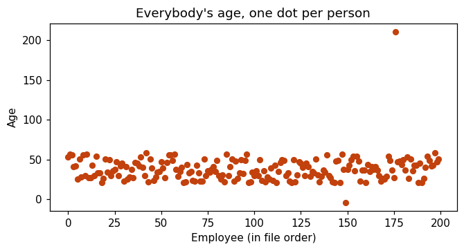
Almost everybody is in that band between twenty and sixty. That is what we expected.
And then there are two dots sitting on their own.
One up at the top. That person is two hundred and ten years old.
And one down at the bottom, below the zero line. That person is minus four years old.
Now I want you to think about what just happened.
We have been working with this file for thirteen sessions. We computed means, medians, standard deviations, quartiles, correlations, confidence intervals and p-values on it.
Every single one of those numbers was correct.
And not one of them told you that somebody in this file is minus four years old.
One picture. One second. There it is.
The same argument, in a form nobody can argue with. Six minutes.
Somebody made exactly this point fifty years ago, and made it so neatly that it is still famous.
In 1973 a statistician called Francis Anscombe wanted to prove that you cannot trust summary numbers on their own.
So he made up four small sets of numbers. Let me be clear about that, because it matters — this is not real data from anywhere. He invented it, deliberately, so that all four sets would come out with exactly the same summary statistics.
Each set has eleven pairs of numbers. He called them x and y and did not say what they measure, on purpose — so that nothing distracts you from the point.
set I set II set III set IV
mean of x 9.0 9.0 9.0 9.0
mean of y 7.50 7.50 7.50 7.50
std of y 2.03 2.03 2.03 2.03
correlation 0.816 0.816 0.816 0.816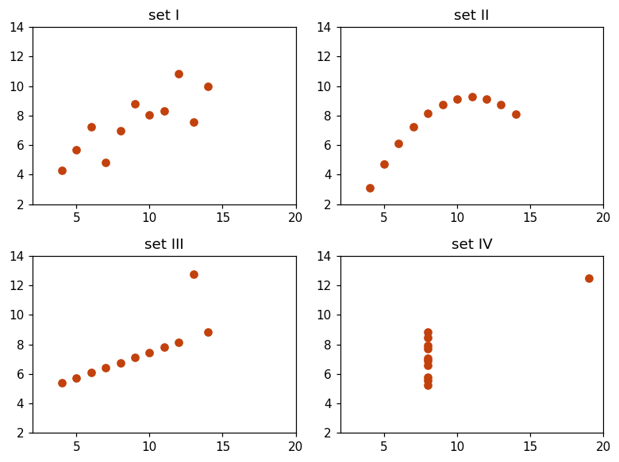
Set one is roughly a straight line going up. That is what you were all picturing.
Set two is a curve. There is a relationship, but it is not a straight one.
Set three is a perfectly straight line with one point dragged away from it.
Set four is the worst one. Ten points stacked in a vertical line, and one point far to the right. That single point is producing the whole correlation of 0.816.
Same mean. Same standard deviation. Same correlation. Four completely different pictures.
Now go back and explain the code they already ran. Nothing new on screen.
Twenty minutes ago you typed three lines and got a picture, and I told you not to worry about how. Let us go back and take those three lines apart. Then we will draw a proper chart.
import matplotlib.pyplot as plt
plt.bar(["HR", "Marketing", "Sales", "Tech"], [45, 42, 65, 49])
plt.show()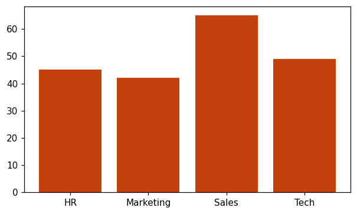
First line. import matplotlib.pyplot as plt.
Matplotlib is the library — the drawing toolbox. Pyplot is the part of it we
use. And as plt is a nickname, exactly like we write pd for pandas.
Everybody in the world writes plt. Copy it and never think about it again.
Second line. plt.bar(...).
It takes two lists. The first is what goes along the bottom — the four department names. The second is how tall each bar should be.
First name goes with first number. HR with 45. Marketing with 42. In order, one for one.
Third line, and this is the one people get wrong. plt.show().
Matplotlib does not draw as you type. It builds the picture quietly in memory and waits.
plt.show() is you saying: put it on the screen now.
show()”. They
are right, and it is worth thirty seconds..py file and nothing
appears, they will know why — and it is what stops two charts drawing on top of each
other.Three more lines, and the rule that runs through the rest of the module.
plt.bar(["HR", "Marketing", "Sales", "Tech"], [45, 42, 65, 49])
plt.title("How many employees in each department")
plt.xlabel("Department")
plt.ylabel("Number of employees")
plt.show()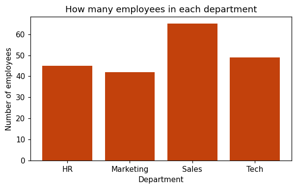
Same chart. Same data. Three extra lines, and now anybody can read it without me standing next to them explaining it.
plt.title() is what the picture is about. plt.xlabel() is what the
bottom ruler measures. plt.ylabel() is what the side ruler measures.
And notice they all go before show(). Once you have shown it, that picture is
finished and a new blank one has started. A title after show() lands on the next
chart.
Chart a column instead of four hand-typed values.
So far I typed those four numbers myself. That is fine for learning and useless for work — if the file changes tomorrow, my chart is wrong and I would not know.
Real charts come from a column. And you already know the command that counts a column.
counts = df["department"].value_counts()
print(counts)Those are the same four numbers I typed by hand, except now they came from the file.
And value_counts() gives back something with two halves. The department names
are called the index. The counts are called the values.
Two halves. And plt.bar wants exactly two lists. So they fit together.
plt.bar(counts.index, counts.values)
plt.title("How many employees in each department")
plt.xlabel("Department")
plt.ylabel("Number of employees")
plt.show()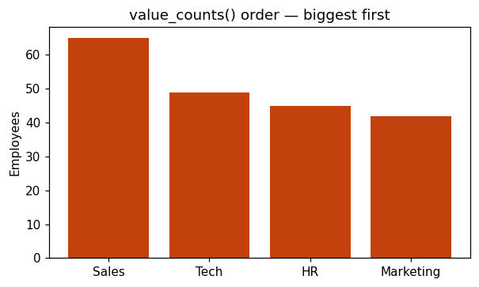
value_counts() sorts by how often, not alphabetically.
Flag it and do not fix it — sorting bars properly opens day three and it is a bigger idea than
it looks.# draw a bar chart of the "city" column
# 1. count it with value_counts()
# 2. plt.bar(counts.index, counts.values)
# 3. title, xlabel, ylabel
# 4. plt.show()plt.bar(counts) with one argument and get a mess — it needs two
lists. And somebody will put plt.title() after plt.show() and wonder where
the title went. Both are the lesson, not an interruption.Everything for the next four sessions follows one shape. Learn the shape and the chart type is one word changing.
import matplotlib.pyplot as plt # once, at the top
plt.SOMETHING( the data ) # bar / hist / scatter / boxplot
plt.title("...") # always
plt.xlabel("...") # always
plt.ylabel("...") # always
plt.show() # last
only the SOMETHING line changes between chart types.Tomorrow the word is hist. The day after it is scatter. The four lines
around it never change.
And tomorrow is the session where three weeks of statistics becomes visible. Remember skew, the number 14.06 that I told you meant “a long tail on one side”? Tomorrow you will see the tail.
Remember the fences, 26,610 and 112,994, and the two salaries outside them? Tomorrow those two become dots you can point at.
1. a correct calculation on broken data gives you a correct answer
to the wrong question. the age average really is 38.2,
and somebody in that column is MINUS FOUR.
2. numbers summarise. pictures show.
anscombe (1973, invented on purpose): four sets, same mean,
same std, same 0.816 - four completely different pictures.
3. import matplotlib.pyplot as plt - always plt.
plt.show() puts it on screen AND starts a new blank one.
everything else goes BEFORE it.
4. no title and no axis labels = not finished.Everything in order. Six steps, every code block, every board item written out. If you lose your place, this page alone is enough.
The age column
Land this: their own file, numbers they can already read. Show the summary, make them say “looks fine” out loud, then draw it.
Everyone types this
import pandas as pd
df = pd.read_csv("employees.csv")
age = df["age"].dropna()
print("how many people :", len(age))
print("average age :", round(age.mean(), 1))
print("middle age :", round(age.median(), 1))Then draw it — do not explain the code yet
import matplotlib.pyplot as plt
plt.plot(age.values, "o")
plt.show()Anscombe, 1973
Land this: the same argument, stronger. Say where the numbers come from BEFORE you show them — Francis Anscombe, 1973, invented them on purpose, eleven pairs each, x and y deliberately unlabelled so nothing distracts.
On the board
set I set II set III set IV
mean of x 9.0 9.0 9.0 9.0
mean of y 7.50 7.50 7.50 7.50
std of y 2.03 2.03 2.03 2.03
correlation 0.816 0.816 0.816 0.816The three lines, explained
Land this: go back to code they already ran in step 1. Nothing new on screen, so all the attention is on the explanation.
import matplotlib.pyplot as plt
plt.bar(["HR", "Marketing", "Sales", "Tech"], [45, 42, 65, 49])
plt.show()pyplot = the drawing half of matplotlib · plt
= the universal nickname · plt.bar takes two lists, names then heights,
one for one · plt.show() = put it on screen now, and start a fresh blank
one.show()” — Jupyter being helpful, not a rule. Write it anyway.Labels, and the rule
Land this: ask “if I send you only this picture, what are these numbers?” before adding anything. The question does the work.
plt.title("How many employees in each department")
plt.xlabel("Department")
plt.ylabel("Number of employees")show(). After it the picture is
finished and a blank one has started — the title lands on the next chart.From the real file
counts = df["department"].value_counts()
print(counts)
plt.bar(counts.index, counts.values)
plt.title("How many employees in each department")
plt.xlabel("Department")
plt.ylabel("Number of employees")
plt.show()value_counts() gives back two halves — the names are
the index, the counts are the values. plt.bar wants exactly two lists. They
fit.10 minutes on their own — walk the room
# bar chart of the "city" column, same four stepsplt.bar(counts) with one
argument instead of two · plt.title() written after plt.show().Close
import matplotlib.pyplot as plt
plt.SOMETHING( the data ) # bar / hist / scatter / boxplot
plt.title("...")
plt.xlabel("...")
plt.ylabel("...")
plt.show()
only the SOMETHING line changes.“Nowhere, and nothing. A statistician named Francis Anscombe made them up in 1973, deliberately, so that all four would produce the same mean, the same standard deviation and the same correlation. He left x and y unlabelled on purpose — if he had called them height and weight you would argue about height and weight instead of looking at the shapes.”
“No. The average of that column really is 38.2 and the arithmetic is perfect. The data is wrong. A correct calculation on broken data gives you a correct answer to the wrong question, and nothing in the calculation can warn you. Only looking can.”
“Not until you know why they are there. If somebody typed 4 as −4, that is one fix. If the system writes −4 whenever the age is missing, then every −4 in the file means missing and there could be thousands in the real database. Find out what it means first. We will come back to this properly on Thursday.”
“For one chart, Excel is faster and you should use it. The difference is repeat. When the file updates next month the Excel chart needs doing again by hand; the Python one needs running again. And you cannot put an Excel chart inside a script that runs every morning. You will use both.”
“Three usual reasons. You forgot plt.show(). Or you are running a
.py file rather than a notebook, where show() is not optional. Or you put
the drawing line after show(), so it went onto the next blank picture.”
“Because you drew twice before showing once. Matplotlib keeps adding to the same picture
until show() closes it. One show() per chart, at the end.”
“Not a fair comparison — seaborn is built on top of matplotlib. It is a shorter
way to write the common charts and we meet it on day four. You still need matplotlib underneath,
because plt.title() and plt.show() are what seaborn charts use too. Learn
this first and seaborn takes twenty minutes.”
“While you are exploring on your own, no — nobody labels a throwaway chart. The moment it goes to anybody else, in an assignment, an email or a report, yes. And in this course yes, because the habit only forms if it is not optional.”
Data Visualisation day 2 · merged class · 90 minutes · full script
Two charts that make three weeks of statistics visible. Skew 14.06 stops being a number and becomes a tail. The fences stop being arithmetic and become two dots you can point at.
A histogram bar means something completely different from a bar-chart bar, and nobody can read one until they know what. So the session starts with 45 real numbers they count into bins by hand, then draws that same chart so every bar can be checked. Only then does it go near the salary column.
Two charts. The thing you must hold firmly is what a bin is — everything else today follows from it. Read part one twice.
Yesterday's bar chart had four bars because there are four departments. The chart had no choice — the categories were already there in the column.
Salary has no categories. It is a number, and there are 199 different ones. You cannot draw 199 bars.
So the histogram chops the range into slices and counts how many values land in each slice. Each slice is a bin. The height of a bar is how many people fell into that slice.
If you draw a histogram and explain the bars afterwards, students spend the next twenty minutes quietly assuming a bar means what it meant yesterday. Counting 45 values into four groups takes three minutes and removes the confusion permanently, because they can then check every bar against a number they produced themselves.
Too few bins and everything collapses into fat bars that hide the shape. Too many and each bar is one or two people, which is noise rather than shape. Matplotlib picks ten by default. Ten is usually fine and occasionally wrong. There is no correct number — the honest teaching point is try two or three and look.
One employee earns 52 lakh. Everybody else is between 33,000 and about 1.1 lakh. So matplotlib must stretch the bottom ruler from zero to five million, and 198 of the 199 people get squashed into the first bin.
The result is one tall bar and a sliver. It is useless, and that is exactly why you draw it. It is the visual version of the mean being 95,648 when the median is 68,647 — a number they have had for three weeks without seeing what it meant.
The box plot is the five-number summary, drawn. Minimum, first quartile, median, third quartile, maximum. They computed these on statistics day 5, which was three weeks ago, and the picture is meaningless to anybody who has lost them.
They will compute fences of 26,610 and 112,994 in this session and find 2 values outside them: 116,894 and 52,00,000. Those two values are the two dots above the box.
plt.boxplot is not using some other definition of an outlier. It is using
theirs. Nothing new has been introduced today — only drawn.
Everything in a speech box is meant to be said more or less as written. Everything in a grey box is a direction for you, not words to say.
import pandas as pd
import matplotlib.pyplot as plt
df = pd.read_csv("employees.csv")
sal = df["salary"].dropna()
print(len(sal), "salaries")dropna() because two rows have no salary written in. You have done that since week
one.
Yesterday we answered “how many in each group?” with a bar chart.
Today a different question. What does one column of numbers actually look like? Are most people bunched together? Spread out? Is anybody miles away from everyone else?
There are two charts for that, and we will build both from scratch.
Nobody draws a histogram until they know what one bar means.
Before I draw anything I want to build this chart with you on the board, because the bars mean something completely different from yesterday.
Yesterday each bar was a department. Four departments, four bars. Easy.
But look at salary. It is a number, and there are a hundred and ninety-nine different salaries in this file. I cannot draw a hundred and ninety-nine bars.
So let us take something smaller and do it by hand.
hr = df[df["department"] == "HR"]["experience"]
print(len(hr), "people")
print(sorted(hr))Forty-five people in HR. Their years of experience, sorted so they are easy to read.
I am not going to draw forty-five bars either. Instead I am going to chop the range into four groups and count how many people fall into each one.
Zero to three. Four to seven. Eight to eleven. Twelve to fifteen.
Count them with me.
0 to 3 0,1,1,2,2,2,3,3,3,3 -> 10 people
4 to 7 4,4,4,4,4,4,5,5,6,6,7,7,7,7,7 -> 15 people
8 to 11 8,8,9,9,9,9,10,10,10,11,11,11 -> 12 people
12 to 15 12,13,13,13,14,14,14,15 -> 8 people
----------
45 peopleTen, fifteen, twelve, eight. That adds up to forty-five, which is everybody.
Each of those four groups is called a bin. And the chart that draws them has a name — a histogram.
Now watch. I am going to ask Python for exactly what we just did.
plt.hist(hr, bins=4)
plt.title("HR: years of experience")
plt.xlabel("Years of experience")
plt.ylabel("How many people")
plt.show()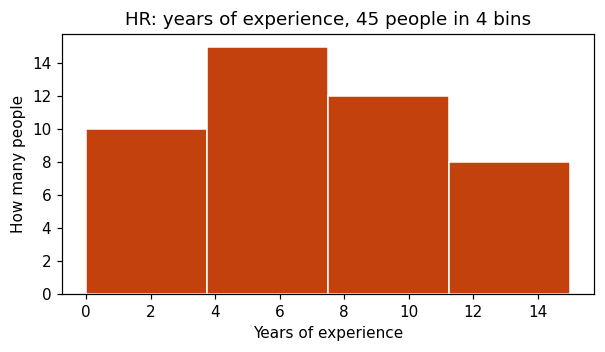
Show the broken chart. Leave it up. Let them diagnose it.
Now we know what a histogram is, so let us point it at the salary column.
plt.hist(sal)
plt.title("Salary - every row")
plt.xlabel("Salary")
plt.ylabel("How many people")
plt.show()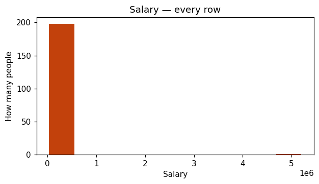
Look at the bottom of the chart. It goes all the way to five million.
Why? Because one person in this file earns fifty-two lakh. Python has to fit that person in, so it stretches the ruler to five million — and the other hundred and ninety-eight people, who all earn between thirty-three thousand and about one lakh, end up inside that single first bar.
One row out of one hundred and ninety-nine destroyed the picture.
And we already built the tool to deal with it, three weeks ago. The one point five times IQR rule. Let us use it.
q1 = sal.quantile(0.25) # 25% of people earn less than this
q3 = sal.quantile(0.75) # 75% of people earn less than this
iqr = q3 - q1 # the middle half, measured
low = q1 - 1.5*iqr
high = q3 + 1.5*iqr
pop = sal[(sal >= low) & (sal <= high)]
print("Q1:", round(q1), " Q3:", round(q3), " IQR:", round(iqr))
print("fences:", round(low), "to", round(high))
print("kept :", len(pop), "of", len(sal))Two people fall outside those fences. Everybody else stays.
plt.hist(pop, bins=20)
plt.title("Salary - outliers removed")
plt.xlabel("Salary")
plt.ylabel("How many people")
plt.show()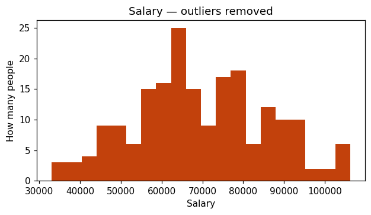
Now look at it properly. Most people sit around sixty to seventy thousand. And then there is a tail stretching off to the right — fewer and fewer people, earning more and more.
That tail has a name, and you already know it. We called it skew, and we computed it as fourteen point zero six.
For three weeks that was a number I asked you to trust. That is the tail. Right-skewed means the tail points right.
The one honest trap in this chart. Show both, give no rule.
I typed bins=20 just now and did not explain it. On the HR chart I typed
bins=4 because we had counted four groups by hand.
So the number of bins is your choice. And it changes what you see.
plt.hist(pop, bins=5)
plt.title("bins = 5")
plt.show()
plt.hist(pop, bins=50)
plt.title("bins = 50")
plt.show()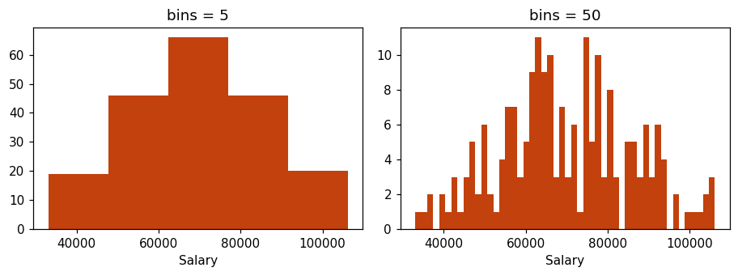
Same numbers. Same people. Two different pictures.
Five bins is too few — everything collapses into fat bars and the shape disappears.
Fifty is too many — now each bar is one or two people, and you are looking at randomness rather than shape.
plt.hist(pop, bins=20)
plt.axvline(pop.mean(), color="red")
plt.axvline(pop.median(), color="blue")
plt.title("Mean and median on the same picture")
plt.xlabel("Salary")
plt.show()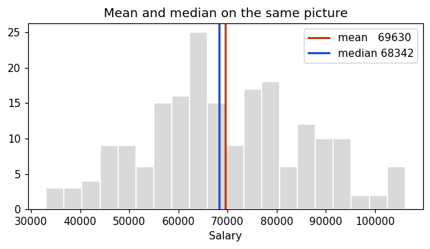
axvline draws one vertical line. The mean sits to the right of the
median — pulled by the tail.axvline means a vertical line across the chart. You give it one number
— where on the bottom ruler to stand the line.
And look where they land. The mean is to the right of the median. The tail pulled it there.
That is the rule from day four, drawn. When the tail points right, the mean is bigger than the median. You memorised that sentence. Now you can see why it is true.
Re-derive the five numbers, then draw them. Do not assume day 5 survived.
Second chart. And again I want the numbers before the picture.
There are five numbers that describe any column, and you worked them out on day five of statistics. Let us get them back on screen.
print("minimum:", round(sal.min()))
print("Q1 :", round(sal.quantile(0.25)))
print("median :", round(sal.median()))
print("Q3 :", round(sal.quantile(0.75)))
print("maximum:", round(sal.max()))Lowest paid person: thirty-three thousand. Highest: fifty-two lakh.
A quarter of people earn below fifty-nine thousand. Half earn below sixty-eight thousand. Three quarters earn below eighty thousand six hundred.
Five numbers. There is a chart that draws all five at once, and you have already seen me draw it on the board on day five. It is called a box plot.
plt.boxplot(sal)
plt.title("Salary - every row")
plt.ylabel("Salary")
plt.show()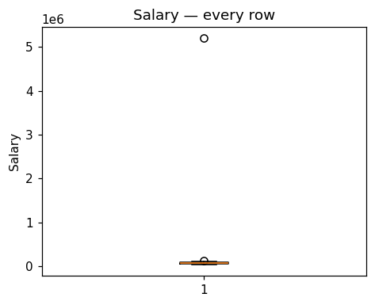
The box runs from Q1 to Q3 — from fifty-nine thousand to eighty thousand six hundred. That is the middle half of everybody. A quarter of people below it, a quarter above it.
The line inside the box is the median, sixty-eight thousand six hundred. Not the mean. That trips people up, so say it to yourself — the line is the median.
The whiskers, the lines coming out of the box, reach out to the furthest value that is still inside the fences.
And the two circles are outliers.
Python did not guess. It used the same rule you used earlier in this session.
Quartile one minus one point five times the IQR. Quartile three plus one point five times the IQR. Twenty-six thousand six hundred and ten, and one lakh twelve thousand nine hundred and ninety-four.
And two salaries fell outside: one lakh sixteen thousand, and fifty-two lakh.
Those two values are those two dots. You did that arithmetic yourself, twenty minutes ago and again three weeks ago. This is the same answer, drawn.
plt.boxplot is not using some other definition of an
outlier. It is using yours. Nothing new has been introduced today — only drawn.
Where the box plot beats the histogram.
A histogram shows one column beautifully. But it can only show one at a time.
The box plot's real advantage is that you can line several up and compare them in a single look.
clean = df[(df["salary"] >= low) & (df["salary"] <= high)]
order = ["HR", "Marketing", "Sales", "Tech"]
groups = []
for d in order:
groups.append(clean[clean["department"] == d]["salary"])
plt.boxplot(groups, tick_labels=order)
plt.title("Salary by department")
plt.ylabel("Salary")
plt.show()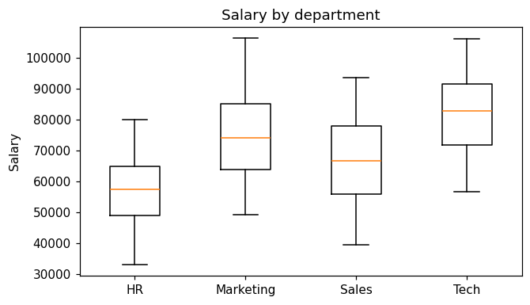
Two new things in that code, and both are small.
The loop builds a list. For each department it pulls out that department's salaries and
adds it to groups. So groups ends up holding four sets of salaries.
And plt.boxplot can take a list of groups instead of one column — it
draws one box for each. tick_labels is what goes under each box. Without it you get 1,
2, 3, 4 and nobody knows which is which.
Now read it. Tech sits highest. HR sits lowest. Marketing and Sales overlap almost completely.
And here is what four averages in a table would not have told you — look at how tall the boxes are. That is the spread. Two departments can have a similar middle and completely different consistency.
# 1. a histogram of "height_cm"
# try bins=5, then bins=30. which one tells you more?
# 2. a box plot of "experience", one box per department
# same loop pattern as above
# titles and labels on both.HISTOGRAM BOX PLOT
one column, in detail one column, as 5 numbers
shows the SHAPE shows OUTLIERS as dots
you choose the bins you choose nothing
one at a time several side by side
both answer: "what does this column look like?"
neither answers: "are two columns related?" <- tomorrowTomorrow, two more charts. One compares categories properly — including finally fixing that ordering problem from yesterday. And one shows whether two columns move together.
And in that second one you are going to see something in this file that no number we have computed has shown you yet.
1. BAR CHART = one bar per CATEGORY
HISTOGRAM = one bar per RANGE of numbers
we counted 45 people into 4 bins by hand. that is all a bin is.
2. one extreme row can ruin a histogram.
the fix is the same 1.5 x IQR rule from statistics day 5.
3. the box = middle half (Q1 to Q3). the line = MEDIAN, not mean.
the dots = outliers, by the SAME rule you worked out yourself.
4. tail points right -> mean sits right of median.
you memorised it. now you have seen it.Everything in order. Seven steps, every code block, every board item written out. If you lose your place, this page alone is enough.
Set up
import pandas as pd
import matplotlib.pyplot as plt
df = pd.read_csv("employees.csv")
sal = df["salary"].dropna()Count it by hand first
Land this: the block that decides the session. Nobody draws a histogram until they know what one bar means. Board first, laptops can stay shut.
Print HR's experience
hr = df[df["department"] == "HR"]["experience"]
print(len(hr), "people")
print(sorted(hr))Count out loud together — 2 minutes, the best-spent in the session
0 to 3 0,1,1,2,2,2,3,3,3,3 -> 10
4 to 7 4,4,4,4,4,4,5,5,6,6,7,7,7,7,7 -> 15
8 to 11 8,8,9,9,9,9,10,10,10,11,11,11 -> 12
12 to 15 12,13,13,13,14,14,14,15 -> 8
---
45Then draw exactly that
plt.hist(hr, bins=4)
plt.title("HR: years of experience")
plt.xlabel("Years of experience")
plt.ylabel("How many people")
plt.show()The real column, and it breaks
Land this: draw it, then leave it up for two full minutes and make them diagnose it. Do not fix it early.
plt.hist(sal)
plt.title("Salary - every row")
plt.show()The fences, worked out again from scratch
q1 = sal.quantile(0.25)
q3 = sal.quantile(0.75)
iqr = q3 - q1
low, high = q1 - 1.5*iqr, q3 + 1.5*iqr
pop = sal[(sal >= low) & (sal <= high)]
print("Q1:", round(q1), " Q3:", round(q3), " IQR:", round(iqr))
print("fences:", round(low), "to", round(high))
print("kept :", len(pop), "of", len(sal))
plt.hist(pop, bins=20)
plt.show()Bins change the story
plt.hist(pop, bins=5) # shape hidden
plt.hist(pop, bins=50) # noise, not shapeThen the averages on top
plt.hist(pop, bins=20)
plt.axvline(pop.mean(), color="red")
plt.axvline(pop.median(), color="blue")
plt.show()axvline = one vertical line, you give it where to stand.Five numbers, then the box plot
Land this: print the five numbers first. Do not say “remember day five” — half the room will not, and the picture is unreadable without them.
print("minimum:", round(sal.min()))
print("Q1 :", round(sal.quantile(0.25)))
print("median :", round(sal.median()))
print("Q3 :", round(sal.quantile(0.75)))
print("maximum:", round(sal.max()))
plt.boxplot(sal)
plt.title("Salary - every row")
plt.ylabel("Salary")
plt.show()Four boxes, one picture
clean = df[(df["salary"] >= low) & (df["salary"] <= high)]
order = ["HR", "Marketing", "Sales", "Tech"]
groups = []
for d in order:
groups.append(clean[clean["department"] == d]["salary"])
plt.boxplot(groups, tick_labels=order)
plt.title("Salary by department")
plt.ylabel("Salary")
plt.show()boxplot takes a list of groups and tick_labels
names them, else you get 1, 2, 3, 4.10 minutes on their own — walk the room
# 1. histogram of "height_cm" - try bins=5, then bins=30
# 2. box plot of "experience", one box per departmentClose
HISTOGRAM BOX PLOT
one column, in detail one column, as 5 numbers
shows the SHAPE shows OUTLIERS as dots
you choose the bins you choose nothing
one at a time several side by side“A bar chart has one bar per category — four departments, four bars. A histogram has one bar per range of numbers, because there are no categories to use. That is why histogram bars usually touch and bar-chart bars do not. It is a real interview question, so learn the one sentence.”
“Python does, once you tell it how many bins you want. It takes the lowest value and the highest value, and chops that range into equal slices. That is why we counted HR's experience into four groups of four years — zero to three, four to seven, and so on. Equal width slices, automatically.”
“No — and be careful here. Draw it with them first, because that is how you find out they exist. Then decide. If it is a data-entry error, like an age of minus four, remove it. If it is a real person who genuinely earns 52 lakh, it is real and you report it separately rather than deleting it. Removing a number because it is inconvenient is not analysis.”
“There is no correct answer, and anybody who gives you one is oversimplifying. Try twenty, try thirty, look at both. What you must not do is try ten different values and keep the one that supports the story you wanted — that is the same mistake as running twenty tests and reporting the one that worked.”
“No, the median. Almost everybody assumes mean, so remember it by what the box is made of: the box is built from quartiles, and the median is the middle quartile. It is all quartiles, no averages anywhere in that picture.”
“Because the box plot has a rule for what counts as an outlier — 1.5 times the IQR — and the histogram does not. A histogram just shows you where everybody is and lets you judge. That is the trade: the box plot decides for you, the histogram shows you more detail.”
“You passed it a column with an extreme value in it, so everything else got compressed, or
you passed it a column that is not numbers. A box plot of department cannot work, because
quartiles of a name do not exist.”
“Because the line of code does not tell you what it means. Anybody can type
plt.boxplot. Knowing that the dots are the 1.5 IQR rule, that the line is the median, and
that a long upper tail means the mean is unreliable — that is what you have and the person who
only learnt the command does not.”
Data Visualisation day 3 · merged class · 90 minutes · full script
Bar charts done properly — including the ordering trap and the column that should never be averaged. Then one small change to day one's picture turns it into a scatter plot, and 0.079 becomes 0.607.
On day one they drew every age as a dot, with position in the file along the bottom — an x axis that meant nothing. Swap that for a second real column and the same picture becomes a scatter plot. One change, and a slope appears. Build it that way and nobody has to learn a new chart today.
value_counts() sorts by
frequency. For department that helps; for rating it destroys the meaning. That difference is
statistics day 2 deciding a chart for them..astype(str), do not slip it in. Without it the dept_id bars are
spaced by value like a number line. It is a one-line fix with a real reason, and silently typing it
is exactly the habit the class has complained about.Three things: the ordering rule, why astype(str)
is needed, and the one sentence that makes a scatter plot obvious.
value_counts() always sorts biggest first. For department that is helpful
— the question is usually “which is biggest”, and sorted bars answer it
instantly.
For rating it is destructive. Poor, Average, Good, Excellent have a natural order, and sorting by frequency scrambles it into Poor, Good, Excellent, Average — which reads as though Average is worse than Excellent.
df["rating"].value_counts()[order] asks for the counts back in the order of a
list you wrote. They have never indexed a Series with a list before. It is one line, and it
deserves a sentence rather than being typed past.
dept_id needs .astype(str)dept_id holds 1, 2, 3, 4. If you hand those to plt.bar as numbers,
matplotlib treats the bottom ruler as a number line and positions each bar at its value
— so the ruler shows 1.0, 1.5, 2.0 and the bars sit at measured distances apart.
.astype(str) turns them into the text “1”, “2”,
“3”, “4”. Now matplotlib treats them as four names and spaces them
evenly, like the department chart.
dept_id appearing as a chart decision: the column
looks numeric and is not. You have to tell the chart so, exactly as you had to tell
yourself so on day one of statistics.
On day one they plotted every age as a dot. Along the bottom was position in the file — row 1, row 2, row 3. That axis carried no information at all; it was only there to spread the dots out so the two strays could be seen.
Swap that axis for a second real column and the same picture becomes a scatter plot. Each dot is still one person. Only the question changed — from “what do these values look like?” to “do these two things move together?”
On statistics day 7 they got Pearson 0.079 and Spearman 0.61 on these two columns and you told them one extreme salary was the reason. Today: draw it raw, remove two rows with the fences they already have, draw it again, and Pearson comes back 0.607 — agreeing with the Spearman they got three weeks ago.
They met the −4 and the 210 on day one. The 52 lakh is new to this picture. The point today is not that the data is dirty — they know that. It is that a chart you drew for a different reason handed you a problem in a column you were not asking about.
Everything in a speech box is meant to be said more or less as written. Everything in a grey box is a direction for you, not words to say.
Answer the ordering question properly, and teach one new line to do it.
On day one somebody asked why Sales came first in our bar chart, when it was third in the list I typed by hand. I said we would deal with it today.
import pandas as pd
import matplotlib.pyplot as plt
df = pd.read_csv("employees.csv")
counts = df["department"].value_counts()
plt.bar(counts.index, counts.values)
plt.title("Employees per department")
plt.ylabel("Number of employees")
plt.show()value_counts() always sorts biggest first. And here that is genuinely useful. If the
question is “which department is biggest”, the sorted chart answers it before you have
finished reading the title.
Now watch the same behaviour on a different column.
print(df["rating"].value_counts())Poor, Good, Excellent, Average. That is nonsense as an order.
These four have a meaning order — Poor, then Average, then Good, then Excellent. And sorting them by how often they occur throws it away.
This is day two of statistics deciding a chart for you. Department is nominal — no natural order, so sorting by size is fine. Rating is ordinal — it has an order, and you must keep it.
order = ["Poor", "Average", "Good", "Excellent"]
counts = df["rating"].value_counts()[order]
print(counts)Look carefully at that second line, because there is something in it you have not seen.
value_counts() gives back the four counts. Then I put a list inside square
brackets after it.
That says: give me those counts back, in the order of this list. I wrote the order I wanted, and asked for the results arranged that way.
Now the chart reads left to right from worst to best, and anybody can follow it.
counts = df["department"].value_counts()
plt.barh(counts.index, counts.values)
plt.title("Employees per department")
plt.xlabel("Number of employees")
plt.show()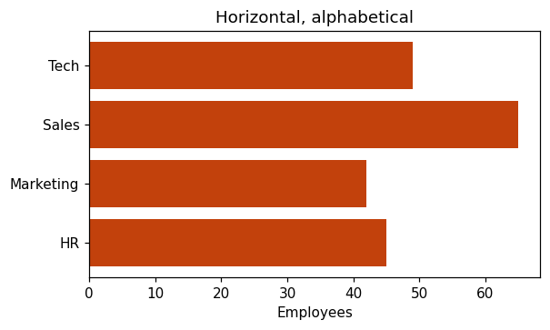
barh — h for horizontal. Note the labels swap sides.barh. Use it when the category names are too long to sit under vertical bars without
overlapping.
One thing to watch: the two rulers swap jobs. The counts are now along the bottom, so they go on
xlabel, not ylabel. People get that wrong constantly.
Close the hook that opened the module — and explain the one odd line.
One more bar chart, and this one goes back to the very first day of statistics.
Remember dept_id? The column of numbers that turned out to be department names in
disguise.
counts = df["dept_id"].value_counts().sort_index()
print(counts)
plt.bar(counts.index, counts.values)
plt.show()One new thing there. sort_index() means put them back in order of the label
— 1, 2, 3, 4 — instead of by size. We want them in their own order here, not biggest
first.
Now look at the chart that came out.
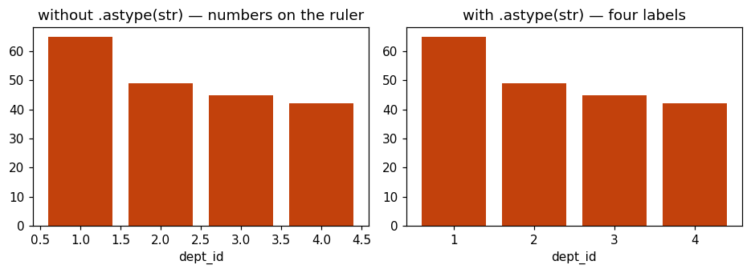
.astype(str), four evenly spaced labels.Look at the bottom ruler on the left. One point zero. One point five. Two point zero.
Matplotlib was handed four numbers, so it did what you do with numbers — it built a number line and placed each bar at its value.
But there is no department one point five. We do not want a number line. We want four labels.
plt.bar(counts.index.astype(str), counts.values)
plt.title("dept_id")
plt.xlabel("dept_id")
plt.ylabel("Number of employees")
plt.show()
print("the 'average' dept_id:", round(df["dept_id"].mean(), 2)).astype(str) turns the numbers 1, 2, 3, 4 into the text “1”,
“2”, “3”, “4”.
Now matplotlib sees four names instead of four numbers, and spaces them evenly — exactly like the department chart.
And that is the whole lesson of this column, showing up again as a chart decision. It looks numeric and it is not. You had to tell yourself that on day one of statistics. Today you had to tell the chart.
Four bars. Four departments. There is no order between them — department two is not “more” than department one.
And the average is two point three two. Show me where that is.
It is in the gap. There is nothing there. A valid calculation describing nothing at all.
That was the first thing I showed you in this entire module. Now you can see that it is.
The scatter plot arrives as one change, not as a new topic.
Everything so far today has been one column at a time. Now a different kind of question altogether: do two things move together?
And the chart for it is not new. You drew one on day one without me telling you what it was.
Think back to the age picture. Every person was a dot. Up the side was their age.
But what was along the bottom?
Position in the file. Row one, row two, row three.
That axis carried no information. Nobody cares whether somebody is the fortieth row of a spreadsheet. It was only there to spread the dots out.
So here is the whole idea for the next half hour. What if we put something real along the bottom instead?
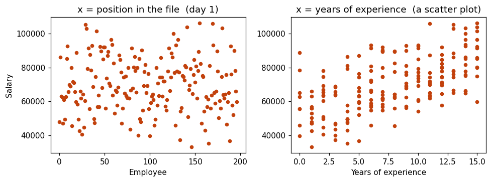
On the left, salary against position in the file. A shapeless cloud, because the bottom ruler means nothing.
On the right, exactly the same salaries — but the bottom ruler is now years of experience.
Same dots. Same heights. One axis changed, and a shape appeared.
That picture on the right has a name. It is a scatter plot, and it is the chart for “do these two move together?”
The biggest payoff in the module. Twenty minutes, and do not hurry it.
plt.scatter(df["experience"], df["salary"])
plt.title("Experience against salary")
plt.xlabel("Years of experience")
plt.ylabel("Salary")
plt.show()
print("correlation:", round(df["experience"].corr(df["salary"]), 3))plt.scatter takes two columns. The first goes along the bottom, the second up
the side. That is the only difference from everything else we have typed.
Same problem as yesterday. One person at fifty-two lakh, so the side ruler stretches that far and everybody else is a flat smear.
And look at the correlation. Zero point zero seven nine. That says almost no relationship between experience and salary.
Does that sound right to you? Does experience really have nothing to do with pay?
We saw this exact number on day seven of statistics. Pearson gave 0.079, Spearman gave 0.61, and I told you the outlier was the reason. Today we prove it.
sal = df["salary"].dropna()
q1, q3 = sal.quantile(0.25), sal.quantile(0.75)
iqr = q3 - q1
low, high = q1 - 1.5*iqr, q3 + 1.5*iqr
clean = df[(df["salary"] >= low) & (df["salary"] <= high)]
plt.scatter(clean["experience"], clean["salary"])
plt.title("Experience against salary")
plt.xlabel("Years of experience")
plt.ylabel("Salary")
plt.show()
print("correlation now:", round(clean["experience"].corr(clean["salary"]), 3))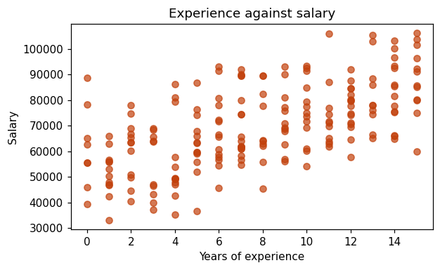
experience against salary
with every row correlation = 0.079 "no relationship"
with 2 rows gone correlation = 0.607 "a solid relationship"
the data did not change. two rows out of 199 did.
and on statistics day 7, SPEARMAN gave us 0.61 on the raw file.
spearman was right all along. it ignores the outlier by design.Zero point zero seven nine, to zero point six zero seven. Two rows out of a hundred and ninety-nine. Nothing else changed.
And look back at day seven. Spearman gave us zero point six one on the raw file — the same answer we have just got the hard way.
Spearman was right all along, because it works on order rather than distance, so one huge value cannot drag it.
Three weeks ago I asked you to take that on trust. There it is.
import numpy as np
plt.scatter(clean["experience"], clean["salary"])
m, b = np.polyfit(clean["experience"], clean["salary"], 1)
xs = np.array([clean["experience"].min(), clean["experience"].max()])
plt.plot(xs, m*xs + b, color="red")
plt.title("The same picture, with a trend line")
plt.xlabel("Years of experience")
plt.ylabel("Salary")
plt.show()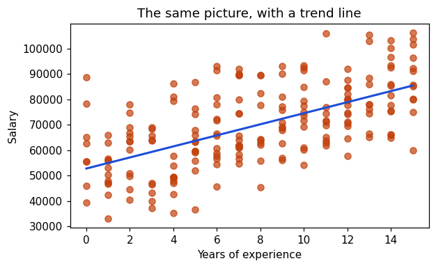
Three lines there, and I want you to copy them rather than understand them today. Let me tell you what each one does, and then we move on.
np.polyfit finds the straight line that fits best through the dots. It hands
back two numbers — how steep the line is, and where it starts.
xs is just two numbers: the smallest experience and the largest. A straight line only
needs two points.
And plt.plot draws a line between them.
What matters is what the line is. That is the straight line correlation was measuring all along. When we said 0.607, we meant the dots sit fairly close to that line.
polyfit is least
squares and it belongs to a regression course. “The line of best fit, and correlation says how
close the dots are to it” is the right amount for a fresher.The most practical habit in the module, taught by letting them find it.
plt.scatter(df["age"], df["salary"])
plt.title("Age against salary")
plt.xlabel("Age")
plt.ylabel("Salary")
plt.show()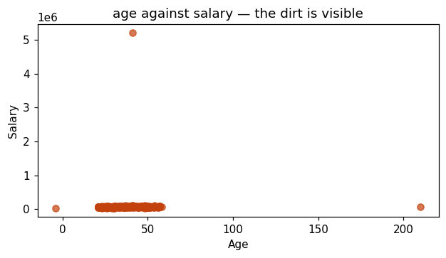
Three problems, in one picture, in about one second.
Two of them you already know — minus four and two hundred and ten. We found those on day one, when we drew the age column on its own.
But now look at what this chart just did.
I asked it about age against salary. I was not looking for bad data at all. And it handed me a problem in the salary column, for free.
# 1. bar chart of the "education" column
# careful: Diploma, Bachelors, Masters has an ORDER.
# write the order down and force it, like we did with rating.
# 2. scatter plot of height_cm against salary
# what do you expect to see? draw it, then compute the correlation.
# were you right?WHAT I WANT TO KNOW CHART
how many in each category? bar
what does this one column look like? histogram
what is the middle, spread, outliers? box plot
do these two columns move together? scatter
the first three show ONE column.
only the scatter shows TWO.Four charts. Four different questions. That table is most of what this module is.
Tomorrow we draw every one of them again — in one line each, instead of five. The library is called seaborn, and once you have seen it you will not go back.
But you needed this first. Seaborn is built on top of matplotlib, and every title, label and
show() you have learnt this week still works exactly the same way tomorrow.
1. NOMINAL data -> let it sort by size. it helps.
ORDINAL data -> write the order down and force it. always.
counts = df["rating"].value_counts()[order]
2. dept_id looks numeric and is NOT.
.astype(str) tells the CHART so. 2.32 sits in a gap.
3. a scatter plot is day one's picture with a MEANINGFUL x axis.
one row moved the correlation from 0.079 to 0.607.
spearman got it right on day 7 - it uses ORDER, not distance.
4. PLOT BEFORE YOU ANALYSE.
i asked about age and salary. it handed me a problem
in a column i was not even asking about.Everything in order. Six steps, every code block, every board item written out. If you lose your place, this page alone is enough.
Bar charts, and ordering
Land this: value_counts() sorting by size helps for
department and destroys rating. That is nominal vs ordinal, from statistics day 2.
counts = df["department"].value_counts()
plt.bar(counts.index, counts.values)
plt.show()
print(df["rating"].value_counts())The fix — and it contains a NEW idea
order = ["Poor", "Average", "Good", "Excellent"]
counts = df["rating"].value_counts()[order]value_counts() says give me those counts back in the order of
this list. They have never indexed a Series with a list.barh in 30 seconds — long labels only, and the counts move to
xlabel.2.32, drawn
Land this: draw it the obvious way first so the number-line axis appears. The fix then has a reason instead of being a magic word.
counts = df["dept_id"].value_counts().sort_index()
plt.bar(counts.index, counts.values)
plt.show()sort_index() = back in label order (1,2,3,4), not biggest
first.One word fixes it
plt.bar(counts.index.astype(str), counts.values)
print(round(df["dept_id"].mean(), 2)).astype(str) turns 1,2,3,4 into the text “1”,
“2”... so matplotlib spaces them evenly, like names.A chart they have already drawn
Land this: the scatter plot is not a new chart. It is day one's picture with one axis changed. Build it that way and nobody has to learn anything new.
0.079 becomes 0.607
Land this: the payoff of the module. Twenty minutes. Do not hurry. Draw raw, diagnose, trim, redraw, recompute.
plt.scatter(df["experience"], df["salary"])
plt.show()
print(round(df["experience"].corr(df["salary"]), 3))plt.scatter takes two columns — first along the bottom,
second up the side.Trim and redraw
clean = df[(df["salary"] >= low) & (df["salary"] <= high)]
plt.scatter(clean["experience"], clean["salary"])
plt.show()
print(round(clean["experience"].corr(clean["salary"]), 3))Trend line — say which bits to copy
m, b = np.polyfit(clean["experience"], clean["salary"], 1)
xs = np.array([clean["experience"].min(), clean["experience"].max()])
plt.plot(xs, m*xs + b, color="red")polyfit = the best straight line, returns steepness and
where it starts · xs = just two numbers, smallest and largest, because a
line only needs two points · plt.plot draws between them.A chart you drew for a different reason
Land this: type it, show it, say nothing. Let the room find all three.
plt.scatter(df["age"], df["salary"])
plt.title("Age against salary")
plt.xlabel("Age"); plt.ylabel("Salary")
plt.show()10 minutes on their own
# 1. bar of "education" - Diploma/Bachelors/Masters has an ORDER
# 2. scatter of height_cm vs salary, then the correlationClose
WHAT I WANT TO KNOW CHART
how many in each category? bar
what does this column look like? histogram
middle, spread, outliers? box plot
do these two move together? scatter
first three show ONE column. only scatter shows TWO.value_counts() actually do?”“It picks the results out in the order you asked for. value_counts() gives you
four counts labelled Poor, Average, Good, Excellent. Handing it a list of those four names says
‘give them back to me in this order’. If you misspell one, you get an error —
which is useful, because it means you cannot silently lose a category.”
.astype(str) but the department
one did not?”“Because department was already text. dept_id is numbers, and matplotlib treats
numbers as positions on a ruler rather than as names. .astype(str) is you telling the
chart that these digits are labels, not quantities — which is exactly the thing that
column has been teaching us since day one.”
“No — you should always look first, then decide, then say what you decided. Here it was one data point distorting a real relationship, so removing it was right. If it had been a genuine high earner and the question was about total payroll, removing it would have been wrong. The unforgivable thing is removing it quietly.”
“Because Spearman works on order, not distance. To Spearman the 52-lakh earner is simply the highest paid person — it does not matter whether they earn 52 lakh or 52 crore, they are still number one. Pearson uses the actual distance, so an enormous value drags it. That is why we taught both.”
“It is a solid relationship, and be careful with the word good. It means experience explains a fair part of salary and other things explain the rest — department, city, how well somebody negotiated. A correlation being high does not mean you have found the cause. That was day seven and it has not changed.”
“Too many dots on top of each other. Add alpha=0.5 to make them see-through, so
where dots pile up it looks darker. With a few hundred rows that is enough; with a million you would
use a different chart entirely.”
“Because you do not know why it is there. If somebody typed 4 as −4 that is one fix. If the export tool writes −4 whenever a value is missing, then every −4 in the file means missing, and there may be thousands of them in the real database. Find out what it means before you decide what to do with it.”
“Yes, and you will tomorrow. Seaborn lets you colour the dots by a third column with one extra word, and suddenly you can see experience, salary and department in a single picture. That is the main reason it is worth learning.”
Data Visualisation day 4 · merged class · 90 minutes · full script
Every chart from this week, rewritten in a single line. Then the two things matplotlib could not do easily — a third column for free, and every correlation at once.
Three days of writing five lines per chart is what makes
sns.histplot(data=df, x="salary") land as relief.
Same reason a CSV read by hand makes read_csv land. And it is honest: seaborn
sits on top of matplotlib, so everything they already know still
runs.
plt.title() and plt.show() still work, unchanged, because
underneath it is matplotlib.hue is the reason to learn seaborn. One extra word puts a third column into
any chart. Doing that in matplotlib takes a loop. This is the genuinely new capability, not the
shorter syntax.There is almost nothing new here conceptually — which is the point. Two things worth being precise about: what seaborn actually is, and how to read a heatmap.
Seaborn does not draw anything itself. It calls matplotlib for you, with sensible defaults already
chosen. That is why plt.title(), plt.xlabel() and plt.show()
all still work on a seaborn chart — underneath, it is a matplotlib chart.
Nearly all of them take the same three things: the DataFrame, which column goes along the bottom, and which goes up the side.
x.Once they have that, every chart in this session is one line with a different function name.
hue is the real reason to switchShorter syntax is convenience. hue is capability. Colouring a scatter plot by
department in matplotlib means looping over the departments and plotting each separately. In seaborn
it is one word, and the legend appears on its own.
On statistics day 7 they computed correlations one pair at a time. A heatmap computes every pair in the table and colours each cell by its value. Four numeric columns give sixteen cells, of which six are the pairs that matter.
.corr() silently ignores every non-numeric column. Department, city, education and
rating simply do not appear. A student sees a heatmap without department in it and
concludes department does not correlate with salary — when it was never tested.
Everything in a speech box is meant to be said more or less as written. Everything in a grey box is a direction for you, not words to say.
Show the comparison. Do not explain first.
For three days you have written five lines for every chart. Today I show you the same charts in one line.
Before you feel cheated — you have not wasted three days, and I will show you why in a moment.
import pandas as pd
import matplotlib.pyplot as plt
import seaborn as sns
df = pd.read_csv("employees.csv")sns. Same idea as pd and plt — the nickname everyone
uses. Do not invent your own.
And notice we still import matplotlib. That is not a mistake.
# what you wrote on day one
counts = df["department"].value_counts()
plt.bar(counts.index, counts.values)
plt.title("Employees per department")
plt.ylabel("Number of employees")
plt.show()
# the same chart, today
sns.countplot(data=df, x="department")
plt.show()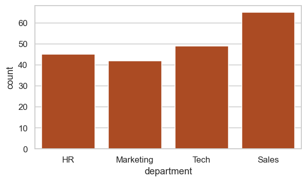
One line instead of four. And look — it labelled both rulers on its own.
It could do that because I handed it the whole table and told it which column to use. It knows the column is called department, so it writes that under the chart. Matplotlib only ever got two anonymous lists, so it had nothing to label them with.
That is the difference in one sentence. Matplotlib takes numbers. Seaborn takes a table and a column name.
plt.show() still works
on the line above. Underneath, it is a matplotlib chart.
sns.SOMETHING( data=df, x="column", y="column" )
data= the whole DataFrame. not a column. the TABLE.
x= the column NAME, in quotes, along the bottom
y= the column NAME up the side (some charts need only x)
then plt.title(...) and plt.show() exactly as before.Fast. Three charts, three one-liners. They know what all of them mean already.
hue and the heatmap later.sal = df["salary"].dropna()
q1, q3 = sal.quantile(0.25), sal.quantile(0.75)
iqr = q3 - q1
low, high = q1 - 1.5*iqr, q3 + 1.5*iqr
clean = df[(df.salary >= low) & (df.salary <= high)]
sns.histplot(data=clean, x="salary", bins=20)
plt.show()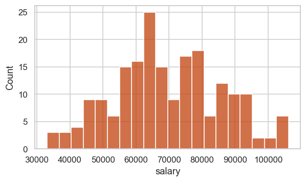
bins works exactly as
before.sns.boxplot(data=clean, x="department", y="salary")
plt.show()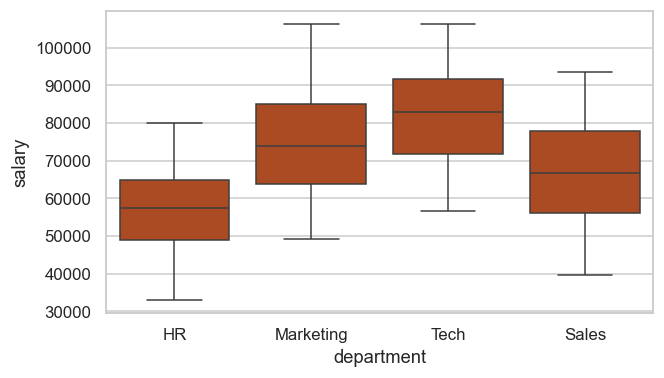
Compare that with Tuesday. On Tuesday we had to build a list of four groups by hand and then pass labels separately.
Here I named two columns. x is what splits the boxes, y is what gets
measured. Seaborn did the grouping itself.
department column, found four distinct values, and made
one box for each. That is what handing over the whole table buys you.sns.scatterplot(data=clean, x="experience", y="salary")
plt.show()Three charts. Three lines. Everything you learnt this week about what these charts mean is unchanged — only the typing got shorter.
Now the part that is not just shorter typing.
The actual reason to learn seaborn. This is capability, not convenience.
Every chart we have drawn shows one or two columns. A scatter shows two — experience and salary.
What if I want to see a third? What if I want to know whether the relationship between experience and salary is the same in every department?
In matplotlib that is a loop. In seaborn it is one word.
sns.scatterplot(data=clean, x="experience", y="salary", hue="department")
plt.title("Experience against salary, by department")
plt.show()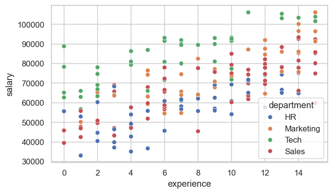
hue="department". Four colours, and the legend appeared on its own.hue. It means colour.
One word, and now every dot is coloured by which department that person is in. And seaborn built the legend for you — you did not ask for it.
Now the chart is answering a harder question. Not just “does experience relate to salary”, but “is it the same story in every department?”
On day thirteen of statistics we ran a test comparing Tech and HR salaries and got a p-value of basically zero. We said the difference was real.
Here it is, in colour. The Tech dots sit above the HR dots at the same level of experience.
hue works on almost every seaborn chart, and it turns a two-column picture into
a three-column one for free.
# 1. sns.boxplot of salary by department, with hue="education"
# 2. sns.countplot of department, with hue="rating"
# look at both. which one is actually readable?hue is powerful and it is easy to overuse.
Let them discover the limit rather than being told it — that is tomorrow's session
starting.The biggest payoff. Warn about the trap before drawing, not after.
On day seven of statistics we computed correlations. One pair at a time. Experience against salary. Then age against salary. Then the next pair.
There is a chart that does all of them at once.
num = clean[["experience", "age", "height_cm", "salary"]].corr()
print(num.round(2)).corr() on several columns gives every pair at once. That is already useful —
but it is a wall of numbers and your eye has nowhere to start.
sns.heatmap(num, annot=True, fmt=".2f", cmap="RdBu_r", center=0)
plt.title("Correlation heatmap")
plt.show()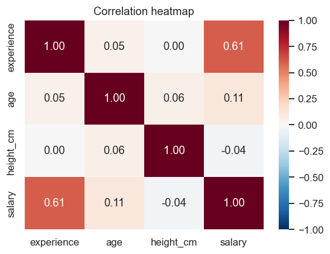
center=0 — it is the one that makes the colours honest.Three arguments and they are all worth knowing.
annot=True — annotate. Print the actual number inside each square. Without it
you get colour and no values, which looks impressive and tells you nothing precise.
fmt=".2f" — the number format. Two decimal places. Without it you get long
ugly decimals.
center=0 — put the middle of the colour scale at zero, so no relationship
is the pale colour, and strong-positive and strong-negative are the two ends. Without it the
colours are misleading.
Now read it, and there are only three things to know.
The diagonal is always 1.00 — every column against itself. Ignore it entirely.
The two halves are mirror images. Experience against salary is the same number as salary against experience. Read one half only.
And then look for the strong colours. Experience and salary, 0.61. Everything else is near zero.
.corr() silently ignores every column
that is not a number. Missing from a heatmap means not measured — it never means no
relationship. And for department against salary they already know the right tool: the two-sample
t-test from day thirteen.USE SEABORN USE MATPLOTLIB
the common charts anything unusual
anything needing hue fine control of one detail
heatmaps and ALWAYS for the finishing:
several groups at once title, labels, show
you do not choose between them.
seaborn draws it, matplotlib finishes it. every time.You will use both, in the same cell, all the time. Seaborn draws the chart and matplotlib puts the title on it. That is not a compromise, it is how everybody works.
import seaborn as sns
sns.countplot(data=df, x="department") # bar of counts
sns.histplot(data=df, x="salary", bins=20) # histogram
sns.boxplot(data=df, x="department", y="salary")# box plots, grouped
sns.scatterplot(data=df, x="experience", y="salary")
... add hue="department" to almost any of them
sns.heatmap(df.corr(), annot=True, fmt=".2f", center=0)
# annot = print the numbers
# center=0 = pale means "no relationship"
then, always: plt.title(...) ; plt.show()Tomorrow is the last session, and it is the one that matters most in an interview.
Not a new chart. The question of which chart to use — and how the same honest numbers can be drawn to tell a lie.
1. seaborn does not replace matplotlib. it SITS ON IT.
plt.title() and plt.show() still work. always will.
2. matplotlib takes NUMBERS. seaborn takes a TABLE and COLUMN NAMES.
that is why seaborn can label the axes by itself.
3. hue="column" is the real reason to switch.
a third column, one word, legend included.
4. a heatmap silently drops every text column.
MISSING means NOT MEASURED. it never means "no relationship".Everything in order. Five steps, every code block, every board item written out. If you lose your place, this page alone is enough.
The same chart, one line
Land this: show both versions together and let the comparison argue. Then immediately reassure — three days were not wasted.
Type this
import seaborn as sns
# day one
counts = df["department"].value_counts()
plt.bar(counts.index, counts.values)
plt.ylabel("Number of employees")
plt.show()
# today
sns.countplot(data=df, x="department")
plt.show()plt.show() still
works. Nothing from this week is wasted.On the board, all session
sns.SOMETHING( data=df, x="column", y="column" )
data= the TABLE | x= / y= column NAMES in quotes
then plt.title(...) and plt.show() as before.This week's charts, rewritten
Land this: move fast. Nothing is new. The time belongs to
hue and the heatmap.
sns.histplot(data=clean, x="salary", bins=20)
sns.boxplot(data=clean, x="department", y="salary")
sns.scatterplot(data=clean, x="experience", y="salary")hue — a third column free
Land this: this is capability, not convenience. Shorter syntax is nice; a third column is the actual reason to switch.
sns.scatterplot(data=clean, x="experience", y="salary",
hue="department")
plt.title("Experience against salary, by department")
plt.show()10 minutes on their own
# 1. boxplot of salary by department, hue="education"
# 2. countplot of department, hue="rating"
# which one is actually readable?hue is easy to overuse. Let them find the limit; it opens tomorrow.The correlation heatmap
Land this: day 7 computed correlations one pair at a time. This does every pair at once. Warn about the trap BEFORE drawing.
num = clean[["experience", "age", "height_cm", "salary"]].corr()
print(num.round(2))
sns.heatmap(num, annot=True, fmt=".2f", cmap="RdBu_r", center=0)
plt.title("Correlation heatmap")
plt.show()annot=True prints the numbers ·
fmt=".2f" two decimals · center=0 puts pale = no
relationship, which is what makes the colours honest..corr() silently drops every text column.
Missing means NOT MEASURED, never “no relationship”. The right tool for department
vs salary is the day-13 t-test.Close — which library when
SEABORN MATPLOTLIB
the common charts anything unusual
anything needing hue fine control
heatmaps and ALWAYS the finishing:
several groups at once title, labels, show
you do not choose. seaborn draws it, matplotlib finishes it.“Because seaborn is matplotlib with the common charts pre-written. Every title, label
and show() you learnt is still what finishes a seaborn chart. And the day you need
something seaborn does not have, you are not stuck. It is the same reason we read a CSV by hand before
using read_csv.”
plt.show()?”“Yes. Seaborn builds a matplotlib chart, so the rules are identical — nothing appears
until show(), and everything else goes before it.”
data=df and then the column name in quotes? Why not just
pass the column?”“Because the name is how it labels the axis. If you hand it a bare column it has values but
no name to print. Passing the table plus the name is what buys you the free labels — and it is
what makes hue possible, since hue is just a third column it looks up in the
same table.”
department in it.”“Correct, and important. .corr() only works on numbers, so every text column is
silently dropped. It does not mean department is unrelated to salary — you proved on day
thirteen that it is strongly related. It means correlation is the wrong tool for a category, and a
t-test is the right one.”
“Seaborn sets a style when it loads, so charts drawn after importing it look different even
if they are matplotlib charts. It is cosmetic, nothing is broken. sns.set_theme()
controls it if you care, and for now you should not.”
hue on a histogram?”“Yes, on nearly everything. Whether it is readable is a different question — four overlapping histograms is usually a mess. That is the judgement we start on tomorrow: a chart that is technically correct and impossible to read is still a failed chart.”
“Both, together, in the same cell — and then Power BI or Tableau for anything a manager will look at. Python charting is for you, while you explore. The dashboard the business sees is usually built somewhere else, which is the module after this one.”
Data Visualisation day 5 · merged class · 90 minutes · full script · closes the module
No new chart today. The decision table that tells you which one to reach for — and then the same honest numbers, drawn twice, telling two opposite stories.
Everything before today was technique, and Power BI will do most of it for them. This session does not transfer away — choosing the right chart and spotting a dishonest one works in every tool, and it is the part an interviewer can actually test in five minutes.
Two things: the table, and the four ways a chart misleads. The truncated axis is the one that actually happens most.
The mistake every beginner makes is starting at “which function do I call?”. The working order is: what is the question, what kind of columns do I have, then which chart.
Five rows. That covers essentially everything a fresher analyst is asked for.
It is the same code as everything else — plt.plot with a date along the bottom.
The only thing worth teaching is when: a line implies the points connect continuously, so it
belongs to time and to nothing else. Joining four departments with a line would be nonsense, because
there is nothing between HR and Marketing.
Start the vertical ruler near the top of the data instead of at zero and small differences become enormous. Nothing in the data is falsified. Every number is correct. The picture simply lies about proportion.
People are poor at comparing angles and good at comparing lengths. Two slices of 23% and 26% are almost impossible to tell apart; two bars are trivial. A pie is defensible for two or three slices that clearly make a whole, and bad for anything else.
8% to 11.5% is 3.5 percentage points and also a 43.75% relative increase. Both true. They sound wildly different, and a chart labelled “43% improvement” next to two bars of 8 and 11.5 is technically honest and practically deceptive. They met this exact trap on statistics day 13.
Choosing where a time axis starts and stops can turn a decline into a rise. Harder to demonstrate with this dataset, so name it and move on — recognition is enough.
Everything in a speech box is meant to be said more or less as written. Everything in a grey box is a direction for you, not words to say.
The one thing they must leave with. Build it from the sentence backwards.
Four days, four charts. Today no new chart at all.
Today is the question you will actually be asked, in an interview and on the job: somebody hands you a dataset and a question. Which chart?
And I want you to notice that the wrong way to start is “which function do I call”. That is never where you begin.
WHAT IS THE QUESTION? WHAT DO I HAVE? CHART
how many in each category? 1 category column BAR
what does this column look like? 1 number column HISTOGRAM
middle, spread, outliers? 1 number (+ category) BOX PLOT
do these two move together? 2 number columns SCATTER
how does this change over time? a date + a number LINE
the QUESTION picks the chart. never the other way round.Five rows. That is genuinely most of what a data analyst draws.
And notice the middle column, because it is the part people forget. The chart depends on what kind of columns you have. Categories or numbers. That is day two of statistics, still deciding things for you five weeks later.
One row there we have not done — the line chart. It is the same code you already know, so let us do it quickly and spend the time on when to use it.
df["join_date"] = pd.to_datetime(df["join_date"])
per_year = df.groupby(df["join_date"].dt.year).size()
plt.plot(per_year.index, per_year.values)
plt.title("Employees who joined each year")
plt.xlabel("Year")
plt.ylabel("How many joined")
plt.show()One new function. pd.to_datetime tells pandas that this text column is really a
date, which then lets you ask it for .dt.year. Without that step the join dates
are just strings and you cannot group by year.
plt.plot is the line. Everything else is what you have written all week.
Run it as a vote. Let them be wrong out loud before you explain anything.
I have the average salary for each of our four departments. Real numbers, from our file, nothing invented.
Here is the chart.
means = clean.groupby("department").salary.mean()
plt.bar(means.index, means.values)
plt.ylim(56000, 83000) # start the ruler near the top
plt.title("Average salary by department")
plt.show()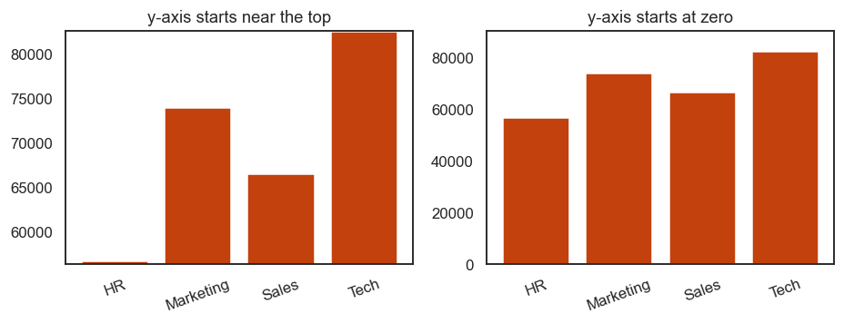
plt.bar(means.index, means.values)
plt.ylim(0, 90000) # start at ZERO
plt.title("Average salary by department")
plt.show()
print(means.round().astype(int))Tech is eighty-two thousand. HR is fifty-six thousand. Tech is about one and a half times HR.
Not ten times. Not twenty. One and a half.
And look carefully at what I did. I did not change a single number. Both charts show exactly the same four values. The only difference is where the vertical ruler starts.
On the first one I started it at fifty-six thousand. So HR's bar had almost nothing left above the line, and it looked like HR earns nothing.
Pie, percentage points, cherry-picking. Name them, show one, move on.
Three more, and these are quicker.
counts = df["department"].value_counts().sort_index()
plt.pie(counts.values, labels=counts.index, autopct="%1.0f%%")
plt.title("Pie")
plt.show()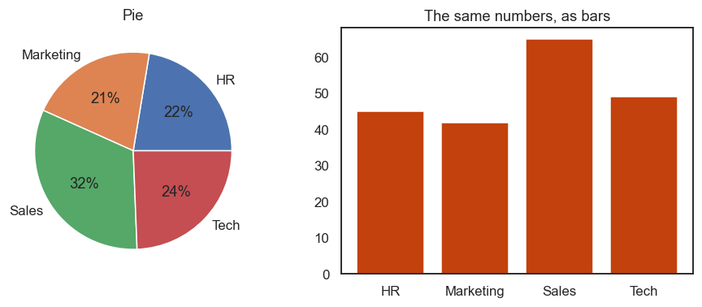
Look at the pie. Tech and HR — which is bigger? You have to concentrate. Now look at the bars. It takes no effort at all.
The reason is simple: people are bad at comparing angles and good at comparing lengths.
A pie is acceptable for two or three slices that obviously add up to a whole. For anything more, use bars. And if you ever see a pie with twelve slices, somebody has made a decorative object, not a chart.
a signup page goes from 8.0% to 11.5%
3.5 PERCENTAGE POINTS 11.5 - 8
43.75% RELATIVE INCREASE (11.5 - 8) / 8 x 100
both are TRUE. they sound completely different.
a chart titled "43% improvement" above two bars of 8 and 11.5
is technically honest and practically misleading.
SAY WHICH ONE YOU MEAN. in the title, not in a footnote.We met this exact trap on day thirteen of statistics, on the A/B test. It is back, because a chart title is where it usually happens.
Three and a half percentage points, or a forty-three percent increase. Both true. And whichever one you put in the title is the one people will remember.
Last one, and I will only name it. Cherry-picking the range.
If a number fell for two years and then rose for six months, you can draw the six months and show a rise, or draw the whole thing and show a fall. Both from the same file. Neither is a false number.
When you see a chart, look at where the time axis starts, and ask why it starts there.
Practice picking, not drawing. This is what tomorrow's interview asks.
1. "Which city do most of our employees live in?"
2. "Are our salaries mostly clustered, or spread out?"
3. "Do people with more experience earn more?"
4. "Did hiring go up or down over the last ten years?"
5. "Is Tech's pay more consistent than Sales' pay?"
6. "What share of employees has each education level?"[ ] does it have a TITLE that says what it shows?
[ ] are BOTH axes labelled, with units if there are any?
[ ] if it is bars, does the y-axis start at ZERO?
[ ] did I choose the chart from the QUESTION,
or because it was the one I knew how to draw?
[ ] would somebody who has never seen this data
understand it without me standing next to them?
five checks. thirty seconds. it is the difference between
an assignment that gets read and one that gets returned.Name the arc, and hand over to the BI tools honestly.
Five sessions. Let me tell you what you actually have.
You can draw four charts and you know which question each one answers. You can do it in
matplotlib the long way and in seaborn the short way. You can put a third column in with
hue. And you can look at somebody else's chart and tell whether it is honest.
That last one is the part that will not go away.
CARRIES OVER, COMPLETELY
which chart for which question <- the whole of today
y-axis starts at zero, for bars
title and axis labels, always
nominal sorts by size, ordinal keeps its order
plot before you analyse
pie charts are usually the wrong answer
DOES NOT CARRY OVER
plt.bar, sns.histplot, the syntax <- the tool does it now
bins, figsize, tick rotation
you are about to learn a tool that draws for you.
what you learnt this week is WHAT TO ASK IT FOR.Next module is Power BI, and it will draw these charts by dragging a column onto a canvas. You
will not type plt.bar again for a while.
That is fine, and it is why I spent today on choosing rather than on drawing. The tool changes. The question “which chart answers this, and is it honest” does not.
And you will still use Python for exploring — for the first look, before anybody else sees it. That is what these five days were really for.
1. the QUESTION picks the chart. never the library.
category counts -> BAR one number column -> HISTOGRAM
spread + outliers -> BOX two numbers -> SCATTER
over time -> LINE
2. bars start at ZERO. always.
a bar's LENGTH is the value - cut it off and it means nothing.
3. people compare LENGTHS well and ANGLES badly.
that is the whole case against the pie chart.
4. 8% -> 11.5% is 3.5 PERCENTAGE POINTS and a 43.75% RELATIVE rise.
both true. say which one you mean, in the title.Everything in order. Five steps, every code block, every board item written out. If you lose your place, this page alone is enough.
The decision table
Land this: build it by asking, row by row. Do not put it up finished. The question picks the chart, never the library.
Ask these four, take the answers from the room
"how many employees in each department?" -> BAR
"what do salaries look like?" -> HISTOGRAM
"which dept pays most, and how spread out?" -> BOX PLOT
"does experience affect salary?" -> SCATTERThe line chart — the only row they have not drawn
df["join_date"] = pd.to_datetime(df["join_date"])
per_year = df.groupby(df["join_date"].dt.year).size()
plt.plot(per_year.index, per_year.values)
plt.title("Employees who joined each year")
plt.xlabel("Year"); plt.ylabel("How many joined")
plt.show()pd.to_datetime turns the text column into
a real date, which is what makes .dt.year possible.The same numbers, two stories
Land this: the centrepiece. Show only the misleading chart. Get a number out of them and write it on the board before you reveal the honest one.
Show this one alone
means = clean.groupby("department").salary.mean()
plt.bar(means.index, means.values)
plt.ylim(56000, 83000)
plt.title("Average salary by department")
plt.show()Then the honest one — one word different
plt.ylim(0, 90000)
print(means.round().astype(int))Three more, quickly
counts = df["department"].value_counts().sort_index()
plt.pie(counts.values, labels=counts.index, autopct="%1.0f%%")
plt.show()Which chart? — no code
Land this: practise picking, not drawing. This is exactly what an interview asks. Take each answer from the room first.
1. "which city do most employees live in?"
2. "are salaries clustered or spread out?"
3. "do people with more experience earn more?"
4. "did hiring go up or down over ten years?"
5. "is Tech's pay more consistent than Sales'?"
6. "what share has each education level?"The checklist — on the board
[ ] a TITLE that says what it shows?
[ ] BOTH axes labelled, with units?
[ ] if bars, does y start at ZERO?
[ ] did the QUESTION pick the chart, or did I pick
the one I knew how to draw?
[ ] would a stranger understand it without me there?Close the module
CARRIES INTO POWER BI / TABLEAU DOES NOT CARRY
which chart for which question plt.bar, sns.histplot
y starts at zero, for bars bins, figsize, ticks
title and labels, always
nominal by size, ordinal in order
plot before you analyse
pies are usually the wrong answer“For bars, treat it as always wrong — the length is the value. For a line, no: a share price moving between 1,010 and 1,040 drawn from zero is a flat line showing nothing. The rule follows from what the ink means. Bars encode size, lines encode change.”
“Not banned — usually beaten. Two or three slices that clearly add to a whole is fine. Past that, bars are easier to read and you lose nothing. If a manager asks for a pie, give them a pie and put the numbers on it.”
“Ask them what question they want answered. That is not dodging — it is the correct first move and they are often testing whether you make it. Then say your reasoning out loud: ‘salary is one numeric column and I want its shape, so a histogram.’ The reasoning is what is being marked.”
“Two reasons. Nearly every analyst job description asks for it, so it is a screening filter before anybody looks at the rest of you. And it is what you use to explore — the first look at a file, before you know what the dashboard should even contain. Power BI is for what you show other people.”
“Common, and fine. Salary by department could be box plots or bars of the averages. Box plots show spread, bars show only the middle. Pick the one that shows what the question needs, and be able to say why you picked it — that sentence is worth more than the chart.”
“For a handful of bars, yes — it costs nothing and removes all argument. For a scatter with two hundred dots, obviously not. The test is whether a reader would otherwise have to guess a value off the axis.”
“Deliberately. A dashboard is several charts arranged for somebody else to use, and the tool for that is Power BI, which is next. Building one in Python is possible and almost nobody does it. What you needed first was to know which charts belong on it.”
Excel day 1 · merged class · 90 minutes · full script · opens the module
They have worked on employees.csv for more than twenty sessions and have never once
seen it. Today they open it — and two of the things they hunted for with statistics
and with charts are sitting on screen before they scroll.
Row 5 is Lakshmi Kumar, Tech, salary 5,200,000. That is the one earner who destroyed their correlation — the reason Pearson came out at 0.079 instead of 0.607. Row 9 is Manoj Kumar, and the salary cell is empty. That is one of the two missing salaries they kept having to work around.
A whole statistics session went into the first one. A whole visualisation session went into drawing it. Here they are both on the first screen, and nobody typed anything. That is the argument for a spreadsheet, and it takes ninety seconds.
.xlsx in the first five minutes, before any formula. A
.csv file cannot store a formula. It stores only text. If they build the whole summary
and then save, Excel keeps the answers and throws every formula away, and they will not find
out until tomorrow. Do this step together, out loud, and do not move on until every laptop has
done it.=, all seven functions, the dollar sign, autofill
— is identical in all three. Nobody has to buy anything. Say it before somebody panics
quietly for an hour.emp_id to join_date. You will be asked “which one is salary”
ten times and the board answers it without stopping you.Ctrl+↓,
Ctrl+Home, double-click on the autofill square, and F4.
On a Mac F4 is often taken by the system — if it does nothing, type the two
dollar signs by hand and move on. Do not lose five minutes on a keyboard.Three things: what a cell actually holds and why that makes Excel worth a module after Python, how a reference works and what the dollar sign does to it, and what the formulas quietly skip. If you are shaky anywhere it will be part two, so read it twice.
It holds a value — a number, a word, a date. Or it holds a rule for working out a value, and then it shows you the answer instead of the rule.
That is the entire idea of a spreadsheet, and the = sign is the switch between the
two. Type 38 and the cell holds 38. Type =20+18 and the cell shows 38 but
holds the rule. Click it and the formula bar at the top shows you the rule.
Because the rule gets re-run on its own. Change a salary in column K and every cell whose rule mentions that salary works itself out again immediately. Not when you ask. Immediately.
In their Python work, the opposite is true. df["salary"].mean() runs once and gives
a number. Change the file and that number is now wrong and nothing tells you — you have to
remember to run it again.
Nothing on the sheet records that the cell was changed. There is no log. One typo in one cell changes every number on the sheet, silently, and the person reading the sheet tomorrow has no way to know. Real companies have lost real money to exactly this.
So the honest summary is: a spreadsheet is faster to change and much harder to trust. A script is slower to change and leaves a record of exactly what it did.
K2 inside a formula means “go
and fetch whatever is in cell K2 right now”. It does not copy the number. It points at
it.=K2 in any empty cell shows 47764.
K1 is the word salary. The 201 employees live on rows 2 to
202.I2:I202 is 201 cells: I2, I3, I4, all the way
down to I202. One short piece of text instead of 201 addresses.I:I for “the
whole column”, which includes the header. AVERAGE happens to skip the word
age so the answer comes out right anyway — which is exactly why it is dangerous.
Teach I2:I202.Copy a formula from one cell to another and Excel moves the references with it. A formula
in M2 that says =K2-100 becomes =K3-100 when you copy it to M3.
This sounds like a bug. It is the single most useful thing Excel does. It is what lets you write one formula and fill 201 rows with it, because what the formula really means is not “K2”, it is “the salary on my own row”.
$ in front of a letter or a number
freezes that part, so copying the formula does not move it.$Q$10 means column Q, row 10, and nothing
will change it. Copy that formula anywhere on the sheet and it still points at Q10.Q$10 freezes
only the row, $Q10 only the column. Do not teach them today. They are for
filling a grid in two directions, which is day five. Today: either both dollars or
neither.If they write =K2-Q10 with no dollars and drag it down, row 3 asks for
Q11, row 4 asks for Q12, and so on down the sheet. There is no error. Excel
does exactly what it was told.
Q11 happens to hold the median salary, 68647, so row 3 produces 17405 — a number that looks completely plausible. Q12 onwards are empty cells, and an empty cell in arithmetic counts as zero, so every row after that just shows the salary itself back again.
COUNT and COUNTA are not the same function=COUNT(C2:C202) on the name column gives 0,
because a name is not a number. That surprises everybody once and then never again.Put the two side by side on columns that should agree, and the gap tells you what is missing.
201 rows. 200 ages. 199 salaries. They already knew those gaps existed, because pandas told them. This is the spreadsheet version of the same check, and it is two formulas.
AVERAGE knows the differenceAVERAGE skips blank cells completely. It does not count them and it does not treat
them as zero. So the average salary divides by 199, not by 201.
A thousand rupees of difference, from two empty cells. And if anybody ever types a
0 into those two cells to “tidy them up”, the average becomes the second
number permanently and nobody will notice.
There is also a function that counts them directly: =COUNTBLANK(K2:K202) gives
2. Worth thirty seconds, no more.
=AVERAGE(I2:I202) gives 38.175. Click Decrease Decimal twice and the
cell shows 38.2. The cell still holds 38.175. Every formula that points at it still uses
38.175.
AVERAGE(I2:I202) and the cell shows
the text AVERAGE(I2:I202). Nothing is broken. There is no
=, so Excel treated it as a word. The = is not decoration. It is the
switch.#####. The number does not fit
in the column. Drag the line between the column headers, or double-click it. It is not an
error.dept_id is column B. =AVERAGE(B2:B202) gives 2.32 — the
same meaningless 2.32 that opened statistics day 2.
dept_id is a label and not a quantity. Neither did pandas.
No tool will ever ask you whether your question makes sense. Thirty seconds, and it tells
them that moving to a friendlier tool has not made them safer.
Everything in a speech box is meant to be said more or less as written. Everything in a grey box is a direction for you, not words to say.
Twenty sessions on this file and they have never seen it. Two of its famous problems are on the first screen.
Find employees.csv on your laptop. The same file we have used since the first day of
statistics. Double-click it. It will open in Excel.
Now take your hand off the mouse. Do not scroll.
A C D I K L
1 emp_id name department age salary join_date
2 1001 Rahul Sharma HR 53 47764 2018-01-03
3 1002 Karthik Kumar Marketing 57 86052 2024-07-02
4 1003 Karthik Reddy Tech 56 62990 2025-03-04
5 1004 Lakshmi Kumar Tech 41 5200000 2022-10-15
6 1005 Arjun Sharma HR 42 62556 2022-05-20
7 1006 Sneha Reddy Sales 25 47111 2023-10-26
8 1007 Lakshmi Menon HR 51 60925 2025-02-02
9 1008 Manoj Kumar HR 28 (empty) 2022-01-07
columns B, E, F, G and J are on screen too - left out here only to fit.In statistics we spent a whole session on that one salary, and we could only find it through arithmetic — the mean was 95,648, the median was 68,647, and the gap between them told us something was wrong somewhere.
Last week we spent a whole session drawing it, so you could point at the dot.
Today you opened the file and it is on row five. Nobody typed anything.
Across the top, letters. Down the side, numbers. One box is a cell, and its name is the letter and the number together. K5 is the fifty-two lakh.
Click on it. Look at the top left — there is a small box showing K5. That is the Name Box. It always tells you where you are, and you can type an address into it to jump anywhere.
Row one is not a person. It is the header — the column names. Our people start on row two.
CELL one box. named by its column letter + row number. K5
NAME BOX top left. tells you where you are, and jumps you anywhere
HEADER row 1. the column names. NOT a person
ROW COUNT Ctrl + Down from A1 -> A202, minus the header = 201 click A1 then Ctrl + Down jumps to the last filled cell in the column
Ctrl + Home jumps back to A1 from anywhereRow 202. Row one was the header, so that is 201 rows of data.
Two hundred and one. Not two hundred. You have seen 201 before — there is a duplicate row in this file, two copies of the same employee. We deal with that on Thursday.
One thing before we write a single formula. Go to File, then Save As. Change the
type from CSV to Excel Workbook, which is .xlsx. Save it as
employees.xlsx.
Here is why. A .csv file is plain text — you read one by hand in Python, you
know exactly what is inside it. Commas and numbers. There is nowhere in that file to put a
formula.
So if you spend the next hour building formulas and then save this as a CSV, Excel keeps the answers and throws every formula away. Open it tomorrow and all your work is gone, and the file will look fine, which is worse.
2018-01-03 as a date and redisplays it as 03-01-2018,
or leaves it as plain text. Either is fine and neither is wrong. Nothing in today's session
touches join_date. If somebody asks, say “Excel guessed it was a date, we deal with
dates properly later” and move on — do not start on date formats in the first ten
minutes.One idea, and the whole tool follows from it. A cell can hold a value, or a rule.
We need an empty cell to play in, well away from the data. Type A205 into the Name
Box and press Enter. That is three rows below the last employee, where we cannot damage
anything.
Type 38 and press Enter. The cell holds 38. Nothing interesting.
Now go back to it and type this instead.
=20+18The cell shows 38. But click on it once and look at the formula bar — the long white strip above the letters.
The cell is not holding 38. It is holding the rule =20+18, and it is showing
you what the rule works out to.
That is the entire tool. Every cell holds either a value, or a rule. And the equals sign is how you tell Excel which one you mean.
AVERAGE(I2:I202) without the equals sign in the next
five minutes. Pre-empt it.AVERAGE(I2:I202), left-aligned,
looking silly. Nothing is broken. There was no equals sign, so Excel read it as a word. Say the
sentence: the equals sign is not decoration, it is the switch.Now the useful version. Instead of typing numbers into the rule, we point at cells.
=K5K5 is not the number five point two million. It is an address. The rule says
“go and fetch whatever is in K5 right now”.
Hold on to the words right now. We come back to them in half an hour and they turn out to be the most important thing in this session.
One more piece of punctuation and then we can do real work. The colon.
Age is column I. The first person is on row 2 and the last is on row 202. So instead of writing two hundred and one addresses, I write the first one, a colon, and the last one.
I2:I202. Read the colon out loud as the word through. “I2 through
I202.” Two hundred and one cells.
=AVERAGE(I2:I202)Thirty-eight point one seven five. That is the average age, and it is the same number pandas gave you, because it is the same arithmetic on the same file.
I want to be clear about what today is. You are not learning new statistics. You learned all of it already. Today you are learning to do it with a mouse, on a tool the people who ask you for numbers actually have open.
38.175 is untidy. On the Home tab there are two buttons, Increase Decimal and Decrease Decimal. Press Decrease twice. Now it says 38.2.
But listen carefully. The cell still holds 38.175. Nothing changed except what you are being shown.
The number you see and the number that is there are two different things. Write that down. One day two cells will both show 38.2 and refuse to agree with each other, and this will be why.
Build a real summary block. Two of the seven find the broken data on their own.
Delete what is in A205. Now go to P1 using the Name Box.
Why P? Because our data ends at column L, and I want a gap between the data and my working. If I put my answers right next to the data they get mixed up with it. So: data in A to L, and from P onwards is mine.
In column P we type labels — words, so we know what each number is. In column Q we put the formulas.
P Q
1 rows =COUNTA(C2:C202)
2 ages =COUNT(I2:I202)
3 average age =AVERAGE(I2:I202)
4 middle age =MEDIAN(I2:I202)
5 youngest =MIN(I2:I202)
6 oldest =MAX(I2:I202)Start with the first two rows, because they are not the same function and the difference matters more than you would think.
COUNTA counts cells that have anything in them. I pointed it at the
name column, because every row has a name in it. 201.
COUNT — no A — counts cells that have a number in them. I pointed
it at the age column. 200.
Two hundred and one rows. Two hundred ages. So one row has no age in it.
I am saying rows and not people on purpose, and you already know why — one of those rows is a duplicate. Thursday that stops being a detail.
isnull().sum() — this is the same check, with
two formulas and no library.
=COUNT(C2:C202) — COUNT, not COUNTA — on the name column. It gives
0. Not an error, not a crash: zero, because a name is not a number. One demonstration and
nobody mixes up the two functions again.Now the two that should have bothered you. MIN gives the smallest value in the
column. MAX gives the largest.
The youngest person in this company is minus four years old. The oldest is two hundred and ten.
You met both of these last week. It took us a chart to find them. Today it took two formulas.
And I will show you one more thing the spreadsheet can do that a chart could not. Who is it?
Type A152 into the Name Box and press Enter.
Aditya Gupta, in HR. Minus four years old, and the lowest paid person in the file.
I cheated — I already knew it was row 152 and I told you. On Thursday you will find that row yourself, with a filter. Next week you will find it with a formula. Today the point is only this: the sheet put it in front of you, and the average never did.
P Q
8 salaries =COUNT(K2:K202)
9 total salary =SUM(K2:K202)
10 average salary =AVERAGE(K2:K202)
11 middle salary =MEDIAN(K2:K202)=COUNTBLANK(K2:K202) gives
2. One of them is Manoj Kumar on row 9, the empty cell they found in the first five minutes
of the session.95,648 average, 68,647 in the middle. You know those two numbers — the gap between them is the whole reason we learned about skew.
Now a question I want you to think about carefully. AVERAGE added up the salaries and
divided. Divided by what? 199, or 201?
=AVERAGE(K2:K202) -- what we already have
=SUM(K2:K202)/COUNTA(C2:C202) -- total, divided by all 201 rowsNearly a thousand rupees apart, and both of them look perfectly reasonable.
AVERAGE skips empty cells completely. It does not count them, and it does not
treat them as zero. So it divided by 199. That is the right behaviour, and it is the same thing
pandas does.
0 into those
two cells to tidy the sheet up, the average drops to 94,696 and stays there, and nobody will
notice.
dept_id=AVERAGE(B2:B202) 1 = Sales these are NAMES that happen to be written
2 = Tech with digits. the average of a name is not
3 = HR a thing. there is no "department 2.32".
4 = MarketingTwo point three two. The average department number.
Department 2 is Tech and department 3 is HR. So 2.32 is somewhere between Tech and HR, which is not a sentence that means anything.
You remember this one. It is a label that happens to be written with digits, and averaging it means nothing at all.
Excel did not stop me. Excel does not know that dept_id is a name and not a
quantity. Pandas did not stop you either.
No tool will ever ask you whether your question makes sense. That is still your job, and it is the only part of this course that no software will ever do for you.
Why this tool exists, answered honestly — including the part that makes it dangerous.
Let me ask the question you are all too polite to ask. You can already do every one of those seven formulas in pandas, in one line each. So why are we spending two weeks on a spreadsheet?
It is a fair question and it has a real answer. Watch the screen.
Keep your summary block where you can see it. Now click on K5 — the fifty-two lakh salary.
Suppose we find out it was a typing mistake. Somebody typed an extra zero. The real salary is five lakh twenty thousand.
Type 520000 and press Enter. Do not look away from your summary block.
before after
salaries 199 199
total salary 19034033 14354033
average salary 95648.41 72130.82
middle salary 68647 68647The average dropped by twenty-three thousand rupees because one person's salary changed. The total dropped by forty-seven lakh. And I did not run anything.
Now think about what that same change costs you in Python. Open the CSV. Edit the row. Save it.
Run read_csv again. Run the mean again. Run the median again. Run every cell in the
notebook again, in order, and hope you did not miss one.
Now the other side, and this is the part nobody teaches you.
I just changed a number that every single formula on this sheet depends on. Where does it say that I did that?
Nowhere. There is no record. No note, no mark on the cell, no list of changes. If I hand you this file tomorrow you will see 72,130 as the average salary and you will have no way at all to know that I edited it.
Your Python notebook would have shown it. The line that changed the salary would still be sitting there in the code, for anybody to read.
Put it back — Ctrl + Z. Your average should go back to 95,648.
One more honest limit. A sheet stops at ten lakh forty-eight thousand five hundred and seventy-six rows. That is fixed. You cannot change it.
Our file has 201 rows, so we are fine. A month of website visits is five million rows, and Excel cannot open it at all. Pandas will not even notice.
One formula for 201 rows. Let it go wrong on screen first — the fear is the lesson.
New question. Not “what is the average salary” — we have that. The question is for each person, how far is their salary from the average?
That is one answer per person. Two hundred and one answers. So it is not one cell, it is a whole new column.
Our data ends at L. So the new column goes in M. Go to M1 and give it a name.
gap from averageNow M2, for the first employee. His salary is in K2. The average salary is sitting in Q10.
=K2-Q10Minus forty-seven thousand eight hundred and eighty-four. Rahul Sharma earns about forty-seven thousand less than the average. That is correct, and the minus sign is telling us “below average”.
One down. Two hundred to go. And obviously I am not typing this two hundred more times.
Click on M2 once so it has the green border around it. Look at the bottom right corner of that border. There is a tiny solid square.
That square is called the fill handle, and it is the most used thing in Excel. Put your mouse on it until the pointer turns into a thin black plus, then double-click it.
K M
2 47764 -47884.41 correct
3 86052 17405 ?
4 62990 62990 ?
5 5200000 5200000 ?
6 62556 62556 ?
7 47111 47111 ?Nothing crashed. Nothing turned red. Excel did not complain once. And the whole column after row two is rubbish.
Let us find out why. Click on M3 and read the formula bar.
M2 =K2-Q10 what I actually typed
M3 =K3-Q11 both halves moved down one
M4 =K4-Q12
M5 =K5-Q13
M6 =K6-Q14Excel moved both addresses down. The K moved down, and the Q moved down with it.
And now look at what the Q is landing on. Q11 is the middle salary, 68,647 — so row 3 worked out 86,052 minus 68,647, which is 17,405. A real subtraction, of the wrong number.
Q12 is empty. Q13 is empty. Everything below Q11 is empty. And an empty cell in a subtraction counts as zero. Salary minus nothing is the salary. That is why the rest of the column is a copy of column K.
Before we fix it, understand why Excel did that, because it is not a bug. It is the best thing about the tool.
When I wrote K2 on row 2, Excel did not store “K2”. It stored “the
cell five to my left”. So on row 3 that means K3, and on row 152 it means K152.
And that is exactly what I wanted for the salary. Every row should use its own salary. Without that behaviour I really would be typing two hundred formulas.
The problem is the other half. The average salary is not different on each row. It is one cell, Q10, for everybody. And I have no way yet of telling Excel the difference.
That is what the dollar sign is for. A dollar sign means do not move this.
Go back to M2 and change the formula to this.
=K2-$Q$10$Q means never change the letter. $10 means never change the number.
So $Q$10 means Q10, always, no matter where you copy this.
Now double-click the fill handle again.
K M formula in that cell
2 47764 -47884.41 =K2-$Q$10
3 86052 -9596.41 =K3-$Q$10
4 62990 -32658.41 =K4-$Q$10
5 5200000 5104351.59 =K5-$Q$10
6 62556 -33092.41 =K6-$Q$10
7 47111 -48537.41 =K7-$Q$10
8 60925 -34723.41 =K8-$Q$10
9 (empty) -95648.41 =K9-$Q$10
shown here rounded to 2 decimals. your screen will show more digits
than this until you press Decrease Decimal - because the average
salary really is 95648.40704, exactly as we said in the first hour.The K moved down every row. The $Q$10 did not move at all. That is the whole
idea.
Now look at the shape of the column. Scroll down it. Almost every number is negative.
I will give you the exact count, because it is worth hearing out loud. Of the 199 salaries in this file, 187 are below the average. Twelve people are above it.
Ninety-four per cent of this company earns less than the average salary of this company. That sentence sounds impossible and it is completely true, and you already know why — it is the fifty-two lakh earner on row 5 dragging the average up past almost everybody.
In statistics we proved that with a mean and a median twenty-seven thousand apart. Here you can scroll down it.
COUNTIF, which counts cells that pass a test. It arrives in
the third session. Today the point is only that the column has a shape, and they can see
it.AVERAGE, COUNT, SUM and the rest skip an empty cell.
Plain arithmetic — plus, minus, times — turns it into zero.Last thing in this block, and it will save you a lot of typing. You do not have to type the dollar signs by hand.
While you are writing a formula, click on the address and press F4. Excel puts both dollar signs in for you. Press it again and it cycles through the other combinations — ignore those for now, we need them in week two.
F4 is often taken by the system and does nothing. Try
fn+F4 once, and if that fails, type the two dollar signs by hand and move
on. It is two characters. Do not lose five minutes of the session to a keyboard.Ctrl+C. Type M3:M202 into the Name Box and press Enter —
that selects the whole range. Then Ctrl+V. Same result, and it always
works.Everything from today, on a column we have not touched. Twelve minutes, and walk the room.
=, and a missing $.Experience is column H. We have not looked at it once today.
Two jobs. First, build the same kind of summary block for it, in P13 down to Q17. Second, build a column that says how many years above or below the average each person is.
P Q
13 experience =COUNT( ? )
14 average experience =AVERAGE( ? )
15 middle experience =MEDIAN( ? )
16 least experience =MIN( ? )
17 most experience =MAX( ? )
experience is column H. the people are on rows 2 to 202. N1 a label: years above average
N2 a formula that subtracts the average experience from this person's experience
then fill it down to row 202
the average experience will be sitting in one cell. one cell, for everybody.
so you will need something from the last twenty minutes.Q13 =COUNT(H2:H202) 201
Q14 =AVERAGE(H2:H202) 7.781094527 7.78 after Decrease Decimal
Q15 =MEDIAN(H2:H202) 8
Q16 =MIN(H2:H202) 0
Q17 =MAX(H2:H202) 15 N1 years above average
N2 =H2-$Q$14
H N
2 4 -3.78
3 13 5.22
4 1 -6.78
5 11 3.22
6 9 1.22
7 3 -4.78AVERAGE(H2:H202) with no = and has a cell full of text. And somebody
wrote =H2-Q14 with no dollars, dragged it down, and has a column of experience values
copied back. Second one in a session. That is the one that sticks.Four things from today. If you forget everything else, keep these.
1. a cell holds a VALUE or a RULE.
the = sign is the switch between them.
no = means excel reads it as a word, not a formula.
2. a colon means THROUGH.
I2:I202 is 201 cells, because row 1 is the header.
3. copying a formula MOVES its addresses. that is the useful part.
$Q$10 means "do not move this one". that is the part you forget.
the broken version does not crash - it quietly copies
the column next to it.
4. a blank is not a zero.
AVERAGE, COUNT, SUM -> skip it.
plus, minus, times -> treat it as zero.And look at what we did today without writing one line of code. We found a person who is minus four years old. We found a person with no salary. We found the fifty-two lakh earner. We proved one age and two salaries are missing. And we built a column of two hundred and one answers from one formula.
All of it on the file you have known for twenty sessions.
Thursday we stop looking and start fixing. Three things are waiting for us in this file and you have met all of them.
The duplicate. 201 rows, 200 employees — somebody is in there twice, and Excel has a button that finds them.
The minus four and the two hundred and ten. Thursday they turn red automatically, without you looking for them.
Aditya Gupta. Today I had to tell you he was on row 152. Thursday you will find him yourself, in about four clicks.
Everything in order. Seven steps, every formula, every board item, every number it should produce. If you lose your place, this page alone is enough.
Open it, and do not scroll
Land this: say “do not scroll” before they touch the mouse. Then row 5 — Lakshmi Kumar, salary 5,200,000, the earner that wrecked their correlation. Then row 9 — Manoj Kumar, salary cell empty. Both on the first screen, nothing typed.
Then the vocabulary — two minutes, no more
Two shortcuts
A1 then Ctrl + Down last filled cell in the column
Ctrl + Home back to A1 from anywhereThen the save step — wait for every laptop
.csv is
plain text and has nowhere to put a formula. Save as CSV at the end of today and Excel keeps the
answers and throws every formula away — and the file still looks fine.The equals sign
Land this: a cell holds a value or a rule, and =
is the switch. Use A205 as the scratch cell — three rows below the data, where nothing
can be damaged.
A205 =20+18 cell SHOWS 38, HOLDS the rule - check the formula bar
A205 =K5 5200000 - an ADDRESS, "fetch whatever is there right now"I2:I202 = 201 cells. Row 1 is the
header, so it starts at 2.=AVERAGE(I2:I202)AVERAGE(I2:I202) with no = and gets the text back. The equals sign is
not decoration, it is the switch.Seven formulas, and the minus four
Land this: clear A205. Labels in P, formulas in Q — data ends at L, so from P onwards is ours. Everybody the same place, so you can walk the room.
P Q
1 rows =COUNTA(C2:C202) 201
2 ages =COUNT(I2:I202) 200
3 average age =AVERAGE(I2:I202) 38.175
4 middle age =MEDIAN(I2:I202) 37
5 youngest =MIN(I2:I202) -4
6 oldest =MAX(I2:I202) 210isnull().sum() with two formulas.
Say rows, not people — one of them is the duplicate.=COUNT(C2:C202) on the names gives 0. Not an error. A name is
not a number.Then who it is — Name Box, type A152
Salary half — leave row 7 blank
8 salaries =COUNT(K2:K202) 199
9 total salary =SUM(K2:K202) 19034033
10 average salary =AVERAGE(K2:K202) 95648.41
11 middle salary =MEDIAN(K2:K202) 68647
=COUNTBLANK(K2:K202) 2
=SUM(K2:K202)/COUNTA(C2:C202) 94696.68=AVERAGE(B2:B202) → 2.32. Excel does not know dept_id is a
label. Neither did pandas. No tool will ever ask whether your question makes sense.The one thing a script cannot do
Land this: ask their question for them — “we already know pandas, why a spreadsheet?” Then change K5 from 5200000 to 520000 and tell them to watch the summary block, not the cell.
before after
salaries 199 199
total salary 19034033 14354033
average salary 95648.41 72130.82
middle salary 68647 68647The dollar sign — let it break first
Land this: do not warn them. Write it with no dollars, fill it down, and let them look at a column of nonsense in silence before you say a word.
M1 gap from average a label, no equals sign
M2 =K2-Q10 -47884.41 ... correct
then DOUBLE-CLICK the small square at the bottom right of M2
(the fill handle) - it fills to row 202 in one go K M
2 47764 -47884.41 correct
3 86052 17405 believable, and wrong
4 62990 62990 a copy of column K
5 5200000 5200000
6 62556 62556=K3-Q11, M4 is =K4-Q12. Both halves moved. Q11 is the median,
68,647, so row 3 did a real subtraction of the wrong number. Q12 down is empty, and empty in
arithmetic is zero — so the rest is column K copied.M2 =K2-$Q$10 $Q = never change the letter, $10 = never change the number
K M
2 47764 -47884.41
3 86052 -9596.41
4 62990 -32658.41
5 5200000 5104351.59
6 62556 -33092.41
7 47111 -48537.41
8 60925 -34723.41
9 (empty) -95648.41 <-- ask about this oneCtrl+C, type M3:M202 in the Name Box, Enter,
Ctrl+V.Their turn — column H, experience
Put it on the board and stop talking. Walk the room. Two things to look for
over shoulders: a missing =, and a missing $.
job one P13:Q17, the same kind of block, for experience (column H)
job two N1 a label, N2 a formula, fill down to 202
"how many years above or below average is this person"Q13 =COUNT(H2:H202) 201
Q14 =AVERAGE(H2:H202) 7.78
Q15 =MEDIAN(H2:H202) 8
Q16 =MIN(H2:H202) 0
Q17 =MAX(H2:H202) 15
N1 years above average
N2 =H2-$Q$14 -> -3.78, 5.22, -6.78, 3.22, 1.22, -4.78 ...Close
1. a cell holds a VALUE or a RULE. the = is the switch.
2. a colon means THROUGH. I2:I202 is 201 cells, row 1 is the header.
3. copying MOVES the addresses - that is the useful part.
$Q$10 means "do not move this one" - that is the part you forget.
the broken version does not crash. it copies the next column.
4. a blank is not a zero.
AVERAGE / COUNT / SUM -> skip it
plus / minus / times -> zeroThirteen questions, in order, with the answer under each one. Numbers 4, 8 and 9 are the three that matter. Take each answer from a different person.
A cell can hold one of two kinds of thing. What are they?
My cell is showing the words AVERAGE(I2:I202) instead of a number. What did I
do?
=. With no equals sign Excel read it as text.
Nothing is broken. The equals sign is the switch between a value and a rule.What does the colon mean in I2:I202, and why does it start at 2?
What is the difference betweenCOUNTandCOUNTA?
I put =COUNT(C2:C202) on the name column and got 0. Is that an error?
COUNTA on names gave 201 and COUNT on ages gave 200. What does that tell you, and what did you use to do in pandas?
isnull().sum().=AVERAGE(K2:K202) gave 95,648. It added up the salaries and divided — by 199
or by 201?AVERAGE
skips the two empty cells completely. Dividing by 201 would have given 94,696.68, which is a
different and wrong answer.So is a blank cell the same as a zero or not?
AVERAGE, COUNT and SUM skip a blank. Plain arithmetic
— plus, minus, times — turns it into zero. Same cell, two behaviours, same
sheet.In =K2-$Q$10, what do the two dollar signs stop from happening?
$Q locks the
letter, $10 locks the number. Every row has its own salary, but all 201 rows share
one average.I dragged =K2-Q10 down with no dollar signs and column M turned into a copy of
column K. Why was there no error message?
The cell shows 38.2. What is actually in it?
I changed one salary and a dozen numbers on the sheet changed with it. Where is it recorded that I did that?
I built the whole summary and saved the file as .csv. What have I lost?
“Two reasons, and both are real. First, it recalculates on its own. Change one cell and every answer that depends on it moves immediately — in Python you have to remember to run it again. Second, it is what the person asking you for the number already has open. Nobody in a sales meeting is going to open your notebook. You will be sent a spreadsheet and asked for an answer by lunchtime, and that is a normal week in this job.”
“Yes, and LibreOffice Calc too. Every single thing in today's session is identical in all three — the grid, the equals sign, all seven functions, the colon, the dollar sign, the fill handle. The only difference is the saving step: Google Sheets saves itself, so you can skip it. When we reach pivot tables the buttons sit in slightly different places, and I will show both.”
#####.”“That is not an error. The number is too wide for the column. Double-click the line between the two column letters at the top and it will widen to fit. Nothing is lost — the number is still in there.”
“Two causes. Either that cell was formatted as Text before you typed — set it
back to General on the Home tab, then press F2 and Enter to retype it. Or somebody pressed
Ctrl+`, which turns on Show Formulas for the whole sheet. Press it
again and everything comes back.”
“Not until you know why they are there, and that answer has not changed since we were in Python. If one person typed 4 as −4, that is one fix on one row. If the system writes −4 whenever an age is missing, then every −4 means missing and there could be thousands of them in the real database. Find out what it means first. Thursday we make them visible, and after that we decide.”
F4 does nothing on my laptop.”“On most Macs it is taken by the system. Try fn+F4 once, and if that
does nothing, type the two dollar signs yourself. It is two characters and it is exactly the
same result. Do not spend your evening on this.”
I2:I202? Can I not just say the whole column
I:I?”“You can, and today it would even give the right answer, because AVERAGE ignores
the word age in the header. But that is luck, not a rule. COUNTA(C:C) would
count the header and tell you there are 202 people. Say exactly what you mean — the people
are on rows 2 to 202.”
“No. A sheet stops at 10,48,576 rows and that is fixed — it is not a setting. Our file has 201 so we are nowhere near it. A month of website visits is five million rows and Excel will not open it at all, while pandas will not even notice. Excel for data a human is going to look at. Python for data a human cannot. That is the honest answer in an interview too.”
“No, and they are not competing. Excel is where you work on the data — clean it, calculate on it, check it. Power BI is where you show it to somebody who will never touch the numbers. Power BI comes after this module, and most of what you learn here carries straight over.”
Every cell you touch and every formula you type, in the order you type them, with what should appear. Nothing here is explanation — the explanations are above. This is the one to have behind your screen so the flow does not break.
# ==== 0-12 OPEN IT. SAY "DO NOT SCROLL" BEFORE THEY TOUCH THE MOUSE ====
# row 5 Lakshmi Kumar Tech 5200000 the 52 lakh outlier
# row 9 Manoj Kumar HR (empty) a missing salary
# both on the first screen. nobody has typed anything.
click A1, then Ctrl + Down # A202. minus the header = 201 rows
Ctrl + Home # back to A1
File > Save As > Excel Workbook # employees.xlsx BEFORE ANY FORMULA
# the four words: CELL K5 . NAME BOX top left . HEADER row 1 . 201 data rows
# 201 and not 200 - there is a duplicate row. FLAG IT, DO NOT FIX IT.
# ==== 12-26 THE EQUALS SIGN. scratch cell A205, far below the data ====
A205 38 # a VALUE
A205 =20+18 # shows 38. formula bar shows the RULE
A205 =K5 # 5200000 an ADDRESS, fetched right now
A205 =AVERAGE(I2:I202) # 38.175 the colon means THROUGH
Decrease Decimal x2 # shows 38.2, still HOLDS 38.175
# no "=" and excel reads it as TEXT. the = is the switch, not decoration.
# then CLEAR A205.
# ==== 26-44 THE SUMMARY BLOCK. labels in P, formulas in Q ====
P1 rows Q1 =COUNTA(C2:C202) # 201
P2 ages Q2 =COUNT(I2:I202) # 200
P3 average age Q3 =AVERAGE(I2:I202) # 38.175
P4 middle age Q4 =MEDIAN(I2:I202) # 37
P5 youngest Q5 =MIN(I2:I202) # -4
P6 oldest Q6 =MAX(I2:I202) # 210
# row 7 stays EMPTY
P8 salaries Q8 =COUNT(K2:K202) # 199
P9 total salary Q9 =SUM(K2:K202) # 19034033
P10 average salary Q10 =AVERAGE(K2:K202) # 95648.41
P11 middle salary Q11 =MEDIAN(K2:K202) # 68647
# 201 rows, 200 ages, 199 salaries -> one age and two salaries missing.
# say ROWS, not PEOPLE. one of them is the duplicate.
=COUNT(C2:C202) # 0 a name is not a number
=COUNTBLANK(K2:K202) # 2 the two empty salaries
Name Box: A152 # Aditya Gupta HR age -4 salary 33085
=SUM(K2:K202)/COUNTA(C2:C202) # 94696.68 divided by 201 - WRONG
=AVERAGE(K2:K202) # 95648.41 divided by 199 - right
# AVERAGE SKIPS blanks. it does not call them zero.
=AVERAGE(B2:B202) # 2.32
# 1 = Sales 2 = Tech 3 = HR 4 = Marketing
# no tool will ever ask whether your question makes sense.
# ==== 44-56 CHANGE ONE CELL AND WATCH THE SUMMARY BLOCK ====
K5 becomes 520000
# before after
# total salary 19034033 14354033
# average salary 95648.41 72130.82
# middle salary 68647 68647 unchanged - still the largest
# "how many formulas did i re-run?" NONE.
# "where does it say i changed that?" NOWHERE. no log, no mark on the cell.
# the hard row limit is 1,048,576. five million rows will not open at all.
Ctrl + Z # put it back
# ==== 56-74 THE DOLLAR SIGN. LET IT BREAK FIRST. DO NOT WARN THEM. ====
M1 gap from average # a label, no equals sign
M2 =K2-Q10 # -47884.41 correct
double-click the fill handle # the small square, bottom right of M2
# M2 -47884.41 M3 17405 M4 62990 M5 5200000 M6 62556
# nothing went red. row 3 is believably wrong. the rest is column K copied.
# formula bar: M3 =K3-Q11 . M4 =K4-Q12 . Q12 down is EMPTY, and empty = 0
M2 =K2-$Q$10 # $Q locks the letter, $10 locks the row
double-click the fill handle again
# M2 -47884.41 M3 -9596.41 M4 -32658.41 M5 5104351.59 M6 -33092.41
# M8 -34723.41 M9 -95648.41 <- Manoj has NO salary. 0 - 95648.41
# 187 of the 199 are negative. 94% earn below the average. that is row 5.
# F4 adds the dollars while typing. dead on most macs - just type them.
# fill handle misbehaving? copy M2, type M3:M202 in the Name Box, paste.
# ==== 74-86 THEIR TURN. experience is column H ====
P13 experience Q13 =COUNT(H2:H202) # 201
P14 average experience Q14 =AVERAGE(H2:H202) # 7.781094527 -> 7.78
P15 middle experience Q15 =MEDIAN(H2:H202) # 8
P16 least experience Q16 =MIN(H2:H202) # 0
P17 most experience Q17 =MAX(H2:H202) # 15
N1 years above average
N2 =H2-$Q$14 # -3.78 5.22 -6.78 3.22 1.22 -4.78
# 201 of 201 - nothing missing. the check works both ways.
# experience 7.78 vs median 8 -> no outlier, mean and median agree
# salary 95648 vs median 68647 -> one outlier, 27,000 apart. that is skew.
# walk the room for exactly two mistakes: a missing "=" and a missing "$".The last five minutes. Everything from today that they need to carry into Thursday, and nothing else. Put it on screen, or paste it into a cell and let them keep the file.
# ---- WHAT A CELL HOLDS ----
= # tells excel "this is a RULE, not a value"
no = # excel reads it as TEXT. the commonest mistake in the room
# ---- HOW TO SAY WHICH CELLS ----
K5 # one cell. column K, row 5
I2:I202 # the colon means THROUGH. 201 cells, because row 1 is the header
$Q$10 # the dollars mean DO NOT MOVE when this formula is copied
# ---- THE EIGHT FUNCTIONS FROM TODAY ----
=COUNTA(C2:C202) # 201 counts anything that is not empty
=COUNT(I2:I202) # 200 counts NUMBERS only
=COUNTBLANK(K2:K202) # 2 counts empty cells
=SUM(K2:K202) # 19034033 adds them up
=AVERAGE(K2:K202) # 95648.41 the mean
=MEDIAN(K2:K202) # 68647 the middle one
=MIN(I2:I202) # -4 the smallest
=MAX(I2:I202) # 210 the largest
# ---- THE FOUR THINGS THAT CATCH PEOPLE ----
# 1 A BLANK IS NOT A ZERO
# AVERAGE / COUNT / SUM -> SKIP it
# plus / minus / times -> treat it as 0
# same cell, two behaviours, same sheet, and nobody tells you
#
# 2 WHAT YOU SEE IS NOT WHAT THE CELL HOLDS
# decrease decimal shows 38.2. the cell still holds 38.175
#
# 3 COPYING A FORMULA MOVES ITS ADDRESSES - that is the useful part
# $Q$10 is how you stop it. the broken version does not crash.
# it quietly turns your column into a copy of the one next door
#
# 4 A .csv CANNOT STORE A FORMULA
# save as .xlsx, or lose every formula and never be told
# ---- THE FOUR CLICKS ----
Ctrl + Down # last filled cell in the column
Ctrl + Home # back to A1
Name Box # type any address to jump straight there
fill handle # double-click the small square to fill to the bottom
# ---- AND THE ONE SENTENCE ----
# a script is instructions you RUN.
# a spreadsheet is rules that are ALWAYS RUNNING.Excel day 2 · merged class · 90 minutes · full script · pays back three promises from day 1
On day 1 two formulas told them the youngest person in this company is minus four years old, and then refused to say who. Today they find him in four clicks. Then they sort one column on its own, and two hundred true rows become two hundred false ones — with every single statistic on the sheet unchanged.
Select only column K, the salary column, and sort it smallest to largest. Excel will stop you with a box called Sort Warning. It offers Expand the selection, which is already chosen and is the correct answer. You have to pick “Continue with the current selection” on purpose. If you click the default, nothing breaks, and the lesson is gone.
What happens next is the point. Every salary in the file is still in the file. The total is still 19,034,033 and the average is still 95,648.41, because the same 199 numbers are still sitting in the same column. Nothing turns red. Nothing says error. And every row is now a lie. Rahul Sharma on row 2 is being paid Aditya Gupta's salary.
Then Ctrl + Z, once, immediately. That is the only way back, and this is the one mistake in this module that no number on the sheet can ever tell you about.
employees.xlsx and call the copy employees-day2-backup.xlsx. If a laptop
ends up wrecked, they open the backup instead of losing the session.M1:N202 and press Delete. Do not touch the summary block in P and Q —
watching those numbers change themselves when you delete a row is the best free demonstration in
the session.TRIM block types five fake rows at the bottom
of the sheet. Say “I made these five rows up” out loud, twice, or somebody will go
home and hunt for row 206.Ctrl+Z,
Ctrl+Shift+L for the filter, Ctrl+G
for Go To, Ctrl+H for Replace, and the Name Box for jumping. Every one of
them also has a button on a ribbon tab, and on a Mac the button is the safer route. Do not lose five
minutes to a keyboard.Three things: what sorting and filtering actually do to the file, which of today's five buttons change your data and which only change what you are looking at, and why this particular file has nothing to clean. The second one is the part you will be asked about all session, so read it twice.
Row 2 is Rahul Sharma. His emp_id, his department, his age and his salary are one
person only because those twelve values are sitting next to each other. Nothing inside the
file links them. There is no key, no pointer, no record.
That is why sorting is dangerous and filtering is not. Sorting moves values. If you told Excel to move whole rows, the twelve values travel together and the person survives. If you told Excel to move one column, that column slides past the other eleven and the person is destroyed.
Select one column inside a block of data and press Sort, and Excel shows a box called Sort Warning:
So the real lesson is not “Excel let me destroy my data”. The real lesson is the warning was there and somebody clicked past it, which is how it actually happens in an office. Teach them to read that box instead of closing it.
age, smallest to largest.
Ctrl+Z brings it back, and so does sorting by
emp_id — the ids in this file run 1001, 1002, 1003 straight down the rows.
That is what an id column is for.department to HR. The status bar at the
bottom left says
Q1 still says 201 and Q10 still says 95,648.41.
That is the proof that nothing was deleted, and it is also the thing that catches people out.
There is one function that does respect a filter, SUBTOTAL, and it is not
today.Before anything else, know which of today's tools touch your data and which only touch what you are looking at. Almost every hand that goes up is really asking this.
emp_id 1021, Anita Patel, was in the file twice — on row 22
and again on row 202.name and Excel will happily delete somebody who simply shares a name with somebody
else.I2:I202 — less than 0, and
greater than 100. Out of 201 ages, exactly two cells light up:
29 over the −4 and the red disappears on its own. That is the day 1 idea —
rules that are always running — applied to colour instead of to a number.Ctrl+G then the
Special button. Tick Blanks. OK.COUNT formulas told them how many were missing. This tells them
where.Ctrl+A and then Go To Special and Excel selects a million empty
cells and freezes for a moment. Select A1:L201 and it finds three.name, and all 201 names are exactly
two words. Split C with the destination set to $S$2:
$C$2 and
you lose the department column. The second half of every name is written straight into column
D, 201 times, with no warning and no prompt. Ctrl+Z brings it back
— if you noticed.There is not one cell in employees.csv with a space at the front or the back.
The department column holds four values and no more. The city column holds four. Education holds
three. Rating holds four. Every one of them is spelled exactly one way, every time.
So TRIM has nothing to trim, PROPER has nothing to fix, and Find
& Replace has nothing to find. Pretending otherwise would mean inventing dirt and telling
them it was there, and they would never find it again.
TRIM — it is one of
the most asked Excel text functions there is — so it earns its minutes. But it earns them
honestly, on data you built in front of them, not on a lie about their own file.
UPPER makes it all capitals, LOWER all small.LEN to prove the
invisible space is real. LEN counts the characters in a cell.
#REF!.Yesterday's summary block is still sitting in P and Q, and it recalculates every time the file changes. When Remove Duplicates takes one row out, nobody retypes anything and three of those answers change by themselves:
The two age extremes do not move — MIN is still −4 and MAX
is still 210, because Anita Patel was neither. The averages shift very slightly, and there is no
reason to read them out.
Not one of today's buttons fixes the two broken ages. Sorting finds them. Red colouring points at them. A filter isolates them. None of them knows what the right answer is, and neither do we, because nobody has told us whether −4 means somebody typed it wrong or whether the system writes −4 when an age is missing.
Everything in a speech box is meant to be said more or less as written. Everything in a grey box is a direction for you, not words to say.
Two minutes of housekeeping that saves half an hour, then name out loud the three things today owes them.
employees.xlsx — the file they saved on day 1,
not the CSV. If somebody lost it, they open employees.csv and Save As
.xlsx again; they lose yesterday's formulas and nothing else today depends on them
except one optional demo.Open employees.xlsx. Not the CSV — the Excel file you saved last time.
Before anything else, make a copy of it. Right-click the file, Copy, Paste, and call the copy
employees-day2-backup.xlsx. Takes five seconds.
Here is why. Yesterday every single thing we did was a formula in an empty cell. If you got it wrong, you deleted the cell. Today we move rows, delete rows and write over columns. Three of the buttons we press actually destroy things.
And one key, which is the only safety rule you need all session. Ctrl and Z. Undo.
Everything today is undoable if you press it straight away. Everything today is permanent the moment you save and close. So if something looks wrong, do not sit and stare at it — press Ctrl Z first and work out what happened after.
type M1:N202 into the Name Box, press Enter, press Delete
M was "gap from average". N was "years above average".
they will get in the way once rows start moving.
leave P and Q alone. that is your summary block and we need it.Now one small thing that makes two hundred rows bearable. Click the View tab, find Freeze Panes, and choose Freeze Top Row.
Now scroll down. Row 1 stays on screen. You can see the column names from anywhere in the file.
You will be reading this file all session and you will stop asking me which column is which.
Last session ended with me owing you three things. I want to say all three out loud now.
One. This file has 201 rows and 200 employees. Somebody is in there twice. I told you Excel has a button that finds them.
Two. The minus four and the two hundred and ten. I said that today they would turn red by themselves, without anybody looking for them.
Three. Aditya Gupta. Yesterday I told you he was on row 152, and I admitted I cheated — I already knew. I said today you would find him yourself in about four clicks.
All three today. And one thing I did not promise you, which is the most important ninety seconds of this module: a way to break this file so badly that no number on the sheet can tell you it happened.
Two clicks give the −4 and the 210 a name. Then one wrong selection turns every row into a lie while every statistic stays identical. This is the biggest moment of the module.
Yesterday you asked this file for the youngest person in the company and it said minus four. You asked for the oldest and it said two hundred and ten.
And then it refused to tell you who they were. MIN gives you a number. It does not
give you a person.
Watch how little work it takes to fix that.
type A1:L202 into the Name Box and press Enter
A to L is all twelve columns. row 1 to row 202 is the header plus
all 201 people. nothing is left out, so nothing gets left behind.
then Data tab -> Sort the button with A, Z and an arrow My data has headers [x] ticked so row 1 stays on top
Sort by age
Sort On Values
Order Smallest to Largest
then OK A C D I K
1 emp_id name department age salary
2 1xxx Aditya Gupta HR -4 33085
3 1xxx Sanjay Nair ... 21 ...
4 1xxx Lakshmi Nair ... 21 ...
5 1xxx Mahesh Iyer ... 21 ...
the three 21s keep the order they were already in. excel does not
shuffle ties - that is why they came out in that order and not
another one.Now press Ctrl and End, or just scroll to the bottom of the file.
C I
199 Pooja Rao 58
200 Rahul Kumar 58
201 Lakshmi Singh 210
202 Sanjay Menon (empty) <-- the missing ageSame thing again, different column. Select A1:L202, Data, Sort. Change Sort
by to salary and change Order to Largest to Smallest.
C D K
2 Lakshmi Kumar Tech 5200000
3 Kavya Gupta Tech 116894
4 Suresh Patel Marketing 106170
5 Lakshmi Patel Tech 106139
6 Kavya Rao Tech 105413
7 Suresh Menon Tech 103915
the row numbers on the left are just positions now. they do not
tell you where anybody used to be.In statistics we found this with a mean and a median twenty-seven thousand apart. Last week we drew it and you pointed at the dot. Yesterday it was sitting on row 5 when the file opened.
Today the sort put it on the top row and made the gap underneath it impossible to miss. That drop is what an outlier looks like when you sort. Remember the shape — a big number, then a cliff, then a gentle slope. That is the first thing to do with any column of money you are ever sent.
One more thing while we are here, and then we put it back. Scroll to the bottom of this sorted list.
C D K
198 Karthik Patel HR 36711
199 Pooja Iyer HR 35118
200 Aditya Gupta HR 33085
201 Manoj Kumar HR (empty) <-- the two missing salaries,
202 Pooja Rao ... (empty) pushed to the bottom againrating A to Z and you get Average, Excellent, Good, Poor — which is
alphabetical and completely useless, because the real order is Poor, Average, Good, Excellent. Excel
can sort by an order you write yourself, under Order → Custom List. Thirty seconds,
then move on — it is a real trap with ranked data and we are not teaching it today.Put it back. Ctrl Z, twice — once for each sort. Keep pressing until cell A2 says 1001 again, which is how the file looked this morning.
And notice something about that. There is no unsort button. Once you sort, the order the
file arrived in is gone. Ctrl Z is one way back. The other way back is that this file has an
emp_id column, and the ids run 1001, 1002, 1003 straight down the rows.
Sort by emp_id and the file is in the order it was written. That is what an id
column is for. Nobody looks at it, nobody reports on it, and it is the only way home. We use it
in half an hour.
Now, a confession. That selection step is annoying. Typing A1:L202 every time, just
to sort the salary column.
So let us do it the quick way. I only care about salary. Click the letter K at the top of the salary column — one click, the whole column is selected. Then Data, Sort Smallest to Largest.
Sort Warning
Excel found data next to your selection. Since you have not
selected this data, it will not be sorted.
(o) Expand the selection already chosen for you
( ) Continue with the current selection
[ Sort ] [ Cancel ]Excel is asking me a question. I am in a hurry and I only want the salary column. So I will pick the second one — Continue with the current selection — and press Sort.
A C D I K
2 1001 Rahul Sharma HR 53 33085
3 1002 Karthik Kumar Marketing 57 35118
4 1003 Karthik Reddy Tech 56 36711
5 1004 Lakshmi Kumar Tech 41 37xxx
6 1005 Arjun Sharma HR 42 38xxx
columns A to J and L never moved. column K is now in order on
its own, from the smallest salary in the file downwards.Now look at your summary block, over in column Q. The one that recalculates itself every time anything changes.
before after
rows 201 201
ages 200 200
average age 38.175 38.175
youngest -4 -4
oldest 210 210
salaries 199 199
total salary 19034033 19034033
average salary 95648.41 95648.41
middle salary 68647 68647Nothing changed. Not one number.
And of course it did not. The same one hundred and ninety-nine salaries are still sitting in the same column K. I did not add one, I did not delete one, I did not edit one. I only changed the order they are in. The total of a list does not care what order the list is in. Neither does the average. Neither does the median.
So think about what that means. Every statistic you know how to calculate — mean, median, minimum, maximum, standard deviation, correlation, every single one — is exactly the same on a file where every row is a lie.
Nothing turned red. Nothing said error. No formula will ever warn you. If I save this file now and close it, nobody on earth can tell this happened.
Ctrl Z. Now. Everybody. Press it once and check that row 2 says Rahul Sharma, HR, salary 47,764.
And this is the one case where sorting by emp_id would not have saved you.
The ids are all still in order — 1001, 1002, 1003, perfectly fine. The rows were not
reordered. They were torn apart. Nothing can put a salary back next to the right person once
you have done this, because nothing in the file records which person it belonged to.
Undo, or reopen the file without saving. There is no third option.
SELECT THE WHOLE TABLE, THEN SORT.
A1:L202 every time. not one column. not two columns.
if excel asks about "Expand the selection" -> SAY YES.A filter hides rows, it does not delete them — and there are two ways to prove that on screen. Then they collect promise number three.
That was the dangerous one. This one cannot hurt you at all, and it is the tool you will use every single day of this job.
Select A1:L202 again. Then Data, then Filter — the little funnel.
Or Ctrl Shift L if you prefer the keyboard.
Look at row 1. Every header now has a small arrow on it. Nothing else changed.
Click the arrow on department.
[x] (Select All)
[x] HR
[x] Marketing
[x] Sales
[x] Tech
excel built that list by reading all 201 rows of the column.
you did not type it.Four things in that list. Excel read all 201 rows and worked out that there are only four different departments in this file. You did not type that list. It built it.
And that is the fastest spelling check in the whole tool. If one row said
tech in small letters, there would be five things in this list instead of
four. If one row said Techh, there would be six. Open this list on any column you
have just been sent and you will see every mistake in it in two seconds.
This file has four, and four is correct. That is unusual and you should not expect it again.
Now untick Select All, tick HR only, and press OK.
1. the row numbers on the left 2, 8, 15, 19, ... blue, and skipping
2. the status bar, bottom left 45 of 201 records found
3. the arrow on the department header now has a little funnel on it
4. your summary block in column Q rows still says 201=COUNTA(C2:C202) still counts 201 names, because a formula does not care
what you are looking at.Go through the four departments one at a time and read the number off the bottom of your own screen. Shout them out.
Sales 65
Tech 49
HR 45
Marketing 42
---
201 every row has a department. none missing.Sixty-five, forty-nine, forty-five, forty-two. Add them up. Two hundred and one.
That is worth a sentence. The four counts add up to every row in the file, so no row has a missing department. If they had added up to 198, you would know three rows had an empty department cell without having to look for them.
And you already know what you just did. In pandas that is value_counts. You have
just done value_counts with a mouse, one value at a time. Next session you get
COUNTIF, which puts all four of those numbers on the sheet at the same time and
updates them when the data changes.
city Chennai 61 Bangalore 54 Hyderabad 48 Pune 38 = 201
education Bachelors 77 Masters 65 Diploma 59 = 201
rating Poor 58 Good 51 Excellent 49 Average 43 = 201To clear a filter, open the arrow and tick Select All again. Or Data, then Clear — the funnel with a small red cross — which clears every filter on the sheet at once.
And Clear is not the same as turning the filter off. Clear shows all the rows and leaves the arrows there. Pressing Data, Filter again takes the arrows away completely. Two different buttons, and people mix them up for years.
Right. Yesterday I told you Aditya Gupta was on row 152, and I admitted that I cheated because I already knew.
Find him. I am not telling you anything. Four clicks, on the age column.
1. click the arrow on the age header
2. Number Filters
3. Less Than...
4. type 0 and press OK A C D I K
1 emp_id name dept age salary
152 1xxx Aditya Gupta HR -4 33085
1 of 201 records foundNow change it. Open the age arrow again, Number Filters, this time Greater Than, and type 100.
179 1xxx Lakshmi Singh ... 210 ...
1 of 201 records foundTwo hundred and ten years old, and now she has a name and a row number.
Two broken ages in this file. Yesterday two formulas proved they existed. Today you have both names and both row numbers, and the only thing you typed was a zero and a hundred.
This is the whole job, by the way. Not calculating. Finding. Nobody is going to pay you to work out an average. They are going to pay you to notice that one of the rows cannot possibly be true.
Promise two and promise one. Two colouring rules find both broken ages unasked, a third finds the duplicate, and then one button turns 201 rows into 200 people.
Last session I promised you that today the minus four and the two hundred and ten would turn red by themselves, without anybody looking for them. Here it is.
Select the age column on its own — type I2:I202 into the Name Box. Just the
ages, not the header.
Then Home, then Conditional Formatting, then Highlight Cells Rules, then Less Than.
Format cells that are LESS THAN:
0 with [ Light Red Fill with Dark Red Text ]
then OKScroll down. Somewhere in that column one cell is red. Row 152. Minus four.
Now do it again. Conditional Formatting, Highlight Cells Rules, this time Greater Than, and type 100.
rule 1 less than 0 -> I152 -4 Aditya Gupta
rule 2 greater than 100 -> I179 210 Lakshmi Singh
everything else -> not coloured
two cells out of two hundred and one. that is the whole result.Now I want to show you what conditional formatting actually is, because the name makes it sound like decoration and it is not.
Click on the red cell. Type 29 and press Enter.
The red went away on its own. I did not remove it. Nothing un-coloured it.
Because it was never a colour. It is a rule — “go red if you are less than zero” — and the cell is not less than zero any more, so it stopped being red.
Now press Ctrl Z. The minus four comes back, and so does the red.
Now the one I have owed you since last session. This file has 201 rows and 200 employees. Somebody is in here twice.
Select the emp_id column — A2:A202 in the Name Box. Then
Conditional Formatting, Highlight Cells Rules, and the last one in the list, Duplicate
Values.
Format cells that contain: [ Duplicate ] values
with [ Light Red Fill with Dark Red Text ]
A22 1021 Anita Patel
A202 1021 Anita Patel
two cells. nothing else in 201 employee ids.Ctrl+↓ and landed on A202, and that is how they found out the
file had 201 rows and not 200. The extra row is the last row of the file, and they have been
standing on it since day 1.Employee 1021. Anita Patel. She is on row 22, and she is on row 202, which is the very last row of the file.
Now, those two rows are a hundred and eighty rows apart. I cannot see them both at once, and I
want to look at them side by side before I delete anything. So sort the file by
emp_id.
A1:L202, Data, Sort, Sort by emp_id, Smallest to Largest.
A B C D ... K L
21 1020 3 Suresh Rao Sales ... ...
22 1021 2 Anita Patel ... ... ...
23 1021 2 Anita Patel ... ... ...
24 1022 1 Priya Menon ... ... ...
all twelve columns identical. same id, same dept, same name, same
city, same salary, same join date. it is not two people with the
same name. it is the same row, written twice.Look along both rows. All twelve columns. Identical. Same id, same name, same city, same salary, same joining date.
So this is not two people who happen to share a name. It is one row that got written into the file twice — somebody appended the same record again, or a job ran twice. That happens constantly in real data.
And notice two small things. The duplicate was the last row of the file, which is exactly where a row that got added again would land. And the red followed them when the file was sorted — the colour was never attached to an address, it is attached to a value.
Select A1:L202 — the whole table including the header. Then Data, then
Remove Duplicates.
To delete duplicate values, select one or more columns
that contain duplicates.
[ Select All ] [ Unselect All ] [x] My data has headers
Columns
[x] emp_id [x] city [x] height_cm
[x] dept_id [x] education [x] salary
[x] name [x] rating [x] join_date
[x] department [x] experience
[x] age
all twelve ticked. that is what you want.Stop and understand what those tick boxes mean, because this is the only part of this button that can hurt you.
The ticks decide what the word “duplicate” means. All twelve ticked means “only delete a row if it matches another row on all twelve columns”. That is the safe answer and it is what we want.
Now imagine I tick only name. There are only twenty first names and ten last names in this whole file. Twenty times ten is two hundred possible names, for two hundred and one people. Names must repeat in here. So Excel would go down the file deleting everybody who shares a name with somebody above them, and it would not tell you who they were.
Press OK.
Two hundred. Not two hundred and one.
Click A1 and press Ctrl and down arrow. You land on A201 now, not A202.
Write this on the board, because it changes for the rest of the session: our data is now rows
2 to 201. Two hundred people. From here on, when I say select the data, it is
A1:L201.
before after
Q1 rows 201 200 one row gone
Q2 ages 200 199 Anita Patel had an age
Q8 salaries 199 198 Anita Patel had a salary
Q5 youngest -4 -4 unchanged - she was not the -4
Q6 oldest 210 210 unchanged - or the 210And one more thing, which is the honest version of what you just did. Those department counts we read off the status bar twenty minutes ago are now wrong by one.
Sales 65, Tech 49, HR 45, Marketing 42. One of those four is now one lower, because one of those rows was Anita Patel twice.
You were counting rows. You thought you were counting people. Those are the same number only in a clean file, and nobody hands you a clean file.
emp_id?” Yes, and
here it would have given the same answer, because an id is supposed to be unique. That is a
real and often better choice — but only when you know what the column is for. All twelve is
the answer when you do not know.Ctrl+Z undoes Remove Duplicates and
brings the row back. But it deleted a row without showing you which one, and that is the
habit to be nervous about, not the undo.Two buttons, seven minutes each. One shows them where the missing values are. The other is the most destructive button in the module, and they learn the safe way first.
Yesterday you proved this file is missing one age and two salaries, with two
COUNT formulas. 201 names, 200 ages, 199 salaries.
What those formulas could not tell you is where. Here is the button that does.
Select the data first — A1:L201 in the Name Box. This matters, and I will
show you why in a minute.
keyboard Ctrl + G -> then the [ Special ] button
ribbon Home -> Find & Select -> Go To Special
then (o) Blanks and OK K9 salary Manoj Kumar HR
K44 salary Pooja Rao ...
I93 age Sanjay Menon ...
press Enter or Tab to walk your cursor from one to the next.
the Name Box at the top left tells you which one you are on.And here is the other name on that list, which I want you to notice. Sanjay Menon. You met him forty minutes ago — he was the very last row when we sorted by age, pushed to the bottom because his age cell is empty.
Two completely different tools, one sort and one Go To Special, and they both pointed at the same man. That is what it feels like when your checks agree.
All three cells are still selected. So I can do one thing to all three at once.
Go to Home, click the Fill Colour button — the little paint pot — and pick yellow.
Three cells, one click, and now anybody who opens this file can see exactly what is missing and where. And I have not changed one value. That is yesterday's sentence again: the number you see and the number that is there are two different things. I changed what you see. There is still nothing in those cells.
Now. With all three selected I could type a number and press Ctrl and Enter, and Excel would put it in all three cells at the same time.
Do not. Think about what you would be typing.
A zero in a salary cell says this person earns nothing. That is a lie, and you proved yesterday that it drags the average down and stays there and nobody notices. A zero in an age cell is worse — it says somebody was born this year.
We do not know what belongs in those three cells. So we mark them, we write down exactly which three cells they are, and we ask whoever owns this data. That is the answer in an interview and it is the answer in a job.
Ctrl+A, and Excel looks at a
much bigger area — it will select a very large number of empty cells and sit there for a
second. Select A1:L201 and it finds three. Go To Special only ever looks inside what
you selected.Last tool. This one splits one column into two, and it is the most destructive button we touch today, so we are going to do it the safe way from the start.
Column C is name, and every name in this file is two words — a first name and
a last name, with a space between them. I want them in separate columns.
Before we start, look at what is beside column C. Column D is department.
Hold on to that.
type C2:C201 into the Name Box and press Enter
then Data -> Text to Columns Step 1 of 3 (o) Delimited our names are split by a space
( ) Fixed width
Next
Step 2 of 3 Delimiters: [x] Space [ ] Tab [ ] Comma [ ] Semicolon
[ ] Treat consecutive delimiters as one
the Data preview at the bottom now shows TWO columns
Next
Step 3 of 3 Destination: $S$2 <-- CHANGE THIS. it says $C$2.
FinishThat Destination box on step 3 is the whole safety story of this button.
Excel offers to put the answer back where the names came from, $C$2. The first names
would land in C, which is fine. And the last names would land in the column to the right of
it.
Which is column D. Which is department.
Two hundred departments, overwritten with surnames. No warning. No prompt. No red. Ctrl Z brings it back — if you noticed, and the thing about silent damage is that you do not.
So change it. Type $S$2 into the Destination box. Column S is miles away from
everything and there is nothing to its right. Then Finish.
C S T
1 name first name last name type these two by hand
2 Rahul Sharma Rahul Sharma
3 Karthik Kumar Karthik Kumar
4 Karthik Reddy Karthik Reddy
5 Lakshmi Kumar Lakshmi Kumar
6 Arjun Sharma Arjun Sharma
7 Sneha Reddy Sneha ReddyColumn C is exactly as it was. The split went somewhere empty, and that is the habit: never run Text to Columns into a column that has something to its right.
Now put labels in S1 and T1 by hand — first name and last name.
No equals sign, they are just words.
How do I know it worked for all two hundred rows and not just the six I can see? I am not scrolling two hundred rows.
Put this in any empty cell — V1 will do.
=COUNTA(T2:T201)Two hundred. Two hundred people, two hundred last names. Every single row split.
If that had said 197, then three names did not split, and I would go and find out why before using this column for anything.
That is yesterday's trick doing a completely new job. Count a column you expect to be full. If the number is not what you expect, something is wrong and you now know how many.
And one last thing with this new column, because it is a nice payoff. Turn the main filter off first — Data, Filter — because a plain sheet only allows one filter at a time.
Now click in T1 and press Data, Filter again. Open the arrow on
last name.
[x] Gupta [x] Menon [x] Patel [x] Reddy [x] Singh
[x] Iyer [x] Nair [x] Rao [x] Sharma [x] Kumar
ten. and the first name column has exactly twenty.Ten surnames. Two hundred people. And you could not have asked that question an hour ago, because the surname was not a column — it was half of a word.
That is what reshaping data is for. You did not add information. You changed the shape, and a question that was impossible became a dropdown.
Rahul Kumar Sharma, and that splits into three pieces — the third
one lands in column U, which here is empty and in a real sheet is somebody's data. And somebody else
has two spaces by accident, which gives you an empty middle column unless you tick Treat
consecutive delimiters as one on step 2. Always look at the Data preview on step 2 before
pressing Next.Rahul into an empty cell next to the first name, then press
Ctrl+E. That is Flash Fill — Excel guesses the pattern from
your one example and fills the rest. It is lovely and it is a guess, which is exactly why we taught
the wizard first. Mention it, do not teach it.This file is clean. There is nothing in it to trim and nothing spelled two ways. So the mess gets typed in by hand, at row 206, and cleaned there. Say out loud that you made it up.
One more group of tools, and I have to be straight with you about something first.
I went through this file properly. There is not one cell in it with a space at the front or the back. Every department is spelled one way. Every city is spelled one way. Every education and every rating, one way each — you proved that yourselves half an hour ago when every dropdown added up to 201.
So the three most famous cleaning tools in Excel have nothing to do in this file. And interviewers ask about them constantly.
So we are going to make the mess ourselves. I am about to type five rows that are not real. They are not in your file. I am inventing them. Say that back to me later if you remember nothing else.
A B C
206 rahul sharma tech Bengaluru
207 PRIYA IYER HR bangalore
208 Anita Patel hr Bangalore
209 sanjay menon Tech BLR
210 Kavya Rao marketing Bangalore
row 206 has ONE SPACE before the r.
row 208 has ONE SPACE after the final l.
row 209 has TWO SPACES in the middle.
row 210 is already fine - we need one clean row to compare against.Look at that column of names. Row 206 and row 208 look completely normal. You cannot see a space. Nobody can see a space. That is the entire problem with this kind of dirt — it is invisible and it breaks everything quietly.
So the first job is to make it visible. There is a function that counts the characters in a cell.
LEN.
=LEN(A206)Anita Patel. Count it on your fingers — five
letters, a space, five letters. That is eleven. So why does Excel say twelve?”Now clean them. Two functions, and we are going to use them together in one go.
TRIM removes spaces from the front and the back, and squeezes any run of spaces in
the middle down to a single one. PROPER puts a capital letter at the start of every
word and makes the rest small.
And you can put one inside the other. Excel works out the inside one first and hands the answer to the outside one.
=PROPER(TRIM(A206))=LEN(F206)PROPER does not change the length. So TRIM leaves clean data
completely alone, which is why it is safe to run on a whole column without checking first. And
row 209 went from 13 to 12 with no space at either end — that is TRIM squeezing
the double space in the middle down to one.PROPER trap. Sixty seconds and it is worth every one of
them, because it is the reason the next tool exists.So PROPER fixes capital letters. Let us use it on the department column, which is
also a mess in my made-up rows. tech, HR, hr,
Tech, marketing.
=PROPER(B206) tech -> Tech correct
=PROPER(B210) marketing -> Marketing correct
=PROPER(B207) HR -> Hr WRONG
=UPPER(B208) hr -> HR correct, but only for HR
=LOWER(B209) Tech -> tech correct, and uselessLook at the third line. PROPER turned HR into Hr.
It is doing exactly what it was told — capital at the start, small for the rest. It does not know that HR is two initials and not a word. No function knows what your data means. You have heard that sentence in this course before.
So there is no single function that can fix this one column, because it holds three ordinary words and one pair of initials. And that is exactly what the next tool is for.
Look at my made-up city column. Bengaluru, bangalore, Bangalore, BLR, Bangalore. Five rows, four spellings, one city. This is the most common dirt in real data and no function fixes it, because the computer has no way to know those are the same place. You have to tell it.
First, select the cells you want to change. C206:C210. This is the whole
safety rule for this tool and we will see why in a minute.
Then Ctrl and H. Or Home, Find & Select, Replace.
Find what: BLR Replace with: Bangalore -> 1 changed
Find what: Bengaluru Replace with: Bangalore -> 1 changed
now the awkward one. only row 207 is still wrong, and it is
wrong only in its capital letter.
Options >> [x] Match case
Find what: bangalore Replace with: Bangalore -> 1 changedOne city, one spelling, and now it would count as one thing in a filter dropdown instead of four.
And Match case is the box that made the last one possible. With it off, Excel does not care about capitals, which is usually convenient and is sometimes the difference between changing one cell and changing four.
TRIM job, and it is the half people
forget. TRIM and PROPER did not fix column A. They built a clean copy
in column F. To finish, you Copy column F, then Paste Special → Values over column A,
then delete F. Paste it normally and you paste the formulas, which then point at the column
you are about to delete, and the whole thing turns into #REF!. Show the Paste Special
menu even if you do not do the paste — it is the single most useful right-click in
Excel.Last job. Click on the row number 206 on the far left, hold shift, click 210. Five whole rows selected. Right-click, Delete.
Then select columns E, F and G and delete those too.
And say it with me, because I want it to stick: those five rows were never in the file. I typed them in front of you because your file is clean and these three tools had nothing to do. Your file has two hundred rows, no stray spaces and no misspelled values, and that is not what the next file you are sent will look like.
Five things from today. If you forget everything else, keep these.
1. SELECT THE WHOLE TABLE, THEN SORT.
one column sorted on its own = every row is a lie,
and every total on the sheet is still correct.
if excel offers to "expand the selection" - say yes.
2. a filter HIDES rows. it does not delete them.
proof: the row numbers skip, and COUNTA still says the old number.
3. conditional formatting is a RULE, not a colour.
describe what wrong looks like. the sheet finds it for you.
change the cell and the colour corrects itself.
4. before you delete anything, LOOK at it.
colour the duplicates. select the blanks. then decide.
remove duplicates keeps the FIRST one and asks you nothing.
5. a blank is still not a zero.
sorting pushes blanks to the bottom, both directions.
and you still do not get to invent what belongs in them.And look at what we did without one line of code, and almost without a formula.
We found out who is minus four years old and who is two hundred and ten. We found out who has no age and who has no salary, and exactly which three cells they are. We found a row that was in the file twice and took it out, and two hundred and one became two hundred. We turned a name into two columns and then asked a question we could not have asked before. And we broke the file so badly that no number on it could tell us.
Yesterday the file told you numbers. Today the file told you names.
sorting by two columns at once the "Add Level" button in the Sort box.
real and useful. you will meet it when
you need it.
sorting by your own order "Custom List" - Poor, Average, Good,
Excellent instead of alphabetical.
mentioned today, not taught.
sort and filter BY COLOUR one sentence today. it works, it is
not important yet.
Flash Fill (Ctrl + E) mentioned. it guesses, so you learn
the wizard first.
Advanced Filter, dropdown lists later in the module, or not at all.
(data validation)
COUNTIF / SUMIF / value_counts next session. all of it.Next session the sheet starts answering questions instead of just showing you things.
Today you filtered to HR and read 45 off the bottom of the screen. It is not on the sheet,
it does not update, and you had to click four times to get it. Next session one formula puts all four
department counts on the sheet at once and they fix themselves when the data changes. That is
COUNTIF, and you already know it — it is value_counts.
And then IF, which is the first time a cell makes a decision instead of a
calculation. “If this salary is above the average, write ABOVE, otherwise write
BELOW.” Two hundred rows, one formula.
Bring the cleaned file. Two hundred rows, no duplicate, three yellow cells, and two red ones.
Everything in order. Seven steps, every click, every board item, every number it should produce. If you lose your place, this page alone is enough.
Open it again, and the three promises
Land this: open employees.xlsx, not the CSV. Make a backup
copy first and tell them to. Today has three buttons that delete things, and
Ctrl+Z is the only safety rule they need.
Name Box M1:N202 then Delete yesterday's two practice columns
leave P and Q alone the summary block. we need it.
View -> Freeze Panes -> Freeze Top Row 30 seconds, saves the sessionSort — and the one-column sort. The biggest moment of the module.
Land this: three correct sorts first so they trust it, then break it. Do not warn them — present the broken one as a quicker, more convenient way to do the same job, because that is exactly how it looks.
Sort one — age, smallest first
Name Box A1:L202 then Data -> Sort
[x] My data has headers
Sort by age Order Smallest to LargestSort two — salary, largest first
2 Lakshmi Kumar Tech 5200000
3 Kavya Gupta Tech 116894 44x smaller
4 Suresh Patel Marketing 106170
5 Lakshmi Patel Tech 106139
6 Kavya Rao Tech 105413
7 Suresh Menon Tech 103915
...
198 Karthik Patel HR 36711
199 Pooja Iyer HR 35118
200 Aditya Gupta HR 33085
201 Manoj Kumar (empty) blanks last again
202 Pooja Rao (empty)emp_id,
because the ids run 1001, 1002, 1003 down the rows. That is what an id column is for —
and it is used in step 4.Now break it — click the letter K, then Sort
Sort Warning
Excel found data next to your selection. Since you have not
selected this data, it will not be sorted.
(o) Expand the selection already chosen. the right answer.
( ) Continue with the current selection <-- pick this, on purpose 2 1001 Rahul Sharma HR 53 33085 was 47764
3 1002 Karthik Kumar Mktg 57 35118
4 1003 Karthik Reddy Tech 56 36711
columns A to J and L never moved. K is now sorted on its own. before after
total salary 19034033 19034033
average salary 95648.41 95648.41
middle salary 68647 68647
youngest -4 -4
oldest 210 210emp_id would NOT have saved you here. The rows were not reordered, they were torn
apart, and nothing in the file records which salary belonged to whom. Undo, or reopen without saving.
There is no third option.A1:L202, every time. If Excel offers to expand the
selection, say yes.Filter — and they collect promise three
Land this: a filter hides rows and there are two proofs on one screen. Then stop talking and let them find Aditya Gupta.
A1:L202 then Data -> Filter or Ctrl + Shift + L
click the department arrow -> four values only: HR, Marketing, Sales, Tech
untick Select All, tick HR, OKtech in small letters would make it five items.
This file has four, and four is correct — that is unusual.department Sales 65 Tech 49 HR 45 Marketing 42 = 201
city Chennai 61 Bangalore 54 Hyderabad 48 Pune 38 = 201
education Bachelors 77 Masters 65 Diploma 59 = 201
rating Poor 58 Good 51 Excellent 49 Average 43 = 201value_counts with a mouse. Then the honest warning: in twenty minutes one of those
numbers goes down by one, because they are counting rows, not people.Their turn — four clicks, and stop talking
age arrow -> Number Filters -> Less Than... -> 0 -> OKRed cells, then the extra row goes
Land this: colour first, delete second. Looking before deleting is the habit this block exists to build.
Name Box I2:I202
Home -> Conditional Formatting -> Highlight Cells Rules -> Less Than -> 0
-> Greater Than -> 100
I152 -4 Aditya Gupta
I179 210 Lakshmi Singh
everything else - not coloured29 over the −4 and the red disappears on
its own. Ctrl+Z and it comes back. Same idea as yesterday — rules that re-run themselves
— applied to colour. Rules live under Manage Rules.Then the duplicate — colour it before deleting it
Name Box A2:A202
Conditional Formatting -> Highlight Cells Rules -> Duplicate Values
A22 1021 Anita Patel
A202 1021 Anita PatelCtrl+↓ landed on A202, which is how they learned the file had
201 rows. The extra row is the last row of the file and they have been standing on it since day
1.180 rows apart, so bring them together
A1:L202 -> Data -> Sort -> emp_id, Smallest to Largest
22 1021 2 Anita Patel ... all twelve columns
23 1021 2 Anita Patel ... identicalNow delete it — read the ticks out loud
A1:L202 -> Data -> Remove Duplicates
[x] My data has headers, all twelve columns tickedname and you delete real people
— 20 first names and 10 last names means 200 possible names for 201 people, so names
must repeat.Ctrl+↓ lands on A201. From here on
the range is A1:L201. Say it out loud or you will correct ranges one laptop at a time
for the rest of the session. before after
Q1 rows 201 200 one row gone
Q2 ages 200 199 she had an age
Q8 salaries 199 198 she had a salary
Q5 youngest -4 -4 she was not the -4
Q6 oldest 210 210Every blank at once, then split the name column
Land this: yesterday's counts said how many were missing. Go To Special says where. Then Text to Columns — teach the Destination box before you touch anything.
Name Box A1:L201 select the data FIRST. not Ctrl+A.
Ctrl + G -> [ Special ] -> (o) Blanks -> OK
or Home -> Find & Select -> Go To SpecialCtrl+Enter to fill all three. Do not. Zero in a salary says this
person earns nothing. Zero in an age says they were born this year. Mark them, write down the
three addresses, ask whoever owns the data.Text to Columns — the danger before the demo
Name Box C2:C201 -> Data -> Text to Columns
Step 1 (o) Delimited Next
Step 2 [x] Space watch the Data preview turn into two columns Next
Step 3 Destination: $S$2 <-- IT SAYS $C$2. CHANGE IT. Finish$C$2 and you lose the department
column. First names land in C, last names land in D, which is department. Two
hundred departments overwritten, no warning, no prompt, no red. Ctrl+Z fixes it if you
noticed, and silent damage is the kind you do not notice. Never split into a column that has
something to its right. S T
1 first name last name type these two labels by hand
2 Rahul Sharma
3 Karthik Kumar
4 Karthik Reddy
5 Lakshmi Kumar
V1 =COUNTA(T2:T201) -> 200 every row split. yesterday's check, new job.Rahul Kumar Sharma, which makes three pieces and writes the third into column U.
And a double space gives an empty middle column unless you tick Treat consecutive delimiters as
one. Look at the step 2 preview every time. Flash Fill (Ctrl+E)
gets one mention and no more — it guesses.A mess we make on purpose — the cuttable block
Land this first: “I am about to type five rows that are not real. They are not in your file.” Say it twice. This file has no stray spaces and nothing spelled two ways — they proved it themselves when every dropdown added up to 201. If you are short of time, cut this block and give it to session 3.
A B C
206 rahul sharma tech Bengaluru space BEFORE the r
207 PRIYA IYER HR bangalore
208 Anita Patel hr Bangalore space AFTER the l
209 sanjay menon Tech BLR TWO spaces in the middle
210 Kavya Rao marketing Bangalore clean, on purposeE206 =LEN(A206) fill down -> 13 10 12 13 9
F206 =PROPER(TRIM(A206)) fill down
G206 =LEN(F206) fill down -> 12 10 11 12 9
A F E G
206 rahul sharma Rahul Sharma 13 12
207 PRIYA IYER Priya Iyer 10 10
208 Anita Patel Anita Patel 12 11
209 sanjay menon Sanjay Menon 13 12
210 Kavya Rao Kavya Rao 9 9=PROPER(B206) tech -> Tech correct
=PROPER(B210) marketing -> Marketing correct
=PROPER(B207) HR -> Hr WRONG
=UPPER(B208) hr -> HR
=LOWER(B209) Tech -> techFind & Replace — select first, always
select C206:C210 FIRST then Ctrl + H
BLR -> Bangalore 1 changed
Bengaluru -> Bangalore 1 changed
bangalore -> Bangalore [x] Match case 1 changed#REF! everywhere.Close
1. SELECT THE WHOLE TABLE, THEN SORT. one column alone = every row
is a lie, and every total on the sheet is still correct.
2. a filter HIDES rows. the row numbers skip and COUNTA does not move.
3. conditional formatting is a RULE, not a colour. it corrects itself.
4. before you delete anything, LOOK at it. remove duplicates keeps
the FIRST one and asks you nothing.
5. a blank is still not a zero. sorting pushes blanks to the bottom
both ways, and you still do not get to invent what belongs there.COUNTIF puts all four department counts on the sheet at once and they fix
themselves. That is value_counts. Then IF — the first time a cell
makes a decision instead of a calculation. Bring the cleaned file: 200 rows, no duplicate,
three yellow cells, two red ones.Thirteen questions, in order, with the answer under each one. Numbers 1, 3 and 9 are the three that matter. Take each answer from a different person.
I selected only the salary column and sorted it. What did I just do to the file?
So how do you get the file back after a one-column sort?
Ctrl+Z, straight away, or close the file without saving.
Sorting by emp_id will not help — the rows were not reordered, they were
torn apart, and nothing in the file records which salary belonged to which person.Does a filter delete the rows it hides? Give me two proofs from your own screen.
=COUNTA(C2:C201) still
counts every name. A formula does not care what you are looking at.Sort the whole table by age, smallest first. Which row is at the very bottom, and why is it not the 210?
Excel showed me a box called Sort Warning. What are the two choices and which one do I want?
In the Remove Duplicates box, what did you tick, and what would happen if you ticked only
name?
name and Excel deletes anybody who shares a name with somebody above
them. There are 20 first names and 10 last names in this file — 200 possible names for
201 people — so names must repeat, and you would delete real people.Two rows are duplicates. Which one does Excel keep, and when would that matter?
201 rows became 200 and three numbers in column Q changed. Which three, and how many formulas did you retype?
MIN and MAX did not move, because Anita Patel was neither the
−4 nor the 210.Conditional formatting turned two cells red. What did it change in the data?
Go To Special → Blanks selected three cells. Which three, and what should you type into them?
Column C isnameand column D isdepartment. What happens if I run Text to Columns on C and leave the Destination box alone?
I split the names into S and T. How do I check all 200 rows worked without scrolling?
=COUNTA(T2:T201). It should say 200 — 200 people, 200 last
names. If it says 197, three names did not split and you now know how many to go and find.
Yesterday's check, doing a new job.=LEN(A208)says 12 and the cell looks like it saysAnita Patel, which is eleven characters. And thenTRIMgave me a clean name in another column — why is the job not finished?
TRIM did not fix the original column —
it built a clean copy somewhere else. You have to Copy it and Paste Special → Values over
the original, then delete the helper. Paste normally and you paste the formulas, and the whole thing
turns into #REF!.“Because a row is only one person for as long as the twelve values stay side by side. There is nothing inside the file holding them together — no link, no key, nothing. Sort one column and that column slides past the other eleven, and now Rahul Sharma is being paid Aditya Gupta's salary. And the worst part is that every total on the sheet is still correct, because the same numbers are still in the same column. Select the whole table, every time. If Excel offers to expand the selection, say yes.”
“There is no unsort button, and that catches everybody once. Ctrl+Z
works if you do it now. After that, the only way home is a column that was already in order
— and this file has one. emp_id runs 1001, 1002, 1003 straight down the rows, so
sorting by emp_id smallest to largest puts the file back the way it was written.
That is what an id column is for. Nobody ever reports on it and it is the only thing that can
save you.”
“They are still there, behind the ones you can see. Look at the row numbers down the left — they went blue and they skip. Every number that is missing is a row that is still in the file. And your summary block has not moved either, because a formula does not care what you are looking at. That is the test: if the formula changed, something was deleted. If it did not, something was hidden.”
“Neither, and not yet. A zero in a salary cell says this person earns nothing, which is a completely different fact from we do not know what they earn, and you proved yesterday that it drags the average down permanently and nothing warns you. Putting the average in is worse in a quiet way — the number stops being wrong and starts being invented, and nobody reading the file later can tell the difference. Mark the three cells, write the three addresses down, and ask whoever owns the data. That is the professional answer and it is the answer in an interview too.”
“Then somebody has already run it, or your selection did not include the whole table. Press
Ctrl+Home, type A1:L202 into the Name Box, and try again.
And if it says 0 and your file still ends at row 202, check the My data has headers box —
with it unticked Excel treats row 1 as an employee, which does not change the answer here but does
change what it tells you.”
“Yes. Ctrl+Z brings the row straight back. That is not the thing to
be nervous about. The thing to be nervous about is that it deleted a row without showing you which
one, and it told you the count afterwards. If you had ticked the wrong boxes it would have deleted
thirty rows just as quietly and still only told you a number. Colour them first, look at them, then
press the button.”
Ctrl+G does
nothing.”“Use the ribbon and you never have to care: Home → Find & Select → Go To
Special, on the far right of the Home tab. That route is the same on Windows and on a Mac and in
every version. F5 usually opens the same Go To box if you prefer a key. Do not spend
two minutes on a keyboard shortcut — the button is always there.”
“Almost all of it, under slightly different names. Data → Sort range,
Data → Create a filter, Data → Data cleanup → Remove duplicates,
Format → Conditional formatting, Data → Split text to columns, and
TRIM, PROPER, UPPER, LOWER and LEN
are identical. The one thing Sheets does not have is Go To Special. You find blanks there a
different way — put a filter on the column and tick only (Blanks) in the dropdown, which
gives you the same three rows. Same job, different door.”
TRIM?”“Two honest reasons. One, it gets asked in interviews — TRIM and
PROPER are two of the most asked text functions there are, and ‘our file did not
need it’ is not an answer you can give in a room. Two, this file is the exception. A file with
no stray spaces and nothing spelled two ways is rare, and the reason you could not find any dirt
today is that I went and checked, not that dirt is unusual. That is why I typed those five rows in
front of you instead of pretending they were yours.”
Excel day 3 · merged class · 90 minutes · full script · the session that pays for the module
Every formula so far has worked on all the rows. Today one of them asks a question first
and only counts the rows that answer yes — and the first thing it rebuilds is
value_counts().
Up to now AVERAGE(K2:K201) has meant average
everything. Today it becomes AVERAGEIF — average
only the rows where something is true. That one change is the difference between a sheet that
reports and a sheet that answers.
And it hands you the best mistake in the module. AVERAGEIF
on the Tech department returns 1,89,753. The formula is perfectly
correct. The answer is useless, and they already know exactly why.
2 to 201, not 202. Every range on this page says 201. If
somebody is on the old file their numbers will be one out all session and neither of you will know
why.IF before anything with the word COUNT in it. They need to see a
condition on its own, on one row, before they see one buried inside a counting formula. The order
matters more than it looks.AVERAGEIF on Tech returns
1,89,753 and it is the moment the session is built around. If you flag it in advance you have given
away the answer and it becomes a demonstration instead of a discovery.0, not an error.Three things: what a condition actually is to Excel, the quoting rule that causes every silent failure, and why the Tech average comes out the way it does. Part three is the session, so read it properly.
Type =K2>50000 into any empty cell. It returns TRUE or FALSE.
Nothing else. That is a condition, and it is the whole building block.
Everything today is that one idea wrapped in something useful. IF picks between two
answers depending on it. COUNTIF counts the rows where it came out TRUE.
SUMIF adds up those rows. AVERAGEIF averages them.
IF(test, what if yes, what if no) — works on
one row at a time and returns a value.COUNTIF(where to look, what to look for) —
works on a whole range and returns one number.SUMIF(where to test, what to look for, what to add)
— three parts, and the third is a different column from the first.IF takes the test first.
SUMIF takes the range first and the test second. The order is genuinely
inconsistent and they will swap them.The one that catches everybody is the middle line. The greater-than sign goes inside the
quotes, along with the number. ">50000" is a single piece of text that Excel reads as
an instruction.
To compare against a cell — the average sitting in Q10, say — you cannot write
">Q10", because that is the literal text “greater than Q10”. You have to
glue the two together with &:
#VALUE!. This is the same shape of failure as the missing dollar sign
on day 1 — a wrong answer that looks like a real answer, and it is worth saying out
loud that this is now the second time.& actually doesIt joins two things into one piece of text. ">"&Q10 becomes
">95829.66" before COUNTIF ever sees it. They do not need the theory,
but they do need to know that the & is not decoration.
=AVERAGEIF(D2:D201, "Tech", K2:K201) returns 1,89,753.54. Tech does not pay
nineteen lakh. Nobody in Tech earns nineteen lakh.
There are 48 salaries in Tech. Forty-seven of them are between 56,727 and 1,16,894. The forty-eighth is 52,00,000 — Lakshmi Kumar on row 5, the same person they have been tripping over since statistics.
Every previous mistake in this module was a mistake — a missing dollar sign, a one-column sort, a blank treated as a zero. You could fix the formula and the answer came right.
This one is different. The formula is correct. The range is correct, the condition is correct, the arithmetic is correct. And the answer is still useless, because one row in the data is nothing like the others.
Not “delete the row”. The honest answer is the one from statistics: report the median alongside the average, or report the average with the outlier named. The fix is in how you present the number, not in quietly changing the data.
MEDIANIF in Excel. It genuinely does not exist.
If somebody asks for it, say so plainly — it needs an array formula, and the clean way to get
a median per department is a pivot table, which is session five. It is a good question and
it deserves a straight answer rather than a workaround.Everything in a speech box is meant to be said more or less as written. Everything in a grey box is a direction for you, not words to say.
Thirty seconds confirming the row count, then a question they can only answer by hand.
Open Thursday's file. Look at your summary block in P and Q, and tell me the first three numbers.
Two hundred. Not two hundred and one, because the duplicate is gone. So our data now runs from row 2 to row 201.
Every formula today ends in 201. Write that on the corner of your screen.
Both of those work. And both of them are you, doing something, and then reading a number off the screen.
If the file changes tomorrow, you have to do it again. And you cannot put it in a report, because it is not in a cell.
Today every formula learns to ask a question first.
A condition on one row, on its own, before it goes anywhere near a count.
IF around it yet
— they need to see what a condition returns before they see what it is for.Go to M1 and type a label: above or below. Then in M2, before we do anything clever, type this.
=K2>50000FALSE. Rahul Sharma earns 47,764, which is not more than fifty thousand.
That is a condition. You ask Excel a question that can only be answered yes or no, and it answers TRUE or FALSE. Nothing else.
Useful, and ugly. Nobody wants a report full of the word FALSE. So we wrap it in something that turns it into a real answer.
=IF(K2>50000, "Above 50k", "Below 50k") =IF( the question , what to put if YES , what to put if NO )
K2>50000 "Above 50k" "Below 50k"
the question is the SAME condition you just typed on its own.
IF only chooses between two answers based on it.Three parts, separated by commas. The question, then what to put if the answer is yes, then what to put if it is no.
And notice the quotes around the two answers. They are text, so they need quotes. Keep looking at those quotes today — they are going to cause you trouble in about twenty minutes.
Fifty thousand is a number I invented. Let us compare against something real.
Your average salary is in Q10. Look at it — 95,829.66. That moved on Thursday when the duplicate went, and the formula corrected itself without being asked.
Now, every row has its own salary. But all two hundred rows share one average.
$Q$10. Second session in a row — and if
somebody answers this without being prompted, that is the day 1 lesson landing.=IF(K2>$Q$10, "Above average", "Below average")Scroll down it. It is almost entirely Below average.
You saw this on day 1, when we drew the gap column and nearly every number came out negative. It is the same fact wearing different clothes.
In about half an hour you will be able to count these two words exactly, with one formula, and we will find out just how lopsided this company is.
Three bands instead of two. Twelve minutes, and resist going further.
IF gives you two answers. Real questions often have three.
Take experience, column H. Say under five years is Junior, five to nine is Mid, ten and
above is Senior. That is three answers, and IF only has room for two.
=IFS(H2>=10, "Senior", H2>=5, "Mid", H2>=0, "Junior")No nesting, no extra brackets. Just pairs: condition, answer, condition, answer, for as many as you need.
And the order matters more than anything else in this formula. IFS checks them
top to bottom and stops at the first one that is true.
=IFS(H2>=0, "Junior", H2>=5, "Mid", H2>=10, "Senior")
everyone is Junior. every single row.
the first condition is true for everybody, so IFS never
looks at the other two. no error. no warning.IFS needs Excel 2019 or Microsoft 365. On an older copy it
simply does not exist and you get #NAME?. The old way is nesting —
=IF(H2>=10,"Senior",IF(H2>=5,"Mid","Junior")). Show it once, say it is what you
will see in older files, and move on. Do not make them write it.The question from minute five, answered in a cell. Then the blanks, one more time.
Back to the question I asked at the start. How many people are in Sales?
Not filter it and read a number off the bottom of the screen. Put the answer in a cell, so it is still there tomorrow and still right if the file changes.
V1 Sales W1 =COUNTIF(D2:D201, "Sales")Two parts. Where to look — the whole department column. And what to look for — the word Sales, in quotes, because it is text.
Now do the other three.
V2 Tech W2 =COUNTIF(D2:D201, "Tech")
V3 HR W3 =COUNTIF(D2:D201, "HR")
V4 Marketing W4 =COUNTIF(D2:D201, "Marketing")
V5 check W5 =SUM(W1:W4)Four numbers, and they add to two hundred. Which means nothing is missing and nothing is double-counted.
Some of you have seen this exact output before. In pandas it was value_counts(),
one line. Here it is four formulas and a check — and unlike value_counts, these four
cells update themselves the moment somebody changes a department.
Text is one thing. Now count a comparison — how many people earn more than the average?
And here is where the quotes get strange, so watch carefully. The greater-than sign goes inside the quotes.
V7 above avg W7 =COUNTIF(K2:K201, ">"&$Q$10)
V8 below avg W8 =COUNTIF(K2:K201, "<"&$Q$10)
V9 check W9 =W7+W8COUNTIF with a number test skips it
entirely. Wait for them to find this. It is the third different way this file has taught them
the same lesson.And look at what the check row did for us again. 198, not 200. The formula did not warn us — we caught it because we added the two numbers up and knew what the answer should be.
That is the habit. Every time you break a column into groups, add the groups back up.
=COUNTIF(K2:K201,">$Q$10") — with the Q10 inside the quotes and no
ampersand. It returns 0. No error, no red, no warning. It is looking for salaries greater
than the literal text “$Q$10”, and nothing matches. Second time this module a wrong
answer has looked exactly like a real one.Three columns instead of two, then the number the whole session is built around.
COUNTIF counts the rows that match. SUMIF adds up a number for those
rows instead.
And it needs one more part, because the column you test and the column you add are not the same column. You test department and you add salary.
=SUMIF( where to TEST , what to look for , what to ADD )
D2:D201 "Sales" K2:K201
department salary
COUNTIF has two parts. SUMIF has three.
the third one is the column you actually want the total of.W11 =SUMIF(D2:D201, "Sales", K2:K201)
W12 =SUMIF(D2:D201, "Tech", K2:K201)
W13 =SUMIF(D2:D201, "HR", K2:K201)
W14 =SUMIF(D2:D201, "Marketing", K2:K201)Tech is paying more than twice what Sales pays. But Tech only has 49 people and Sales has 64.
So totals are not comparable. We need the average per department. Same shape, one word different.
W16 =AVERAGEIF(D2:D201, "Sales", K2:K201)
W17 =AVERAGEIF(D2:D201, "Tech", K2:K201)
W18 =AVERAGEIF(D2:D201, "HR", K2:K201)
W19 =AVERAGEIF(D2:D201, "Marketing", K2:K201)One lakh eighty-nine thousand. Tech does not pay that. Nobody in Tech earns that.
And the formula is right. Same formula as the other three. Same range, same column, correct arithmetic.
So who is doing this?
AVERAGEIF Tech, all 48 salaries 189753.54
the same 47 people, without her 83152.55
one row in 200 moved the department average
by more than a lakh.So what do you actually do? You do not quietly delete her — she is a real employee and that is real money.
You report the median next to the average, which is exactly what you learned to do in statistics. Or you report the average and say out loud that one person is carrying it.
The fix is in how you present the number. Not in changing the data.
Not a new idea. The same function, asked twice. Ten minutes.
Last thing, and it is the easiest of the day. A real question is rarely about one thing.
Not “how many in Sales”, but “how many in Sales have been here ten years or more”. Two conditions, one answer.
Add an S to the end of the function name and keep adding pairs.
=COUNTIFS( range1, test1, range2, test2 )
=SUMIFS( what to ADD , range1, test1, range2, test2 )
^^^^^^^^^^^
in SUMIFS the thing you add comes FIRST.
in SUMIF it came LAST. yes, really.=COUNTIFS(D2:D201, "Sales", H2:H201, ">=10")Thirty-two people in Sales with ten years or more. Half the department.
And the conditions are joined by AND, never OR. A row is counted only if it passes every test you listed.
Now watch what two conditions let you build. Set up a small grid — departments down the side, ratings across the top.
=COUNTIFS($D$2:$D$201, $V23, $G$2:$G$201, W$22)
$D$2:$D$201 the department column, locked completely
$V23 the department name - column locked, row free
$G$2:$G$201 the rating column, locked completely
W$22 the rating name - row locked, column free$V23 keeps the department as you fill across;
W$22 keeps the rating as you fill down. If anybody is stuck, let them
write sixteen separate formulas — the grid is the point, not the shortcut. Fix it one to
one while the rest move on.Sixteen numbers, from one formula, and they add up correctly in both directions.
Hold on to this. In session five there is a tool that builds this entire grid by dragging two words, with no formula at all. You will appreciate it a great deal more having built it by hand first.
1. a CONDITION is a question with a yes/no answer.
=K2>50000 on its own returns TRUE or FALSE.
everything today is that, wrapped in something useful.
2. IF decides for ONE ROW. COUNTIF / SUMIF / AVERAGEIF
work on a WHOLE RANGE and give back one number.
3. the quotes:
"Sales" text -> quotes
">50000" a comparison -> quotes, > INSIDE
">"&$Q$10 vs a cell -> join with &
get this wrong and you get 0. not an error. ZERO.
4. IFS stops at the FIRST condition that is true.
narrowest first. widest first = every row the same answer.
5. ALWAYS ADD THE GROUPS BACK UP.
64+49+45+42 = 200 correct
12+186 = 198 the two blank salaries, againAnd the one that is not about Excel at all.
AVERAGEIF on Tech gave us one lakh eighty-nine thousand, and the formula was perfect.
You can write a formula correctly, point it at the right column, and still get an answer that would be a lie if you put it in a report. Excel will never tell you. Pandas never told you either. That part stays your job for the rest of your career.
Tuesday is the one every interview asks about. You have two sheets — a list of employees and a list of departments — and you need to pull information from one into the other.
That is VLOOKUP. It is the single most-asked Excel question for a fresher analyst,
and it breaks in three specific ways that I am going to make happen on purpose.
Everything in order. Seven steps, every formula, every number it should produce. If you lose your place, this page alone is enough.
Check the file, and the question
Land this: everybody on Thursday's cleaned file. 200 rows, so data runs 2 to 201. Every range today ends in 201.
IF — the first formula that decides
Land this: show the condition bare before wrapping it. They need to see TRUE/FALSE on its own.
M2 =K2>50000 FALSE
M2 =IF(K2>50000, "Above 50k", "Below 50k") Below 50k
M2 =IF(K2>$Q$10, "Above average", "Below average") fill to 201IFS — three bands
N2 =IFS(H2>=10, "Senior", H2>=5, "Mid", H2>=0, "Junior")
Senior 79 | Mid 65 | Junior 56#NAME? they are
on Excel 2016 or older. Show the nested version once, do not make them write it.COUNTIF, and the blanks again
W1 =COUNTIF(D2:D201, "Sales") 64
W2 =COUNTIF(D2:D201, "Tech") 49
W3 =COUNTIF(D2:D201, "HR") 45
W4 =COUNTIF(D2:D201, "Marketing") 42
W5 =SUM(W1:W4) 200 <-- the checkvalue_counts() — except these four cells update themselves.W7 =COUNTIF(K2:K201, ">"&$Q$10) 12
W8 =COUNTIF(K2:K201, "<"&$Q$10) 186
W9 =W7+W8 198 <-- not 200=COUNTIF(K2:K201,">$Q$10") with Q10 inside the quotes returns 0. No error.
Second time a wrong answer has looked like a real one.SUMIF, AVERAGEIF — and the wrong answer
Land this: SUMIF has three parts — test range, what to look for, what to add. Then let the Tech average happen. Do not warn them.
=SUMIF(D2:D201, "Sales", K2:K201) 4264991
=SUMIF(D2:D201, "Tech", K2:K201) 9108170
=SUMIF(D2:D201, "HR", K2:K201) 2495026
=SUMIF(D2:D201, "Marketing", K2:K201) 3106086
=AVERAGEIF(D2:D201, "Sales", K2:K201) 66640.48
=AVERAGEIF(D2:D201, "Tech", K2:K201) 189753.54
=AVERAGEIF(D2:D201, "HR", K2:K201) 56705.14
=AVERAGEIF(D2:D201, "Marketing", K2:K201) 73954.43Two conditions — add an S
=COUNTIFS(D2:D201, "Sales", H2:H201, ">=10") 32
in SUMIFS the column you ADD comes FIRST.
in SUMIF it came LAST. yes, really.Then the grid — one formula, filled both ways
=COUNTIFS($D$2:$D$201, $V23, $G$2:$G$201, W$22)
Poor Average Good Excellent total
Sales 17 14 19 14 64
Tech 15 8 13 13 49
HR 12 9 11 13 45
Marketing 14 11 8 9 42
total 58 42 51 49 200$V23 holds as you fill
across, W$22 holds as you fill down. Anybody stuck writes sixteen formulas
— the grid is the point.Close
1. a CONDITION is a question with a yes/no answer
2. IF = one row. COUNTIF/SUMIF/AVERAGEIF = a whole range
3. "Sales" / ">50000" / ">"&$Q$10 - wrong quotes = 0, not an error
4. IFS stops at the FIRST true condition - narrowest first
5. ALWAYS ADD THE GROUPS BACK UP 64+49+45+42=200 12+186=198Thirteen questions, in order, with the answer under each one. Numbers 5, 9 and 12 are the three that matter. Take each answer from a different person.
What does=K2>50000return on its own, with noIFaround it?
What are the three parts of an IF?
What is the difference betweenIFandCOUNTIF?
IF works on one row and gives back a value for that row.
COUNTIF works on a whole range and gives back one number for all of
it.Why did =IF(K2>Q10, ...) go wrong when you filled it down, and what fixed it?
$Q$10. Every row has its own salary; all 200 rows share one
average.Write the condition for “more than fifty thousand” inside a COUNTIF.
Where do the quotes go?
">50000" — the greater-than sign goes inside the
quotes, together with the number. It is one piece of text that Excel reads as an
instruction.Why does =COUNTIF(K2:K201,">$Q$10") return 0 instead of an error?
">"&$Q$10 to join the sign
to the cell's value. A wrong answer that looks like a real one.Your four department counts are 64, 49, 45 and 42. Why did you add them up?
Above average is 12, below average is 186. That is 198. Where are the other two rows?
COUNTIF with a number test skips it entirely.How many parts does SUMIF have, and what is the extra one?
AVERAGEIF on Tech returned 1,89,753. Is the formula wrong?So should you delete her row?
In an IFS, somebody with 13 years passes all three conditions. Why do they come
out as Senior?
IFS checks top to bottom and stops at the first true
one. Senior was written first. Put the narrowest condition first — widest first
and every row gets the same answer, with no error.In COUNTIFS with two conditions, does a row need to pass both or just one?
COUNTIF with two conditions?”“No — that is exactly what COUNTIFS is for. The S means more than
one. Same for SUMIFS and AVERAGEIFS. And once you are used to them you can
just always write the S version, even with one condition; it works
perfectly well.”
SUMIF put the column to add at the end, but
SUMIFS puts it at the front?”“Because SUMIFS takes any number of condition pairs after it, so the thing you
are adding has to come first or Excel would not know where the list stops. It is inconsistent and it
catches everybody. Check the order every single time you write a SUMIFS.”
MEDIANIF?”“No. It does not exist in Excel, and that is a real gap — you just saw exactly why you would want one. Getting a median per department properly needs a pivot table, which is session five.”
COUNTIF says 0 and I know the value is there.”“Three usual causes. The quotes are in the wrong place — the sign has to be
inside them. Or you are comparing against a cell and left out the &. Or
there is a trailing space in the data, so "Sales" does not match
"Sales ". That last one is what TRIM was
for.”
COUNTIF care about capital letters?”“No. "sales", "Sales" and "SALES" all count the same
rows. That is usually helpful and occasionally not — if you genuinely need case to matter, it
takes a different formula and it is rare enough that you should look it up when it
happens.”
“Yes. =COUNTIF(C2:C201,"A*") gives 33. The * means any
number of characters, the same as it did in Find and Replace on Thursday. It works on text, not on
numbers.”
#NAME? on the IFS.”“Your Excel is older than 2019, so that function does not exist there. The old way is
putting one IF inside another. It gives the same answer and it is much harder to read,
which is why they added IFS.”
“Yes, and in fewer lines — value_counts and groupby do most
of today in two. The difference is the same one as day 1: these cells recalculate themselves
when the data changes, and the person you hand the file to can see the formula and check it. You will
use both.”
“So that when the pivot table gives you a number you do not trust, you know what it is doing underneath and can check one cell of it yourself. People who only know the button cannot debug it.”
Excel day 4 · merged class · 90 minutes · full script · the one interviews ask about
VLOOKUP is the single most-asked Excel question for a fresher analyst. It is also the
one that breaks most often, in three specific ways — and all three are going to happen on
screen today.
Everything so far has lived on one sheet. Today there are two, and the job is to pull a number out of the second one into the first. Type the second sheet live, four rows, in about a minute — if it arrives already made, half the room never understands what is being looked up in what.
The session lands on a real number. Rate the company's bonuses off the rating column and the bill comes to ₹17,81,426. Of that, ₹7,80,000 goes to one person — Lakshmi Kumar, row 5, again. Forty-four per cent of the entire bonus bill is one employee, and they will have computed it themselves.
FALSE every time without thinking.#N/A block. Students see it as a failure and start deleting
rows to make it go away. It is Excel saying this value is not in your lookup table, which
is usually a real finding about the data.XLOOKUP before you teach it. It needs Microsoft 365 or Excel
2021. On anything older it is #NAME?. Ask for a show of hands in minute seventy and
teach it to whoever has it — but VLOOKUP is what the interview asks, so it keeps the
main hour.bonus, and let them watch the formula build itself when you click across to it. The
sheet name appearing in the middle of their formula is the moment the idea lands.Three things: what the four arguments actually mean, the
three failures and why none of them produce an error, and why INDEX and
MATCH exist at all. Part two is the session.
G2, the rating.FALSE means exact match
only. TRUE, or leaving it out, means approximate. Type FALSE. Every
time.The V stands for vertical — it searches down the first column of your
block. There is an HLOOKUP that searches across a row instead, and you will meet it
roughly never.
This is day 1 again. The lookup block is one fixed place, the same for all 200 rows. Fill a formula down without locking it and row 3 searches one row lower, row 4 two rows lower, and by row 6 the block has slid off the bottom of your four-row table entirely.
Rows at the top return the right answer. Rows further down return #N/A. The
column half works, which is why people think the data is at fault rather than the formula.
=VLOOKUP(G2, bonus!$A$2:$B$5, 2) runs perfectly. No error. And it is doing
approximate matching, which on an unsorted text column returns whatever it happens to land
on.
The third argument is a number, counted by hand. Insert a column into the middle of the lookup table and every formula pointing at it is now bringing back the wrong field — and the formula has not changed, so nothing suggests anything happened.
INDEX and MATCH existThe value you look up has to be in the first column of the block. So VLOOKUP can only ever bring back something to the right of it.
Give somebody a table with name in column B and emp_id in column A, ask
them to find the name for a given id, and VLOOKUP does it happily. Reverse it — find the id
for a given name — and it cannot, because the name is to the right.
MATCH("Tech", D2:D201, 0) returns a row number, not a value.INDEX(C2:C201, 3) returns the third name.INDEX asks MATCH where to look.
The two columns are named separately, so neither has to be left or right of the
other.MATCH has the same trap as VLOOKUP's
fourth argument. The third argument must be 0 for an exact match. Type the
zero.XLOOKUP, which fixes all of itOne function. You name the lookup column and the return column separately, so direction stops
mattering. It defaults to exact match, so the dangerous default is gone. And it has a built-in
place to put the “if not found” answer, so you do not need
IFERROR around it.
Everything in a speech box is meant to be said more or less as written. Everything in a grey box is a direction for you, not words to say.
Build the second sheet live. Make the problem obvious before naming the function.
The company is paying bonuses this year, and the rule is simple. Your bonus depends on your rating.
Poor gets nothing. Average gets five per cent of salary. Good gets ten. Excellent gets fifteen.
Everybody's rating is already in our file, column G. But those four percentages are not. So let us put them somewhere.
A B
1 rating percent
2 Poor 0
3 Average 5
4 Good 10
5 Excellent 15Four rows. That is the whole second sheet.
Now back to the first sheet. Row two is Rahul Sharma, HR, rating Poor, salary 47,764.
I want his bonus percentage sitting next to him on this sheet. It is on the other sheet. How do I get it across?
You read the rating. You go to the other sheet. You find that rating. You read the number next to it. You come back and type it in.
That is exactly what VLOOKUP does. Those five steps, as one formula.
Build it slowly. Twenty minutes, and do not fill it down until the end.
Go to X1 on the main sheet and label it bonus pct. Then in X2 start typing, and stop after each comma while I explain it.
=VLOOKUP(G2, 1. WHAT am I looking for? his rating
=VLOOKUP(G2, bonus!$A$2:$B$5, 2. WHERE do I look? the four rows
=VLOOKUP(G2, bonus!$A$2:$B$5, 2, 3. WHICH column do I bring back?
=VLOOKUP(G2, bonus!$A$2:$B$5, 2, FALSE) 4. HOW? exact match onlyZero. Rahul is rated Poor, and Poor gets nothing. That is correct.
Now the four parts, because every one of them will catch you at some point.
G2 WHAT. the rating on this row
bonus!$A$2:$B$5 WHERE. the sheet name, then an exclamation mark,
then the block. LOCKED, because this block
is the same for all 200 rows.
2 WHICH. a NUMBER, not a letter. count the first
column of the block as 1. rating is 1,
percent is 2. so: 2.
FALSE HOW. exact match. always. type it every time.The second argument is the one to look at twice. bonus! is the sheet name, then an
exclamation mark, then the cells. And it has dollar signs on it.
You know why by now. Every row has its own rating, but all two hundred rows look it up in the same four cells. Third session in a row.
G X
2 Poor 0
3 Poor 0
4 Good 10
5 Excellent 15
6 Excellent 15
7 Poor 0Two hundred lookups, done. Now turn it into actual money.
=K2 * X2 / 100Look at row five.
Seven lakh eighty thousand rupees. One person's bonus.
All three live, in order, with a Ctrl+Z after each. Sixteen minutes.
That formula works. Now I am going to break it three times, because these are the three things that will actually go wrong on you, and none of them says “error”.
=VLOOKUP(G2, bonus!A2:B5, 2, FALSE)
row 2 searches bonus!A2:B5 0 correct
row 3 searches bonus!A3:B6 0 correct BY LUCK
row 4 searches bonus!A4:B7 10 correct BY LUCK
row 5 searches bonus!A5:B8 #N/A the block has slid off
row 6 searches bonus!A6:B9 #N/A
row 7 searches bonus!A7:B10 #N/AThe top of the column is right and the bottom is broken, which is the worst possible shape for a mistake — because you look at the top, it looks fine, and you move on.
Ctrl+Z. Dollar signs go back on.
=VLOOKUP(G2, bonus!$A$2:$B$5, 2)
no FALSE. no error. the formula runs.
and it is now doing APPROXIMATE matching on a text column
that is not sorted - so it returns whatever it lands on.Nothing turned red. Nothing complained. Excel let me leave out an argument and quietly chose a default for me — and the default is the one you almost never want.
Approximate matching has a real use and we will see it in ten minutes. But on a column of words that are not in order, it just returns something. Possibly the right thing. Possibly not.
FALSE. Every single time. right-click column B on the bonus sheet -> Insert
A B C
1 rating (new) percent
2 Poor 0
3 Average 5
the formula still says 2. it has not changed.
but column 2 of the block is now the EMPTY one.I did not touch the formula. Somebody else tidied up a different sheet, and now every bonus in this company is zero.
Ctrl+Z. And remember this one when we get to XLOOKUP at the end, because it
is the specific problem that function was invented to solve.
Ten minutes. Make them read the error before hiding it.
Go to any empty cell and look up something that does not exist.
=VLOOKUP("Outstanding", bonus!$A$2:$B$5, 2, FALSE)#N/A means not available. And it is not Excel failing. It is Excel telling
you something true: the value you asked for is not in the table you pointed at.
That is usually a real finding. A rating spelled differently. A department that exists in one file and not the other. A trailing space, which you met on Thursday.
#N/A before you hide it.Once you have read them and you know why they are there, then you can tidy them up. That
is IFERROR.
=IFERROR( VLOOKUP(G2, bonus!$A$2:$B$5, 2, FALSE) , "not rated" ) =IFERROR( the thing to try , what to show if it fails )
it does NOT fix anything. it hides the error and
puts your own words there instead.IFERROR gets misused.
It does not repair the lookup. The value is still not in your table. Wrapping every formula in
IFERROR from the start is how people hide data problems from themselves for
months. Read the errors first, then hide them.Twelve minutes. One question, and INDEX + MATCH is the answer to it.
One more thing about VLOOKUP, and it is the thing that makes people reach for something else.
Our main sheet has emp_id in column A and name in column C.
Give me an id, I will find you the name — VLOOKUP does that happily, because the name is to the right of the id.
Now give me a name and ask me for the id.
Not difficult. Impossible. So we take the job apart into two pieces.
Piece one: where is that name? Not what is it — where.
=MATCH("Karthik Reddy", C2:C201, 0)Three. Not his id, not his salary. His position — he is the third name in that list.
And note the zero at the end. That is MATCH's version of
FALSE. Same trap, same rule: type the zero every time.
Piece two: give me the value at a position.
=INDEX(A2:A201, 3)The third employee id. Now put one inside the other, and the 3 becomes the question instead of a typed number.
=INDEX(A2:A201, MATCH("Karthik Reddy", C2:C201, 0))MATCH finds which row. INDEX brings back the value in that
row.INDEX(..., MATCH(...)) in somebody else's file and know what
it is doing. Writing it fluently is not a day-4 skill.Fourteen minutes. Check who has it first.
Everything we just did — the locked block, the counted column number, the compulsory FALSE, the INDEX and MATCH pair — exists because VLOOKUP was designed in the eighties.
Microsoft eventually fixed it. One function.
=XLOOKUP(G2, bonus!$A$2:$A$5, bonus!$B$2:$B$5) VLOOKUP XLOOKUP
one block, first column must TWO SEPARATE columns.
hold the thing you look up look left or right, it does not care
count the columns yourself no counting. you name the column.
(breaks when one is inserted) insert all you like, nothing breaks
FALSE or it guesses exact match by DEFAULT
wrap it in IFERROR 4th argument IS the "if not found"=XLOOKUP(G2, bonus!$A$2:$A$5, bonus!$B$2:$B$5, "not rated")No counting. No compulsory FALSE. No IFERROR wrapped round the outside. And it
looks left as happily as it looks right, so INDEX and MATCH are not
needed for that either.
TRUE is
the right answer, so the morning's rule has a reason behind it.One last thing. I told you to always type FALSE. Here is the exception, so you know why the rule exists.
Suppose we grade salaries into bands. Under fifty thousand is band D. Fifty to eighty is C. Eighty to one-twenty is B. Above that is A.
You cannot list every possible salary. But you can list where each band starts.
A B
1 from band
2 0 D
3 50000 C
4 80000 B
5 120000 A=VLOOKUP(K2, bands!$A$2:$B$5, 2, TRUE)TRUE means if you cannot find it exactly, use the largest value that is still
smaller. 47,764 is not in the table, so it falls back to the 0 row — band D.
And that only works because the table is sorted smallest to largest. Sort it any other way and the answers are nonsense, with no error.
Before the summary, one number. Total up the bonus column.
=SUM(Y2:Y201)Seventeen lakh eighty-one thousand. That is the company's whole bonus bill.
Now look back at row five. Lakshmi Kumar's bonus on its own was seven lakh eighty thousand.
1. =VLOOKUP( what, where, which column as a NUMBER, FALSE )
the thing you look up must be in the FIRST column of "where".
2. LOCK the "where" block. $A$2:$B$5. it is the same for every row.
3. TYPE FALSE. always. leaving it out means approximate matching
and approximate matching returns wrong answers with no error.
4. #N/A means "not in your table". READ IT before you hide it.
IFERROR hides it. it does not fix it.
5. can't look LEFT -> INDEX( column , MATCH( value, column, 0 ) )
got Excel 2021/365 -> XLOOKUP, and forget all of the aboveThursday is the one that makes all of this feel like hard work for no reason.
Remember the grid we built on Tuesday — sixteen COUNTIFS formulas, departments
down the side, ratings across the top? Thursday you build that same grid by dragging two
words. No formulas at all.
It is called a pivot table, and it is the most useful thing in Excel.
Everything in order. Seven steps, every formula, every number. If you lose your place, this page alone is enough.
Two sheets, and the job
Land this: build the second sheet live, by hand, in a minute. If it arrives ready-made, half the room never sees what is being looked up in what.
new sheet, rename it bonus
A B
1 rating percent
2 Poor 0
3 Average 5
4 Good 10
5 Excellent 15VLOOKUP, one argument at a time
Stop at every comma. Four stages, four explanations.
X1 bonus pct
X2 =VLOOKUP(G2, bonus!$A$2:$B$5, 2, FALSE) -> 0
G2 WHAT the rating on this row
bonus!$A$2:$B$5 WHERE sheet name + ! + block. LOCKED.
2 WHICH a NUMBER. first column of the BLOCK is 1.
FALSE HOW exact match. always.Fill down — let it work — then turn it into money
Y2 =K2 * X2 / 100
Y4 6299.00 Good, 10% of 62990
Y5 780000.00 Excellent, 15% of 52,00,000The three breaks — do each, look, undo
BREAK 1 take the $ off: =VLOOKUP(G2, bonus!A2:B5, 2, FALSE)
rows 2-4 correct BY LUCK, rows 5+ all #N/A
the block slides one row per row and runs out of tableBREAK 2 drop the 4th argument: =VLOOKUP(G2, bonus!$A$2:$B$5, 2)
runs. no error. now APPROXIMATE matching on unsorted text.BREAK 3 on the bonus sheet, right-click column B -> Insert
the formula still says 2. column 2 is now the EMPTY one.
every bonus becomes 0. nothing errors.#N/A, and IFERROR
=VLOOKUP("Outstanding", bonus!$A$2:$B$5, 2, FALSE) -> #N/A
=IFERROR( VLOOKUP(G2, bonus!$A$2:$B$5, 2, FALSE) , "not rated" )The one it cannot do — INDEX + MATCH
Land this: one question only. emp_id is in A, name
is in C. Name from id — fine. Id from name — impossible, because the id is to the
left.
=MATCH("Karthik Reddy", C2:C201, 0) 3
=INDEX(A2:A201, 3) 1003
=INDEX(A2:A201, MATCH("Karthik Reddy", C2:C201, 0)) 1003XLOOKUP, then the legitimate TRUE
Hands up first: who has Microsoft 365 or Excel 2021? Others watch and write it down — they will meet it on a work laptop.
=XLOOKUP(G2, bonus!$A$2:$A$5, bonus!$B$2:$B$5)
=XLOOKUP(G2, bonus!$A$2:$A$5, bonus!$B$2:$B$5, "not rated")
two SEPARATE columns - left or right, no counting,
exact match by DEFAULT, and the 4th argument IS the IFERRORThen the exception to the morning's rule
new sheet bands (SORTED ascending - this is why it works)
0 D | 50000 C | 80000 B | 120000 A
=VLOOKUP(K2, bands!$A$2:$B$5, 2, TRUE)
47764 -> D 62990 -> C 86052 -> B 5200000 -> AClose — the number
=SUM(Y2:Y201) 1781426.45 the whole bonus bill
Lakshmi Kumar, row 5 780000.00 one personThirteen questions, in order. Numbers 3, 5 and 8 are the three that matter. Take each answer from a different person.
What are the four arguments of VLOOKUP, in order?
FALSE for exact.Where must the value you are looking up sit, inside the block?
Why is the third argument2and notB?
I filled my VLOOKUP down. The first three rows are right and the rest say #N/A.
What did I forget?
What happens if you leave the fourth argument out entirely?
FALSE.Somebody inserted a column into my lookup table and every answer changed, but I never touched my formula. Why?
What does #N/A actually mean?
Does IFERROR fix the problem?
emp_idis column A andnameis column C. Can VLOOKUP find the id for a given name?
What does MATCH give you back?
MATCH("Karthik Reddy", C2:C201, 0)
returns 3 — he is the third name in the list.Why doesINDEXwithMATCHwork where VLOOKUP cannot?
Name two things XLOOKUP fixes.
When is TRUE actually the right answer?
XLOOKUP?”“If everybody who will open your file has it, yes — it is better in every way. But you
cannot control who opens your file, and an older Excel shows #NAME? where your formula
was. On a shared company file, VLOOKUP is the safe choice. That is not a technical answer, it is a
practical one.”
HLOOKUP?”“The same thing sideways — it searches across the first row instead of down the first column. You will meet it almost never, because data is nearly always stored with one record per row. Know the name, nothing more.”
bonus!A:B?”“It works, and it saves you locking anything. On a four-row table nobody will notice. On a hundred thousand rows it makes the sheet slow, because every formula searches every row. Learn to write the exact range — it is a better habit and it makes you think about where your data actually ends.”
#N/A but I can see the value is
there.”“Almost always one of three things. A trailing space — which is what
TRIM was for on Thursday. Or one side is text and the other is a number, so
"1001" never matches 1001. Or the value is outside the block you
pointed at.”
“It works, and I would avoid it. The formula then contains a file path, and the day somebody moves or renames that file every lookup breaks. Keep the lookup table in the same workbook, on its own sheet.”
“VLOOKUP takes the first one it finds and stops. It does not warn you that there was a second. If duplicates are possible in your lookup table, that is a data problem to fix before you look anything up — which is exactly what Remove Duplicates was for.”
INDEX and MATCH faster than
VLOOKUP?”“Slightly, on very large sheets, because it only reads the two columns you named rather than the whole block. At your scale it makes no difference at all. Use it for the left-lookup problem, not for speed.”
“Yes — it is merge, and it is one line. It also handles the duplicate
problem properly instead of silently taking the first match. The reason you are learning this version
is that the files you will be handed have VLOOKUPs in them, and somebody will ask you why a column of
them is returning zero.”
“No. She is a real employee and that is real money the company is paying. You report the total and you say that one person accounts for nearly half of it. That sentence is the actual finding — it is far more useful to whoever reads your report than the total on its own.”
Excel day 5 · merged class · 90 minutes · full script · the one they will use every day
On Tuesday they built a sixteen-cell grid with sixteen COUNTIFS formulas and a
half-locked reference. Today they build the same grid by dragging two words, in about nine
seconds.
Do not start with “today we learn pivot tables”. Start by
scrolling to the COUNTIFS grid they built on Tuesday, and asking how long it took. Then
build the identical thing in front of them with no formula at
all, and put the two side by side.
That comparison is the entire argument for the session, and it only works because they did the hard version first. This is the payoff Tuesday was earning.
Three things: what the four boxes actually do, why Count is the default and why that matters, and the one way a pivot table behaves unlike every other formula in this module.
department here and you get four
rows.rating here and you get four columns.city here and you can see the same table for Chennai
only.Rows plus Columns plus a Count is exactly the COUNTIFS grid from Tuesday. Rows plus
a Sum is the SUMIF list from Tuesday. A pivot table is not a new idea — it is
the same four functions with a drag-and-drop front end.
If the column is text, Excel counts it — there is nothing else it could do. If the column is numbers, it usually sums it. But when a number column contains blanks or anything it is unsure about, it falls back to Count.
Our salary column has two blanks. So dropping salary into Values can give you Count of salary, and a Tech row reading 48 instead of ₹91,08,170.
The count column looks like a perfectly reasonable set of numbers. It is a plausible answer to a different question. And the only thing on screen telling you which one you are looking at is the small heading in the corner that says Count of rather than Sum of.
Average of salary for Tech is computed over 48 salaries, not 49 people. The pivot skips the
blank, exactly as AVERAGE and AVERAGEIF did. It is consistent — and
it means the count beside an average is not always the count of rows.
Everything in this module so far has recalculated the instant a cell changed. That was the whole argument on day 1 — a spreadsheet is rules that are always running.
A pivot table is not. It takes a snapshot of the data when you build it. Change a salary in the source and the pivot keeps showing the old number, indefinitely, with nothing to indicate it is stale.
It is how a stale number ends up in a monthly report. Somebody fixes the data, sends the file on, and the pivot on the next sheet is still reporting last month — and because every other cell in the workbook did update, the file looks perfectly consistent.
Everything in a speech box is meant to be said more or less as written. Everything in a grey box is a direction for you, not words to say.
Ten minutes of setup that makes the other eighty land. Do not skip it.
COUNTIFS grid from Tuesday. Click into
one of the cells so the formula shows in the bar.Scroll to the grid we built on Tuesday. Click any cell inside it and look at the formula bar.
Sixteen cells. One formula with four arguments and two different kinds of lock, filled in two directions. It works, and it took us most of a block to get right.
Now watch me build exactly that, with no formula at all.
Same sixteen numbers. Same row totals. Same column totals. Same two hundred in the corner.
I wrote nothing. I dragged three words into three boxes.
And this is why we did it the hard way on Tuesday — because you now know exactly what this thing is computing, and you could check any one of those sixteen cells by hand if you did not trust it.
COUNTIFS, SUMIF and AVERAGEIF with a drag-and-drop
front end. You already know what it computes. Today is about not having to write it.
Now they do it. One field at a time, so the four boxes mean something.
Delete mine. You are going to build your own, and we are going to add one field at a time so you can see what each box does.
Click any cell inside the data. Then Insert, then PivotTable.
Table/Range: Sheet1!$A$1:$L$201 it should find this itself
New Worksheet leave this selected - keep the pivot off the data sheetA blank panel, and a list of your column names on the right. Those are your fields — just the headings from row 1.
Four boxes underneath. Drag department into Rows first, and nothing else.
Four rows, alphabetical, and a Grand Total with nothing in it — because we have not told it what to count yet.
Rows means: find every different value in this column and give each one a line. That is it.
Now drag name into Values.
COUNTIF list, and before that value_counts() in
pandas. Three different tools, identical answer. And the Grand Total is 200, which is the
same check they built by hand on Tuesday — except the pivot adds it for free.Now drag rating into Columns, and the grid appears.
Four boxes. Rows down the side. Columns across the top. Values in the middle. Filters we will get to.
That is the whole tool. Everything else today is choosing what goes in which box.
The most common pivot mistake in the world. Let it happen.
Take rating back out for a moment. Now I want money instead of headcount, so drag salary into Values, and take name out.
HR is not paying forty-four rupees. Excel counted the salaries instead of adding them.
And look at the heading. It says Count of salary. It told us exactly what it was doing. We just did not read it.
Right-click any number in the pivot. Summarize Values By. Choose Sum.
That is money. And those four numbers are exactly the SUMIF answers from
Tuesday.
Right-click again. Summarize Values By, then Average.
One lakh eighty-nine thousand. Same number as Tuesday, same person causing it.
A pivot table is faster than writing AVERAGEIF sixteen times. It is not
smarter. It will not tell you one person is distorting a department, and nothing ever will.
The two things that turn a pivot from a table into an answer.
Put it back to a count of name. Sales has 64 people. Is that a lot?
You cannot tell, because 64 only means something next to 200. So let us ask for the share instead.
right-click the second one -> Show Values As -> % of Grand TotalThirty-two per cent of this company is Sales. Almost a third.
That is a sentence you could put in a report. “Sixty-four” is not.
And notice I kept the count next to the percentage. Always show both — a percentage on its own hides how many people it is actually describing.
One box we have not used. Drag city into Filters.
A dropdown appears above the whole table. Choose Chennai.
Sixty-one. The whole table has been recomputed for Chennai only, and the breakdown underneath it is now the Chennai breakdown.
Switch it to Bangalore — 54. Hyderabad — 48. Pune — 37. Those four add to two hundred, which is your check again.
The one behaviour that contradicts day 1. Demonstrate it deliberately.
On day one I told you the whole point of a spreadsheet: a script is instructions you run, a spreadsheet is rules that are always running. Change one cell and everything moves.
Watch this. Go back to the data sheet and change K5 — the fifty-two lakh — to 520000. Then look at your summary block in P and Q.
Moved immediately, as it has all module. Now go to the pivot sheet.
The pivot is showing a number that is no longer true, and it looks exactly as confident as it did five minutes ago.
Right-click anywhere in the pivot and choose Refresh.
Ctrl+Z to put the salary back, and refresh again so the pivot agrees.
Twelve minutes, three questions, no help unless asked. Walk the room.
Three questions. Not three sets of instructions — three questions. Working out which field goes in which box is the whole job.
1. Which city has the most employees, and what share of
the company is it?
2. What is the average experience in each department?
3. How many people of each education level are in each city?
(two fields, not one) Rows city Values count of name, plus a second copy
shown as % of Grand Total
Chennai 61 30.50% the most
Bangalore 54 27.00%
Hyderabad 48 24.00%
Pune 37 18.50%
Grand Total 200 100.00% Rows department Values experience, Summarize By AVERAGE
Marketing 9.12
Sales 8.25
HR 7.20
Tech 6.61
Grand Total 7.79
note: experience has NO blanks, so the count beside each
average is the full headcount. unlike salary.
and no outlier either - so unlike the salary averages,
these four can be compared with each other honestly. Rows city Columns education Values count of name
Bachelors Masters Diploma Total
Chennai 26 18 17 61
Bangalore 21 18 15 54
Hyderabad 15 17 16 48
Pune 15 11 11 37
Total 77 64 59 200
totals to 200 both ways. same check as every other session.1. FOUR BOXES, and that is the whole tool:
Rows what goes down the side
Columns what goes across the top
Values the number in the middle, AND how to work it out
Filters cuts which rows are included at all
2. READ THE HEADING BEFORE THE NUMBERS.
"Count of salary" and "Sum of salary" are different questions.
right-click -> Summarize Values By -> Sum / Average / Count
3. SHOW A PERCENTAGE NEXT TO THE COUNT, never instead of it.
right-click -> Show Values As -> % of Grand Total
Sales is 64 people, which is 32% of the company.
4. A PIVOT DOES NOT UPDATE ITSELF. it is a snapshot.
right-click -> Refresh. on open, after a change, before sending.
5. IT IS NOT SMARTER THAN YOU. Tech still averages 1,89,753,
because one person still earns 52 lakh. a pivot finds the
problem faster. it does not notice it for you.Everything you built today, you could already compute on Tuesday with COUNTIFS and
SUMIF. Today was about doing it in nine seconds instead of ten minutes — and about
being able to check it, because you know what it is doing underneath.
People who only know the button cannot tell when the button is wrong.
Next session is the last one of the module, and it is the one where somebody else finally gets to read your work.
Charts, with a mouse instead of matplotlib. Number formats, so a salary column stops looking like a phone number. And one summary sheet, built live, that you could actually send to a manager.
Then Power BI, where everything you learned today has a different name and does the same thing.
Everything in order. Seven steps, every field placement, every number. If you lose your place, this page alone is enough.
Tuesday's grid, and how long it took
Do not open by naming pivot tables. Scroll to Tuesday's COUNTIFS grid, click a cell, show the formula bar, and ask how long it took.
Build one from scratch, one field at a time
click inside the data -> Insert -> PivotTable
Table/Range: Sheet1!$A$1:$L$201 CHECK it says 201, not 202
New Worksheet keep the pivot off the data sheetdepartment -> ROWS four rows, alphabetical, empty Grand Total
name -> VALUES HR 45 | Marketing 42 | Sales 64 | Tech 49 | 200
rating -> COLUMNS the grid appearsvalue_counts() before that. Three tools, identical
answer. The Grand Total of 200 is the check they built by hand — the pivot adds it
free.Count of salary is not the salary
Do not warn them. Take rating out, take name out, drag salary into Values, and let it count.
right-click a number -> Summarize Values By -> Sum
HR 2495026 | Marketing 3106086 | Sales 4264991 | Tech 9108170
Grand Total 18974273 = Tuesday's SUMIF answersright-click -> Summarize Values By -> Average
HR 56705.14 | Marketing 73954.43 | Sales 66640.48 | Tech 189753.54Per cent of total, and the filter box
drag name into VALUES a SECOND time
right-click it -> Show Values As -> % of Grand Total
HR 45 22.50% | Marketing 42 21.00% | Sales 64 32.00% | Tech 49 24.50%city -> FILTERS dropdown above the table
Chennai 61 | Bangalore 54 | Hyderabad 48 | Pune 37 -> 200The thing that does not update
Demonstrate it, do not describe it. This block is why they will not embarrass themselves in a job.
change K5 from 5200000 to 520000
summary block in P/Q 72130.82 moved instantly, as always
the pivot 189753.54 UNCHANGED. still the old number.
right-click the pivot -> Refresh -> 92253.54Their turn — three questions, not three instructions
Put them on the board and stop talking. Working out which box each field goes in is the skill. Ask which box before you accept a number.
1. which city has the most employees, and what share is it?
2. average experience in each department?
3. how many of each education level in each city? (two fields)1. Rows city | Values count of name + a 2nd copy as % of Grand Total
Chennai 61 30.50% | Bangalore 54 27.00% | Hyderabad 48 24.00%
Pune 37 18.50%
2. Rows department | Values experience, AVERAGE
Marketing 9.12 | Sales 8.25 | HR 7.20 | Tech 6.61 | total 7.79
no blanks and no outlier - so these four CAN be compared honestly
3. Rows city | Columns education | Values count of name
Bachelors Masters Diploma Total
Chennai 26 18 17 61
Bangalore 21 18 15 54
Hyderabad 15 17 16 48
Pune 15 11 11 37
Total 77 64 59 200Close
1. FOUR BOXES: Rows down | Columns across | Values the number
AND how to work it out | Filters cuts which rows count at all
2. READ THE HEADING FIRST. Count of / Sum of are different questions
3. percentage NEXT TO the count, never instead of it. Sales = 32%
4. A PIVOT DOES NOT UPDATE ITSELF. right-click -> Refresh
5. it is NOT smarter than you. Tech still averages 1,89,753Thirteen questions, in order. Numbers 4, 8 and 10 are the three that matter. Take each answer from a different person.
Name the four boxes and what each one does.
Which formulas from Tuesday does a pivot table replace?
COUNTIFS for the grid, SUMIF and AVERAGEIF
for the lists. It computes the same things — you just do not write
them.Your pivot says HR is 44 and Sales is 64 for salary. Is that money?
Count of salary gives a Grand Total of 198 but there are 200 rows. Why?
What is the first thing you should read on any pivot table?
Why show a percentage next to the count rather than instead of it?
What is the difference between putting city in Filters and in Rows?
I changed a salary in the data. Why did the pivot not move?
When should you refresh?
I added twenty new rows under my data and refreshed. They are not in the pivot. Why?
The pivot says Tech averages 1,89,753. Is the pivot wrong?
Somebody hands you a pivot table. Name two things to check before you trust a number on it.
Why did we build the grid by hand on Tuesday if today took nine seconds?
“Yes, and it nests them — department, then city inside each department, with subtotals. It is genuinely useful and it gets unreadable fast. Two levels is usually the most anybody can read.”
“Sorting and filtering show you rows of your data. A pivot shows you a summary of all of it — a number per group, computed across rows you never see. Filtering hides rows; a pivot aggregates them.”
groupby in pandas?”“Close enough that the answer is yes. Rows is what you group by, Values is what you aggregate
and how. df.groupby("department")["salary"].mean() is the Average of salary by department
you built today. Same operation, different front end.”
“Because some rows in your data have nothing in that field, and the pivot gives them their own
group called (blank). That is useful, not untidy — it is telling you how many
rows are missing that value.”
“Yes — it is called a pivot chart, and it updates with the pivot. That is the next session, and it is the fastest way in Excel to go from raw rows to a picture somebody else can read.”
“No, and that is deliberate. A pivot is a view of your data, not a copy you can type over. If a number is wrong, the data is wrong — go and fix it there, then refresh.”
“Yes, and the four boxes are the same four boxes with slightly different names. The menu layout differs and the summarize option is called something else. If you understand the four boxes, you can find your way around any version.”
“Rounding. Each one got rounded to two decimals and the leftovers do not cancel out. It is not an error and you should not fix it by editing numbers — if it matters for a report, show one fewer decimal place.”
“Pivot for exploring — when you do not yet know what you are looking for and you want to try six breakdowns in two minutes. Formulas for anything that has to sit in a report and update itself, because they recalculate and a pivot does not. Most real work uses both on the same file.”
Excel day 6 · merged class · 90 minutes · full script · closes the module
Five sessions of finding things out. This one is about handing it over — charts with a mouse, numbers that look like money, and one page a manager could open without you standing next to them.
This class spent five sessions on Data Visualisation. They know what a bar chart is for, why a pie chart is usually a bad idea, and that a truncated axis can lie. Do not teach any of that again. Today is only where the buttons are, plus the formatting that decides whether anybody reads the sheet at all.
So the charts half runs fast and the assembly half gets the time. Ending the module on a finished page they built themselves is worth more than another chart type.
5200000 instead of ₹52,00,000 is the single thing
that makes a sheet look like a student exercise. Spend the time.2,015 with a thousands separator. Catch it live.Three things: what a number format actually changes, the year trap and why it happens, and what makes a sheet readable by somebody who was not in the room.
Day 1: they pressed Decrease Decimal, the cell showed 38.2, and it still held 38.175. Same idea, now used on purpose.
15 as a
percentage and it shows 1500%.45678. That is not corruption — it is what was always
underneath.To chart joins per year you first need a year column, which is =YEAR(L2). That
returns 2015 — and 2015 is a number, not a label.
So when you chart it, three things happen that nobody asked for. The axis reads 2,015 with a thousands separator. Excel may offer to put a trendline through the years. And on a scatter or line it will happily interpolate between them.
It is the dept_id problem again, in its last form. dept_id averaged to
2.32 because a label was stored as digits. A year is the same thing: digits that are a name, not
a quantity.
Format the axis labels as text or turn the thousands separator off, and never accept the
trendline. If you want to be thorough, build the year column as
=TEXT(L2,"yyyy") so it is a label from the start — though a pivot grouped by year
handles it for you, which is the easier route.
Could you send this to somebody and say nothing? Not “is it correct” — correct is assumed by now. Could a manager open it, read it, and not have to ask you a single question?
Put the summary on its own sheet, and put it first. A reader who opens a workbook and lands on 200 rows of raw data will close it. Right-click the tab, Move, to the front. It costs five seconds and it changes who reads your work.
Everything in a speech box is meant to be said more or less as written. Everything in a grey box is a direction for you, not words to say.
Set the frame in eight minutes. They are not beginners at charts and should not be treated as any.
You spent five whole sessions on charts in the visualisation module. You know which chart answers which question. You know a pie chart is usually the wrong answer. You know an axis that does not start at zero can tell a true lie.
I am not teaching any of that again.
Today is two things. Where the buttons are in Excel, which takes about half an hour. And then the part nobody teaches — making a sheet that somebody else can actually read.
Every number you have found in this file, you found for yourself, with yourself there to explain it.
In a job that is not what happens. You find something and somebody else reads it, in a different room, next week, without you. Today is about that.
Fast. Three chart types in eighteen minutes, built off Thursday's pivots.
Open Thursday's pivot with department down the side and a count of name.
Click any cell inside it. Then Insert, then Column chart, the plain clustered one.
It took the labels and the numbers straight from the pivot. No range selecting, no typing.
And it is linked — change the pivot and the chart follows. That is the only reason to build it from a pivot rather than from the raw rows.
click the chart -> the + button on the right
[x] Chart Title type: Employees by department
[x] Axis Titles bottom: Department left: People
[ ] Legend TURN IT OFF - one series, nothing to distinguish
[ ] Gridlines optional, usually off for a reportTurn the legend off for a single-series chart. A legend that says “Total” next to one colour is noise, and noise is what makes a sheet look amateur.
Now the grid pivot — department down, rating across. Same two clicks.
Four bars per department, four colours, and now you need the legend, because without it nobody knows which colour is Excellent. One series, no legend. More than one, legend.
Last one. How has hiring changed over the years?
We need a year, and our dates are in column L. So on the data sheet, make a year column.
=YEAR(L2)Now build a pivot with year in Rows and a count of name, and chart it as a line, because this is change over time.
dept_id averaging to 2.32 — fifth session, same lesson.Two thousand and fifteen, written as two comma zero one five. Excel has decided the year is a quantity.
You have met this exactly before. dept_id averaged to 2.32 because a label was
stored as digits. A year is the same thing. You can compute the average joining year of this
company — it comes to about 2020.4 — and it is not a fact about anything.
Right-click the axis, Format Axis, Number, and turn the thousands separator off.
dept_id on day 1. It is doing it to the year now. It has never once
asked whether the arithmetic means anything, and it never will.
The part they will not expect to matter. It matters more than the charts.
Look at the salary column. 47764. 86052. 5200000.
Those are correct and they are hard to read. You have to count digits to tell five million from five hundred thousand, and in a column of two hundred you will get it wrong.
the comma button (,) -> 5,200,000
the currency dropdown -> ₹5,200,000
Accounting format -> ₹ 5,200,000 symbols aligned, zeroes as -Same numbers. Every formula still reads the same value. Only the display changed — exactly like Decrease Decimal on day one.
And one honest note. Excel's comma gives you 5,200,000, the international grouping. If your reader expects 52,00,000, that needs a custom format — worth knowing it exists, not worth twenty minutes today.
15, meaning fifteen per cent. Format it
as Percentage and it shows 1500%. Excel assumes a percentage cell holds
0.15, not 15. Either divide by 100 first, or leave it as a plain number
with “%” in the heading.One more. Select the department counts in your pivot — 64, 49, 45, 42.
Home, Conditional Formatting, Data Bars, pick a colour.
A bar chart inside the cells, and the numbers are still there.
On Thursday you turned the minus four red with conditional formatting. Same menu, different job — that one was finding a problem, this one is helping somebody read.
Twenty-four minutes, and the deliverable of the module. Protect this time.
Now we put it together. New sheet, and call it Summary.
And then the first thing most people never do — right-click the tab, Move, and send it to the front.
Somebody who opens your workbook and lands on two hundred rows of raw data will close it. The first thing they see should be the answer.
A1 Employee Summary
A2 200 employees | as at 21 October 2026 | source: employees.xlsx
A4 HEADLINE
A5 Total employees 200
A6 Total salary bill ₹1,89,74,273
A7 Average salary ₹95,830
A8 Median salary ₹69,035
A10 One employee earns ₹52,00,000 - 27% of the total salary bill.
Medians are shown alongside averages for this reason.Read line A10 out loud to yourselves.
That is the single most valuable line on the whole sheet, and it is a sentence, not a number.
Without it, “average salary 95,830” is true and misleading. With it, your reader knows exactly what they are looking at. That line is the difference between a report and a trap.
A12 BY DEPARTMENT
Sales 64 32.0% avg ₹66,640
Tech 49 24.5% avg ₹1,89,754 <- flag this one
HR 45 22.5% avg ₹56,705
Marketing 42 21.0% avg ₹73,954
A20 paste the department chart here
H20 paste the hiring-by-year chart here₹1,89,754 on a summary sheet with no comment is exactly the
mistake every session has been warning about. Add: Tech average is distorted by one
52-lakh salary; excluding it the Tech average is ₹83,153. If a student adds that
line unprompted, they have understood the whole module. bold A1, make it 16pt a title should look like a title
View -> Gridlines OFF the single biggest visual change
widen the columns no ##### anywhere
freeze the top rows if the sheet scrolls at allTurn the gridlines off. View tab, untick Gridlines.
That one takes two seconds and does more than anything else on the list. A sheet with gridlines looks like a spreadsheet. A sheet without them looks like a document.
Fourteen minutes. A second summary sheet, on a question you have not answered for them.
Your turn. A second summary sheet, on a question we have not answered together.
Pick one of these three and build one page for it.
1. Which city should we open the next office in?
2. Is experience actually rewarded with salary in this company?
3. Which department has the best ratings, and does that match
what it is paid?
every page needs: a title with a date . the n (200)
at least one chart . at least one caveat lineTen minutes. Six sessions, and the handover. Say it properly.
day 1 = . ranges . $ . blank is not a zero
day 2 sort . filter . duplicates . find every blank
day 3 IF . IFS . COUNTIF / SUMIF / AVERAGEIF . COUNTIFS
day 4 VLOOKUP . IFERROR . INDEX+MATCH . XLOOKUP
day 5 pivot tables . and refresh
day 6 charts . formats . a page somebody else can readSix sessions. And every one of them, on the same two hundred rows you have had since the first day of statistics.
That was deliberate. By now you know this file well enough to spot when an answer is wrong, and that is the only reason any of the mistakes in this module were visible.
1. a blank is not a zero.
it showed up in five of the six sessions.
2. a wrong answer looks exactly like a right one.
no dollar sign. one-column sort. ">$Q$10" in quotes.
VLOOKUP with no FALSE. Count of salary. every one silent.
3. a correct formula is not a correct answer.
AVERAGEIF on Tech was perfect and useless.
4. always add the groups back up.
64+49+45+42 = 200 correct. 12+186 = 198, and that told us something.
5. no tool asks whether your question makes sense.
average dept_id = 2.32. average joining year = 2020.4.
both compute. neither is a fact.None of those five are Excel. They are all true of pandas, and they will all be true of Power BI.
Which is where we go next.
Power BI does everything you learned on Thursday — grouping, aggregating, filtering — and it does it on millions of rows instead of two hundred, and it builds the charts for you.
You will recognise more of it than you expect. A pivot table is a Power BI visual. A
SUMIF is a measure. The four boxes are the four wells. Different names, same
ideas.
And the one thing it will not do for you is the line in A10 — the sentence that says what the number does not. That has been your job since day one and it stays your job.
Everything in order. Six steps, every click, every number. If you lose your place, this page alone is enough.
What today is, and is not
Say it plainly at the top: “you had five sessions on charts. I am not teaching which chart to use again. Today is where the buttons are, and then the part nobody teaches — making a sheet somebody else can read.”
Charts, from the pivots
Build from the pivot, not the raw data — two clicks, no range selecting, and it updates with the pivot.
click inside the pivot -> Insert -> Column chart
Sales 64 | Tech 49 | HR 45 | Marketing 42
the + button: [x] Chart Title [x] Axis Titles
[ ] Legend <- OFF for one seriesThird chart — and let the year trap happen
Z2 =YEAR(L2) filled down
pivot: year in Rows, count of name, charted as a LINE
2015 16 | 2016 14 | 2017 17 | 2018 15 | 2019 15 | 2020 22
2021 24 | 2022 25 | 2023 17 | 2024 17 | 2025 18 = 200Numbers that look like money
select the salary column, Home tab
the comma (,) 5,200,000
currency dropdown ₹5,200,000
Accounting ₹ 5,200,000 aligned symbols, zeroes as -15 meaning 15%. Format as Percentage → 1500%. Excel expects
0.15. Divide by 100 first, or keep it plain with % in the heading.Data bars — three clicks
select the counts -> Home -> Conditional Formatting -> Data Bars
Sales 64 ████████████████████ Tech 49 ███████████████
HR 45 ██████████████ Marketing 42 █████████████Build the summary sheet, live
Protect these 24 minutes. Running late? Cut a chart, not the dashboard. The finished page is the deliverable of the module.
new sheet "Summary", then right-click the tab -> Move -> TO THE FRONT
A1 Employee Summary
A2 200 employees | as at 21 October 2026 | source: employees.xlsx
A5 Total employees 200
A6 Total salary bill ₹1,89,74,273
A7 Average salary ₹95,830
A8 Median salary ₹69,035
A10 One employee earns ₹52,00,000 - 27% of the total salary bill.
Medians are shown alongside averages for this reason.A12 BY DEPARTMENT
Sales 64 32.0% avg ₹66,640
Tech 49 24.5% avg ₹1,89,754 <- needs its own note
HR 45 22.5% avg ₹56,705
Marketing 42 21.0% avg ₹73,954
A20 department chart H20 hiring-by-year chartbold A1, 16pt . View -> Gridlines OFF . widen columns . freezeTheir turn — one page, their choice
1. which city should we open the next office in?
2. is experience actually rewarded with salary here?
3. which department has the best ratings, and does that match its pay?
every page: a title with a date . the n (200)
at least one chart . at least one caveat lineClosing the module
THE FIVE THINGS THAT WERE NOT ABOUT EXCEL
1. a blank is not a zero. five of the six sessions
2. a wrong answer looks exactly like a right one.
no $ . one-column sort . ">$Q$10" . VLOOKUP with no FALSE
. Count of salary. every one of them silent.
3. a correct formula is not a correct answer. AVERAGEIF on Tech
4. always add the groups back up. 64+49+45+42=200 . 12+186=198
5. no tool asks whether your question makes sense.
average dept_id 2.32 . average joining year 2020.4Thirteen questions — the last five are about the whole module, not just today. Numbers 3, 7 and 11 are the ones that matter.
You formatted a salary as currency. What changed in the cell?
When should a chart have a legend and when should it not?
Your year axis reads 2,015. What has Excel assumed, and where have you seen this before?
dept_id averaging to 2.32 — digits that are a name, not a
number.I formatted a cell holding 15 as a percentage and it says 1500%. Why?
What is the problem with data bars, by default?
Why does the summary sheet go first in the workbook?
Why is the median on the summary next to the average?
Four things every summary page needs.
You put ₹1,89,754 as the Tech average on a summary. What else must go on the page?
What is the test for whether a sheet is finished?
Across six sessions, how many times did a blank cell cause a wrong answer?
AVERAGE dividing by 199,
COUNTIF giving 198, the IF calling Manoj below average, and Count of
salary in the pivot. A blank is not a zero.Name three mistakes from this module that produced no error message.
">$Q$10" inside quotes returning 0; VLOOKUP with no FALSE; the lookup block
not locked; and Count of salary in a pivot. Every one looked like a real
answer.What is the one thing no tool will ever do for you?
dept_id is 2.32.
Average joining year is 2020.4. Both compute perfectly and neither is a fact about
anything.“Because the comma button uses the international grouping — every three digits. The Indian lakh-crore grouping needs a custom number format. It is worth knowing it exists; whether you use it depends entirely on who is reading your sheet, and for most company reporting the international one is what is expected.”
“It is the simplest version of one. A real dashboard adds slicers, so the reader can filter it themselves, and it refreshes from live data rather than a file. That is Power BI, and it is the next module. But the thinking is identical — one page, a named reader, the headline first, and the caveats visible.”
“You answered this yourselves in the visualisation module. Rarely — people compare lengths well and angles badly. The one case it works is a small number of parts of one whole where you only need a rough sense, like our four departments. With more than about five slices it becomes unreadable.”
“Yes, and you get a choice when you paste. Link it and it updates when the Excel file changes, but breaks if the file moves. Paste it as a picture and it is frozen for ever. For a deck you will present once, paste the picture — a broken link in front of a room is worse.”
“Review tab, Protect Sheet. It stops accidental typing, not a determined person. If the numbers genuinely must not change, send a PDF. A protected sheet is a courtesy, not security.”
“Because you already have a better programming language. VBA exists so that people who only have Excel can automate it; you have Python. No fresher analyst job will ask you for VBA, and the time was better spent on lookups and pivots, which they all ask about.”
“Wrong question, and it is worth answering properly because an interviewer may ask it. Excel for data a human will look at and numbers somebody wants to change while you watch. Python for data a human cannot look at and for anything you have to do every week. The honest answer is that you will use both on the same file, often in the same hour.”
“Yes, and be specific. ‘Excel’ on a CV means nothing. ‘Pivot tables, VLOOKUP and INDEX-MATCH, conditional formatting, summary reporting’ means you have actually used it. And you can now answer follow-up questions on every one of those, which is the part that matters in the interview.”
“One thing: pivot tables. Build four or five from this file on questions nobody asked you. Power BI is pivot tables with better charts and more data, so every minute there pays off twice. If you have extra time after that, VLOOKUP — because that is what the interview will ask.”
August B3 Python day 23 · 90 minutes · full script
Every loop they have written knew how many times it would run before it started. Today, the one that does not — and the two keywords that let you leave a loop early or skip a turn.
This batch has not met pandas or
NumPy — those start at D28. No read_csv, no DataFrame, no file. Every example
here is a list of ten numbers typed on screen, which they can read end to end and check by eye. That
is also the right call teaching-wise: when the loop is the new thing, the data should be
something they can already see.
for loop cannot answer. If
they do not feel the gap, while is just a second way to write something they can already
do, and they will never reach for it.break and continue inside a for, not a
while. They know for cold, so all the attention goes to the new keyword
rather than to a new loop shape at the same time.Three keywords, and the only one with a trap in it is
while. Read part one properly.
while is actually forfor, in one sentenceA for loop is handed a list and runs once per item. Before it starts, the number of
turns is already decided.
A while loop is handed a condition. It keeps going for as long as that
condition is true, and nobody knows how many turns that will be — including the person
who wrote it.
for when you know how many times. Use while when you only know when
to stop. That is the whole decision, and it is the interview answer too.
i = 1 — before the loop, or the
condition has nothing to check.while i <= 5: — checked
before every turn, including the first.i = i + 1 — inside the
loop. Leave this out and the condition never becomes false.Step three is the whole bug. Every infinite loop a beginner writes is a missing step three.
If you only warn them about it, they meet their first one alone, at night, and panic. Run one in class, let it scroll, stop it with Ctrl + C (or the stop button in the editor), and point at the missing line. Thirty seconds, and it removes a whole category of fear.
break and continuebreak Leave the loop completely, right now. Nothing
after it runs, and the loop does not take another turn.continue Skip the rest of this turn only. Go straight
back to the top and take the next one.Students merge these constantly. The fix is a physical image: break is walking out of
the room; continue is skipping your turn and staying in the game.
continue example is the one that mattersA list of ten test marks where three students were absent, recorded as 0. Average all ten and you get 50.7. Skip the zeros and the real average is 72.43.
That is a twenty-two mark difference caused by counting absentees as if they scored nothing, and it is the kind of mistake that reaches a report. Worth more than any syntax explanation.
Everything in a speech box is meant to be said more or less as written. Everything in a grey box is a direction for you, not words to say.
Make them feel the gap before you name the solution.
salaries = [18000, 22000, 25000, 31000, 35000,
42000, 48000, 55000, 60000, 72000]
print(len(salaries), "people")
print("total payroll:", sum(salaries))Ten salaries, smallest to biggest. The whole payroll is four lakh eight thousand.
Now here is my question.
Start from the lowest paid person. Add the next. Then the next. Keep adding until the running total passes two lakh.
How many people is that?
for loop for that.”for loop has
to be told how many turns — range(?). And nobody in the room knows the
number. That is the point: the answer is the number of turns.You cannot. And look at why you cannot.
Every for loop you have written says how many turns it gets up front.
for i in range(10) is ten turns. for s in salaries is one turn per item.
The number is decided before the loop starts.
But here, the number of turns is the answer. I do not know it. You do not know it. The computer has to find it.
So we need a different kind of loop. One that does not count turns — one that keeps going until something stops being true.
FOR you know HOW MANY TIMES before you start
for i in range(10): <- ten turns, decided now
WHILE you only know WHEN TO STOP
while total < 200000: <- as many turns as it takesfor when you know how many times. Use while when you only know when
to stop.The smallest possible example, then the one that forgets step three.
Before we answer the payroll question, the shape — with the smallest example I can write.
Print the numbers one to five. You could do that with a for loop in your sleep.
Watch what it looks like with while.
i = 1
while i <= 5:
print(i)
i = i + 1Three things are happening, and I want names for all three.
One. Start the counter. i = 1, and notice it is outside the loop,
before it. The loop has to have something to check on its very first turn.
Two. The condition. while i <= 5:. Python checks this before every
turn, including the first. True, take a turn. False, stop.
Three. Change the counter. i = i + 1, inside the loop.
And that third line is the one everybody forgets. Let me show you what happens.
i = 1
while i <= 5:
print(i)
# i = i + 1 <- the line we removedOne, one, one, one, forever.
Why? Because i never changes. It is one at the start, still one at the end of the
turn, so i <= 5 is still True. And it will be True for ever.
This is called an infinite loop. You will write one. Everybody writes one. So let me show you how to get out.
Press Control and C together. In most editors there is also a red stop button.
Back to the opening question, now that they have the tool.
total = 0
people = 0
while total < 200000:
total = total + salaries[people]
people = people + 1
print("people :", people)
print("total :", total)Seven people.
And here is the thing I want you to notice. I did not tell the loop to run seven times. I could not have — I did not know it was seven until it finished.
I told it when to stop, and it worked out how many turns that took.
That is the only thing while does that for cannot.
start total = 0 people = 0
check 0 < 200000 yes -> add 18000 total 18000 people 1
check 18000 yes -> add 22000 total 40000 people 2
check 40000 yes -> add 25000 total 65000 people 3
...
check 179000 yes -> add 42000 total 221000 people 7
check 221000 NO -> stop
it checks AFTER adding, so it overshoots past 200000.Look at the last two lines of that trace. The total came out at two lakh twenty-one thousand, not exactly two lakh.
It overshoots, because the condition is only checked between turns — never in the middle of one. It added the seventh salary, finished the turn, and only then looked.
while total < 500000 — more than the
whole payroll?”IndexError, because
salaries[people] eventually asks for position 10 in a list of 10. Run it for ten
seconds — it shows that a while loop will walk off the end of your list if the
condition never becomes false.Inside a for loop, so the only new thing is the keyword.
Two more keywords, and both go inside a loop. I am going to show them in a
for loop, because you know for cold — so the only new thing on screen
is the keyword itself.
First: break. I want the first salary above forty thousand.
checks = 0
for i in range(len(salaries)):
checks = checks + 1
if salaries[i] > 40000:
found = i
print("checks made:", checks)The list is sorted, so once I find one above forty thousand, everybody after it is too. I have my answer early.
But the loop checked all ten. It kept going long after it knew.
checks = 0
for i in range(len(salaries)):
checks = checks + 1
if salaries[i] > 40000:
found = i
break
print("found at position:", found)
print("that salary :", salaries[found])
print("checks made :", checks)Six checks instead of ten. The moment it found what it wanted, it left.
break means: get out of this loop completely, right now. Nothing else in the
loop runs, and it does not take another turn.
checks goes up
before the if runs, so it counts the turn it found it on.break is searching. You are looking for the first thing that
matches, and once you have it there is no reason to keep looking. On ten items saving four checks is
nothing. On ten lakh rows it is the difference between an answer now and an answer after lunch.
The second keyword, and the example that shows why it matters.
Second keyword. continue. And this example is a real mistake people make at
work.
Here are the marks for a test. Ten students. Three of them were absent, and whoever entered the data wrote their marks as zero.
marks = [72, 0, 65, 88, 0, 91, 54, 77, 0, 60]
print("average of everything:", round(sum(marks) / len(marks), 2))total = 0
counted = 0
absent = 0
for m in marks:
if m == 0:
absent = absent + 1
continue
total = total + m
counted = counted + 1
print("absent :", absent)
print("counted :", counted)
print("average :", round(total / counted, 2))Seventy-two point four three. Not fifty point seven.
That is a twenty-two mark difference, and it came from treating three absent students as if they had sat the test and scored nothing.
This is not a syntax point. This is the kind of mistake that goes into a report and makes a whole class look worse than it is.
Now the keyword itself. continue means: skip the rest of this turn, and go back
to the top.
When m was zero, Python hit continue and jumped straight back up for
the next student. The two lines below it never ran for that student.
But the loop kept going. That is the whole difference from break.
break LEAVE THE LOOP COMPLETELY.
nothing after it runs. no more turns. done.
-> walking out of the room
continue SKIP THE REST OF THIS TURN ONLY.
go straight back to the top. the loop carries on.
-> skipping your turn, but staying in the gamebreak and continue?”if instead?” Yes,
and say so — if m != 0: around the two lines does the same job here. The difference
is readability: with two or three things to skip, the if version drifts further and
further right, and continue stays flat. Both are correct; one stays readable.while and they should feel that.# 1. print 10 down to 1 using a while loop
# careful: which way does the counter move?
# 2. same payroll list. how many people before the total
# passes 3 lakh? is it more or less than double 7? why?
# 3. loop over salaries and print the first one above 50000,
# then stop
# 4. count how many students scored 70 or more,
# skipping the absentees with continuei = i - 1 and the
condition flips to while i >= 1. Somebody will write i = i + 1 from habit
and get an infinite loop — which is the best possible time for that to happen, with you in the
room.1. FOR -> you know HOW MANY TIMES before you start
WHILE -> you only know WHEN TO STOP
2. a while loop needs THREE things:
start the counter (before the loop)
the condition (checked before every turn)
CHANGE THE COUNTER (inside the loop) <- everybody forgets this
3. break leave the loop completely. no more turns.
continue skip the rest of THIS turn. the loop carries on.
4. if your loop never stops: does the thing in the condition
actually change inside the loop? Ctrl + C to get out.Tomorrow we do something you have not done once in this course — open a file from your own computer, read what is inside it, and write a new one.
Every list we have used so far, you typed yourself. Tomorrow you go and get the data instead.
Everything in order. Six steps, every code block, every board item written out. If you lose your place, this page alone is enough.
A question a for loop cannot answer
Land this: do not say “while” yet. Put the list up, ask
the question, let them try to write a for loop, and let them fail.
Everyone types this
salaries = [18000, 22000, 25000, 31000, 35000,
42000, 48000, 55000, 60000, 72000]
print(len(salaries), "people")
print("total payroll:", sum(salaries))for needs range(?) — and the number of turns
is the answer.On the board
FOR you know HOW MANY TIMES before you start
WHILE you only know WHEN TO STOPThe three lines
i = 1
while i <= 5:
print(i)
i = i + 1Now break it on purpose — warn them, then run it
i = 1
while i <= 5:
print(i)
# i = i + 1 <- removedAnswer the payroll question
total = 0
people = 0
while total < 200000:
total = total + salaries[people]
people = people + 1
print("people :", people)
print("total :", total)Trace it on the board
check 0 < 200000 yes -> add 18000 total 18000 people 1
check 18000 yes -> add 22000 total 40000 people 2
...
check 179000 yes -> add 42000 total 221000 people 7
check 221000 NO -> stop
it checks AFTER adding, so it overshoots past 200000.IndexError. Run it for ten seconds. A while loop will walk off
the end of your list if the condition never goes false.break
Land this: teach it inside a for, which they know cold, so the
only new thing on screen is the keyword. Run it without break first.
checks = 0
for i in range(len(salaries)):
checks = checks + 1
if salaries[i] > 40000:
found = i
break
print("found at position:", found)
print("that salary :", salaries[found])
print("checks made :", checks)checks goes up before the if, so it counts the turn it found it
on.continue — and a real mistake
Land this: this is not a syntax point. Three absent students logged as 0 drag the class average from 72.43 down to 50.7.
marks = [72, 0, 65, 88, 0, 91, 54, 77, 0, 60]
print(round(sum(marks) / len(marks), 2))Skip them
total = 0
counted = 0
absent = 0
for m in marks:
if m == 0:
absent = absent + 1
continue
total = total + m
counted = counted + 1
print("absent :", absent)
print("counted :", counted)
print("average :", round(total / counted, 2))On the board — the interview answer
break LEAVE THE LOOP COMPLETELY. no more turns.
-> walking out of the room
continue SKIP THE REST OF THIS TURN ONLY. loop carries on.
-> skipping your turn, but staying in the gameif?” — yes, same job here. The difference is readability: with two
or three skip conditions the if drifts right, continue stays flat.Practice, and close
# 1. print 10 down to 1 with a while loop
# 2. same list - how many before the total passes 3 lakh?
# more or less than double 7? why?
# 3. print the first salary above 50000, then stop
# 4. count students scoring 70+, skipping absenteesi = i - 1 and
while i >= 1. Somebody will write i = i + 1 from habit and get an
infinite loop — the best possible time for that, with you in the room.Twelve questions, in order, with the answer under each one. The first six are the ones that matter — if a student can answer those, they have the session. Take each answer from a different person.
What is the difference between aforloop and awhileloop?
A while loop needs three things. What are they?
Which of those three does everybody forget?
Your loop is stuck and will not stop. What do you press, and what do you check?
When does Python check the condition — before each turn or after?
Difference betweenbreakandcontinue?
We asked for 2 lakh and the total came out at 2,21,000. Why not exactly 2 lakh?
Seven people got us past 2 lakh. How many to get past 3 lakh — fourteen?
We found the salary at position 5, but the program said 6 checks. Is that a bug?
checks goes up before the if runs, so it counts the turn it found it
on.Averaging all ten marks gave 50.7. Skipping the zeros gave 72.43. Which is the class average, and why?
Could you have used anifinstead ofcontinuethere?
if m != 0: around the two lines does the same job.
The difference is readability: with two or three things to skip, the if version keeps
drifting right, and continue stays flat.To count down from 10 to 1 instead of up, what two things change?
i = i - 1, and the condition flips to
while i >= 1. Change only one of them and you get an infinite loop.while instead of
for?”“Whenever you do not know how many turns you need. Asking the user for input until they type
something valid, retrying something until it works, or today's example — adding things up until
a total is reached. If you can count the turns in advance, use for: it is shorter and it
cannot run forever.”
“Ctrl + C, or the red stop button. Then look at the thing in your condition and ask whether anything inside the loop actually changes it. Nine times out of ten you forgot the line that moves the counter.”
break and continue?”“break leaves the loop completely — no more turns at all.
continue skips the rest of the current turn and goes back to the top, and the loop keeps
running. Walking out of the room, versus skipping your turn and staying in the game.”
break in a while loop too?”“Yes, both work in both kinds of loop. We showed them in a for loop today only
because you already know for well, so the keyword was the only new thing on
screen.”
“Because the condition is only checked between turns, never in the middle of one. The loop added the seventh salary, finished the turn, then checked and found the total had already passed. It overshoots by whatever that last salary was.”
while True:? I have seen it online.”“A loop with a condition that is always true, so it runs forever on purpose — and the
only way out is a break inside it. It is a real pattern and you will meet it, but
do not write it yet. Get comfortable with a condition that stops on its own first.”
break get me out of both loops if they are
nested?”“No — only the inner one, the loop it is sitting directly inside. Getting out of both takes a bit more work and you do not need it today. Worth knowing the answer, because it is a favourite interview follow-up.”
August B3 Python day 24 · 90 minutes · full script
Every list they have ever used, they typed themselves. Today the data lives somewhere else — in a file on their own machine — and they go and get it.
Most courses start with “download this file and open it”, which means the first thing a student meets is a file they did not make and cannot see inside. Write first. They create the file, they know exactly what is in it, and reading it back is something they can check rather than trust.
.py."w" trap is the one that will hurt them. Opening an existing file with
"w" empties it immediately, before you write anything. Show it happening to a file
with data in it. Nobody forgets after that.try / except today. If the file is missing, the program
crashes — let it, name the error, and say that tomorrow is about exactly that. Do not teach
both in one session.close() before with. If they meet with
first it looks like decoration. Let them close files by hand for twenty minutes, then hand them the
thing that does it for them.Five things, and only two of them have anything tricky in them — the mode letter, and the newline.
That is the whole shape. with, later in the session, does the third one for you
— it does not replace the other two.
"r" Read. The file must already exist, or the program
crashes."w" Write. Empties the file the moment you open it,
before you have written a single character. If it does not exist, it is created."a" Append. Adds to the end, keeps what was already
there."w" is the one that will cost somebody their work. It does not
wait to see whether you write anything — the file is empty as soon as it opens. Demonstrate it
on a file that has data in it, because the warning alone does not land.write() will not do for youwrite() puts down exactly the characters you give it and nothing else. No
newline, no space. Write three numbers without \n and the file reads
726588. You have to add the line breaks yourself.
read() against readlines()read() The whole file as one long string, newlines and
all. Good for looking at it; useless for working through it.readlines() A list, one item per line. This is the one
you will actually use, because a list is a thing they already know how to loop over.readlines() keeps the \n on the end of every line, so you get
['72\n', '65\n', '88\n'], not ['72', '65', '88'].
Be precise about when this matters, because it does not always:
int("72\n") works fine — Python ignores
the trailing newline when converting."Asha\n" == "Asha" is
False, which is the kind of bug you stare at for an hour..strip() removes it, and they already know .strip() from the string
methods session. Nothing new — just a new reason to use it.
with existsclose() actually doesNothing visible, most of the time — which is exactly why it is a bad habit rather than an obvious error. The file stays open, what you wrote may still be sitting in memory rather than on disk, and on a long-running program you eventually run out of file handles.
The honest teaching line is: it usually works, and that is the problem. You will not find out you were wrong until the one time it matters.
with closes it for you, even if the program crashesThat last part is the real argument. If an error happens halfway through reading, a hand-written
close() never runs. with still closes the file on the way out.
Everything in a speech box is meant to be said more or less as written. Everything in a grey box is a direction for you, not words to say.
Make the problem obvious before naming the solution.
marks = [72, 0, 65, 88, 0, 91, 54, 77, 0, 60]Ten marks. You typed all ten of them yesterday, by hand.
Now let me ask you three questions.
What if the class had five hundred students instead of ten?
What if the marks change tomorrow — do you want to edit your program every time?
And what if the person with the marks is not you? They are not going to send you a Python file.
The data should live outside your program, in a file. Then the program just goes and fetches it.
Change the file, run the same program, get a new answer. You never touch the code again.
That is today. And it is the first time in this course your program is going to touch anything outside itself.
OPEN which file, and what you plan to do with it
READ or WRITE
CLOSE tell python you are finished
three steps. every single time.They make the file, so they know exactly what is in it.
We are going to write a file before we read one. On purpose.
If I hand you a file to read, you are trusting me about what is inside it. If you make it yourself, you know.
f = open("marks.txt", "w")
f.write("72")
f.write("65")
f.write("88")
f.close()
print("done")726588 — all on one line, stuck together. Let them find
that themselves; it is the whole point of the next two minutes.Seven two six five eight eight. All one line.
Because write() puts down exactly what you give it, and nothing else. No
spaces. No line breaks. If you want a new line, you have to say so.
And the way you say so is \n. Backslash n. It means “new line”.
f = open("marks.txt", "w")
f.write("72\n")
f.write("65\n")
f.write("88\n")
f.close()Open the file again. Three lines now.
And look at the three steps. open, with the name of the file and the letter
w for write. Then the writing. Then close.
One thing about that w, and I want you to watch carefully.
Your file has three marks in it right now. I am going to open it with w again, write
nothing at all, and close it.
f = open("marks.txt", "w")
f.close()w emptied it the moment it
opened — it did not wait to see whether anything got written."w" empties the file as it opens, not when you write. If you open a file full
of data with "w" by accident, it is already gone. Show it; do not just warn. "r" READ the file must already exist, or it crashes
"w" WRITE EMPTIES the file the moment it opens
"a" APPEND adds to the end, keeps what was therePut the three marks back with w, and then try a and see the difference
for yourself.
read() then readlines(). The second one is the one they will use.
The file exists and you know what is in it, because you put it there. Now read it.
f = open("marks.txt", "r")
data = f.read()
f.close()
print(data)
print("type :", type(data))
print("length :", len(data))read() gives
you one single string — 7, 2, newline, 6, 5, newline, 8, 8, newline. That is nine
characters.It is one string. The whole file, start to finish, as a single piece of text.
That is fine if you want to look at it. It is useless if you want to work through it, because you cannot loop over marks that are glued together in one string.
So there is a second way, and this is the one you will actually use.
f = open("marks.txt", "r")
lines = f.readlines()
f.close()
print(lines)
print("type :", type(lines))
print("items :", len(lines))A list. One item per line.
And that is the good news, because you have been looping over lists for weeks. Nothing about that changes.
But look carefully at what is inside it.
Be precise about when it matters. It does not always.
Seventy-two backslash n. Not seventy-two.
The line break you wrote into the file is still attached to every item. readlines()
does not take it off.
Now, how much of a problem is that? Let us actually check instead of guessing.
print(int(lines[0]) + 10)No. int() is relaxed about it — it ignores the newline and gives you
seventy-two.
So for numbers, you often get away with it. Which is exactly why the next one catches people.
f = open("names.txt", "w")
f.write("Asha\n")
f.write("Ravi\n")
f.close()
f = open("names.txt", "r")
names = f.readlines()
f.close()
print(names)
print("is the first one Asha?", names[0] == "Asha")False. The first name in the file is Asha, and Python says it is not Asha.
Because it is not. It is Asha-backslash-n, and that is a different string.
This is the bug you will stare at for an hour. Everything looks right on screen and the comparison keeps failing.
print(names[0].strip() == "Asha")strip(). From the string methods session — it takes whitespace off both ends,
and a newline is whitespace.
Nothing new today. Just a new reason to reach for it.
strip() them. It costs nothing when
it was not needed, and it saves you the hour when it was.
They have closed files by hand for forty minutes. Now hand them the shortcut.
Every single thing we have written today has three lines around it. Open. Do the work. Close.
Now a question. What happens if you forget the close?
Usually, nothing. It looks like it worked.
And that is the problem. The file stays open, what you wrote might still be sitting in memory instead of on the disk, and you do not find out until the one time it matters.
So Python gives you a way to never have to remember.
with open("marks.txt", "r") as f:
lines = f.readlines()
print(lines)
print("is the file closed?", f.closed)No close anywhere, and the file is closed.
with means: open this, let me do my work indented underneath, and close it
the moment I step back out.
Look at the indentation, because that is what marks the boundary. Everything indented under the
with happens while the file is open. The first line that is not indented, it is already
closed.
close() you wrote by hand never runs — the program has already crashed
past it. with closes the file on its way out anyway.with. Every time.
FileNotFoundError and the program stops. That is correct
behaviour and there is a proper way to handle it — that is tomorrow. Today, name the error and
move on.Full circle. Same number, data now outside the program.
Let us put the whole thing together, and I want to get back to a number you already know.
Yesterday we had ten marks with three absentees in them, and the real class average was seventy-two point four three.
We are going to write those marks to a file, read them back out, and get the same answer.
marks = [72, 0, 65, 88, 0, 91, 54, 77, 0, 60]
with open("marks.txt", "w") as f:
for m in marks:
f.write(str(m) + "\n")
print("written")One new thing in there. str(m).
write() only accepts text. m is a number. So we turn it into text
first, then stick the newline on the end.
Go and open the file. Ten lines, one mark each.
with open("marks.txt", "r") as f:
lines = f.readlines()
total = 0
counted = 0
absent = 0
for line in lines:
mark = int(line.strip())
if mark == 0:
absent = absent + 1
continue
total = total + mark
counted = counted + 1
print("students in file:", len(lines))
print("absent :", absent)
print("average :", round(total / counted, 2))Seventy-two point four three. The same number as yesterday.
But look at what changed. There is no list in this program any more. Not one mark is typed into the code.
Change the file to five hundred students, run the exact same program, and it gives you the answer for five hundred students.
That is the whole point of today.
if, the continue,
strip(), int() — all yours already. The only new part is where
the numbers came from.
# 1. write the ten salaries from yesterday into salaries.txt,
# one per line. open the file and check it.
# 2. read salaries.txt back and print the total payroll.
# (you should get 408000)
# 3. append one more salary, 95000, WITHOUT losing the others.
# which letter do you need?
# 4. read names.txt and print only the names that start with "A".
# careful: strip() first."w" out
of habit and wipe their file. That is a good thing to happen with you in the room — it is the
second time today they will have seen it, and the last time they will do it.1. OPEN -> READ or WRITE -> CLOSE. three steps, every time.
2. "r" read (must exist) "w" write (EMPTIES IT) "a" append
"w" empties the file the moment it OPENS, not when you write.
3. read() -> one big string
readlines() -> a LIST, one item per line <- use this one
and the \n stays. strip() it.
4. use WITH. it closes the file for you, even if the code crashes.
with open("marks.txt", "r") as f:
lines = f.readlines()Tomorrow, two things.
Real data does not come as one number per line. It comes as rows with commas in them — a name, a department, a salary, all on one line. We are going to take that apart by hand.
And we are going to deal with the thing I let crash today: what happens when the file is not there.
Everything in order. Seven steps, every code block, every board item written out. If you lose your place, this page alone is enough.
You cannot type a thousand numbers
Land this: yesterday's list, typed by hand. Then three questions: what if there are 500 students? What if the marks change tomorrow? What if the person with the data is not you?
On the board, leave it up
OPEN which file, and what you plan to do with it
READ or WRITE
CLOSE tell python you are finishedWrite one first
Land this: write before read, on purpose — they make the file so they know what is in it. Make every student open it in a text editor.
f = open("marks.txt", "w")
f.write("72")
f.write("65")
f.write("88")
f.close()write() puts down exactly what you give it — no spaces, no line breaks. You
add \n yourself.Then the trap — live, on the file with data in it
f = open("marks.txt", "w")
f.close()"w" empties
the file as it opens, not when you write."r" read, must exist · "w" write, EMPTIES IT ·
"a" append, keeps what was there.Two ways to read it back
f = open("marks.txt", "r")
data = f.read()
f.close()
print(data)
print("length :", len(data))read() gives one single string. Fine
for looking, useless for working through.Then the one they will actually use
f = open("marks.txt", "r")
lines = f.readlines()
f.close()
print(lines)The \n that came along for the ride
Land this: be precise. It does not break the maths, which is exactly why the text case catches people.
print(int(lines[0]) + 10)int() is relaxed about the newline. So for numbers you often
get away with it.Now text
f = open("names.txt", "w")
f.write("Asha\n")
f.write("Ravi\n")
f.close()
f = open("names.txt", "r")
names = f.readlines()
f.close()
print(names[0] == "Asha")
print(names[0].strip() == "Asha")Asha\n, a different string. This is the bug you stare at
for an hour.strip() — from the string methods session. Nothing new, just a new reason.with
Land this: they have closed files by hand for forty minutes. Ask what goes wrong if you forget — the honest answer is “usually nothing”, and that is the problem.
with open("marks.txt", "r") as f:
lines = f.readlines()
print(lines)
print("is the file closed?", f.closed)close() never runs. with closes it on the
way out anyway. From today, use with.FileNotFoundError. Let it crash. Name it, say that is tomorrow, move on. No
try/except today.Yesterday's answer, from a file
marks = [72, 0, 65, 88, 0, 91, 54, 77, 0, 60]
with open("marks.txt", "w") as f:
for m in marks:
f.write(str(m) + "\n")str(m). write() only takes
text, and m is a number.Read it back
with open("marks.txt", "r") as f:
lines = f.readlines()
total = 0
counted = 0
absent = 0
for line in lines:
mark = int(line.strip())
if mark == 0:
absent = absent + 1
continue
total = total + mark
counted = counted + 1
print("students in file:", len(lines))
print("absent :", absent)
print("average :", round(total / counted, 2))Practice, and close
# 1. write the ten salaries into salaries.txt, one per line
# 2. read it back, print the total (should be 408000)
# 3. append 95000 WITHOUT losing the others - which letter?
# 4. read names.txt, print only names starting with "A""w" out of
habit and wipe the file. Good — second time today they have seen it, and the last time
they will do it.Twelve questions, in order, with the answer under each one. The first five are the ones that matter. Take each answer from a different person.
What are the three steps of working with a file?
What do the three letters"r","w"and"a"mean?
I opened a file with "w" and immediately closed it without writing anything. What
is in the file now?
"w" empties the file the moment it
opens — it does not wait to see whether you write.I wrote 72, 65 and 88 and the file says 726588. Why?
write() puts down exactly what you give it and nothing else
— no spaces, no line breaks. You have to add \n yourself.What is the difference betweenread()andreadlines()?
The file has three lines but len(data) said 9. Nine what?
read() gave you one string and not three
lines.Does the\nbreakint()?
int("72\n") is 72. Which is exactly why it catches people
— numbers keep working, so you do not notice the problem until you compare
text.Then where does the \n actually bite?
"Asha\n" == "Asha" is False. And
printing, where every line comes out with a blank line under it. Fix both with
.strip().What goes wrong if you forget to close() a file?
What does with do, and what marks where it ends?
Why iswithbetter than writingclose()yourself, if you never forget?
close()
never runs — the program jumped past it. with closes the file on its way out
anyway.We got 72.43 yesterday from a list, and 72.43 today from a file. So what actually changed?
“Into the same folder as your Python file, unless you tell it otherwise. That is why we keep going and looking at it — it is a real file sitting next to your code, and you can open it, rename it or delete it like any other.”
“You opened it with "w" the second time. That empties the file before it writes
anything, so the first run's data is gone. If you wanted to add to it, the letter is
"a".”
str(m)? It was already a number.”“That is the problem — write() only accepts text. A file is text all the
way through; there is no such thing as a number inside one. So you convert on the way in with
str(), and convert back on the way out with int().”
“Yes, but open it again. Once you have read to the end, a second read() on the
same open file gives you an empty string, because it is already at the bottom. Open it fresh, or keep
what you read in a variable and reuse that.”
“With "r" the program crashes with FileNotFoundError. With
"w" or "a" Python just creates it. Handling that crash properly is
tomorrow.”
“Not quite — an Excel file is not plain text, so you cannot open it like this. But a CSV is plain text, and that is what most data actually moves around as. Tomorrow we read one by hand.”
with, or is close() fine?”“close() is not wrong, and you will see plenty of code that uses it. But
with is shorter, you cannot forget it, and it survives a crash. There is no situation at
your level where the longer version is better.”
August B3 Python day 25 · 90 minutes · full script
Real data is not one number per line. It is rows with commas in them. Today they take one apart by hand — and then stop their program crashing when the file is missing.
Doing a CSV by hand is meant to be
tedious. Split every line, convert every number, skip the header, build the structure yourself.
When pd.read_csv arrives in a few weeks and does all of it in one line, they will know
exactly what it saved them. Do not shorten this and do not import
the csv module.
import csv. Python has a csv module and it would make this easy, which is
exactly why it is banned today. They split on commas themselves.salary into a number. Let it happen, read the error out loud, then fix it."72000" + "1000" give "720001000". That one line
does more for why int() matters than any explanation.except. Show that catching
ValueError does not catch a missing file. A bare except hides bugs for
years.Two halves that fit together: taking a row apart, and surviving a row that will not come apart.
CSV stands for comma separated values, and it is exactly that — a plain text file where each line is a row and the commas mark where one column ends and the next begins.
There is nothing special about it. They can open it in Notepad. Everything they learnt yesterday about reading files applies without change.
The first line is column names, not data. Loop over lines[1:] and it is gone. They
know slicing from D15, so this is one character of new idea, not a new concept.
try: holds the code that might fail. except SomeError: holds what to do
if it does. If nothing fails, the except block never runs and nobody notices it is there.
int() was handed something that is not a number
— a blank, a word, a stray space.except: is the wrong habitA bare except: catches everything, including bugs you did not anticipate and
typos in your own code. The program then quietly does the wrong thing instead of telling you.
Everything in a speech box is meant to be said more or less as written. Everything in a grey box is a direction for you, not words to say.
Make the file first, so they can see what they are about to take apart.
Yesterday your file had one number per line. Real data is never that tidy.
Real data looks like this: a name, a department and a salary, all on one line, with commas between them.
That has a name. It is called a CSV — comma separated values — and it is the single most common way data moves around in the world.
rows = ["name,department,salary",
"Asha,Tech,72000",
"Ravi,HR,48000",
"Meera,Tech,60000",
"Kiran,Sales,35000",
"Divya,HR,42000"]
with open("staff.csv", "w") as f:
for r in rows:
f.write(r + "\n")
print("written")staff.csv in a text editor. What is in it?”Nothing magic. A text file, with commas in it.
Which means everything you learnt yesterday still works. Let us read it.
One line, slowly, before touching the loop.
with open("staff.csv", "r") as f:
lines = f.readlines()
print(len(lines), "lines")
print(lines[0])
print(lines[1])Six lines. And line zero is not a person — it is the column names. We will deal with that in a minute.
Take line one. It is one string: Asha comma Tech comma seventy-two thousand. I need those as three separate things.
And you already have the tool. From the string methods session.
parts = lines[1].strip().split(",")
print(parts)
print("pieces:", len(parts))
print("name :", parts[0])
print("dept :", parts[1])
print("salary:", parts[2])Two things in that one line of code, and both are yours already.
.strip() takes the newline off the end — yesterday's habit.
.split(",") cuts the string at every comma and hands back a list. Three
pieces.
print(parts[2] + "1000")print(int(parts[2]) + 1000)int() on it.
Let the header crash it first. The error message teaches better than you do.
One line works. Now all of them. Just put a loop around it.
for line in lines:
parts = line.strip().split(",")
print(parts[0], int(parts[2]))salary into a number. That is the
header row. It is column names, not data, and it went through the loop like everything
else.The first line of the file is not a person. It is the column names, and we fed it to
int() along with everybody else.
So skip it. And you already know how — slicing, from the strings session.
for line in lines[1:]:
parts = line.strip().split(",")
print(parts[0], int(parts[2]))lines[1:]. From line one to the end. One character of new idea, and the header is
gone.
staff = []
for line in lines[1:]:
parts = line.strip().split(",")
person = {"name": parts[0],
"dept": parts[1],
"salary": int(parts[2])}
staff.append(person)
for p in staff:
print(p)A list of dictionaries. Five people, each one a dictionary with three labelled pieces.
Why bother? Because parts[2] tells you nothing and person["salary"]
tells you everything. In two weeks you will not remember what was in position two.
total = 0
for p in staff:
total = total + p["salary"]
print("people :", len(staff))
print("payroll:", total)
print("average:", round(total / len(staff), 2))
print()
print("Tech only:")
for p in staff:
if p["dept"] != "Tech":
continue
print(" ", p["name"], p["salary"])pd.read_csv will do
all of it. Today is so that you know what that line is doing.Second half. Start by reproducing the crash deliberately.
Yesterday somebody typed a filename wrong and the program died. I said we would come back to it.
Let us make it happen on purpose.
with open("missing.csv", "r") as f:
lines = f.readlines()
print("this line never runs")The program stopped. Dead. Nothing after that line ran at all.
And notice Python told you exactly what went wrong. FileNotFoundError. It even named the file.
Sometimes stopping is correct. But often you want the program to notice, say something sensible,
and carry on. That is what try and except are for.
try:
with open("missing.csv", "r") as f:
lines = f.readlines()
print("read", len(lines), "lines")
except FileNotFoundError:
print("That file is not there. Check the name.")
print("and the program carries on")No crash. A sensible message, and the program kept going.
Read the shape of it. try holds the code that might fail.
except holds what to do if it does.
And if nothing fails, the except block simply never runs. You would not even know it was there.
try:
with open("staff.csv", "r") as f:
lines = f.readlines()
print("read", len(lines), "lines")
except FileNotFoundError:
print("That file is not there. Check the name.")The second error, and the reason you name the error you catch.
A missing file is one kind of problem. Here is the one you will actually meet more often — the file is there, and one row inside it is rubbish.
Somebody typed a salary in words.
bad = ["name,department,salary",
"Asha,Tech,72000",
"Ravi,HR,forty eight thousand",
"Meera,Tech,60000"]
with open("bad.csv", "w") as f:
for r in bad:
f.write(r + "\n")
with open("bad.csv", "r") as f:
lines = f.readlines()
for line in lines[1:]:
parts = line.strip().split(",")
print(parts[0], int(parts[2]))It did Asha, then died on Ravi. And Meera, who is perfectly fine, never got read at all.
One bad row out of three stopped the whole thing. If that file had ten thousand rows and row four was broken, you would lose nine thousand nine hundred and ninety-six good rows.
good = 0
skipped = 0
for line in lines[1:]:
parts = line.strip().split(",")
try:
salary = int(parts[2])
except ValueError:
print(" skipping", parts[0], "- salary is not a number")
skipped = skipped + 1
continue
good = good + 1
print(" ", parts[0], salary)
print()
print("usable:", good, " skipped:", skipped)Two good rows kept, one bad row reported and skipped, and the program finished.
Look at continue doing its job again. Same keyword as two days ago, now inside an
except.
try:
open("missing.csv", "r")
except ValueError:
print("this will not run")Still crashed. Because I asked it to catch a ValueError, and what happened was a
FileNotFoundError. Different problem, so it was not caught.
Now, you can write except: on its own, with no error name, and it catches
everything. And I want you to not do that.
Because it will also catch your own typos, and your own logic mistakes, and quietly swallow them. Your program will do the wrong thing and never tell you.
# 1. from staff.csv, print only the people earning more than 45000
# 2. count how many people are in each department.
# hint: a dictionary, dept -> count
# 3. write a NEW file, tech_only.csv, containing just the Tech rows
# (header included)
# 4. wrap question 1 in try / except so that if staff.csv is
# missing it prints a message instead of crashing1. a CSV is a TEXT FILE with commas in it. nothing more.
line.strip().split(",") -> a list of the pieces
2. NOTHING out of a file is a number. int() it.
"72000" + "1000" is "720001000", not 73000.
3. the first line is the HEADER. skip it with lines[1:]
4. try: the code that might fail
except FileNotFoundError: the file is not there
except ValueError: int() got something that isn't a number
NAME the error. a bare except: hides your own bugs.Count what we did today. Open, read, strip, split, skip the header, convert, build a dictionary, append it to a list. Eight steps before we had anything we could actually work with.
Remember that, because in a few weeks you will type pd.read_csv("staff.csv") and get
all of it in one line.
Tomorrow, something different. Every piece of data we have had so far has been loose — a list here, a dictionary there. Tomorrow we start building our own types of thing.
Everything in order. Six steps, every code block, every board item written out. If you lose your place, this page alone is enough.
Real data has commas in it
rows = ["name,department,salary",
"Asha,Tech,72000",
"Ravi,HR,48000",
"Meera,Tech,60000",
"Kiran,Sales,35000",
"Divya,HR,42000"]
with open("staff.csv", "w") as f:
for r in rows:
f.write(r + "\n").csv. It is a text file with commas in it. Everything from yesterday still
works.One line, slowly
parts = lines[1].strip().split(",")
print(parts).strip() takes the newline off · .split(",")
cuts at every comma and returns a list. Both are theirs already.Then the trap — before anybody needs it
print(parts[2] + "1000")
print(int(parts[2]) + 1000)int().All the rows, and the header trap
Land this: run the obvious loop without skipping the header and let it crash. The error message teaches it better than you can.
for line in lines:
parts = line.strip().split(",")
print(parts[0], int(parts[2]))lines[1:] — slicing, from D15.Then build the structure
staff = []
for line in lines[1:]:
parts = line.strip().split(",")
person = {"name": parts[0],
"dept": parts[1],
"salary": int(parts[2])}
staff.append(person)
total = 0
for p in staff:
total = total + p["salary"]
print("payroll:", total)parts[2] tells you nothing;
person["salary"] tells you everything.pd.read_csv does
all of it in one line. Today is so they know what that line is doing.The crash from yesterday
try:
with open("missing.csv", "r") as f:
lines = f.readlines()
print("read", len(lines), "lines")
except FileNotFoundError:
print("That file is not there. Check the name.")
print("and the program carries on")read 6 lines.One bad row should not kill the file
Land this: the missing file is rare. A broken row is normal.
bad = ["name,department,salary",
"Asha,Tech,72000",
"Ravi,HR,forty eight thousand",
"Meera,Tech,60000"]Skip it and carry on
for line in lines[1:]:
parts = line.strip().split(",")
try:
salary = int(parts[2])
except ValueError:
print(" skipping", parts[0])
skipped = skipped + 1
continue
good = good + 1continue again, now inside an except. Same keyword
as two days ago.Last point — catch the WRONG error
try:
open("missing.csv", "r")
except ValueError:
print("this will not run")except: that catches everything. Do not. It will
swallow your own typos and logic mistakes, and the program will quietly do the wrong thing.Practice, and close
# 1. print only people earning more than 45000
# 2. count how many people per department (a dict, dept -> count)
# 3. write tech_only.csv with just the Tech rows + header
# 4. wrap Q1 in try/except for a missing staff.csvpd.read_csv("staff.csv").Ten questions with the answer under each. Take each answer from a different person.
What is a CSV file, really?
What do.strip()and.split(",")each do to a line?
parts[2]holds 72000. Why didparts[2] + "1000"give720001000?
+ stuck two strings
together. Nothing that comes out of a file is a number until you call
int().Our first loop crashed with invalid literal for int(): 'salary'. What had
happened?
salary into a number. Skip it with
lines[1:].Why build a list of dictionaries instead of just usingparts[0],parts[1],parts[2]?
parts[2] tells you nothing and person["salary"]
tells you everything. In two weeks you will not remember what was in position two.What goes in thetryblock, and what goes in theexcept?
Which error means the file is missing, and which means int() was handed
rubbish?
int() getting something that is not a number.One row out of ten thousand has a broken salary. Without try, how many rows do you
get?
I wroteexcept ValueErrorand the program still crashed withFileNotFoundError. Why?
except only catches the error you
name, and a missing file is not a ValueError.Why should you not just write except: with no error name?
“Yes, and Excel will show it as a nice grid, which is confusing — it makes the file look like a spreadsheet. It is not. Open the same file in Notepad and you will see the commas. Excel is just being helpful.”
“Then split(",") cuts it in the wrong place and your row falls apart. Real CSV
files handle that with quotes, and handling it properly is exactly the sort of fiddly thing
pd.read_csv does for you. Today, keep the commas out of your data.”
import csv? I looked it up.”“Good — and yes, it exists and it works. I am keeping it off the table today on purpose, because doing it by hand once is what makes you understand what the shortcut is doing. After today, use whichever you like.”
except?”“Yes. Stack them — one for FileNotFoundError, another for
ValueError — and Python runs whichever one matches. That is the right way to do it,
and it is still naming your errors.”
“Let it crash once and read the name. Python prints it for you, as the first word of the last
line. That is the name you put after except. Crashing on purpose is a perfectly good way
to find out.”
“Depends what the data is for, and it is a real decision rather than a technical one. For a rough average, skip and say how many you skipped. For a payroll run, stop — you do not want to pay people based on a file you know is broken. Either way, report the count.”
August B3 Python day 26 · 90 minutes · full script
A dictionary can hold what a person is. It cannot hold what a person can do. Today they build something that holds both — one class, and nothing more.
An analyst writes groupby, not classes. But every
interview asks what a class is, and every library they are about to meet is built out of them. So:
one class, one __init__, two methods today, and
inheritance tomorrow. No encapsulation, no polymorphism, no abstract base classes. That is a
backend course.
self is the only genuinely confusing thing here. Budget real time for it.
The one-line version: self means “the particular one we are talking about right
now”.Three words to get right: class, object, and
self. The third one is where the session is won or lost.
Three lists — names, departments, salaries — and the only thing holding a person together is that their pieces happen to be at the same position. Delete from one list and forget the others, and from then on every row is wrong, silently.
They already know the fix for that: put one person in one dictionary. Now the pieces travel together and cannot drift apart.
So ask the better question: what can a dictionary still not do? It can hold what a person
is. It cannot hold what a person can do. There is no way to say
asha.give_raise(10).
Employee describes
what any employee has and can do.The form-and-filled-in-form comparison works well and costs nothing: the class is the blank form, each object is one filled-in copy.
__init__It runs automatically the moment you make an object, and its job is to set up that object's data. Nobody calls it by hand. The double underscores look alarming and mean only “Python calls this one for you”.
self — budget time for thisEvery method's first parameter is self, and students find it baffling because they
never pass anything for it.
The honest explanation: one class, many objects. When you write
asha.give_raise(10), Python has to tell the method which employee. It passes
the object in automatically, and inside the method that object is called self.
self means “the particular one we are talking about right now”.
And self.salary means “this employee's salary, not anybody else's”.
Everything in a speech box is meant to be said more or less as written. Everything in a grey box is a direction for you, not words to say.
Let the bug happen on screen before naming any solution.
Suppose I am keeping track of three employees, and all I have is what you knew in week two.
names = ["Asha", "Ravi", "Meera"]
depts = ["Tech", "HR", "Tech"]
salaries = [72000, 48000, 60000]
print(names[0], depts[0], salaries[0])
print(names[1], depts[1], salaries[1])That works. The only thing holding Asha together is that her three pieces all sit at position zero.
Now Ravi leaves the company, and I remove him. But I am in a hurry and I only remember two of the three lists.
names.remove("Ravi")
depts.remove("HR")
print(names[1], depts[1], salaries[1])Meera is now being paid Ravi's salary, and every person after him in the list is wrong too.
And here is the dangerous part. Nothing went wrong. No error, no warning. The program will happily keep running and keep being wrong.
The problem is that Asha was never really one thing. She was three separate pieces that happened to be in the same place, and nothing was holding them together.
Use what they have, then find its limit honestly.
asha = {"name": "Asha", "dept": "Tech", "salary": 72000}
ravi = {"name": "Ravi", "dept": "HR", "salary": 48000}
print(asha["name"], "earns", asha["salary"])Much better. Asha is one thing now. Delete her and all three pieces go together, because they are together.
So, is that the end of the session? Almost. There is one thing a dictionary still cannot do, and it is worth seeing.
Give Asha a ten percent raise.
You can do it — asha["salary"] = asha["salary"] * 1.1. Fine.
Now do it for five hundred employees. Where does that line live? You write it out again every time, or you write a separate function and hope everybody remembers to use it.
The dictionary holds what Asha is. It has nowhere to keep what an employee can do.
Type it in three stages. Do not show the finished thing first.
class Employee:
passclass, then the name. And the name starts with a capital letter — that
is a convention everybody follows so you can tell a class from a variable at a glance.
pass just means “nothing here yet”. We are about to fill it in.
Right now this is a design for an employee. It is not an employee. Nobody has been hired.
class Employee:
def __init__(self, name, dept, salary):
self.name = name
self.dept = dept
self.salary = salaryFour lines, and three things to explain.
__init__. Two underscores, the word init, two underscores. It is short for
initialise, and it runs automatically the moment you create an employee. You never
call it yourself.
Its job is to set up that employee's data.
self. This is the one everybody finds strange, so let me be clear about
it.
You write one class, but you will make many employees from it. So when some code runs, Python has to know which employee we are talking about.
That is self. It means “the particular one we are dealing with right
now”.
So self.name = name means: take the name that was handed in, and store it on
this employee.
class the DESIGN. written once. Employee
object one ACTUAL THING made from it. Asha. Ravi.
__init__ runs automatically when you make one.
its job: set up THIS one's data.
self "the particular one we are talking about right now"
self.salary = THIS employee's salarye1 = Employee("Asha", "Tech", 72000)
e2 = Employee("Ravi", "HR", 48000)
print(e1.name, e1.dept, e1.salary)
print(e2.name, e2.dept, e2.salary)
print(type(e1))Two employees. One design.
Notice how you make one — Employee(...), like calling a function, and you hand
it the three things __init__ asked for.
And notice what you did not hand it. You did not pass anything for self.
Python filled that in for you, because it knows which one you are making.
Then e1.name with a dot. Not square brackets like a dictionary — a dot.
type(e1) say?”Employee. Not dict, not list. They have just created a brand new
kind of thing that did not exist in Python until they wrote it. Say that out loud — it is the
most satisfying moment in the session.Methods. And the demo that proves each object has its own data.
So far this is a dictionary with a different kind of bracket. Now the bit that is actually new.
We are going to give an employee something it can do.
class Employee:
def __init__(self, name, dept, salary):
self.name = name
self.dept = dept
self.salary = salary
def details(self):
print(self.name, "works in", self.dept)
def raise_pay(self, percent):
self.salary = self.salary + (self.salary * percent / 100)Those are methods. A method is just a function that lives inside a class.
And look — both of them start with self, for the same reason as before. When
details() runs, it needs to know whose details.
raise_pay takes two things: self, which Python fills in, and
percent, which you hand over.
e1 = Employee("Asha", "Tech", 72000)
e2 = Employee("Ravi", "HR", 48000)
e1.details()
e2.details()
print()
print("before:", e1.salary)
e1.raise_pay(10)
print("after :", e1.salary)
print("Ravi :", e2.salary)raise_pay was called on e1, so inside the method
self was Asha. self.salary meant Asha's salary and nobody else's.
Ravi was never involved. That is what self is for.One class. Two employees. Each with their own data.
When I wrote e1.raise_pay(10), Python went into the method and set
self to e1. So self.salary was Asha's seventy-two thousand.
If I had written e2.raise_pay(10), self would have been Ravi.
Same code. Different object. That is the whole idea.
round() fixes the display — do not get drawn into float representation
today.Connect it back to yesterday's CSV so it is not an island.
Yesterday you read a CSV and built a list of dictionaries. Let us do the same thing with a list of employees instead.
staff = [
Employee("Asha", "Tech", 72000),
Employee("Ravi", "HR", 48000),
Employee("Meera", "Tech", 60000),
Employee("Kiran", "Sales", 35000)
]
for e in staff:
e.details()
total = 0
for e in staff:
total = total + e.salary
print()
print("payroll:", total)A normal list. A normal for loop. Nothing new except what is inside the list.
And now the useful bit — give everyone in Tech a raise.
for e in staff:
if e.dept != "Tech":
continue
e.raise_pay(10)
for e in staff:
print(e.name, round(e.salary))Both Tech people went up. The other two did not move.
And look at the loop. There is no arithmetic in it at all. The rule for how a raise works lives inside Employee, where it belongs. If the company changes how raises are calculated, you change one method and every piece of code that uses it is already correct.
That is the actual argument for classes, and it is the only one you need today.
# 1. add a method years_to_retire(self) that prints how many
# years until 60. you will need an age in __init__.
# 2. make a Student class: name, marks. add a method
# passed(self) that prints pass if marks >= 35, else fail.
# 3. make three Students in a list and loop over them,
# calling passed() on each.
# 4. what happens if you forget self in a method's brackets?
# try it. read the error.self out gives
TypeError: details() takes 0 positional arguments but 1 was given — which is
Python saying “you did not make room for the object I pass in”. That error message is the
best explanation of self there is.1. class = the DESIGN, written once. Employee
object = one ACTUAL thing made from it. Asha, Ravi
2. __init__ runs AUTOMATICALLY when you make an object.
its job is to set up that object's data. never call it yourself.
3. self = "the particular one we are talking about right now"
self.salary = THIS employee's salary, nobody else's.
python fills self in for you. you never pass it.
4. a METHOD is a function that lives inside a class.
a dictionary holds what a thing IS.
a class holds what it is AND what it can DO.Tomorrow, two things.
First, what happens when one kind of thing is a special version of another — a manager is an employee, but with extra.
And then something I think you will enjoy. You have been typing a dot in front of things since
week two. .upper(). .append(). .strip(). Tomorrow you will
find out exactly what that dot has been doing.
Everything in order. Six steps, every code block, every board item written out. If you lose your place, this page alone is enough.
Three lists that drift apart
Land this: let the bug happen on screen. Do not define anything yet.
names = ["Asha", "Ravi", "Meera"]
depts = ["Tech", "HR", "Tech"]
salaries = [72000, 48000, 60000]
names.remove("Ravi")
depts.remove("HR")
print(names[1], depts[1], salaries[1])A dictionary gets you halfway
Land this: let them name the dictionary. Then find its limit.
asha = {"name": "Asha", "dept": "Tech", "salary": 72000}One class, in three passes
Land this: grow it, do not reveal it. Shell → __init__
→ run it. Stop after __init__ and spend four minutes on self.
class Employee:
def __init__(self, name, dept, salary):
self.name = name
self.dept = dept
self.salary = salary__init__ runs automatically, you never call it · self
= “the particular one we are talking about right now”.On the board, leave it up
class the DESIGN. written once.
object one ACTUAL THING made from it. Asha. Ravi.
__init__ runs automatically. sets up THIS one's data.
self "the particular one we are talking about right now"Then make TWO
e1 = Employee("Asha", "Tech", 72000)
e2 = Employee("Ravi", "HR", 48000)
print(e1.name, e1.dept, e1.salary)
print(type(e1))type(e1) says Employee. Not dict, not list. They just made a new kind of thing
that did not exist in Python until they wrote it. Say it out loud.Methods — the part a dictionary could not do
def details(self):
print(self.name, "works in", self.dept)
def raise_pay(self, percent):
self.salary = self.salary + (self.salary * percent / 100)Then the demo that proves it
print("before:", e1.salary)
e1.raise_pay(10)
print("after :", e1.salary)
print("Ravi :", e2.salary)self was Asha. Ravi was never involved.round() for display. Do not
get drawn into floats.A list of objects
Land this: connect it to yesterday — same shape as the list of dictionaries from the CSV.
staff = [
Employee("Asha", "Tech", 72000),
Employee("Ravi", "HR", 48000),
Employee("Meera", "Tech", 60000),
Employee("Kiran", "Sales", 35000)
]
for e in staff:
if e.dept != "Tech":
continue
e.raise_pay(10)
for e in staff:
print(e.name, round(e.salary))Practice, and close
# 1. add years_to_retire(self) - needs an age in __init__
# 2. a Student class: name, marks, passed() -> 35 or more
# 3. three Students in a list, loop and call passed()
# 4. forget self in a method's brackets. read the error.TypeError: details() takes 0 positional
arguments but 1 was given — Python saying “you did not make room for the object
I pass in”. That error is the best explanation of self there is..upper(),
.append(), .strip(). Tomorrow you find out what that dot has been
doing.”Ten questions with the answer under each. Questions 4 to 6
are the ones that matter — if they can answer those, they have self.
Three parallel lists, and I removed Ravi from two of them. What went wrong, and why was there no error?
A dictionary already fixes that. So what can it still not do?
asha.give_raise(10).What is the difference between a class and an object?
Employee class; Asha and Ravi are two objects.When does __init__ run, and who calls it?
What does self mean?
self.salary is
this employee's salary.I made an employee withEmployee("Asha", "Tech", 72000)— three things. But__init__has four in its brackets. Where did the fourth come from?
self for you. You never pass it; it passes
the object in automatically.I called e1.raise_pay(10). Why did Ravi's salary not change?
self was
Asha. self.salary meant her salary and nobody else's. Ravi was never
involved.What is a method?
self as its first parameter.What does type(e1) print, and why does that matter?
Employee. Not dict, not list. You have created a new kind of
thing that did not exist in Python until you wrote it.In the Tech-raise loop there was no arithmetic at all. Where did the maths go, and why is that good?
raise_pay method, where it belongs. If the company
changes how raises work, you change one method and every piece of code that uses it is already
correct.“For pure data, use dictionaries — and as an analyst you often will. The moment you want behaviour attached to the data, and the same behaviour used in twenty places, a class keeps it in one place. The honest answer is that you will use both.”
self?”“Technically no — it is just the name of the first parameter and you could call it anything. In practice always call it self. Every Python programmer alive expects that word, and changing it only confuses whoever reads your code next.”
__init__?”“They mark it as a name Python itself uses — a method that gets called for you rather than by you. There are several of them. You only need this one.”
__init__?”“Yes — our first version had pass and nothing else. You just get an object
with no data set up. It is rare to want that; almost every class you write will have
one.”
“They exist, and the word is encapsulation. It matters when a team of people is sharing a large codebase and you want to stop them reaching inside your object. It does not matter for anything you will do as an analyst, so we are not covering it.”
“You will write very few. But you will use them constantly, because every library you are about to meet is made of them. Knowing what a class is turns those libraries from magic into something you can reason about — and tomorrow makes that connection.”
“Dividing by 100 produces a decimal, and Python keeps it rather than quietly rounding. The
value is correct. If you want it tidy on screen, wrap it in round().”
August B3 Python day 27 · 90 minutes · full script · closes the core Python block
One class built out of another, and then the payoff: every .upper() and
.append() they have typed since week two was a method, on an object, all along.
Inheritance on its own is a backend topic they will rarely write. But
it is the last piece needed to explain the dot — and the dot
is something they have used a thousand times without being told what it was. Teach inheritance
quickly, then spend the real time on "hello".upper().
Manager by duplicating the whole of
Employee. It is obviously wrong and they will say so — inheritance then arrives
as the fix for a mess they made.super() chains
three deep, no abstract classes. One override is enough to make the point.type() relentlessly in that half. type("hello") is
str; str is a class; .upper() is one of its methods. Each step
is one line and they can run every one.Two halves. The first is small. The second is the one worth preparing.
A manager is an employee — same name, same department, same salary, same raise rule —
plus a team size. Writing a separate Manager class means copying all of
Employee and adding one line, and then maintaining both forever.
class Manager(Employee):. The brackets mean “start from this one”. Every
attribute and method of Employee is now available on a Manager without
being written again.
Employee.Manager.__init__The child's __init__ needs to set up the parent's fields too, and the plain way to
say that is Employee.__init__(self, name, salary).
super() today. It is the more common style and
you should mention the word exists, but explaining why it is better needs the method resolution
order, which is a rabbit hole. The explicit Employee.__init__(...) form reads exactly
like what it does.Every one of these is a method call on an object, and not one of them has ever been described that way:
"hello".upper() a str object, a str methodnums.append(5) a list object, a list methodline.strip() a str object againf.readlines() a file object, a file methode1.raise_pay(10) their own object, their own methodThe last line is the point. The thing they built yesterday has exactly the same shape as everything Python has been handing them for six weeks.
type("hello") says str. str is a class, written by somebody
else. "hello" is an object made from it. .upper() is one of its methods.
Nothing new — just a name for what was already happening.
Everything in a speech box is meant to be said more or less as written. Everything in a grey box is a direction for you, not words to say.
Let them build the mess, so the fix is a relief rather than a rule.
Yesterday you built an Employee. Today the company wants managers as well.
A manager is an employee. Same name, same department, same salary, same raise rule. The only extra thing is how many people they manage.
So go ahead and write me a Manager class.
class Manager:
def __init__(self, name, salary, team_size):
self.name = name
self.salary = salary
self.team_size = team_size
def details(self):
print(self.name, "earns", self.salary)
def raise_pay(self, percent):
self.salary = self.salary + (self.salary * percent / 100)details and raise_pay are identical to
Employee, word for word. Only team_size is new.Nearly all of that is a copy. And copies are a problem.
Next month the company changes how a raise is calculated. You go and fix it in Employee. Do you remember to fix it in Manager too?
And when there are five kinds of employee, do you fix it in all five?
You do not. One of them gets missed, and from then on managers are paid by a different rule than everybody else — and nothing crashes to tell you.
One line of new syntax. Then prove the child really got everything.
class Employee:
def __init__(self, name, salary):
self.name = name
self.salary = salary
def details(self):
print(self.name, "earns", self.salary)
class Manager(Employee):
def __init__(self, name, salary, team_size):
Employee.__init__(self, name, salary)
self.team_size = team_sizeLook at the brackets. class Manager(Employee).
That means: start from Employee, and add to it. Everything Employee has, Manager now has too, without being written again.
Employee is the parent. Manager is the child.
And inside the child's __init__, that first line calls the parent's
__init__ to do the name and salary, then we add the one new thing.
e = Employee("Ravi", 48000)
m = Manager("Asha", 95000, 6)
e.details()
m.details()
print()
print("m.name :", m.name)
print("m.team_size:", m.team_size)details method inside Manager. So why does
m.details() work?”There is no details in Manager. Python went looking, did not find it, went up to
Employee, and used that one.
So if we change details in Employee tomorrow, Manager changes too. Automatically.
That is the entire point.
Override. One method, and then stop.
Inheriting is useful when the child wants the same behaviour. What if it wants something different?
A manager's details should mention the team. So we write details again, inside
Manager.
class Manager(Employee):
def __init__(self, name, salary, team_size):
Employee.__init__(self, name, salary)
self.team_size = team_size
def details(self):
print(self.name, "earns", self.salary,
"and manages", self.team_size, "people")e = Employee("Ravi", 48000)
m = Manager("Asha", 95000, 6)
e.details()
m.details()Same call — details() on both — and two different results.
Python looks on Manager first. It finds a details there now, so it uses that
one and never goes up to the parent.
That is called overriding. The child's version wins.
class Manager(Employee): <- start from Employee
PARENT Employee the one being inherited from
CHILD Manager the one doing the inheriting
OVERRIDE writing a method the parent already has,
so the child's version wins
python looks on the CHILD first. then the parent.super(). Say it exists, say it is
the more common way to write that first line, and say we are using the explicit
Employee.__init__(self, ...) form today because it reads like exactly what it does.
Then move on — explaining why super() is better needs the method resolution order,
and that is a rabbit hole.The real session. Twenty-five minutes, one line at a time.
Put the classes aside. I want to show you something about code you wrote weeks ago.
Type this.
text = "hello"
print(text.upper())You have typed that, or something like it, a hundred times.
Now I want you to look at the shape of it. A thing, then a dot, then a word with brackets.
Where else have you seen that shape?
text.upper() · nums.append(5) ·
line.strip() · e1.raise_pay(10)The last one is yours. You built that yesterday.
And it has exactly the same shape as the other three, which Python gave you.
So let us find out what the other three actually are.
text = "hello"
print(type(text))class. It has been saying that every time they have ever used
type(), for six weeks, and nobody could read it until today.Class.
Python has been telling you this since the first week. Every time you ran type(), it
said class, and it meant nothing to you.
So: str is a class. Somebody wrote it, the same way you wrote
Employee yesterday.
"hello" is an object made from that class — the same way Asha was an
object made from Employee.
And .upper() is one of its methods.
nums = [3, 1, 2]
print(type(nums))
e1 = Employee("Asha", 72000)
print(type(e1))list is a class. Employee is a class.
One of them was written by the people who made Python. The other one you wrote yesterday afternoon.
Python does not treat them differently.
text.upper() text is a str OBJECT
upper is a METHOD of the str class
somebody else wrote that class
nums.append(5) nums is a list OBJECT
append is a METHOD of the list class
f.readlines() f is a file OBJECT
readlines is a METHOD of the file class
e1.raise_pay(10) e1 is an Employee OBJECT
raise_pay is a METHOD of YOUR class
THE DOT MEANS "BELONGING TO THIS OBJECT".
that is all it has ever meant.And one last thing, which is practical.
The reason text.upper() works and nums.upper() does not is that
upper belongs to the str class, and a list is a different class with a different
set of methods.
So when you get AttributeError: 'list' object has no attribute 'upper' — and
you will — that is Python saying: that method does not belong to this kind of
thing.
nums = [3, 1, 2]
print(nums.upper())Read it in your new vocabulary. A list object has no method called upper. Because
upper lives on str, not on list.
That error used to be noise. It is now a sentence you can read.
# 1. make an Intern class that inherits from Employee
# and adds a months_left. override details() to show it.
# 2. make a list with an Employee, a Manager and an Intern
# in it, and loop calling details() on each.
# three different outputs, one line of code.
# 3. run type() on: a string, a list, a dictionary, a number,
# and one of your own objects. read all five out loud.
# 4. cause an AttributeError on purpose, and read it back
# in the new vocabulary.details() call,
three different outputs depending on what the object is. That is polymorphism — and it is worth
showing without spending a session on the word. If somebody names it, confirm it and move
on.That is core Python finished. Twenty-seven sessions.
Let me tell you what you actually have, because you have been looking at it one piece at a time.
You can store data — lists, tuples, sets, dictionaries, and now your own classes.
You can control what runs — if, for, while, break, continue.
You can package work up — functions, arguments, lambda, map, filter, reduce, recursion.
You can handle text — slicing, string methods, formatting, and regular expressions.
And you can get data in and out — files, CSVs, and errors that do not kill your program.
CORE PYTHON - DONE. 27 sessions.
store list tuple set dict your own classes
control if for while break continue
package functions arguments lambda map/filter/reduce
text slicing methods f-strings regex
in and out files CSV try/except
from tomorrow: LIBRARIES.
other people's classes, doing the heavy work for you.From tomorrow, everything is libraries. Other people's classes, doing work you would otherwise write yourself.
And the first one is called NumPy.
Here is the question it answers. You have a list of a million numbers and you want to double every one of them. You know how to do that — a loop. Tomorrow I am going to show you that loop taking about fifty times longer than it needs to.
Everything in order. Six steps, every code block, every board item written out. If you lose your place, this page alone is enough.
Copy and paste it first
Land this: ask them to write Manager and let them copy the
whole of Employee. Inheritance then fixes a mess they made, rather than arriving as a rule.
details and raise_pay word for word. Only
team_size is new.Start from the other one instead
class Manager(Employee):
def __init__(self, name, salary, team_size):
Employee.__init__(self, name, salary)
self.team_size = team_sizeProve it inherited everything
e = Employee("Ravi", 48000)
m = Manager("Asha", 95000, 6)
e.details()
m.details()
print("m.team_size:", m.team_size)details in Manager. Why does it
work?” — Python looked on Manager, did not find it, went up to the parent. Zero lines
copied.Override
def details(self):
print(self.name, "earns", self.salary,
"and manages", self.team_size, "people")super(): say it exists, say
it is the more common style, say we use the explicit form because it reads like what it does.
Then move on — explaining it properly needs the method resolution order.What the dot has been doing — THE SESSION
Land this: 25 minutes, one line at a time. Slow down. This reframes six weeks of typing.
Put these four on the board and ask what they share
text.upper()
nums.append(5)
line.strip()
e1.raise_pay(10) <- they wrote this one yesterdayThen one line, and stop on the output
text = "hello"
print(type(text))type() you ever ran said
class, and it meant nothing to you.”Then the error, on purpose
nums = [3, 1, 2]
print(nums.upper())Practice
# 1. an Intern class inheriting Employee, + months_left,
# override details()
# 2. a list with an Employee, a Manager and an Intern.
# loop, call details() on each. three outputs, one loop.
# 3. type() on a string, list, dict, number, your own object
# 4. cause an AttributeError and read it back properlyClose the Python block
CORE PYTHON - DONE. 27 sessions.
store list tuple set dict your own classes
control if for while break continue
package functions arguments lambda map/filter/reduce
text slicing methods f-strings regex
in and out files CSV try/except
from tomorrow: LIBRARIES.Ten questions with the answer under each. Questions 6 to 10 are the ones that matter today.
What does class Manager(Employee): mean?
Which is the parent and which is the child?
I never wrotedetailsinside Manager. Why doesm.details()work?
What is overriding?
Why is copying the parent's code into the child a bad idea?
print(type("hello"))gives<class 'str'>. What is the important word in that?
str is a class that somebody else wrote, exactly like
the Employee class you wrote yesterday.So what is"hello", and what is.upper()?
"hello" is an object made from the str class.
.upper() is one of its methods. Same as Asha being an Employee object with a
raise_pay method.What does the dot actually mean?
Why doesnums.upper()fail whentext.upper()works?
upper belongs to the str class, and a list is a
different class with a different set of methods.Read this out properly: AttributeError: 'list' object has no attribute 'upper'
super()? I have seen it.”“It is the more common way to write that first line — super().__init__(name,
salary) instead of naming the parent. Both work. We used the explicit form because it reads
like exactly what it does. Use super() once you are comfortable.”
“Yes, and it gets complicated fast — Python needs rules for which parent wins when both have the same method. It is real, it has a name, and you will not need it. One parent covers essentially everything you will write.”
“As deep as you like, and that is usually a warning sign. If you find yourself four levels down trying to work out where a method came from, the design has gone wrong. One level is almost always enough.”
“Yes — strings, lists, dictionaries, numbers, even functions. That is why the dot appears everywhere. It is one idea used consistently, which is a large part of why Python is pleasant to learn.”
“dir(str) lists them, and most editors show you the same list when you type the
dot. That autocomplete popup you have been using for six weeks — that is the class telling you
what its methods are.”
“Rarely. But you will use them every single day, because every library is made of them. Knowing what a class is turns a library from magic into something you can reason about, and that is worth two sessions.”
August B3 Python day 28 · 90 minutes · full script · opens the library block
One line tells the whole story: [100, 200, 300] * 2 gives you six numbers, and
np.array([100, 200, 300]) * 2 gives you three doubled ones. Everything else follows
from that.
* 2 and nothing elseDo not open with “NumPy is a library for numerical computing”. Open by multiplying a list by two and an array by two, side by side, and letting them read the two outputs. That one contrast is the entire reason NumPy exists, and it needs no vocabulary at all.
pip install numpy on sixty laptops on
college wifi will eat twenty minutes. Tell them the day before, and have a plan for the three who
did not.* 2, twice. No definition, no history, no
“NumPy stands for”. Show the two outputs and ask what happened.arr * 2. Showing the short version first wastes the moment.Two ideas: what an array does differently, and why it is faster. The second one has a real answer — do not hand-wave it.
On a list, * means repeat. On an array it means multiply each
element. Same symbol, completely different meaning, and the array version is what people
actually want nine times out of ten.
This has a name — element-wise — and it extends to everything:
arr + 50, a + b, a * b, a > 150.
for loop they would otherwise have written. That is the
offer: you stop writing loops for arithmetic.
a > 150 returns an array of True and False, one per element. Feed that back in as
a[a > 150] and you get only the matching values.
Worth showing today even though it looks strange, because it is exactly how Pandas
filtering works. df[df.salary > 50000] is this idea, unchanged.
arr * 2 still loops — but
the loop runs in C, underneath, not line by line in Python.That is enough. Do not go further into vectorisation or SIMD; it does not change anything they will do.
On a million numbers, roughly fifty times on a typical laptop. It varies, so run it live rather than quoting a figure. On ten numbers it is slower than a list, because building the array costs more than the work saved — worth admitting if asked.
np.array([1, 2, 3.0]) turns everything into floats. A list would have kept them as
they were. That is the trade: arrays give up flexibility to get speed, and for columns of numbers
that is exactly the right trade.
Everything in a speech box is meant to be said more or less as written. Everything in a grey box is a direction for you, not words to say.
Their loop first. Then the one line that replaces it.
Yesterday I said everything from here is libraries. Here is the first one, and I am going to show you what it does before I tell you what it is.
Three prices. I want all of them doubled. Write it.
prices = [100, 200, 300]
doubled = []
for p in prices:
doubled.append(p * 2)
print(doubled)Correct. Five lines, and you could write it in your sleep by now.
Now somebody will have wondered this at some point — why not just multiply the list?
print(prices * 2)* 2 means “give me two of these”.It gave you the list twice over. For a list, star two means repeat, not multiply.
Which is reasonable. But it is almost never what you want when the list is full of numbers.
So, the library.
import numpy as np
arr = np.array([100, 200, 300])
print(arr)
print(arr * 2) list * 2 -> [100, 200, 300, 100, 200, 300] repeated
array * 2 -> [200 400 600] DOUBLEDSame symbol. Two completely different meanings.
On an array, an operation happens to every element. And that replaced your five-line loop with one line.
That is the whole reason this library exists. Everything else today follows from it.
Two small things about the code. import numpy as np — the nickname again, same
as plt and pd. Everybody writes np.
And np.array(...) takes a list and gives you back an array. Notice when you print
it there are no commas. That is how you can tell at a glance which one you are looking
at.
Five one-liners, each replacing a loop they can picture.
It is not just multiply. Every operation behaves like that.
a = np.array([100, 200, 300])
b = np.array([10, 20, 30])
print("a + 50 :", a + 50)
print("a + b :", a + b)
print("a * b :", a * b)
print("a / 10 :", a / 10)a + 50 added fifty to every one. a + b matched them up in pairs
— first with first, second with second.
Every one of those is a for loop you did not have to write.
And there is a word for this, which you will see in documentation. It is called element-wise. It means exactly what you just watched: the operation happens to each element separately.
a / 10 have dots in it?” Because
dividing produces decimals, so NumPy switched the whole array to floats. An array is one type all
the way through — it cannot have some integers and some decimals. That is the next
block.print(a > 150)Three answers, one per element. False, True, True.
Now the part that looks like a trick. Take that array of True and False, and put it back inside the square brackets.
print(a[a > 150])Only the ones where the answer was True.
Read it out loud in the order it happens. a > 150 gives False, True, True. Then
a[...] keeps the positions that said True.
I want you to remember this one, because in a few weeks you will write
df[df.salary > 50000] to filter a table of employees — and that is this,
exactly, with a bigger thing in front of it.
Run the timing live. Let the slow one be visibly slow.
Three numbers is a bad test. One line or five lines, neither takes any time.
So let us do a million.
import numpy as np
import time
n = 1000000
# --- the way you already know ---
py_list = list(range(n))
start = time.time()
result = []
for x in py_list:
result.append(x * 2)
list_time = time.time() - start
print("python loop:", round(list_time, 3), "seconds")time.time() gives you the clock. Take it before, take it after, subtract. That is
all the timing is.
Now the same million numbers, the other way.
np_arr = np.arange(n)
start = time.time()
result2 = np_arr * 2
numpy_time = time.time() - start
print("numpy :", round(numpy_time, 4), "seconds")
print("numpy is about", round(list_time / numpy_time), "times faster")np.arange is the array version of range — same idea, gives you an
array instead of a list.
And one line, roughly fifty times faster.
Now I want to tell you why, because there are two real reasons and neither is magic.
1. ONE TYPE, PACKED TOGETHER
a list can hold anything, so every item is a separate
object sitting somewhere in memory with a label on it.
an array is all one type, in one solid block.
the computer can go straight down it.
2. THE LOOP IS NOT IN PYTHON
arr * 2 still loops. but that loop runs underneath,
in C, not line by line in python.
you did not stop looping. you stopped looping SLOWLY.That last line matters. The loop did not disappear. It moved somewhere faster.
One type only. Show the trade honestly.
Nothing is free. Here is what you give up.
mixed = [1, "two", 3.0, True]
print(mixed)print(np.array([1, 2, 3]))
print(np.array([1, 2, 3.0]))One decimal in, and all three came out as decimals. The array cannot hold a mix, so it picked the type that fits everybody.
There is a word for “what type is in here”, and you will see it constantly.
print(np.array([1, 2, 3]).dtype)
print(np.array([1, 2, 3.0]).dtype)dtype. Data type. int64 for whole numbers, float64 for
decimals.
You will see that word a lot from here on, and now you know what it is telling you.
The handful of functions they will actually use, on numbers they know.
Last piece. Once you have an array, there are ready-made ways to summarise it.
And I am going to use a list of salaries you have seen before.
salaries = np.array([18000, 22000, 25000, 31000, 35000,
42000, 48000, 55000, 60000, 72000])
print("how many :", len(salaries))
print("total :", salaries.sum())
print("average :", salaries.mean())
print("lowest :", salaries.min())
print("highest :", salaries.max())Four lakh eight thousand. The same total you got on Tuesday with a loop and a running variable.
And look at the shape of those calls. salaries.sum(). A thing, a dot, something it
can do.
You know exactly what that is now. salaries is an object, and
sum is a method of the array class. Same as yesterday.
high = salaries[salaries > 40000]
print("earning over 40000:", high)
print("how many :", len(high))
print("their average :", high.mean())Filter, then summarise. Two lines, no loops anywhere.
On Tuesday that would have been a loop with an if inside it and three variables to
keep track of.
# 1. make an array of the ten marks from last week
# [72, 0, 65, 88, 0, 91, 54, 77, 0, 60]
# print its sum, mean, min and max
# 2. use a condition in the brackets to get only the marks
# above 0, then take the mean of those.
# you should get 72.43 - the same answer as last week,
# with no loop and no continue.
# 3. add 5 bonus marks to everybody in one line
# 4. what is the dtype of np.array([1, 2, "three"]) ?
# guess first, then run it.if and no continue — and it gives the identical
answer, 72.43. Let them get there and then point it out.<U21. The
array picked the only type that could hold all three.1. list * 2 -> REPEATS the list
array * 2 -> DOUBLES every element
that one difference is why numpy exists.
2. ELEMENT-WISE: the operation happens to every item.
a + 50, a + b, a * b, a > 150 - no loops.
3. a[a > 150] condition inside the brackets.
remember this one. all filtering from here looks like it.
4. an array is ONE TYPE all the way through (.dtype)
it gives up flexibility to get speed.
~50x faster on a million numbers. slower on ten.Last thing, and it is about where this goes.
You are not learning NumPy because you will spend your career writing NumPy. You will not.
You are learning it because the thing you will use every day is built on top of it. It is called Pandas, and it takes everything you saw today and gives it column names.
Every condition in brackets, every dtype, every .mean() — all of it comes
back, with labels on.
Everything in order. Six steps, every code block, every board item written out. If you lose your place, this page alone is enough.
Double every number
Land this: their loop first, then prices * 2 giving the
wrong thing, then the array. No definitions, no history.
prices = [100, 200, 300]
doubled = []
for p in prices:
doubled.append(p * 2)
print(doubled)
print(prices * 2)* 2 means “two of these”.Now the library
import numpy as np
arr = np.array([100, 200, 300])
print(arr)
print(arr * 2)np is the universal nickname, and
printed arrays have no commas — that is how you tell them apart.Everything works that way
a = np.array([100, 200, 300])
b = np.array([10, 20, 30])
print(a + 50)
print(a + b)
print(a * b)
print(a / 10)for loop
they did not write.a / 10?” — dividing makes decimals, so
the whole array became floats. One type all the way through. That is the next block.Then the important one
print(a > 150)
print(a[a > 150])df[df.salary > 50000]. That is this, exactly.” Most-used pattern in all
of data analysis.A million numbers — run it live
import time
n = 1000000
py_list = list(range(n))
start = time.time()
result = []
for x in py_list:
result.append(x * 2)
list_time = time.time() - start
print(round(list_time, 3), "seconds")
np_arr = np.arange(n)
start = time.time()
result2 = np_arr * 2
numpy_time = time.time() - start
print(round(numpy_time, 4), "seconds")
print(round(list_time / numpy_time), "times faster")On the board — why
1. ONE TYPE, PACKED TOGETHER
a list holds anything, so every item is a separate
object somewhere in memory. an array is one solid block.
2. THE LOOP IS NOT IN PYTHON
arr * 2 still loops - underneath, in C.
you did not stop looping. you stopped looping SLOWLY.What it costs you
mixed = [1, "two", 3.0, True]
print(mixed)
print(np.array([1, 2, 3]))
print(np.array([1, 2, 3.0]))
print(np.array([1, 2, 3]).dtype)
print(np.array([1, 2, 3.0]).dtype)Summarising a whole array
salaries = np.array([18000, 22000, 25000, 31000, 35000,
42000, 48000, 55000, 60000, 72000])
print(salaries.sum())
print(salaries.mean())
print(salaries.min())
print(salaries.max())salaries.sum() — a thing, a dot, something it can do.
They know exactly what that is now. An array object, a method of the array class.Filter, then summarise
high = salaries[salaries > 40000]
print(high)
print(len(high))
print(high.mean())Practice, and where this goes
# 1. array of [72,0,65,88,0,91,54,77,0,60] - sum/mean/min/max
# 2. condition in brackets for marks above 0, then .mean()
# -> 72.43, same as last week, NO loop and NO continue
# 3. add 5 bonus marks to everybody, in one line
# 4. dtype of np.array([1, 2, "three"]) - guess, then runif, no continue — and the identical 72.43. Let them
get there, then point it out.<U21.Ten questions with the answer under each. The first three are the session.
What does[100, 200, 300] * 2give you, and what doesnp.array([100, 200, 300]) * 2give you?
What does “element-wise” mean?
a + 50,
a + b, a > 150 — each one replaces a for loop you
would otherwise write.ahas three numbers in it. Why dida > 150give three answers?
What does a[a > 150] do, and why should you remember it?
df[df.salary > 50000] is the same
shape with a table in front.Give me the two reasons NumPy is faster.
Should you always use NumPy instead of a list?
I put [1, 2, 3.0] into an array. What came out, and why?
[1. 2. 3.] — all three as decimals. An array is one
type all the way through, so it picked the type that could hold everything.What is dtype?
int64 for whole
numbers, float64 for decimals. You will see the word constantly from
here.salaries.sum() — what kind of thing is that, in yesterday's vocabulary?salaries is an array
object; sum is a method of the array class. The same dot as
always.Why are we learning NumPy if analysts use Pandas?
.mean() comes back in Pandas with column names attached.np? Can I call it something else?”“You can, and you should not. np is universal — every example, every
answer online, every colleague's code uses it. Renaming it only makes your code harder for everybody
else, including you in six months.”
“Just how NumPy displays them, and it is genuinely useful — commas mean you are looking at a list, no commas means an array. When something behaves unexpectedly, that is the fastest way to check which one you have.”
“It can, and it is usually a sign you want something else. An array of strings loses the speed advantage, because the whole point was packing numbers tightly. For text columns you will use Pandas, which handles them properly.”
range and
np.arange?”“Same idea, different output. range gives you something to loop over;
np.arange gives you an array you can do element-wise maths on. Use whichever matches what
you are going to do next.”
“Yes, and mostly you should not. If you find yourself writing a for loop over an
array to do arithmetic, there is nearly always a one-line version that is far faster. The loop is the
thing NumPy is for avoiding.”
“Underneath, largely yes — nearly every numeric library in Python sits on NumPy. That is not our course, but it is a fair reason to take it seriously.”
“Expected. It depends on your laptop and what else it is doing. Anywhere from twenty to a hundred times is normal. The size of the gap is the point, not the exact figure.”
August B3 + September B2 · day 29 · 90 minutes · full script · closes object orientation
All four pillars in one session, at the depth a data analyst actually needs. The whole class is
built on one eight-line class called Column — which turns out, in the last ten
minutes, to be a pandas Series.
Four pillars taught as four separate lectures is how this subject
loses a room. Instead you build one tiny class — a
Column that holds a name and some numbers and can average itself — and then you
look at that same class four times, from four angles. Each pillar is a new
question about code they already have on screen, never a new example.
Then in the last ten minutes you import pandas and show them that
df["salary"] is exactly the class they just wrote,
written properly by somebody else. Next week stops being a new subject and becomes the thing they
were already doing.
def on its own. The September batch joined
at file handling on 8 October and skipped the whole functions block — no def, no
arguments, no lambda. They have met methods inside a class over the last three sessions and nothing
else. So the first fourteen minutes quietly repair that, framed as “let us look at the
shape of a function on its own”, not as catch-up. Do not announce that anybody is
behind.type(), not on a definition. type(5) says
class. So does type("hello"). They have been using classes since week one and
nobody told them the word. That is the only hook this session needs, and it costs two
minutes.Column. The moment you reach for a dog and a cat, the thread breaks and they stop
seeing what it has to do with data.super(), no abstract base classes, no class variables against instance variables, no
multiple inheritance. If somebody asks, answer in one sentence and say it is not needed for data
work. The list of what you are deliberately leaving out is at the bottom of this page.df at minute twenty, the four pillars become homework instead of a story.Three things: what each of the four words actually means in one plain sentence, the one distinction students always muddle, and why any of this matters to somebody who only wants to analyse data.
len() on a word counts letters; on a list it counts items.That is the whole vocabulary. Everything else in this session is those four sentences, shown on running code.
Both involve hiding something, which is why every student mixes them up. The difference is what is being hidden, and from whom.
.mean() and never find out there is a loop inside it.It is the most common interview follow-up on this topic, and “both of them hide things” is the most common wrong answer. One sentence each, said clearly once, is enough.
In a normal data job you are not going to design class hierarchies. If you tell them this is for building software, the half of the room that wants to analyse data will switch off, and they will be right to.
They will use classes other people wrote, constantly, for the rest of the course and the rest of their careers. Every single thing they touch in pandas is an object.
pd.read_csv() and get something back. Today decides whether that
something is a mystery or a thing they understand the shape of.
df.describe() hides eight calculations. .mean() behaves differently on a
number column and a text column.df.mean() is attached to the data instead of being a separate function you feed the
data into.Everything in a speech box is meant to be said more or less as written. Everything in a grey box is a direction for you, not words to say.
Two minutes to prove it, then twelve to put the shape of a function back on the board where everybody can see it.
Before we add anything new, type these four lines and tell me what you notice.
print(type(5))
print(type("hello"))
print(type([1, 2, 3]))
print(type({"a": 1}))Every one of them says class.
A number is a class. A piece of text is a class. A list is a class. A dictionary is a class.
You have been using classes since the first week of this course. Nobody told you the word, because you did not need it yet.
And every time you wrote .upper() on a string, or .append() on a list,
or .keys() on a dictionary — that was a method. A function that belongs to
a class.
A method is a function that lives inside a class. So before we go further, let us put a plain function on the screen on its own, with nothing around it.
Here is one that takes a list of numbers and gives back the average.
def average(numbers):
total = 0
for n in numbers:
total = total + n
return total / len(numbers)
print(average([50000, 62000, 48000, 60000])) def the word that says "I am making a function"
average the name I chose. I will use this name to run it later
numbers what I must hand it. this is the PARAMETER
return what comes back out
nothing happens when you write a function.
it only runs when you CALL it by name.Four parts. def, a name, what goes in, and what comes back out.
And notice the last line on the board, because it catches everybody once. Writing a function does nothing. It is a recipe sitting on a shelf. It only runs the moment you call its name.
average(...). Where have you seen that shape
before?”len(x), print(x), sum(x),
max(x). All of them are functions somebody else wrote and you called by name.
The only new thing today is that you can write your own.def line belongs to the function. The first line that goes
back to the left margin is outside it again. They will meet exactly the same rule inside a class in
four minutes, so it is worth getting right once.Build the class that carries the entire session. Eight lines, and it does not change again.
Look at what we just wrote. The function average is in one place. The salary numbers
are somewhere else, in a list. Every time I want an average I have to carry the numbers over to
the function and hand them in.
That works. It also means the numbers and the thing that understands them are two separate objects that I have to keep in step myself.
So let us put them in one box instead.
class Column:
def __init__(self, name, values):
self.name = name
self.values = values
def mean(self):
return sum(self.values) / len(self.values)
def biggest(self):
return max(self.values)salary = Column("salary", [50000, 62000, 48000, 60000])
print(salary.name)
print(salary.values)
print(salary.mean())
print(salary.biggest()) BEFORE AFTER
values = [50000, 62000, ...] salary = Column("salary", [50000, ...])
average(values) salary.mean()
two things I keep in step one thing that knows its own numbersaverage(values) needed me to hand it the data.
salary.mean() does not. The data is already inside. I never mention the
numbers at all — the object is standing on them.
That is the first word. Encapsulation. The data and the things that work on that data, kept in one box.
df.mean() and not mean(df).mean need self written inside the
brackets, when I called it with empty brackets?”self is the particular box we are talking about. When you
write salary.mean(), Python quietly passes salary in as
self. You do not type it because the thing before the dot is it. One sentence,
then move — do not go deeper today.Same class, nothing new typed. A different question about code already on screen.
Column class back on
screen and ask about it. The whole point is that the code has not changed.Now I want to ask a completely different question about the same class.
When you ran salary.mean(), what did you have to know about how it works?
sum and a len and a
division inside it?”mean with a loop instead, would your line
change?” It would not. That is the whole idea.You typed six characters and got an answer. You never looked inside.
And if I rewrote the inside of mean tonight — made it faster, made it handle
empty lists — your line of code would not change at all.
That is the second word. Abstraction. A simple button on the outside, the complicated part hidden behind it.
And you have been on the receiving end of this since day one.
len("hello") you have never seen how it counts
sorted(marks) you have never seen the sorting algorithm
"abc".upper() you have never seen it walk the letters
open("data.txt") you have never seen it talk to the hard disk
every one of these is somebody else's complicated code
behind a short, simple name.Here is why this matters more to you than to almost anybody else in the building.
Next week you will type one line to open a file with two hundred rows and twelve columns, work out the type of every column, and hand it back to you as a table.
That one line sits on top of thousands of lines somebody else wrote. You will never read one of them. That is not laziness. That is the deal.
The shortest block on purpose. They need the word and one working example, not a hierarchy.
Suppose I want a special kind of column, just for salaries, that can also show the numbers in lakhs.
I could write a whole new class. But it would need a name, and values, and a mean, and a biggest — and I have already written all of that.
So instead I say: this new class is a Column, plus one more thing.
class SalaryColumn(Column):
def in_lakhs(self):
return [v / 100000 for v in self.values]pay = SalaryColumn("salary", [50000, 62000, 48000, 60000])
print(pay.mean())
print(pay.biggest())
print(pay.in_lakhs())SalaryColumn. Where is mean written in
it?”mean anywhere in that class, and no
biggest, and no __init__. They all still work. Let the room sit with that
for a moment — it is the only surprising thing in the block.There is no mean in SalaryColumn. There is no __init__
either. I did not write them.
They came for free, because of the two words in brackets — (Column). That says
start with everything Column has, then let me add.
That is the third word. Inheritance.
Column the PARENT class (also called the base class)
SalaryColumn the CHILD class (also called the derived class)
the child gets everything the parent had, and can add more.The one they have used the longest without a name. Start with what they already know, then do it to their own class.
Last word, and it is the one you have been using the longest. Type these.
print(len("hello"))
print(len([1, 2, 3]))
print(len({"a": 1, "b": 2}))
print(2 + 3)
print("2" + "3")
print([1, 2] + [3])len. It counted letters, then items, then keys. Did you
ever have to tell it which one to do?”One word, len. Three completely different kinds of thing. Three correct answers.
And you never once had to say which kind you had.
Same with the plus sign. Two and three gives five. Text two and text three gives twenty-three — it joined them. Two lists gives one longer list.
That is the fourth word. Polymorphism. The same word, doing the right thing for whatever it is given.
Now let us do that ourselves. What should happen if somebody asks a column of names for its average?
class TextColumn(Column):
def mean(self):
return "a text column has no average"salary = Column("salary", [50000, 62000, 48000, 60000])
pay = SalaryColumn("salary", [50000, 62000, 48000, 60000])
name = TextColumn("name", ["Asha", "Ravi", "Meena", "Vikram"])
for c in [salary, pay, name]:
print(c.name, "->", c.mean())Look at that loop. It says c.mean() once.
It does not check what kind of column it has. It does not have an if-else in it. It just asks, and each object answers in its own way.
TextColumn has its own mean, so Python uses that one instead of the
one it inherited. Same name, different behaviour. Nobody has to remember which one to
call.
df["salary"].mean() gives you a number. df["name"].mean() does not,
because a column of names has no average. Same method name, different behaviour, decided by what
is in the column. You will not have to think about it, and now you know why.
name.biggest(). What do you
expect?”Vikram. max on text gives the one that comes
last alphabetically. Polymorphism again, and we did not write a line for it — it came
from max being built that way. A nice bonus if time allows; skip it if you are
behind.The reveal. Ten minutes, and it sets up the whole of next week.
Column class on screen, tell them to keep it
there.Keep your Column class on the screen. I want to show you one thing and then we are
finished.
import pandas as pd
df = pd.read_csv("employees.csv")
print(type(df))
print(type(df["salary"]))Both say class. Same word we started the session with.
And look at the second one. A single column of that file is a thing called a Series.
WHAT YOU WROTE TODAY WHAT PANDAS GIVES YOU
Column Series
salary.name df["salary"].name
salary.values df["salary"].values
salary.mean() df["salary"].mean()
salary.biggest() df["salary"].max()That class you wrote today — a name, some values, and a mean — is a
Series. Somebody wrote it properly, with four hundred methods instead of two, and tested it
for fifteen years.
You wrote eight lines of it in forty minutes.
And every one of the four words is in there. The data and the methods are in one box
— encapsulation. You type .mean() and never see inside —
abstraction. A DataFrame is built on top of other pandas classes —
inheritance. And .mean() behaves differently on numbers and on text —
polymorphism.
1. ENCAPSULATION data and the work on it, in one box.
that is why you write df.mean() and not mean(df).
2. ABSTRACTION a simple button, complicated part hidden.
pd.read_csv() is thousands of lines. you type one.
3. INHERITANCE class Child(Parent) - start with everything
the parent had, then add. you will rarely write it.
4. POLYMORPHISM same word, right behaviour for what it is given.
len("hi") is 2, len([1,2,3]) is 3. nobody told it which.
encapsulation is PACKING the box.
abstraction is NOT HAVING TO LOOK inside it.
Next week we stop writing classes and start using the best one ever written for this job.
You will not need to remember a single thing about self or __init__.
You will need exactly one idea: the thing you get back knows how to do things to itself, and you
reach them with a dot.
That is it. That is why we did today.
super(), abstract base classes, class
variables against instance variables, multiple inheritance, @property, dunder methods
beyond __init__, and method resolution order. None of it is needed to use pandas,
and all of it would have cost you the pandas reveal at the end. If a student asks about one, answer
in a sentence and move on.Everything in order. Six steps, every line of code, every board item. If you lose your place, this page alone is enough.
Classes since week one, and the shape of a function
Land this: do not write “four pillars” on the board yet. Open
cold on type().
print(type(5)); print(type("hello")); print(type([1,2,3])); print(type({"a":1})).upper(), .append(), .keys() were all
methods. Today is not a new subject.Then the function shape — frame as “a method is a function inside a class, so let us see one alone”. Never say revision.
def average(numbers):
total = 0
for n in numbers:
total = total + n
return total / len(numbers)
print(average([50000, 62000, 48000, 60000]))def · the name you
chose · the parameter · return.len(x), sum(x), print(x) — same shape, somebody else's
functions.Encapsulation
Land this: this class carries the whole session. It does not change again.
class Column:
def __init__(self, name, values):
self.name = name
self.values = values
def mean(self):
return sum(self.values) / len(self.values)
def biggest(self):
return max(self.values)
salary = Column("salary", [50000, 62000, 48000, 60000])
print(salary.name, salary.mean(), salary.biggest())average(values) made you hand
over the data · salary.mean() does not, the data is already inside.df.mean() and not mean(df).self in the
brackets when I called it empty?” — self is the box we are talking
about; the thing before the dot is it. One sentence, then move.Abstraction — nothing new is typed
Land this: same class back on screen, different question. The code has not changed and that is the point.
salary.mean(), what did you need
to know about how it works?” — nothing. Then: “if I rewrote the inside
tonight, would your line change?” — no.len("hello") sorted(marks) "abc".upper() open("data.txt")
somebody else's complicated code behind a short simple name.Inheritance — keep it short on purpose
Land this: 14 minutes, no more. This is the pillar they use least. The time belongs to polymorphism.
class SalaryColumn(Column):
def in_lakhs(self):
return [v / 100000 for v in self.values]
pay = SalaryColumn("salary", [50000, 62000, 48000, 60000])
print(pay.mean()); print(pay.biggest()); print(pay.in_lakhs())mean written in
SalaryColumn?” — it is not. No __init__ either. All free,
from the two words in brackets.Polymorphism — the longest block
Land this: open with built-ins. They have been using this since week one and recognising it is the lesson.
len("hello") len([1,2,3]) len({"a":1,"b":2}) 2+3 "2"+"3" [1,2]+[3]len which one to do?”
— never. Plus added, then joined, then stuck together. Same symbol,
three jobs.Then do it to their own class
class TextColumn(Column):
def mean(self):
return "a text column has no average"
name = TextColumn("name", ["Asha", "Ravi", "Meena", "Vikram"])
for c in [salary, pay, name]:
print(c.name, "->", c.mean())c.mean() once. No if-else, no type check.
Each object answers in its own way.df["salary"].mean() gives a number,
df["name"].mean() does not. Same name, different behaviour, decided by what is in the
column.name.biggest()
returns Vikram — max on text is alphabetical. Polymorphism they did not
write. Skip if behind.The reveal
Do not run this early. It is the payoff for the whole session. Tell them to
keep Column on screen.
import pandas as pd
df = pd.read_csv("employees.csv")
print(type(df)); print(type(df["salary"])) WHAT YOU WROTE TODAY WHAT PANDAS GIVES YOU
Column Series
salary.name df["salary"].name
salary.values df["salary"].values
salary.mean() df["salary"].mean()
salary.biggest() df["salary"].max().mean() differs on numbers and text (polymorphism).self or __init__ again. You need one idea — the thing you get back
knows how to do things to itself, and you reach them with a dot.”Twelve questions, in order, with the answer under each one. Numbers 3, 4 and 9 are the three that matter. Take each answer from a different person.
What didtype(5)andtype("hello")both say?
What is a method?
.upper() and
.append() you have ever written was one.Say encapsulation in one sentence.
salary.mean() needs nothing handed to it — the numbers are already
inside.Say abstraction in one sentence, and tell me how it is different from encapsulation.
SalaryColumnhas only one method written in it. So why doespay.mean()work?
(Column) in the brackets. It starts with everything
Column had — __init__, mean and biggest all came
free. That is inheritance.What are the two names for the two classes in inheritance?
len("hello")gave 5 andlen([1,2,3])gave 3. Did you have to telllenwhich kind of thing you had?
"2" + "3"gave23, not 5. Is that a bug?
The loop at the end said c.mean() once, with no if-else in it. How did it get a
different answer for the name column?
TextColumn has its own mean, so Python
uses that one instead of the inherited one. Each object answers in its own way and the loop never
has to ask what it is holding.What is self?
salary.mean(), the thing before the dot is passed in as self. That is why
you never type it yourself.Does writing a function make it run?
type(df["salary"])saidSeries. What is a Series, in terms of what we built today?
Column class, written properly. A name, some values,
and methods that work on them — except with four hundred methods instead of two. That is
the whole point of today.“Almost certainly not, and I am not going to pretend otherwise. As a data analyst you will use classes other people wrote, every single day, and design them roughly never. That is exactly why today was one session and not six — you need to be able to read the tool you are about to pick up, not build one.”
“Because the four words are a quick way to find out whether you understand the language or only copy from it. You will not be asked to design a system. You will be asked what the four are and what the difference is between two of them. One clear sentence each is a better answer than a long one.”
“The class is the plan. The object is a thing built from that plan. We wrote
Column once, and then made salary, pay and name
from it — one class, three objects, each holding different numbers.”
self? Can I call it something else?”“You can, and it would still work — it is just the name of the first parameter. But
every Python programmer on earth writes self, so anybody reading your code expects it.
Write self and do not think about it again.”
__init__?”“It marks a name that Python itself uses, so you can tell it apart from one you invented.
__init__ is the one Python runs automatically the moment you make an object. There are
others and you do not need them for data work.”
“Yes, Python allows it. It also creates questions about which parent wins when both have the same method, and the answer is a set of rules you will not need. Not for this course.”
TextColumn.mean() if it just returns a
message?”“It is there to show that a child can replace a method, not only add one. And it is exactly what pandas does — ask a text column for its average and it will refuse, in its own way. The refusal is the correct behaviour, not a failure.”
“One thing. What you get back knows how to do things to itself, and you reach them with a dot. If you remember that, you will not be confused by anything in pandas. The four words are for your interview, not for Monday.”
“Same four ideas, different spelling. Java forces you to put everything inside a class and is much stricter about types. Python lets you write a plain function when a plain function is all you need, which is most of the time in data work.”
N1 · July B2 only · 90 minutes
Ten minutes on why it exists, then the functions. Each one has the words to say, why an analyst actually needs it, and a worked example on real sales data.
python3 -c "import numpy". sales = six months of revenue for one shop
q = two regions x three months
CREATE array arange linspace zeros full random
INSPECT shape ndim size dtype
GET OUT [i] [start:stop] [row, col] [:, col] [condition]
OPERATE + - * / comparisons sum mean max axisOne demo, one word, move on. Ten minutes, hard stop.
import numpy as np
lst = [1, 2, 3, 4]
arr = np.array([1, 2, 3, 4])
print(lst * 2) # [1, 2, 3, 4, 1, 2, 3, 4]
print(arr * 2) # [2 4 6 8]Same numbers, same operation, different answers. The list repeated itself. The array doubled every number.
To double every number in that list you would have to write a loop. With an array you type times two. That is called vectorisation, and it is the entire reason this library exists — shorter to write, and far faster on real data because the work goes to compiled code.
The price is one rule: an array holds one type only. Mix a number and a word and everything silently becomes text. That is the trade. Now let us use it.
# monthly revenue for one shop, Jan to Jun
sales = np.array([45000, 52000, 48000, 61000, 55000, 58000])
# two regions, three months
q = np.array([[45000, 52000, 48000],
[61000, 55000, 58000]])Six ways to build one. Roughly two minutes each.
Turns a list into an array. A list of lists becomes a 2-D array.
This is the one you will use most. Anything already in a list — a column you read from a file, a set of results you collected — becomes an array by wrapping it in this.
And notice how it prints: no commas. That is how you tell at a glance whether you are looking at a list or an array.
np.array([1, 2, "NA"]) gives dtype
<U21 — everything became text, silently, no error. This is a real bug: one
blank cell in a CSV column and your numbers stop being numbers.A range, as an array. Use it when you care about the step size.
Same idea as range in a for loop, except this hands you a real array you can do
maths on rather than something you can only iterate over.
One argument is the stop. Two is start and stop. Three adds a step.
arange(1, 7) stops at 6. To get 1 to 10
you write arange(1, 11). Everybody gets this wrong once.n evenly spaced values. Use it when you care about how many you get.
The sister function to arange, and the difference is what the third argument means.
In arange it is the step. Here it is the count — how many numbers you want
— and NumPy works out the spacing.
arange. That is
usually what you want for chart axes, which is precisely why both functions exist.An array of all zeros or all ones, any shape.
These look pointless until you need them, and then you need them constantly. You are making an empty container of the right size to fill in as you go.
And note the dots in the output — these come out as decimals, not whole numbers.
np.zeros(2, 3) errors.Filled with a value you choose.
Same as zeros, but you pick what goes in. Useful when zero would be a meaningful number in your data and you need something that clearly is not a real value.
Random integers. The fastest way to get data to practise on.
You will not always have real data in front of you. When you want to test whether your code works, generate some.
And seed matters more than it looks. It fixes the randomness, so you get the
same random numbers every time you run it.
np.random.rand(n) gives decimals between 0 and 1 instead.
High is excluded, same as arange.Twelve minutes. These four are how you debug everything later.
Size in each direction, as a tuple. Rows first, then columns.
The single most-used thing in NumPy, and it is not even a function — no brackets, because it is a fact the array already knows about itself.
Two rows, three columns. Rows always come first. Read it backwards and you will spend an afternoon confused.
(6,). The trailing comma means a one-item
tuple — it is not a typo.How many dimensions, and how many elements in total.
ndim is one for a line of numbers, two for a table. size is the total
count — which is just the shape multiplied out.
ndim tells you whether you are holding a list of values or a table, which decides
whether you need one index or two. size matters when reshaping — you can only
rearrange into shapes that preserve it.The one type it holds, and how to convert it.
Every array has exactly one type and every element is that type. When something behaves strangely, this is the first thing you check.
The classic failure: you read a column of numbers from a file, one row has a blank or the word NA, and the whole column silently becomes text. Your maths then fails somewhere completely different and you have no idea why.
dtype first will save you hours in
your first job.Twenty minutes. The core skill — worth slowing down for.
One value by position. Counting starts at zero; negatives count from the end.
Position zero is the first item. That feels wrong for about a week and then never again.
And a negative number counts backwards, so minus one is always the last item — without you needing to know how long the array is.
A slice. Leave a side blank to run to that end.
A colon means a range. And the rule that catches everyone: the start is included, the stop is not.
Why? Because it makes the arithmetic clean — three minus zero is three, and you got three items. Once you notice that, it stops feeling arbitrary.
sales[0:3] gives three.One cell of a table.
With a table you need two numbers, and NumPy always wants them in the same order. Row first, then column. Say that to yourself every time until it is automatic.
q[0][1] also works but is slower and less common.
Use the comma.A whole row, or a whole column. The colon means everything on that axis.
This is the one to get right, so read the line out loud as you type it. q[1, :]
is "row one, all columns". q[:, 0] is "all rows, column zero".
And look at what comes back for the column — those two numbers were sitting vertically, and NumPy handed them back flat. A single column pulled out is no longer a column.
Keep only the values where the condition holds. Preview — full session later.
I am showing you this early because it is the most useful thing in the library, and I want it in your head before you need it.
Put a question inside the brackets and you get back only the values that answered yes.
Twelve minutes. A preview of next session, kept shallow.
Applies to the whole array at once. No loop.
Here is the thing we opened the session with, now on real numbers. One operator, and it reaches every value.
A comparison also reaches every element, returning True/False.
Notice what came back — not a single yes or no, but one answer per element. You asked the question of all six months at once.
.sum() on it and you count them.Reduce a whole array to one number.
Four functions, and they do exactly what they say. Whole array in, single number out.
On a table, summarise down or across.
One extra word, and it changes the question entirely. Down the rows gives you a total per month. Across the columns gives you a total per region.
I am showing it once today so you have seen it. Next session it gets twenty minutes, because it is the single most confused idea in NumPy.
revenue = np.array([[120, 150, 90, 140],
[200, 180, 210, 190],
[ 80, 110, 130, 100]])
rows = 3 shops, columns = 4 quarters
1. Its shape, ndim, size and dtype
2. Shop 2's full year (row 1)
3. Q3 across all shops (column 2)
4. Shop 1's Q4 figure
5. The first two quarters for all shops
6. Total revenue
7. Total per quarter
8. Total per shop
9. Everything after a 15% uplift
10. Which figures beat 150? How many? 1. (3, 4) 2 12 int64
2. revenue[1, :] [200 180 210 190]
3. revenue[:, 2] [ 90 210 130]
4. revenue[0, 3] 140
5. revenue[:, 0:2]
6. revenue.sum() 1700
7. revenue.sum(axis=0) [400 440 430 430]
8. revenue.sum(axis=1) [500 780 420]
9. revenue * 1.15
10. revenue[revenue > 150] [200 180 210 190] count 4Nineteen functions. You can build an array, ask it what it is, pull out any piece, and do maths across the whole thing.
Next session is operations properly — all the aggregations, that axis idea with the time it deserves, and broadcasting. Then one more on filtering, sorting and reshaping, and NumPy is finished.
"No. Lists for general programming and mixed data, arrays for numbers you compute with. You will use both every day."
"NumPy defaults them to float, because most numeric work needs decimals eventually. Pass
dtype=int if you want whole numbers."
"The shape is one thing — a tuple. One set of brackets looks like two separate arguments and errors."
"You asked for one column, and one column of numbers is just a line of numbers. NumPy drops any dimension you reduced to a single item."
"np.append exists but rebuilds the whole array each time, so in a loop it is slower
than the list you were avoiding. Collect in a list, convert at the end."
"Text. Something non-numeric got in and everything converted. Usually a blank or an 'NA' in the source data."
np.full and the operations block at 66–78.
That block is a preview; next session covers it properly.np.zeros((2,3)) on the
board and circle the inner brackets. Leave it up.The script above is self-contained — you can teach from it alone. These are for when you want to hear a topic explained a second time before you stand up.
Put this on screen in the last two minutes, or paste it into a cell and let them keep it. Every command from the session, in order, with what it does.
import numpy as np
sales = np.array([45000,52000,48000,61000,55000,58000]) # 1-D from a list
q = np.array([[45000,52000,48000],[61000,55000,58000]]) # 2-D from list of lists
# ---- CREATE ----
np.arange(1, 7) # [1 2 3 4 5 6] range as array, stop EXCLUDED
np.arange(0, 60, 15) # [0 15 30 45] with a step
np.linspace(0, 100, 5) # [0 25 50 75 100] n values, stop INCLUDED
np.zeros(6) # [0. 0. ...] empty container, floats
np.ones((2, 3)) # 2x3 of ones NOTE the double brackets
np.full(6, -1) # [-1 -1 ...] placeholder that isn't 0
np.random.seed(1) # makes randomness repeatable
np.random.randint(40000, 70000, 6) # random ints, high excluded
# ---- INSPECT ----
q.shape # (2, 3) rows first, then columns
q.ndim # 2 1 = line, 2 = table
q.size # 6 total elements
q.dtype # int64 ONE type per array
np.array([1,2,"NA"]).dtype # <U21 one string = all text
np.array(["10","20"]).astype(float) # convert back to numbers
# ---- GET DATA OUT ----
sales[0] # 45000 first, counting from 0
sales[-1] # 58000 last, whatever the length
sales[0:3] # first 3 start in, stop OUT
sales[-3:] # last 3
sales[::2] # every 2nd
q[0, 1] # 52000 row first, then column
q[1, :] # whole row 1 colon = everything on that axis
q[:, 0] # whole column 0 comes back FLAT
q[:, 1:3] # a block a range gives a table back
sales[sales > 50000] # filtering preview of N3
# ---- OPERATE ----
sales * 1.1 # 10% growth reaches every element
sales - 50000 # vs target
sales > 50000 # True/False per row a MASK
sales.sum() # 319000
sales.mean() # 53166.67
sales.min(), sales.max() # 45000 61000
q.sum(axis=0) # per column axis=0 goes DOWN
q.sum(axis=1) # per row axis=1 goes ACROSSN2 · July B2 only · 90 minutes · fast pace
Doing maths across whole arrays, summarising them down to numbers, and the one idea that confuses
everybody — axis.
axis=0 goes DOWN
|
v
col0 col1 col2
row0 10 20 30 ---> axis=1 goes ACROSS
row1 40 50 60 --->
a.sum(axis=0) = [50 70 90] one number per COLUMN
a.sum(axis=1) = [60 150] one number per ROW
THE RULE: axis is the direction that DISAPPEARSimport numpy as np
b = np.array([15, 8, 42, 4, 23])
a = np.array([[10, 20, 30],
[40, 50, 60]])Last session you built arrays and pulled pieces out. Today you do maths on them.
Three things: arithmetic across a whole array, aggregation down to a single number, and axis — which is how you do that on a table instead of a line. The third one is the session; the first two are quick.
Eighteen minutes. Brisk — the idea is identical for every operator.
Applies to every element. No loop, ever.
/ always gives floats, even when it divides evenly.Power, floor division, remainder — all element-wise too.
% 2 gives 1 for odd, 0 for even — the standard way to
split a column by parity.Adds them position by position. Same shape required.
Also element by element.
Rounds every value.
Sixteen minutes. Nine functions, all the same shape of idea.
Reduce the whole array to a single value.
Spread, and the middle value.
np.median(b), not
b.median(). Odd inconsistency, and everyone trips on it once.The position of the smallest or largest value, not the value itself.
Running total — same length, each value is everything so far.
Twenty-two minutes. Slow down here. This reappears in every Pandas session for the rest of the course.
Everything so far was a straight line of numbers. Now a table — and a new question appears that did not exist before.
If I ask for the sum of this table, do I want the total? Or a total for each column?
Or a total for each row? Three different questions, and NumPy needs you to say which.
That is all axis is.
No axis — the grand total. Everything collapses to one number.
Down the rows. One number per column.
Across the columns. One number per row.
Same rule, every function.
axis=0 means down the rows and
axis=1 means across the columns — exactly the same. Learn it once here and it
carries for the rest of the course.Fourteen minutes. Name the thing they have already been using.
You have been doing this since the first session without a name for it. When you write
b * 2, that single number gets stretched to match every element. That stretching
is called broadcasting.
It also works between arrays of different shapes, as long as the shapes are compatible.
The number is stretched to every element.
A row of 3 is stretched down to match both rows.
A column of 2 is stretched across to match all three columns.
sales = np.array([[120, 150, 90],
[200, 180, 210],
[ 80, 110, 130]])
rows = 3 shops, columns = Jan / Feb / Mar
1. Total sales across everything
2. Total per month (one number per column)
3. Total per shop (one number per row)
4. Average per shop
5. Best month for each shop
6. Which shop had the highest single figure? (position)
7. Add a 10% bonus to every value
8. Add 50 to January only, using broadcasting
9. Running total for the whole flattened array 1. sales.sum() 1270
2. sales.sum(axis=0) [400 440 430]
3. sales.sum(axis=1) [360 590 320]
4. sales.mean(axis=1) [120. 196.7 106.7]
5. sales.max(axis=1) [150 210 130]
6. sales.argmax() 5 (flattened position)
7. sales * 1.1
8. sales + np.array([50, 0, 0])
9. sales.flatten().cumsum()Next session closes NumPy: filtering by condition, sorting, and reshaping. The filtering part is the most useful thing in the whole library — it is exactly how you will pull rows out of a table in Pandas.
"Do not memorise the number. Ask which direction has to disappear to give you the answer you want. One number per column means the rows must collapse, and that is axis 0."
"Historical inconsistency in NumPy. Some things are methods on the array, some are functions in the module. Median, unique and concatenate are functions. You get used to it."
"Your shapes are not compatible. Print both shapes. Compared from the right, each dimension must either match or be 1."
"Yes, and there is an axis 2. Same rule — the axis you name collapses. You will meet it with images. Not today."
"The position. max gives the value, argmax gives you where it is. On a
2-D array without an axis it gives the position in the flattened version."
keepdims — it stops the dimension collapsing.
One sentence, park it.One B3 session covers everything in today's script.
Put this on screen in the last two minutes, or paste it into a cell and let them keep it. Every command from the session, in order, with what it does.
import numpy as np
b = np.array([15, 8, 42, 4, 23])
c = np.array([1, 2, 3, 4, 5])
a = np.array([[10,20,30],[40,50,60]])
# ---- ARITHMETIC: every operator reaches every element ----
b + 10 # [25 18 52 14 33]
b * 2 # [30 16 84 8 46]
b / 2 # floats always, even when it divides evenly
b ** 2 # power
b // 2 # floor division
b % 2 # remainder: 1 = odd, 0 = even
b + c # position by position, same shape required
np.sqrt(np.array([4,9,16])) # [2. 3. 4.] maths funcs are element-wise too
np.round(b / 3, 2) # round every value
# ---- AGGREGATION: array down to one number ----
b.sum() # 92
b.mean() # 18.4
b.min(), b.max() # 4 42
b.std() # 13.46 spread
np.median(b) # 15.0 FUNCTION, not a method
b.argmin() # 3 POSITION of the smallest
b.argmax() # 2 POSITION of the largest
b.cumsum() # [15 23 65 69 92] running total
# ---- AXIS: the one that matters ----
a.sum() # 210 grand total
a.sum(axis=0) # [50 70 90] DOWN the rows -> per column
a.sum(axis=1) # [60 150] ACROSS -> per row
a.mean(axis=0) # per column average
a.max(axis=1) # largest in each row
# RULE: axis is the direction that DISAPPEARS
# ---- BROADCASTING: shapes stretched to fit ----
a + 100 # scalar stretched to every element
a + np.array([1,2,3]) # a row stretched down both rows
a + np.array([[100],[200]]) # a column stretched across, note double bracketsN3 · July B2 only · 90 minutes · closes NumPy
The last NumPy session, and the most useful one. Filtering by condition is exactly how they will pull rows out of a table in Pandas — everything here transfers directly.
and
and let the error appear. That error message is the lesson. STEP 1 b > 20 → [F F T F T] a MASK
STEP 2 b[b > 20] → [42 23] keep the Trues
COMBINE & and | or ~ not
ALWAYS brackets around every condition
COMING IN PANDAS: df[df["salary"] > 80000]import numpy as np
b = np.array([15, 8, 42, 4, 23])
a = np.array([[10, 20, 30],
[40, 50, 60]])Last session was maths across arrays. Today is choosing — keeping only the values you want, putting them in order, and changing the shape of the container.
The first part is the most useful thing in this whole library. Everything else today is housekeeping.
Twenty-four minutes. Two steps, always shown separately before combining.
Asks the question of every element at once. Returns True/False, same length.
Put the mask inside the brackets and you keep only the Trues.
b[ ] means keep those. This exact shape of line becomes Pandas filtering.& for and, | for or, ~ for not.
& binds tighter
than >, so without them Python groups it wrongly and it breaks.and and let
the error appear on screen.b[(b > 10) and (b < 40)]
# ValueError: The truth value of an array with more
# than one element is ambiguousRead that message. The truth value of an array is ambiguous.
The word and expects one true-or-false. You handed it five. It has no idea what you
want, so it refuses. The symbol & works element by element, which is what you
actually meant.
You will hit this error. Now you know what it is telling you.
Counts how many are True, because True counts as 1.
.mean() on a mask gives the proportion. That single trick
answers "what percentage of customers churned" in one line.Is any True? Are they all True?
df[df["salary"] > 80000] and it will be exactly this line with a table instead of an
array. Same ampersand, same brackets, same rules. Learn it properly now and Pandas filtering is
free.Ten minutes. One function, two uses.
Builds a new array, choosing per element.
The difference from filtering: filtering removes elements, where replaces them.
Filtering gave you two values back from five. where gives you five back, with some
changed.
Use filtering when you want a subset. Use where when you need to keep the shape
— which matters when the array lines up with something else.
Ten minutes. Two functions, one important distinction.
A sorted copy. The original is untouched.
b.sort() as a method sorts in place and returns None.
Same trap as list sorting.The positions that would put it in order.
b[np.argsort(b)]. Sounds pointless until
you need to sort one array by another — sort names by their scores, for instance.argsort on scores gives you an order you
can apply to both. That is the whole reason it exists.Eighteen minutes. Straightforward — one law and four functions.
One rule governs all of this: you can rearrange the elements any way you like, as long as the count stays the same. Twelve elements can become 3×4, 4×3, 2×6 or 6×2. Never 5×3.
Same elements, new arrangement. Count must be preserved.
m.reshape(5, 3) raises ValueError: cannot reshape array of size
12 into shape (5,3). The error tells you exactly what is wrong — read it.−1 means "work it out". NumPy computes the missing dimension.
Back to one dimension.
ravel() does the same but returns a view where it can,
so edits reach the original. flatten() always copies. Prefer flatten unless speed
matters.Transpose — rows become columns.
Ten minutes. Three functions, and the first one you can drop if short.
Stacks vertically — one on top of the other, adding rows.
Stacks horizontally — end to end, staying 1-D.
The general version — you choose the direction.
Distinct values, sorted. Deduplication in one call.
return_counts=True and you get how often each appears —
a frequency table in one line.scores = np.array([72, 45, 88, 91, 33, 67, 95, 58])
1. Which scores are above 70?
2. How many passed (>= 40)?
3. What percentage passed?
4. Scores between 50 and 90
5. Label each as "pass" or "fail" (>= 40)
6. Replace every failing score with 0, keep the rest
7. Sorted list of scores
8. Positions that would sort them
9. Reshape into 2 rows
10. Reshape into 4 rows, letting NumPy work out the columns 1. scores[scores > 70] [72 88 91 95]
2. (scores >= 40).sum() 7
3. (scores >= 40).mean() 0.875 → 87.5%
4. scores[(scores > 50) & (scores < 90)] [72 88 67 58]
5. np.where(scores >= 40, "pass", "fail")
6. np.where(scores >= 40, scores, 0)
7. np.sort(scores) [33 45 58 67 72 88 91 95]
8. np.argsort(scores) [4 1 7 5 0 2 3 6]
9. scores.reshape(2, 4)
10. scores.reshape(4, -1).mean() on a mask gives the proportion directly. Students who spot
that they can go from a condition to a percentage in one line have understood what masks really are.That closes NumPy. Three sessions, and you can now build arrays, inspect them, pull pieces out, do maths across them, summarise them in any direction, filter them, sort them and reshape them.
Next we start Pandas. And here is the thing — Pandas is built on top of everything you just learned. A Pandas column is a NumPy array with a name attached. Filtering a table is the line you learned today. The axis rule is identical.
You are not starting again. You are putting labels on what you already have.
"and expects a single true or false. A mask holds hundreds. & works
element by element, which is what you meant."
"& binds more tightly than >. Without brackets Python groups it
wrongly and errors. Two extra keystrokes, no thinking required."
"Filtering removes elements — you get fewer back. where replaces
them — you get the same number back, some changed."
"sort gives values in order. argsort gives the positions. Use argsort when you need to reorder a second array the same way."
"Work this dimension out for me. You can only use it once — NumPy can solve for one unknown, not two."
"flatten always copies. ravel returns a view when it can, so edits reach the original. Use flatten unless you have a reason."
argsort. It is the exercise that makes argsort click.and — write & | ~ on the board
and leave it up. Expect to point at it four or five times.np.split — it is the reverse of stacking, rarely
needed, park it.Two B3 sessions map onto today's script.
Put this on screen in the last two minutes, or paste it into a cell and let them keep it. Every command from the session, in order, with what it does.
import numpy as np
b = np.array([15, 8, 42, 4, 23])
a = np.array([[10,20,30],[40,50,60]])
# ---- FILTERING: the most transferable idea in NumPy ----
b > 20 # [F F T F T] a MASK, one answer per element
b[b > 20] # [42 23] keep only the Trues
b[(b > 10) & (b < 40)] # [15 23] & = and, BRACKETS on each
b[(b < 10) | (b > 40)] # [8 42 4] | = or
b[~(b > 20)] # [15 8 4] ~ = not
# b[(b>10) and (b<40)] # ValueError 'and' expects ONE true/false
(b > 20).sum() # 2 True counts as 1
(b > 20).mean() # 0.4 the PROPORTION, i.e. 40%
(b > 40).any() # True is any True?
(b > 40).all() # False are all True?
# ---- np.where: replace instead of remove ----
np.where(b > 20, "hi", "lo") # ['lo','lo','hi','lo','hi'] vectorised if-else
np.where(b > 20, b, 0) # [0 0 42 0 23] keep value or zero it
# ---- SORTING ----
np.sort(b) # [4 8 15 23 42] a sorted COPY
np.argsort(b) # [3 1 0 4 2] the POSITIONS that would sort
b[np.argsort(b)] # sorted use to reorder a second array
# ---- RESHAPING: element count must be preserved ----
m = np.arange(1, 13) # 12 elements
m.reshape(3, 4) # 3 rows, 4 cols
m.reshape(4, -1) # -1 = "work it out" -> 3 columns
m.reshape(3, 4).flatten() # back to 1-D, always a COPY
a.T # transpose, (2,3) -> (3,2), no brackets
# ---- JOINING ----
np.vstack([x, y]) # stack rows v = vertical
np.hstack([x, y]) # end to end h = horizontal
np.concatenate([a, a], axis=0) # general form, you pick the direction
np.unique(np.array([3,1,3,2,1])) # [1 2 3] distinct values, sortedPandas day 1 · merged class · 90 minutes · 23 functions
They already met read_csv, head, info and describe in statistics day 1. So this session starts with why the library was built at all, revises what they know in twelve fast minutes, then goes properly into selecting and filtering.
Pandas exists because real data is messy in ways NumPy cannot handle. Mixed types in one table, missing values, and names instead of positions. Everything else today is a consequence of those three.
pd.read_csv('../employees.csv') because it was run from a subfolder. Change it to match
where your notebook actually sits, or the first line fails in front of the room.Do not define pandas. Show them the problem it solves. Fifteen minutes.
You have been using pandas for a week now. Today I want to answer a question nobody asked: why does this library exist at all?
You already know NumPy. NumPy is fast, it does maths on whole arrays, it is excellent. So why did somebody sit down and write a second library on top of it?
Let me show you, rather than tell you.
Try to put a name and a salary into the same NumPy array and watch what happens.
The same data in pandas. Look at the dtypes.
Pandas uses NaN, and every function knows to skip it.
This is why you can write df['salary'] instead of remembering it is column 10.
So that is the answer. NumPy was built for numbers — one type, no labels, no gaps.
Real business data is none of those things. It has names and salaries and dates in the same table,
it has blanks where somebody did not fill the form, and you need to say
df['salary'] rather than remember it is column number ten.
A man called Wes McKinney was working at an investment firm in 2008, hit exactly these problems every day, and built pandas to fix them. The name comes from panel data, which is an economics term for tables measured over time.
Everything you learn today and tomorrow comes out of those three problems.
They know these six. Twelve minutes, quiz format, no explaining.
They know this one. Run it and move on.
Ask them what the default number is before you run it.
Ask: how do you get just the row count?
Ask them to spot which columns have missing values from this output alone.
Ask why emp_id and dept_id appear here, and whether those numbers mean anything.
object means text.
The distinction most students never actually learn. Twenty-eight minutes.
Most students use DataFrames without knowing this. Show it directly.
One pair of brackets, name in quotes.
Two pairs of brackets. The inner one is a list.
Write df.loc[rows, columns].
Write df.iloc[rows, columns].
at uses names, iat uses numbers.
The heart of the session. Thirty minutes.
Now, before we start — you have already done this. In NumPy, session three, we wrote
a[a > 20], and I told you the idea would come back.
It is back. Same idea, same syntax, on a whole table instead of one array.
Exactly the same idea as the NumPy masks they did in N3.
Every condition needs its own brackets.
Shorter than writing many | conditions.
Both ends are included.
You must write .str first because it works on text.
The condition goes inside quotes.
Put ~ in front of the whole thing.
Five minutes. Set up tomorrow.
Today you learned to find things. Tomorrow you learn to fix and summarise them.
Because here is the thing about this file. Some rows have no salary. Somebody's age is minus four. There is a duplicate row in there. And I have not told you how to deal with any of it.
That is tomorrow, and it is the part that is actually your job.
import pandas as pd
df = pd.read_csv("employees.csv") # the function you will use most
# ---- WHAT THE TWO OBJECTS ACTUALLY ARE ----
pd.Series([10, 20, 30]) # ONE column, index 0,1,2 added for you
pd.Series([87, 92], index=["Rahul", "Priya"]) # your own row labels
pd.DataFrame({"name": ["Rahul"], "age": [28]}) # a TABLE - dict keys become columns
type(df["salary"]) # Series <- ONE pair of brackets
type(df[["salary"]]) # DataFrame <- TWO pairs
# ---- LOOK BEFORE YOU TOUCH ----
df.head(3) # first 3 rows always run this first
df.tail(2) # last 2 rows
df.shape # (201, 12) NO brackets after shape
df.info() # types + non-null the counts are the point
df.describe() # count mean std min max quartiles
df.columns # the column names
df.dtypes # object = text, int64/float64 = numbers
# ---- PICK COLUMNS AND ROWS ----
df["name"] # one column -> Series
df[["name", "salary"]] # two columns -> DataFrame, inner list required
df.loc[0, "name"] # by LABEL 0:2 gives THREE rows, end included
df.iloc[0, 2] # by POSITION 0:2 gives TWO rows, end excluded
df.at[0, "name"] # one single cell, faster than loc
# ---- FILTER ROWS ----
df[df["salary"] > 150000] # one condition
df[(df["department"] == "Tech") & (df["salary"] > 100000)] # & not "and"
df[df["city"].isin(["Bangalore", "Chennai"])] # value is in a list
df[df["salary"].between(50000, 60000)] # range, both ends included
df[df["name"].str.contains("Kumar")] # text search, needs .str
df.query("salary > 100000") # readable string form
df[~(df["department"] == "Tech")] # ~ means NOTPandas day 2 · July B2 only · 27 functions · catching up to June B3
Every function in this session was already taught to June B3 in sessions D32 to D37 during August. Teach these and the two batches are level. Nothing here puts B2 ahead.
The merged class is paused until Monday. Tomorrow is B2 alone, so the
goal is parity, not progress. Every function below was verified
present in the B3 recordings:
D34 sorting and isnull ·
D35 missing values, dropna, fillna, mean/median/mode for filling ·
D36 duplicates, astype, new columns ·
D37 merge, concat, aggregate, group by.
Thirty further functions — value_counts, apply, map, pivot, dates, and the rest — are
new to both batches. They are held for the merged class so everybody meets them together.
That list is on the next card.
pd.read_csv('../employees.csv')
because it was run from a subfolder.Eight blocks. Every output is the real result of running that code against employees.csv.
Smallest first by default.
Add ascending=False.
Pass a list to both arguments to control each direction separately.
They are exact opposites. Use whichever reads more naturally.
The single most useful line when you open a new file.
Check the shape before and after, every time.
axis=1 switches it from rows to columns.
A number, a label, or a calculation like the median.
Never leave a text gap as NaN if you are going to group by that column.
Add .sum() to count them.
Always measure before and after so you know what you removed.
subset= decides what counts as the same row.
object means text. int64 and float64 are numbers.
Most often used to turn a number stored as text into a real number.
Pass a dictionary of old name to new name.
Assign to a new name in square brackets. The maths runs on the whole column at once.
Part revision. They already met the median as the 50% row of describe() — you called it “the middle value”. Now call it directly as a function. mode() is genuinely new, and is the only one of the three averages that works on text.
Part revision. std already appeared in the describe() output in both classes. Calling it on its own is the new part. Variance is its square and is new.
Revision. You demonstrated this at the end of statistics day 1 — “finally you have something called group by, I will just show it to you”. It was rushed and nothing was built on it. Re-teach it slowly here: split, apply, combine. Everything after this block extends it.
size() counts every row. count() skips missing values.
Pass a list of the summaries you want.
Pass a dictionary of column to function.
Pass a list of column names.
Use it when two files have the same columns.
axis=1 places tables next to each other, aligning on the index.
on= names the column they share.
inner keeps matches only. left keeps everything from the left table.
# ---- SORT ----
df.sort_values("salary") # smallest first, returns a NEW table
df.sort_values("salary", ascending=False) # largest first
df.sort_values(["department", "salary"]) # tie-break with a second column
# ---- MISSING VALUES ----
df.isnull().sum() # gaps per column RUN THIS FIRST
df["age"].isnull().any() # is anything missing at all
df.dropna() # drop rows with ANY gap - check .shape
df.dropna(subset=["salary"]) # only look at one column
df.dropna(axis=1) # drop whole COLUMNS instead of rows
df["age"].fillna(df["age"].median()) # median, not mean, when skewed
df["department"].fillna("Unknown") # label the gap in a text column
# ---- DUPLICATES ----
df.duplicated().sum() # how many repeated rows
df.drop_duplicates() # remove them - report the count
df.drop_duplicates(subset=["department"]) # duplicates on chosen columns only
# ---- TYPES AND COLUMNS ----
df.dtypes # object = text, int64/float64 = numbers
df["age"].astype(int) # fails while NaN is present - clean first
df.rename(columns={"experience": "years_exp"}) # new column names
df["bonus"] = df["salary"] * 0.10 # add a calculated column
# ---- SUMMARISE ----
df["salary"].median() # the honest middle
df["department"].mode()[0] # the only average that works on text
df["salary"].std() # spread around the mean
df["salary"].var() # the square of the std
# ---- GROUP: split, apply, combine ----
df.groupby("department")["salary"].mean() # one number per group
df.groupby("department").size() # rows per group
df.groupby("department")["salary"].agg(["count", "mean", "max"])
df.groupby("department").agg({"salary": "mean", "experience": "max"})
df.groupby(["department", "city"])["salary"].mean() # groups inside groups
# ---- JOIN ----
pd.concat([a, b]) # stack rows
pd.concat([a, b], axis=1) # side by side, aligns on the index
pd.merge(emp, dept, on="dept_id") # join on a shared column
pd.merge(a, b, on="id", how="left") # keep every row from the left tablePandas extension · merged class · 30 functions · new to both batches
Thirty functions absent from both the June B3 recordings and the July B2 sessions. Teach these to the merged class whenever you want to give them the context — nobody is repeating anything.
Checked against the seven B3 Pandas recordings (D31–D37) and both
July B2 sessions. None of the functions below appears in any of them.
value_counts is the one to open with. B2 watched it fail at the
80-minute mark of their intro class — “still we are not able to get the
count” — and B3 has never seen it at all. It is also the correct summary for every
text column, so it earns its place first.
Ten blocks. Every output is real.
You reached this at the very end of the last class and it did not land. Start here and do it properly, because it is the correct summary for any text column.
Add normalize=True. Multiply by 100 for percentages.
Better than head() when the file is sorted, because the top rows may not be typical.
You taught bracket filtering last class. This is the same thing in a form that reads like English.
Run these before grouping, to see what you are about to group into.
Shorter than sorting the whole table and taking the head.
Useful to restore the original order after sorting by a value.
errors='coerce' is the difference from astype.
Say columns= or index= explicitly.
Without it, two names point at the same data and changing one changes both.
Use it when there is no built-in function for the logic you need.
A lambda is a one-line function with no name.
The standard way to turn ordered words into numbers.
Simpler than map when you only want to change a few values and leave the rest alone.
Shorter than apply when there are only two outcomes.
You supply the cut points and the labels.
Revision, then extend. You explained quantiles from the 25/50/75 rows of describe() in both classes. What is new is asking for any cut point you like, not just the three describe() gives you.
Always between -1 and 1.
Put them side by side and let the gap speak.
Use it so the result is a proper table you can select from again.
Chain sort_values onto the grouped output.
index goes down the side, columns across the top.
A frequency table of two categorical columns.
One row per observation instead of one column per measurement.
Useful when you want to look rows up by name.
Until you do this, a date column is just text and cannot be sorted or subtracted properly.
.dt is to dates what .str is to text. You used .str last class, so call back to it.
Combine .dt.year with groupby.
index=False stops pandas adding an extra unnamed column.
Run this last and let it sit without explaining it.
# ---- THE TEXT-COLUMN SUMMARY ----
df["department"].value_counts() # counts per category
df["department"].value_counts(normalize=True) # as shares
df["city"].unique() # the distinct values
df["city"].nunique() # how many distinct
df.sample(3, random_state=1) # random rows, not the top ones
df.query("salary > 150000") # filtering as a readable sentence
# ---- MORE SORTING ----
df.nlargest(3, "salary") # top 3 without sorting everything
df.sort_index() # back to the original row order
# ---- CLEANING EXTRAS ----
pd.to_numeric(s, errors="coerce") # bad values become NaN, not an error
df.drop(columns=["height_cm"]) # remove a column
df.copy() # a genuinely independent table
# ---- TRANSFORM VALUES ----
df["salary"].apply(band) # run your own function
df["salary"].apply(lambda x: x / 1000) # same thing, written inline
df["rating"].map({"Poor": 1, "Good": 3}) # replace using a dictionary
df["department"].replace({"Tech": "IT"}) # swap some, leave the rest
np.where(df["salary"] > 80000, "Senior", "Junior") # two outcomes
pd.cut(df["salary"], bins=[0, 60000, 10**9], labels=["Low", "High"])
# ---- MORE STATISTICS ----
df["salary"].quantile([0.25, 0.5, 0.75]) # the quartiles
df["experience"].corr(df["salary"]) # between -1 and 1
df["salary"].mean() - df["salary"].median() # the gap = how skewed it is
# ---- GROUPING EXTRAS ----
df.groupby("department")["salary"].mean().reset_index() # index back to a column
df.groupby("department")["salary"].mean().sort_values() # rank the groups
# ---- RESHAPE ----
pd.pivot_table(df, values="salary", index="department", columns="city", aggfunc="mean")
pd.crosstab(df["department"], df["city"]) # frequency of each combination
pd.melt(w, id_vars="name") # wide -> long
df.set_index("name") # look rows up by name
# ---- DATES ----
pd.to_datetime(df["join_date"]) # text -> real dates
df["join_date"].dt.year # .dt is to dates what .str is to text
df["join_date"].dt.day_name() # the weekday
# ---- SAVE ----
df.to_csv("cleaned.csv", index=False) # index=False or you get a junk column
df["dept_id"].mean() # 2.32 <- there is no department 2.32